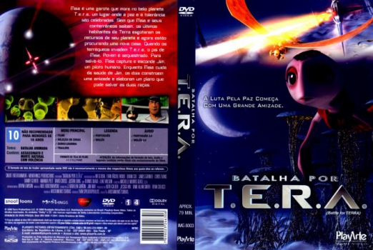
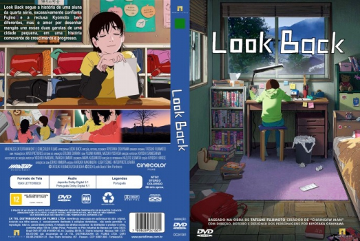
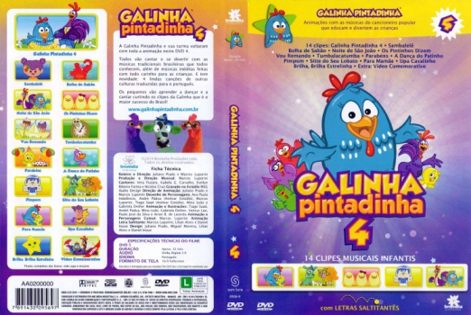

Angel's Movie DataBase


Ultima atualização: 28/12/2024
Número de filmes: 5777
Últimas adições
-
 Batman: Contra o Capuz Vermelho (2010)
Batman: Contra o Capuz Vermelho (2010) -
![poster Aterrorizante 3 [Autorado] (2024)](covers/006956.jpg) Aterrorizante 3 [Autorado] (2024)
Aterrorizante 3 [Autorado] (2024) -
Batalha por T.E.R.A. (2007)
-
Bagagem de Risco [Autorado] (2024)
-
Venom: A Última Rodada [Autorado] (2024)
-
Operação Natal (2024)
-
O Aprendiz [Autorado] (2024)
-
![poster Não Solte! [Autorado] (2024)](covers/006951.jpg) Não Solte! [Autorado] (2024)
Não Solte! [Autorado] (2024) -
Kneecap: Música e Liberdade [Autorado] (2024)
-
![poster Jurado Nº 2 [Autorado] (2024)](covers/006950.jpg) Jurado Nº 2 [Autorado] (2024)
Jurado Nº 2 [Autorado] (2024) -
 Barry e a Banda das Minhocas (2008)
Barry e a Banda das Minhocas (2008) -
 Barbie: Vida de Sereia 2 (2012)
Barbie: Vida de Sereia 2 (2012) -
 Barbie: Vida de Sereia (2010)
Barbie: Vida de Sereia (2010) -
 Barbie: Um Natal Perfeito (2011)
Barbie: Um Natal Perfeito (2011) -
 Barbie: Super Princesa (2015)
Barbie: Super Princesa (2015) -
 Barbie: O Quebra-Nozes (2001)
Barbie: O Quebra-Nozes (2001) -
 Barbie e o Castelo de Diamante (2008)
Barbie e o Castelo de Diamante (2008) -
![poster A Informante [Autorado] (2024)](covers/006948.jpg) A Informante [Autorado] (2024)
A Informante [Autorado] (2024) -
![poster Thelma [Autorado] (2024)](covers/006947.jpg) Thelma [Autorado] (2024)
Thelma [Autorado] (2024) -
Barbie: Lago dos Cisnes (2003)
-
Barbie Fairytopia: Mermaidia (2006)
-
![poster A Menina e o Dragão [Autorado] (2024)](covers/006946.jpg) A Menina e o Dragão [Autorado] (2024)
A Menina e o Dragão [Autorado] (2024) -
Enfeitiçados [Autorado] (2024)
-
Barbie Fairytopia (2005)
-
Morte em LaRoy, Texas [Autorado] (2024)
-
Barbie e o Portal Secreto (2014)
-
Barbie Butterfly e a Princesa Fairy (2013)
-
![poster Alien: Romulus [Autorado] (2024)](covers/006943.jpg) Alien: Romulus [Autorado] (2024)
Alien: Romulus [Autorado] (2024) -
![poster Robô Selvagem [Autorado] (2024)](covers/006942.jpg) Robô Selvagem [Autorado] (2024)
Robô Selvagem [Autorado] (2024) -
Barbie Butterfly: A Nova Aventura em Fairytopia (2008)
-
Sorria 2 [Autorado] (2024)
-
Barbie e as Sapatilhas Mágicas (2013)
-
![poster Infestação [Autorado] (2023)](covers/006940.jpg) Infestação [Autorado] (2023)
Infestação [Autorado] (2023) -
Barbie: A Sereia das Pérolas (2014)
-
![poster Deadpool & Wolverine [Autorado] (2024)](covers/006939.jpg) Deadpool & Wolverine [Autorado] (2024)
Deadpool & Wolverine [Autorado] (2024) -
Barbie como Rapunzel (2002)
-
Look Back [Autorado] (2024)
-
Barbie em A Princesa e a Plebéia (2004)
-
![poster Transformers: O Início [Autorado] (2024)](covers/006937.jpg) Transformers: O Início [Autorado] (2024)
Transformers: O Início [Autorado] (2024) -
Barbie: A Princesa & A Popstar (2012)
-
![poster Cúmplice em Fuga [Autorado] (2024)](covers/006936.jpg) Cúmplice em Fuga [Autorado] (2024)
Cúmplice em Fuga [Autorado] (2024) -
Barbie em a Pequena Polegar (2009)
-
Kill: O Massacre no Trem (2024)
-
Barbie Fairytopia - A Magia do Arco-Íris (2007)
-
![poster Coringa: Delírio a Dois [Autorado] (2024)](covers/006934.jpg) Coringa: Delírio a Dois [Autorado] (2024)
Coringa: Delírio a Dois [Autorado] (2024) -
Barbie e a Magia de Aladus (2005)
-
Meu Amigo Pinguim [Autorado] (2024)
-
Barbie em as 12 Princesas Bailarinas (2006)
-
![poster Pets em Ação! [Autorado] (2024)](covers/006932.jpg) Pets em Ação! [Autorado] (2024)
Pets em Ação! [Autorado] (2024) -
Barbie em a Princesa da Ilha (2007)
-
![poster Hellboy e o Homem Torto [Autorado] (2024)](covers/006931.jpg) Hellboy e o Homem Torto [Autorado] (2024)
Hellboy e o Homem Torto [Autorado] (2024) -
Barbie em a Canção de Natal (2008)
-
![poster Não Fale o Mal [Autorado] (2024)](covers/006930.jpg) Não Fale o Mal [Autorado] (2024)
Não Fale o Mal [Autorado] (2024) -
Barbie e suas Irmãs em uma Aventura de Cavalos (2013)
-
Barbie e o Segredo das Fadas (2011)
-
A Última Parada do Arizona [Autorado] (2024)
-
Barbie e As Três Mosqueteiras (2009)
-
![poster A Garota da Vez [Autorado] (2024)](covers/006928.jpg) A Garota da Vez [Autorado] (2024)
A Garota da Vez [Autorado] (2024) -
![poster Horizon: Uma Saga Americana - Capítulo 1 [Autorado] (2024)](covers/006927.jpg) Horizon: Uma Saga Americana - Capítulo 1 [Autorado] (2024)
Horizon: Uma Saga Americana - Capítulo 1 [Autorado] (2024) -
Barbie: Moda e Magia (2010)
-
![poster Longlegs - Vínculo Mortal [Autorado] (2024)](covers/006926.jpg) Longlegs - Vínculo Mortal [Autorado] (2024)
Longlegs - Vínculo Mortal [Autorado] (2024) -
Barbie: Escola de Princesas (2011)
-
![poster O Bastardo [Autorado] (2023)](covers/006925.jpg) O Bastardo [Autorado] (2023)
O Bastardo [Autorado] (2023) -
Bambi 2 (2006)
-
![poster Os Horrores do Caddo Lake [Autorado] (2024)](covers/006924.jpg) Os Horrores do Caddo Lake [Autorado] (2024)
Os Horrores do Caddo Lake [Autorado] (2024) -
Bambi (1942)
-
O Menino e a Garça [Autorado] (2023)
-
Backyardigans: Uniqua em Companheiros de Aventuras (2008)
-
Os Fantasmas Ainda se Divertem: Beetlejuice Beetlejuice [Autorado] (2024)
-
Backyardigans: Tyrone em Tardes de Histórias (2008)
-
![poster O Poço 2 [Autorado] (2024)](covers/006920.jpg) O Poço 2 [Autorado] (2024)
O Poço 2 [Autorado] (2024) -
![poster O Corvo [Autorado] (2024)](covers/006921.jpg) O Corvo [Autorado] (2024)
O Corvo [Autorado] (2024) -
Backyardigans: Tasha em Meu Mundo no Quintal (2009)
-
Backyardigans: Pablo em Na Trilha da Imaginação (2008)
-
![poster Identidades em Jogo [Autorado] (2024)](covers/006919.jpg) Identidades em Jogo [Autorado] (2024)
Identidades em Jogo [Autorado] (2024) -
Backyardigans: Clipes Musicais (2010)
-
![poster Meu Filho, Nosso Mundo [Autorado] (2024)](covers/006918.jpg) Meu Filho, Nosso Mundo [Autorado] (2024)
Meu Filho, Nosso Mundo [Autorado] (2024) -
Aviões 2: Heróis do Fogo ao Resgate (2014)
-
![poster Pisque Duas Vezes [Autorado] (2024)](covers/006917.jpg) Pisque Duas Vezes [Autorado] (2024)
Pisque Duas Vezes [Autorado] (2024) -
Aviões (2013)
-
![poster Tô de Graça: O Filme [Autorado] (2024)](covers/006916.jpg) Tô de Graça: O Filme [Autorado] (2024)
Tô de Graça: O Filme [Autorado] (2024) -
Avatar: A Lenda de Aang - Temporada 01-03 (2005)
-
Lobos [Autorado] (2024)
-
Atlantis: O Retorno de Milo (2003)
-
![poster Divertida Mente 2 [Autorado] (2024)](covers/006913.jpg) Divertida Mente 2 [Autorado] (2024)
Divertida Mente 2 [Autorado] (2024) -
Atlantis: O Reino Perdido (2001)
-
Astro Boy (2009)
-
![poster Afraid [Autorado] (2024)](covers/006914.jpg) Afraid [Autorado] (2024)
Afraid [Autorado] (2024) -
É Assim Que Acaba [Autorado] (2024)
-
Asterix e o Domínio dos Deuses (2014)
-
![poster O Agente Faixa-Preta [Autorado] (2024)](covers/006910.jpg) O Agente Faixa-Preta [Autorado] (2024)
O Agente Faixa-Preta [Autorado] (2024) -
![poster As Três Filhas [Autorado] (2024)](covers/006911.jpg) As Três Filhas [Autorado] (2024)
As Três Filhas [Autorado] (2024) -
As Incríveis Aventuras do Jonny Quest - Volume 1 - Temporada 01 (1996)
-
As Aventuras dos 7 Anões (2014)
-
Tuesday: O Último Abraço [Autorado] (2024)
-
As Aventuras de Tadeo (2012)
-
Borderlands: O Destino do Universo Está em Jogo [Autorado] (2024)
-
As Aventuras de Sammy (2010)
-
![poster Setor 36 [Autorado] (2024)](covers/006907.jpg) Setor 36 [Autorado] (2024)
Setor 36 [Autorado] (2024) -
As Aventuras de Peabody e Sherman (2014)
-
Som da Esperança: A História de Possum Trot [Autorado] (2024)
-
Aventuras da Liga da Justiça: Armadilha do Tempo (2014)
-
![poster MaXXXine [Autorado] (2024)](covers/006905.jpg) MaXXXine [Autorado] (2024)
MaXXXine [Autorado] (2024) -
Arthur e os Minimoys (2006)
-
![poster Harold e o Lápis Mágico [Autorado] (2024)](covers/006904.jpg) Harold e o Lápis Mágico [Autorado] (2024)
Harold e o Lápis Mágico [Autorado] (2024) -
Arthur e a Vingança de Maltazard (2009)
-
![poster Rebel Ridge [Autorado] (2024)](covers/006903.jpg) Rebel Ridge [Autorado] (2024)
Rebel Ridge [Autorado] (2024) -
Arthur e a Guerra dos Dois Mundos (2010)
-
![poster SPY x FAMILY CÓDIGO: Branco [Autorado] (2023)](covers/006902.jpg) SPY x FAMILY CÓDIGO: Branco [Autorado] (2023)
SPY x FAMILY CÓDIGO: Branco [Autorado] (2023) -
Aristogatas (1970)
-
![poster Armadilha [Autorado] (2024)](covers/006901.jpg) Armadilha [Autorado] (2024)
Armadilha [Autorado] (2024) -
Appleseed Alpha (2014)
-
![poster Entrevista com o Demônio [Autorado] (2024)](covers/006900.jpg) Entrevista com o Demônio [Autorado] (2024)
Entrevista com o Demônio [Autorado] (2024) -
Ao Lado de Jesus (2008)
-
Animais Unidos Jamais Serão Vencidos (2010)
-
![poster A Grande Fuga [Autorado] (2023)](covers/006899.jpg) A Grande Fuga [Autorado] (2023)
A Grande Fuga [Autorado] (2023) -
![poster Meu Malvado Favorito 4 [Autorado] (2024)](covers/006898.jpg) Meu Malvado Favorito 4 [Autorado] (2024)
Meu Malvado Favorito 4 [Autorado] (2024) -
Angry Birds 2: O Filme (2019)
-
![poster Pequenas Cartas Obscenas [Autorado] (2024)](covers/006897.jpg) Pequenas Cartas Obscenas [Autorado] (2024)
Pequenas Cartas Obscenas [Autorado] (2024) -
Anastasia (1997)
-
Twisters [Autorado] (2024)
-
Alice no País das Maravilhas (1951)
-
![poster Os Provocadores [Autorado] (2024)](covers/006894.jpg) Os Provocadores [Autorado] (2024)
Os Provocadores [Autorado] (2024) -
![poster Como Vender a Lua [Autorado] (2024)](covers/006895.jpg) Como Vender a Lua [Autorado] (2024)
Como Vender a Lua [Autorado] (2024) -
Aladdin e os 40 Ladrões (1996)
-
Aladdin (1992)
Todos os Filmes
- 5777. Aterrorizante 3 [Autorado] (2024)
- 5776. Bagagem de Risco [Autorado] (2024)
- 5775. O Aprendiz [Autorado] (2024)
- 5774. Operação Natal (2024)
- 5773. Venom: A Última Rodada [Autorado] (2024)
- 5772. Não Solte! [Autorado] (2024)
- 5771. Jurado Nº 2 [Autorado] (2024)
- 5770. Kneecap: Música e Liberdade [Autorado] (2024)
- 5769. A Informante [Autorado] (2024)
- 5768. Thelma [Autorado] (2024)
- 5767. A Menina e o Dragão [Autorado] (2024)
- 5766. Enfeitiçados [Autorado] (2024)
- 5765. Morte em LaRoy, Texas [Autorado] (2024)
- 5764. Alien: Romulus [Autorado] (2024)
- 5763. Robô Selvagem [Autorado] (2024)
- 5762. Sorria 2 [Autorado] (2024)
- 5761. Infestação [Autorado] (2023)
- 5760. Deadpool & Wolverine [Autorado] (2024)
- 5759. Look Back [Autorado] (2024)
- 5758. Transformers: O Início [Autorado] (2024)
- 5757. Cúmplice em Fuga [Autorado] (2024)
- 5756. Kill: O Massacre no Trem (2024)
- 5755. Coringa: Delírio a Dois [Autorado] (2024)
- 5754. Meu Amigo Pinguim [Autorado] (2024)
- 5753. Pets em Ação! [Autorado] (2024)
- 5752. Hellboy e o Homem Torto [Autorado] (2024)
- 5751. Não Fale o Mal [Autorado] (2024)
- 5750. A Última Parada do Arizona [Autorado] (2024)
- 5749. A Garota da Vez [Autorado] (2024)
- 5748. Horizon: Uma Saga Americana - Capítulo 1 [Autorado] (2024)
- 5747. Longlegs - Vínculo Mortal [Autorado] (2024)
- 5746. O Bastardo [Autorado] (2023)
- 5745. Os Horrores do Caddo Lake [Autorado] (2024)
- 5744. O Menino e a Garça [Autorado] (2023)
- 5743. Os Fantasmas Ainda se Divertem: Beetlejuice Beetlejuice [Autorado] (2024)
- 5742. O Corvo [Autorado] (2024)
- 5741. O Poço 2 [Autorado] (2024)
- 5740. Identidades em Jogo [Autorado] (2024)
- 5739. Meu Filho, Nosso Mundo [Autorado] (2024)
- 5738. Pisque Duas Vezes [Autorado] (2024)
- 5737. Tô de Graça: O Filme [Autorado] (2024)
- 5736. Lobos [Autorado] (2024)
- 5735. Afraid [Autorado] (2024)
- 5734. Divertida Mente 2 [Autorado] (2024)
- 5733. É Assim Que Acaba [Autorado] (2024)
- 5732. As Três Filhas [Autorado] (2024)
- 5731. O Agente Faixa-Preta [Autorado] (2024)
- 5730. Tuesday: O Último Abraço [Autorado] (2024)
- 5729. Borderlands: O Destino do Universo Está em Jogo [Autorado] (2024)
- 5728. Setor 36 [Autorado] (2024)
- 5727. Som da Esperança: A História de Possum Trot [Autorado] (2024)
- 5726. MaXXXine [Autorado] (2024)
- 5725. Harold e o Lápis Mágico [Autorado] (2024)
- 5724. Rebel Ridge [Autorado] (2024)
- 5723. SPY x FAMILY CÓDIGO: Branco [Autorado] (2023)
- 5722. Armadilha [Autorado] (2024)
- 5721. Entrevista com o Demônio [Autorado] (2024)
- 5720. A Grande Fuga [Autorado] (2023)
- 5719. Meu Malvado Favorito 4 [Autorado] (2024)
- 5718. Pequenas Cartas Obscenas [Autorado] (2024)
- 5717. Twisters [Autorado] (2024)
- 5716. Como Vender a Lua [Autorado] (2024)
- 5715. Os Provocadores [Autorado] (2024)
- 5714. Planeta dos Macacos: O Reinado [Autorado] (2024)
- 5713. Assassino por Acaso [Autorado] (2024)
- 5712. Clube dos Vândalos [Autorado] (2024)
- 5711. Back to Black [Autorado] (2024)
- 5710. Um Lugar Silencioso: Dia Um [Autorado] (2024)
- 5709. Guerra Sem Regras [Autorado] (2024)
- 5708. A Jovem e o Mar [Autorado] (2024)
- 5707. Bad Boys: Até o Fim [Autorado] (2024)
- 5706. De Repente, Miss! [Autorado] (2024)
- 5705. Love Lies Bleeding - O Amor Sangra [Autorado] (2024)
- 5704. Imaculada [Autorado] (2024)
- 5703. Liga da Justiça: Crise nas Infinitas Terras - Parte Três [Autorado] (2024)
- 5702. Os Estranhos: Capítulo 1 [Autorado] (2024)
- 5701. Garfield - Fora de Casa [Autorado] (2024)
- 5700. Uma Astronauta Quase Perfeita [Autorado] (2024)
- 5699. Os Observadores [Autorado] (2024)
- 5698. Morando com o Crush [Autorado] (2024)
- 5697. O Imaginário [Autorado] (2023)
- 5696. Um Tira da Pesada 4: Axel Foley [Autorado] (2024)
- 5695. Fúria Primitiva [Autorado] (2024)
- 5694. O Rito da Dança [Autorado] (2024)
- 5693. Furiosa: Uma Saga Mad Max [Autorado] (2024)
- 5692. A Última Sessão de Freud [Autorado] (2023)
- 5691. Meninas Não Choram [Autorado] (2024)
- 5690. Crescendo Juntos: A História de Erik e Malik [Autorado] (2024)
- 5689. Amigos Imaginários [Autorado] (2024)
- 5688. A Teia [Autorado] (2024)
- 5687. Ultraman: A Ascensão [Autorado] (2024)
- 5686. Na Terra de Santos e Pecadores [Autorados] (2023)
- 5685. Uma Vida de Esperança [Autorado] (2024)
- 5684. Pais de Pets [Autorado] (2023)
- 5683. O Dublê [Autorado] (2024)
- 5682. O Sabor da Vida [Autorado] (2023)
- 5681. Guerra Civil [Autorado] (2024)
- 5680. As Cores do Mal: Vermelho [Autorado] (2024)
- 5679. Jorge da Capadócia [Autorado] (2024)
- 5678. Godzilla Minus One [Autorado] (2023)
- 5677. A Primeira Profecia [Autorado] (2024)
- 5676. Contra o Mundo [Autorado] (2024)
- 5675. Rivais [Autorado] (2024)
- 5674. Evidências do Amor [Autorado] (2024)
- 5673. Minha Querida Oni [Autorado] (2024)
- 5672. Abigail [Autorado] (2024)
- 5671. Atlas [Autorado] (2024)
- 5670. Uma Prova de Coragem [Autorado] (2024)
- 5669. O Homem dos Sonhos [Autorado] (2023)
- 5668. Golden Kamuy [Autorado] (2024)
- 5667. Instinto Materno [Autorado] (2024)
- 5666. Shaitaan [Autorado] (2024)
- 5665. Godzilla e Kong: O Novo Império [Autorado] (2024)
- 5664. Uma Vida: A História de Nicholas Winton [Autorado] (2023)
- 5663. Colateral [Autorado] (2024)
- 5662. Garotas em Fuga [Autorado] (2024)
- 5661. Ghostbusters: Apocalipse de Gelo [Autorado] (2024)
- 5660. Tartarugas Até Lá Embaixo [Autorado] (2024)
- 5659. Uma Ideia de Você [Autorado] (2024)
- 5658. Lisa Frankenstein [Autorado] (2024)
- 5657. Kung Fu Panda 4 [Autorado] (2024)
- 5656. City Hunter [Autorado] (2024)
- 5655. NYAD [Autorado] (2023)
- 5654. Liga da Justiça: Crise nas Infinitas Terras - Parte 2 [Autorado] (2024)
- 5653. Garra de Ferro [Autorado] (2023)
- 5652. Rebel Moon - Parte 2: A Marcadora de Cicatrizes [Autorado] (2024)
- 5651. A Grande Entrevista [Autorado] (2024)
- 5650. Os Três Mosqueteiros: Milady [Autorado] (2023)
- 5649. Batman: Contra o Capuz Vermelho (2010)
- 5648. Batalha por T.E.R.A. (2007)
- 5647. Barry e a Banda das Minhocas (2008)
- 5646. Barbie: Vida de Sereia 2 (2012)
- 5645. Barbie: Vida de Sereia (2010)
- 5644. Barbie: Um Natal Perfeito (2011)
- 5643. Barbie: Super Princesa (2015)
- 5642. Barbie: O Quebra-Nozes (2001)
- 5641. Barbie e o Castelo de Diamante (2008)
- 5640. Barbie: Lago dos Cisnes (2003)
- 5639. Barbie Fairytopia: Mermaidia (2006)
- 5638. Barbie Fairytopia (2005)
- 5637. Barbie e o Portal Secreto (2014)
- 5636. Barbie Butterfly e a Princesa Fairy (2013)
- 5635. Barbie Butterfly: A Nova Aventura em Fairytopia (2008)
- 5634. Barbie e as Sapatilhas Mágicas (2013)
- 5633. Barbie: A Sereia das Pérolas (2014)
- 5632. Barbie como Rapunzel (2002)
- 5631. Barbie em A Princesa e a Plebéia (2004)
- 5630. Barbie: A Princesa & A Popstar (2012)
- 5629. Barbie em a Pequena Polegar (2009)
- 5628. Barbie Fairytopia - A Magia do Arco-Íris (2007)
- 5627. Barbie e a Magia de Aladus (2005)
- 5626. Barbie em as 12 Princesas Bailarinas (2006)
- 5625. Barbie em a Princesa da Ilha (2007)
- 5624. Barbie em a Canção de Natal (2008)
- 5623. Barbie e suas Irmãs em uma Aventura de Cavalos (2013)
- 5622. Barbie e o Segredo das Fadas (2011)
- 5621. Barbie e As Três Mosqueteiras (2009)
- 5620. Barbie: Moda e Magia (2010)
- 5619. Barbie: Escola de Princesas (2011)
- 5618. Bambi 2 (2006)
- 5617. Bambi (1942)
- 5616. Backyardigans: Uniqua em Companheiros de Aventuras (2008)
- 5615. Backyardigans: Tyrone em Tardes de Histórias (2008)
- 5614. Backyardigans: Tasha em Meu Mundo no Quintal (2009)
- 5613. Backyardigans: Pablo em Na Trilha da Imaginação (2008)
- 5612. Backyardigans: Clipes Musicais (2010)
- 5611. Aviões 2: Heróis do Fogo ao Resgate (2014)
- 5610. Aviões (2013)
- 5609. Avatar: A Lenda de Aang - Temporada 01-03 (2005)
- 5608. Atlantis: O Retorno de Milo (2003)
- 5607. Atlantis: O Reino Perdido (2001)
- 5606. Astro Boy (2009)
- 5605. Asterix e o Domínio dos Deuses (2014)
- 5604. As Incríveis Aventuras do Jonny Quest - Volume 1 - Temporada 01 (1996)
- 5603. As Aventuras dos 7 Anões (2014)
- 5602. As Aventuras de Tadeo (2012)
- 5601. As Aventuras de Sammy (2010)
- 5600. As Aventuras de Peabody e Sherman (2014)
- 5599. Aventuras da Liga da Justiça: Armadilha do Tempo (2014)
- 5598. Arthur e os Minimoys (2006)
- 5597. Arthur e a Vingança de Maltazard (2009)
- 5596. Arthur e a Guerra dos Dois Mundos (2010)
- 5595. Aristogatas (1970)
- 5594. Appleseed Alpha (2014)
- 5593. Ao Lado de Jesus (2008)
- 5592. Animais Unidos Jamais Serão Vencidos (2010)
- 5591. Angry Birds 2: O Filme (2019)
- 5590. Anastasia (1997)
- 5589. Alice no País das Maravilhas (1951)
- 5588. Aladdin e os 40 Ladrões (1996)
- 5587. Aladdin (1992)
- 5586. Akira (1988)
- 5585. Aconteceu de Novo no Natal do Mickey (2004)
- 5584. A Viagem de Chihiro (2001)
- 5583. A Verdadeira História do Gato de Botas (2009)
- 5582. A Terra Encantada de Gaya (2004)
- 5581. A Sombra do Batman (2013)
- 5580. A Princesa Encantada: A Fábula da Família Real (2014)
- 5579. A Princesa e o Sapo (2009)
- 5578. A Pequena Sereia: A História de Ariel (2008)
- 5577. A Pequena Sereia II: O Retorno para o Mar (2000)
- 5576. A Pequena Sereia (1989)
- 5575. A Origem dos Guardiões (2012)
- 5574. A Nova Onda do Imperador (2000)
- 5573. A Noiva Cadáver (2005)
- 5572. A Mansão Mágica (2013)
- 5571. A Lenda dos Guardiões (2010)
- 5570. A Lenda do Pé Grande (2007)
- 5569. A Lenda de Oz (2014)
- 5568. A Lady e o Lobo: O Bicho tá Solto (2010)
- 5567. A Fuga do Planeta Terra (2013)
- 5566. A Fuga das Galinhas (2000)
- 5565. A Família do Futuro (2007)
- 5564. A Espada Era a Lei (1963)
- 5563. A Era do Gelo: Especial de Natal (2011)
- 5562. A Era do Gelo 4 (2012)
- 5561. A Era do Gelo 3 (2009)
- 5560. A Era do Gelo 2 (2006)
- 5559. A Era do Gelo (2002)
- 5558. A Dama e o Vagabundo II: As Aventuras de Banzé (2001)
- 5557. A Dama e o Vagabundo (1955)
- 5556. A Casa Monstro (2006)
- 5555. A Casa do Mickey Mouse: Eu Amo a Minnie (2012)
- 5554. A Bela e a Fera (Ed. Diamante) (1991)
- 5553. A Bela e a Fera: O Natal Encantado (1997)
- 5552. A Bela e a Fera - O Mundo Mágico da Bela (1998)
- 5551. A Bela Adormecida (1959)
- 5550. 9: A Salvação (2009)
- 5549. 101 Dálmatas II: A Aventura de Patch em Londres (2002)
- 5548. 101 Dálmatas (1961)
- 5547. Zumbis: Os Mensageiros do Apocalipse (2006)
- 5546. Zona Verde (2010)
- 5545. Zona de Conflito (2013)
- 5544. Zohan: Um Agente Bom de Corte (2008)
- 5543. Zodíaco (2007)
- 5542. Zathura: Uma Aventura Espacial (2005)
- 5541. Z: A Cidade Perdida (2017)
- 5540. Yves Saint Laurent (2014)
- 5539. xXx 2: Estado de Emergência (2005)
- 5538. Xuxa em: O Mistério de Feiurinha (2009)
- 5537. Xuxa Abracadabra (2003)
- 5536. X-Men: Primeira Classe (2011)
- 5535. X-Men: O Filme (2000)
- 5534. X-Men: O Confronto Final (2006)
- 5533. X-Men: Dias de um Futuro Esquecido (2014)
- 5532. X-Men Origens: Wolverine (2009)
- 5531. X-Men 2 (2003)
- 5530. Xingu (2012)
- 5529. Wyatt Earp (1994)
- 5528. Wolverine: Imortal (2013)
- 5527. Wolf Creek: Viagem ao Inferno (2005)
- 5526. Winter, o Golfinho 2 (2014)
- 5525. Winter, o Golfinho (2011)
- 5524. Will: Em Busca do Sonho (2011)
- 5523. Westworld - Onde Ninguém Tem Alma (1973)
- 5522. WAZ - Matemática da Morte (2007)
- 5521. Waterworld: O Segredo das Águas (1995)
- 5520. Watchmen: O Filme (2009)
- 5519. Wasabi (2001)
- 5518. Walt nos Bastidores de Mary Poppins (2013)
- 5517. Wall Street: Poder e Cobiça (1987)
- 5516. W.E.: O Romance do Século (2011)
- 5515. Vozes do Além (2005)
- 5514. Vovó... Zona 3: Tal Pai, Tal Filho (2011)
- 5513. Vovó... Zona 2 (2006)
- 5512. Vovó... Zona (2000)
- 5511. Jackass Apresenta: Vovô Sem Vergonha (2013)
- 5510. Voo 7500 (2014)
- 5509. Volver (2006)
- 5508. Voltando a Viver (2002)
- 5507. Você vai Conhecer o Homem dos seus Sonhos (2010)
- 5506. Você é o Próximo (2013)
- 5505. Você de Novo (2010)
- 5504. Voando Para Casa (2014)
- 5503. Voando Alto (2003)
- 5502. Vizinhos Imediatos de 3º Grau (2012)
- 5501. Vizinhos (2014)
- 5500. Vivendo no Limite (2012)
- 5499. Vivendo no Limite (2011)
- 5498. Vivendo e Aprendendo (2008)
- 5497. Viva a Liberdade (2013)
- 5496. Vítimas de um Assassino (2010)
- 5495. O Pacto (2023)
- 5494. Visões de um Crime (2011)
- 5493. Visões - Você Pode Me Ajudar? (2000)
- 5492. Visão do Crime (2011)
- 5491. Virus (1999)
- 5490. Virgínia (2011)
- 5489. Virando o Jogo (2000)
- 5488. Vira-Lata (2007)
- 5487. VIPs (2011)
- 5486. Texas Hold´Em - Violentos e Perigosos (2012)
- 5485. Violação de Conduta (2003)
- 5484. Vingança Sem Limites (2012)
- 5483. Vingança Entre Assassinos (2009)
- 5482. Vingança em Paris (2013)
- 5481. Vingança em Bangkok (2011)
- 5480. Vingança (2004)
- 5479. Vila das Sombras (2010)
- 5478. Vikingdom: O Reino Viking (2013)
- 5477. Vidas Amargas (1955)
- 5476. Vida de Oração (2008)
- 5475. Vida de Adulto (2013)
- 5474. Vicky Cristina Barcelona (2008)
- 5473. Vício Frenético (2009)
- 5472. Viagem do Medo (2010)
- 5471. Viagem Sem Volta (2013)
- 5470. Viagem ao Centro da Terra: O Filme (2008)
- 5469. Viagem ao Centro da Terra (1959)
- 5468. Viagem à Lua de Júpiter (2013)
- 5467. Viagem 2: A Ilha Misteriosa (2012)
- 5466. Vestido Pra Casar (2014)
- 5465. Versos de um Crime (2013)
- 5464. Veronica Mars (2014)
- 5463. Verônica (2009)
- 5462. Verdade ou Consequência (2010)
- 5461. Vênus Negra (2010)
- 5460. Vendo ou Alugo (2013)
- 5459. Vencer ou Morrer (1993)
- 5458. Vem Dançar (2006)
- 5457. Velocidade Máxima (1994)
- 5456. Veículo 19 (2013)
- 5455. Vanilla Sky (2001)
- 5454. Van Helsing: O Caçador de Monstros (2004)
- 5453. Vampiros de John Carpenter (1998)
- 5452. Vampiros: Os Mortos (2002)
- 5451. 65: Ameaça Pré-Histórica (2023)
- 5450. Vampiras (2012)
- 5449. Vale Tudo (2010)
- 5448. Vai Que Dá Certo (2013)
- 5447. V de Vingança (2006)
- 5446. USS Indianapolis: Homens de Coragem (2016)
- 5445. Usina de Sonhos (2008)
- 5444. Unidas Pela Vida (2014)
- 5443. Unidade 7 Comando de Elite (2012)
- 5442. Lilo, Lilo, Crocodilo (2022)
- 5441. Uma Vida Sem Regras (2008)
- 5440. Uma Vida Com Propósito (2016)
- 5439. Uma Viagem Extraordinária (2013)
- 5438. Uma Segunda Chance (2013)
- 5437. Uma Semana a Três (2014)
- 5436. Uma Segunda Chance (2010)
- 5435. Uma Saída de Mestre (2003)
- 5434. Uma Prova de Amor (2009)
- 5433. Uma Proposta Perfeita (2012)
- 5432. Uma Promessa (2013)
- 5431. Uma Professora Muito Maluquinha (2011)
- 5430. Uma Paixão em Nova York (2012)
- 5429. Uma Nova Chance para Amar (2013)
- 5428. Uma Noite Para Esquecer (2013)
- 5427. Uma Noite no Museu 3: O Segredo da Tumba (2014)
- 5426. Uma Noite no Museu 2 (2009)
- 5425. Uma Noite no Museu (2006)
- 5424. Uma Noite Mais que Louca (2011)
- 5423. Uma Noite Alucinante 3 (1992)
- 5422. Uma Noite Alucinante 2 (1987)
- 5421. Uma Mente Brilhante (2001)
- 5420. Uma Manhã Gloriosa (2010)
- 5419. Uma Longa Viagem (2013)
- 5418. Uma Longa Queda (2014)
- 5417. Uma Linda Mulher (1990)
- 5416. Uma Lição de Vida (2010)
- 5415. Uma Lição de Amor (2001)
- 5414. Uma Ladra Sem Limites (2013)
- 5413. Uma Juíza Sem Juízo (2013)
- 5412. Uma História de Natal (2007)
- 5411. Uma História de Amor (2007)
- 5410. Uma Garota Encantada (2004)
- 5409. Uma Festa no Ar (2004)
- 5408. Uma Família em Apuros (2012)
- 5407. Uma Família de Fantasmas (2011)
- 5406. Uma Família Bem Diferente (2007)
- 5405. Uma Equipe de Honra (2012)
- 5404. Uma Dupla Genial (2013)
- 5403. Uma Comédia Romanticamente Incorreta (2010)
- 5402. Uma Cilada para Roger Rabbit (1988)
- 5401. Uma Cidade Sem Lei (2010)
- 5400. Uma Chamada Perdida 2 (2005)
- 5399. Uma Chamada Perdida (2008)
- 5398. Uma Casa de Pernas Pro Ar (2007)
- 5397. Uma Carona Para o Amor (2011)
- 5396. Uma Carta de Amor (1999)
- 5395. Adão Negro (2022)
- 5394. Uma Canção Para Ela (2014)
- 5393. Uma Boa e Velha Orgia (2011)
- 5392. Uma Babá Quase Perfeita (1993)
- 5391. Uma Aventura Animal (2013)
- 5390. Um Último Desejo (2001)
- 5389. Um Toque no Coração (2013)
- 5388. Um Toque de Pecado (2013)
- 5387. Um Toque de Felicidade (2011)
- 5386. Um Tira no Jardim de Infância (1990)
- 5385. Um Tira Muito Suspeito (1999)
- 5384. Um Tira da Pesada 3 (1994)
- 5383. Um Tira da Pesada 2 (1987)
- 5382. Um Tira da Pesada (1984)
- 5381. Um Tira Acima da Lei (2011)
- 5380. Um Sorriso Tão Grande Quanto a Lua (2012)
- 5379. Um Sonho Possível (2009)
- 5378. Um Sonho de Liberdade (1994)
- 5377. Trem-Bala (2022)
- 5376. Um Século em 43 Minutos (1979)
- 5375. Um Quarto em Roma (2010)
- 5374. Um Príncipe em Nova York (1988)
- 5373. Um Príncipe em Minha Vida 4 - A Aventura do Elefante (2010)
- 5372. Um Príncipe em Minha Vida 3 (2008)
- 5371. Um Príncipe em Minha Vida 2 - O Casamento Real (2006)
- 5370. Um Príncipe em Minha Vida (2004)
- 5369. Um Presente de Grego (2010)
- 5368. Um Porto Seguro (2013)
- 5367. Um Plano Perfeito (2012)
- 5366. Um Plano Brilhante (2014)
- 5365. Um Pai Quase Perfeito (2013)
- 5364. Um Olhar do Paraíso (2009)
- 5363. DC Liga dos Superpets (2022)
- 5362. Top Gun: Maverick (2022)
- 5361. Um Novo Despertar (2011)
- 5360. Um Novo Amor (2013)
- 5359. Um Natal Bom pra Cachorro (2012)
- 5358. Um Milionário em Apuros (2005)
- 5357. Um Método Perigoso (2011)
- 5356. Um Lugar Qualquer (2010)
- 5355. Um Lugar para Recomeçar (2005)
- 5354. Um Lugar Chamado Notting Hill (1999)
- 5353. Um Lobisomem Americano em Londres (1981)
- 5352. Um Jogo de Mestres (2012)
- 5351. Um Hotel Bom pra Cachorro (2009)
- 5350. Um Homem Misterioso (2010)
- 5349. Um Homem de Sorte (2012)
- 5348. Um Homem de Família (2000)
- 5347. Um Homem Contra Wall Street (2013)
- 5346. Um Homem Comum (2013)
- 5345. Um Herói de Brinquedo 2 (2014)
- 5344. Um Herói de Brinquedo (1996)
- 5343. Um Golpe Perfeito (2012)
- 5342. Um Final de Semana em Hyde Park (2012)
- 5341. Um Faz de Conta Que Acontece (2008)
- 5340. Um Fantástico Medo de Tudo (2012)
- 5339. Um Estranho no Ninho (1975)
- 5338. Um Encontro Com Seu Ídolo! (2004)
- 5337. Um Elo de Amor (2013)
- 5336. Um Drink no Inferno 3: A Filha do Carrasco (2000)
- 5335. Um Drink no Inferno 2: Texas Sangrento (1999)
- 5334. Um Drink no Inferno (1996)
- 5333. Um Divã para Dois (2012)
- 5332. Um Dia Perfeito Para Casar (2012)
- 5331. Um Dia de Fúria (1993)
- 5330. Um Dia às Avessas (2009)
- 5329. Um Dia a Casa Cai (1986)
- 5328. Um Dia (2011)
- 5327. Um Cupido Caiu do Céu (2011)
- 5326. Um Crime Perfeito (1998)
- 5325. Um Convidado Bem Trapalhão (1968)
- 5324. Um Conto do Destino (2014)
- 5323. Um Conquistador em Apuros (1990)
- 5322. Um Caso Complicado (2011)
- 5321. Um Casamento na Noite de Natal (2006)
- 5320. Um Caminho de Luz (2008)
- 5319. Um Brinde à Amizade (2013)
- 5318. Um Bom Partido (2012)
- 5317. Um Belo Domingo (2013)
- 5316. Um Beijo a Mais (2006)
- 5315. Um Ato de Liberdade (2008)
- 5314. Um Ato de Coragem (2002)
- 5313. Um Amor para Toda a Vida (2007)
- 5312. Um Amor para Recordar (2002)
- 5311. Sonic 2: O Filme (2022)
- 5310. Um Amor de Tesouro (2008)
- 5309. Morbius (2022)
- 5308. Um Amor ao Acaso (2009)
- 5307. Um Álibi Perfeito (2014)
- 5306. Ultravioleta (2006)
- 5305. Último Samurai (2012)
- 5304. Último Desejo (2013)
- 5303. Última Viagem a Vegas (2013)
- 5302. Cinderela (2021)
- 5301. U-571 - A Batalha do Atlântico (2000)
- 5300. U.S. Marshals: Os Federais (1998)
- 5299. Uncharted: Fora do Mapa (2022)
- 5298. Twister (1996)
- 5297. Twelve - Vidas Sem Rumo (2010)
- 5296. Tusk: A Transformação (2014)
- 5295. Batman (2022)
- 5294. Turistas (2006)
- 5293. Tudo Sobre Minha Mãe (1999)
- 5292. Tudo Por um Sonho (2012)
- 5291. Tudo Por Um Sonho (1995)
- 5290. Tudo por um Furo (2013)
- 5289. Tudo por um Bebê (2012)
- 5288. Tudo Por Justiça (2013)
- 5287. Tudo Por Amor (1991)
- 5286. Tudo Pode dar Certo (2009)
- 5285. Tudo Pode Acontecer (2008)
- 5284. Tudo Pelo Poder (2011)
- 5283. Tudo para Ficar com Ele (2002)
- 5282. Tudo para Ficar com Ela (2014)
- 5281. Tudo em Família (2013)
- 5280. Tudo é Possível (2012)
- 5279. Tudo Acontece em Nova York (2011)
- 5278. Tucker e Dale Contra o Mal (2010)
- 5277. Tubarão 4: A Vingança (1987)
- 5276. Tubarão 3 (1983)
- 5275. Homem-Aranha: Sem Volta Para Casa (2021)
- 5274. Tubarão 2 (1978)
- 5273. Tubarão (1975)
- 5272. Truque de Mestre (2013)
- 5271. Trovão Tropical (2008)
- 5270. Trovão Negro (2009)
- 5269. Tropas Estelares 3 (2008)
- 5268. Tropas Estelares 2 (2004)
- 5267. Tropas Estelares (1997)
- 5266. Tropa de Elite 2: O Inimigo Agora é Outro (2010)
- 5265. Tropa de Elite (2007)
- 5264. Tron: O Legado (2010)
- 5263. Tron: Uma Odisseia Eletrônica (1982)
- 5262. Triplo X (2002)
- 5261. Triângulo Obsceno (2005)
- 5260. Triângulo do Medo (2009)
- 5259. Treze Homens e um Novo Segredo (2007)
- 5258. 13 Dias Que Abalaram o Mundo (2000)
- 5257. King Richard: Criando Campeãs (2021)
- 5256. Três Vezes Amor (2008)
- 5255. Três Solteirões e um Bebê (1987)
- 5254. Três Ladrões e um Bebê (2006)
- 5253. Três Histórias, Um Destino (2012)
- 5252. Três é Demais (2005)
- 5251. Três Amigos! (1986)
- 5250. Trem Noturno para Lisboa (2013)
- 5249. Halloween Kills: O Terror Continua (2021)
- 5248. Matrix Resurrections (2021)
- 5247. Treinando o Papai (2007)
- 5246. Treasure Buddies: Caça ao Tesouro (2012)
- 5245. Trash: A Esperança Vem do Lixo (2014)
- 5244. Trapézio (1956)
- 5243. Trapaça (2013)
- 5242. Transylmania (2009)
- 5241. Transformers: O Lado Oculto da Lua (2011)
- 5240. Resident Evil: Bem-Vindo a Raccoon City (2021)
- 5239. Transformers: A Vingança dos Derrotados (2009)
- 5238. Transformers: A Era da Extinção (2014)
- 5237. Transcendence: A Revolução (2014)
- 5236. Trair é Uma Arte (2009)
- 5235. Trair e Coçar é Só Começar (2006)
- 5234. Traição Perigosa (2010)
- 5233. Tráfico de Órgãos (2010)
- 5232. Traição (2012)
- 5231. Cry Macho: O Caminho para a Redenção (2021)
- 5230. Tráfico de Inocentes (2012)
- 5229. Trabalho Sujo (2008)
- 5228. Totalmente Inocentes (2012)
- 5227. Totalmente Inapropriado (2013)
- 5226. Toque de Mestre (2013)
- 5225. Top Gun - Ases Indomáveis - Edição Especial (1986)
- 5224. Top Gang 2! A Missão (1993)
- 5223. Top Gang! Ases Muito Loucos (1991)
- 5222. Todos os Tons do Prazer (2013)
- 5221. Todo Poderoso: O Filme - 100 Anos de Timão (2010)
- 5220. Todo Poderoso (2003)
- 5219. Todo Mundo Quase Morto (2004)
- 5218. Todo Mundo Hispânico (2009)
- 5217. Todo Mundo em Pânico 5 (2013)
- 5216. Todo Mundo em Pânico 4 (2006)
- 5215. Todo Mundo em Pânico 3 (2003)
- 5214. Todo Mundo em Pânico 2 (2001)
- 5213. Todo Mundo em Pânico (2000)
- 5212. Toda Forma de Amor (2011)
- 5211. Titãs - A Vida Até Parece Uma Festa (2009)
- 5210. Tiros, Garotas e Trapaças (2012)
- 5209. Tiros Cruzados (2009)
- 5208. Tiro Certo (2013)
- 5207. Tiras, Só Que Não (2014)
- 5206. Tiras em Apuros (2010)
- 5205. Tirando a Sorte Grande (2012)
- 5204. Tinha Que Ser Você (2008)
- 5203. Maligno (2021)
- 5202. Tina - A Verdadeira História de Tina Turner (1993)
- 5201. Tin Man: A Nova Geração de OZ (2007)
- 5200. Timer - Contagem Regressiva Para o Amor (2009)
- 5199. Timecop 2 - O Guardião Do Tempo (2003)
- 5198. Snake Eyes (2021)
- 5197. Timecop: O Guardião do Tempo (1994)
- 5196. Tim Maia (2014)
- 5195. Ticker (2001)
- 5194. Thor: O Mundo Sombrio (2013)
- 5193. The Spirit: O Filme (2008)
- 5192. The Runaways: Garotas do Rock (2010)
- 5191. Space Jam: Um Novo Legado (2021)
- 5190. The Rover: A Caçada (2014)
- 5189. The Inbetweeners: O Filme (2011)
- 5188. Os Flintstones: O Filme (1994)
- 5187. A Corporação (2003)
- 5186. The Beatles Explosion (2007)
- 5185. The American Poop: A Vida Pós-Faculdade é uma Droga (2006)
- 5184. Testemunha de Acusação (1957)
- 5183. Tese Sobre um Homicídio (2013)
- 5182. Terror no Pântano (2006)
- 5181. Terror na Ilha (2012)
- 5180. Terror na Água (2011)
- 5179. Terror em Silent Hill (2006)
- 5178. Terreno Proibido (2013)
- 5177. Terra Prometida (2012)
- 5176. Terra dos Mortos (2005)
- 5175. Terra dos Lobos (2011)
- 5174. Terapia Intensiva (2013)
- 5173. Terapia do Sexo (2013)
- 5172. Terapia do Amor (2005)
- 5171. Terapia de Risco (2013)
- 5170. Temporada de Caça (2013)
- 5169. Tempo de Matar (1996)
- 5168. Rogai por Nós (2021)
- 5167. Tempo de Glória (1989)
- 5166. Tempo de Crescer (2009)
- 5165. Temos Vagas 2: A Primeira Diária (2008)
- 5164. Temos Vagas (2007)
- 5163. Bela Vingança (2020)
- 5162. Velozes & Furiosos 9 (2021)
- 5161. Tekken 2: A Vingança de Kazuya (2014)
- 5160. Tekken (2010)
- 5159. Teia de Mentiras (2013)
- 5158. Teen Beach Movie (2013)
- 5157. Ted (2012)
- 5156. Team America - Detonando o Mundo (2004)
- 5155. Te Amarei para Sempre (2009)
- 5154. Taxi Driver: Motorista de Táxi (1976)
- 5153. Taxi 3 (2003)
- 5152. Taxi 2 (2000)
- 5151. Taxi (2004)
- 5150. Tapped Out: A Revanche (2014)
- 5149. Tapete Vermelho (2005)
- 5148. Tão Forte e Tão Perto (2011)
- 5147. Tammy: Fora de Controle (2014)
- 5146. Tainá: A Origem (2011)
- 5145. Tacada Para a Vitória (2012)
- 5144. Tá Rindo do Quê? (2009)
- 5143. Sweeney Todd, O Barbeiro Demoníaco da Rua Fleet (2007)
- 5142. Um Lugar Silencioso - Parte II (2021)
- 5141. Surpresas do Amor (2008)
- 5140. Surpresa em Dobro (2009)
- 5139. Superman: O Filme (1978)
- 5138. Superman: O Retorno (2006)
- 5137. Superman IV: Em Busca da Paz (1987)
- 5136. Superman III (1983)
- 5135. Superman 2: A Aventura Continua (1980)
- 5134. Mortal Kombat (2021)
- 5133. Supergirl (1984)
- 5132. Superbad: É Hoje (2007)
- 5131. Superando Limites (2011)
- 5130. Super Size Me: A Dieta do Palhaço (2004)
- 5129. Super-Heróis: A Liga da Injustiça (2008)
- 5128. Super-Herói: O Filme (2008)
- 5127. Super 8 (2011)
- 5126. Sunshine: Alerta Solar (2007)
- 5125. Sucker Punch: Mundo Surreal (2011)
- 5124. Substitutos (2009)
- 5123. Submundo (2011)
- 5122. Sublime (2007)
- 5121. Sua Alteza? (2011)
- 5120. Street Fighter: A Última Batalha (1994)
- 5119. Street Fighter: A Lenda de Chun-Li (2009)
- 5118. Street Dance - Duas Vezes Mais Quente (2012)
- 5117. Street Dance - Dois Mundos Um Sonho (2010)
- 5116. Stigmata (1999)
- 5115. Stealth: Ameaça Invisível (2005)
- 5114. Godzilla vs. Kong (2021)
- 5113. Starsky & Hutch - Justiça em Dobro (2004)
- 5112. Stargate: Linha do Tempo (2008)
- 5111. Stargate: A Arca da Verdade (2008)
- 5110. Stargate: A Chave para o Futuro da Humanidade (1994)
- 5109. Stardust - O Mistério da Estrela (2007)
- 5108. Star Wars: Episódio VI - O Retorno de Jedi (1983)
- 5107. Star Wars: Episódio V - O Império Contra-ataca (1980)
- 5106. Star Wars: Episódio IV - Uma Nova Esperança (1977)
- 5105. Star Wars: Episódio III - A Vingança dos Sith (2005)
- 5104. Star Wars: Episódio II - Ataque dos Clones (2002)
- 5103. Star Wars: Episódio I - A Ameaça Fantasma (1999)
- 5102. Star Wars - Ewok Adventures (1984)
- 5101. Além da Escuridão - Star Trek (2013)
- 5100. Star Trek (2009)
- 5099. Stan Helsing (2009)
- 5098. Stallone: Cobra (1986)
- 5097. Stalingrado: A Batalha Final (2013)
- 5096. Tom & Jerry: O Filme (2021)
- 5095. Stake Land - Anoitecer Violento (2010)
- 5094. Sr. & Sra. Smith (2005)
- 5093. Spooky Buddies: A Casa Mal-Assombrada (2011)
- 5092. Splice - A Nova Espécie (2009)
- 5091. Splendor: Um Amor em Duas Vidas (1999)
- 5090. Speed Racer (2008)
- 5089. Spawn: O Soldado do Inferno (1997)
- 5088. Sparkle (2012)
- 5087. Space Buddies: Uma Aventura no Espaço (2009)
- 5086. Southland Tales: O Fim do Mundo (2007)
- 5085. Sou Louco por Você (2012)
- 5084. Sonhos Roubados (2009)
- 5083. Sonhos no Gelo (2005)
- 5082. Sonhadora (2005)
- 5081. Freaky: No Corpo de um Assassino (2020)
- 5080. Somos Tão Jovens (2013)
- 5079. Somos o que Somos (2013)
- 5078. Somos Marshall (2006)
- 5077. Sombras do Além (2011)
- 5076. Solteiros com Filhos (2012)
- 5075. Solomon Kane: O Caçador de Demônios (2009)
- 5074. Soldados de Gelo (2013)
- 5073. Monster Hunter (2020)
- 5072. Soldado Universal 3: Regeneração (2009)
- 5071. Soldado Universal: O Retorno (1999)
- 5070. Soldado Universal: Juízo Final (2012)
- 5069. Soldado Universal (1992)
- 5068. Soldado do Futuro (2013)
- 5067. Soldado Anônimo: Campo em Chamas (2014)
- 5066. Sol Vermelho (1971)
- 5065. Sociedade dos Poetas Mortos (1989)
- 5064. Sobreviventes (2014)
- 5063. Sobrevivendo Com Lobos (2007)
- 5062. Sob Suspeita (2006)
- 5061. Sob o Domínio do Medo (2011)
- 5060. Legado Explosivo (2020)
- 5059. Sob o Domínio do Mal (2004)
- 5058. Sob a Pele (2014)
- 5057. Snow Buddies: Uma Aventura no Gelo (2008)
- 5056. Sinistro - A Maldição do Lobisomem (2013)
- 5055. Simbad e a Princesa (1958)
- 5054. Sim Senhor (2008)
- 5053. Sherlock Holmes (2009)
- 5052. Shaolin (2011)
- 5051. Shame (2011)
- 5050. Shakespeare Apaixonado (1998)
- 5049. Shadow - Na Escuridão (2009)
- 5048. Sexy por Acidente (2018)
- 5047. Sexta-Feira Muito Louca (2003)
- 5046. Sexta-Feira 13 - Parte 6: Jason Vive (1986)
- 5045. Sexta-Feira 13 - Parte 5: Um Novo Começo (1985)
- 5044. Sexta-Feira 13 - Parte 3 (1982)
- 5043. Sexta-Feira 13 - Parte 2 (1981)
- 5042. Sexta-Feira 13 - Parte 4: O Capítulo Final (1984)
- 5041. O Homem Certo [Legendado] (2021)
- 5040. Scooby-Doo! A Espada e o Scoob (2021)
- 5039. Sexta-Feira 13 (1980)
- 5038. Sexta-Feira 13 (2009)
- 5037. Mulher-Maravilha 1984 (2020)
- 5036. Sexo, Drogas e Jingle Bells (2015)
- 5035. Sexo Sem Compromisso (2011)
- 5034. Batman: Alma do Dragão (2021)
- 5033. Trolls 2 (2020)
- 5032. Sexo e Mentiras (2007)
- 5031. Sexo com Amor? (2008)
- 5030. Sexo & Consequência (2011)
- 5029. Sex Drive - Rumo ao Sexo (2008)
- 5028. Sex Tape: Perdido na Nuvem (2014)
- 5027. Sex and the City 2 (2010)
- 5026. Bill & Ted: Encare a Música (2020)
- 5025. Sex and the City - O Filme (2008)
- 5024. Seven: Os Sete Crimes Capitais (1995)
- 5023. Sétimo (2013)
- 5022. Setembro em Shiraz (2015)
- 5021. Sete Vidas (2008)
- 5020. Sete Homens e Um Destino (2016)
- 5019. Sete Dias Sem Fim (2014)
- 5018. Sete Dias com Marilyn (2011)
- 5017. Espontânea [Legendado] (2020)
- 5016. Sete Almas (2012)
- 5015. Serviço Sujo (2009)
- 5014. Serra Pelada (2013)
- 5013. Serpentes a Bordo (2006)
- 5012. Serpente de Fogo (2009)
- 5011. Seres Rastejantes (2006)
- 5010. Serenity - A Luta Pelo Amanhã (2005)
- 5009. Agentes Vanguard [Autorado] (2020)
- 5008. Serena (2014)
- 5007. Sereias - Elas Existem (2017)
- 5006. Sequestro no Espaço (2012)
- 5005. Sequestro (2009)
- 5004. Separados Pelo Destino (2010)
- 5003. Separados pelo Casamento (2006)
- 5002. Sentimentos que Curam (2014)
- 5001. Sentimentos Mortais (2011)
- 5000. Sentidos do Amor (2011)
- 4999. Sentença de Morte (2013)
- 4998. Senna (2010)
- 4997. Senhor do Crime (2013)
- 4996. Sempre ao Seu Lado (2009)
- 4995. Sem Vestígios (2008)
- 4994. Sem Sentido (2012)
- 4993. Sem Sentido (1998)
- 4992. Tenet (2020)
- 4991. Sem Segurança nenhuma (2012)
- 4990. Sem Saída (2011)
- 4989. Sem Retorno (2015)
- 4988. Sem Regras (2010)
- 4987. Sem Proteção (2012)
- 4986. Sem Perdão (2017)
- 4985. Sem Perdão (2017)
- 4984. Sem Perdão (2013)
- 4983. Sem Limites (2011)
- 4982. Sem Lei (2011)
- 4981. Sem Gravidade... Sem Cérebro... (2014)
- 4980. Sem Evidências (2013)
- 4979. Sem Escalas (2014)
- 4978. Sem Dor, Sem Ganho (2013)
- 4977. Sem Direito a Resgate (2013)
- 4976. Sem Destino Novamente (2012)
- 4975. Sem Destino (2012)
- 4974. Sem Controle (2017)
- 4973. Sem Atividade Paranormal (2013)
- 4972. Sem Ar (2015)
- 4971. Selvagens (2012)
- 4970. Sela de Prata (1978)
- 4969. Seita Mortal (2011)
- 4968. Seis Razões Para Matar (2008)
- 4967. Segurança Nacional (2003)
- 4966. Segurança em Risco (2017)
- 4965. Segurança de Shopping 2 (2015)
- 4964. Segurança de Shopping (2009)
- 4963. Segura a Onda (1999)
- 4962. Segundas Intenções 3 (2004)
- 4961. Segundas Intenções 2 (2000)
- 4960. Segundas Intenções (2014)
- 4959. Segunda Chance Para o Amor (2007)
- 4958. Shockwave (2006)
- 4957. Segundas Intenções (1999)
- 4956. Seguindo em Frente (2011)
- 4955. Segredos Mortais (2011)
- 4954. Segredos de Um Crime (2013)
- 4953. Segredos de Sangue (2013)
- 4952. Seed 2: A Nova Geração (2014)
- 4951. Sete Psicopatas e um Shih Tzu (2012)
- 4950. Se Puder... Dirija! (2013)
- 4949. Se Eu Fosse Você 2 (2009)
- 4948. Se Eu Fosse Você (2006)
- 4947. Se eu ficar (2014)
- 4946. Se Enlouquecer, Não Se Apaixone (2010)
- 4945. Se Beber, Não Case! Parte III (2013)
- 4944. Se Beber, Não Case! Parte II (2011)
- 4943. Se Beber, Não Case! (2009)
- 4942. Se Beber, Não Entre no Jogo (2014)
- 4941. Screamers: A Caçada (2009)
- 4940. Scott Pilgrim Contra o Mundo (2010)
- 4939. Scooby-Doo! O Mistério Começa (2009)
- 4938. Scooby-Doo! - Aventuras - O Mapa Misterioso (2013)
- 4937. Scooby-Doo 2 - Monstros à Solta (2004)
- 4936. Scooby-Doo! A Maldição do Monstro do Lago (2010)
- 4935. Scooby-Doo (2002)
- 4934. Scarface (1983)
- 4933. Santuário (2011)
- 4932. Santos Justiceiros II - O Retorno (2009)
- 4931. Santos e Soldados: Missão Berlim (2012)
- 4930. Luta por Justiça (2019)
- 4929. Santos e Pecadores (2010)
- 4928. Santa Buddies: Uma Aventura de Natal (2009)
- 4927. Sangue no Gelo (2013)
- 4926. Sangue na Veia (2014)
- 4925. Sangue na Neve (2009)
- 4924. Sangue Frio (2009)
- 4923. X-Men: Fênix Negra (2019)
- 4922. Alita: Anjo de Combate (2019)
- 4921. Sangue e Honra: Batalha dos Clãs (2014)
- 4920. Rogue [Legendado] (2020)
- 4919. Scooby-Doo! Halloween (2020)
- 4918. Sangue e Honra (2011)
- 4917. Sangue e Chocolate (2007)
- 4916. Samurai X 3: O Fim de Uma Lenda (2014)
- 4915. Superman: O Homem do Amanhã (2020)
- 4914. Samurai X 2: O Inferno de Kyoto (2014)
- 4913. Samurai X 1: O Filme (2012)
- 4912. Salve Geral (2009)
- 4911. Salt (2010)
- 4910. Salomão (1997)
- 4909. Salmo 21 (2009)
- 4908. Saindo do Armário (2014)
- 4907. Saga – A Maldição das Sombras (2014)
- 4906. Saco de Ossos - Temporada ??? (2011)
- 4905. Sabotagem (2014)
- 4904. S1mØne - Nasce Uma Super Estrela (2002)
- 4903. Exterminador: Cavaleiros e Dragões - O Filme (2020)
- 4902. S.W.A.T.: Comando Especial 2 (2011)
- 4901. S. Darko: Um Conto de Donnie Darko (2009)
- 4900. Rush: No Limite da Emoção (2013)
- 4899. Ruby Sparks - A Namorada Perfeita (2012)
- 4898. Ruas Sangrentas: O Acerto Final (2006)
- 4897. Uma Noite em Bangkok [Legendado] (2020)
- 4896. Ruas de Fogo (1984)
- 4895. Roubo nas Alturas (2011)
- 4894. Cats (2019)
- 4893. Roubo a Máfia (2014)
- 4892. Cobra Kai [Autorado] - Temporada 02 (2018)
- 4891. Roubar é uma Arte (2013)
- 4890. Cobra Kai [Autorado] - Temporada 01 (2018)
- 4889. Roubando Vidas (2004)
- 4888. Inferno Sobre Rodas [Autorado] - Temporada 05 (2011)
- 4887. Rota de Fuga (2013)
- 4886. Lúcifer [Autorado] [Parte 1] - Temporada 05 (2016)
- 4885. Romeu tem que Morrer (2000)
- 4884. The Good Doctor: O Bom Doutor [Autorado] - Temporada 03 (2019)
- 4883. Romeu + Julieta (1996)
- 4882. Outlander [Autorado] - Temporada 05 (2014)
- 4881. Romeu e Julieta (1968)
- 4880. The Umbrella Academy [Autorado] - Temporada 01 (2019)
- 4879. Romeu e Julieta (2013)
- 4878. Flash [Autorado] - Temporada 05 (2014)
- 4877. Rolou Uma Química (2014)
- 4876. Fear the Walking Dead [Autorado] - Temporada 04 (2018)
- 4875. Rollerball (2002)
- 4874. Fear the Walking Dead [Autorado] - Temporada 03 (2017)
- 4873. Rodeio da Vida (1997)
- 4872. Fear the Walking Dead [Autorado] - Temporada 02 (2016)
- 4871. Rocky: Um Lutador (1976)
- 4870. Fear the Walking Dead [Autorado] - Temporada 01 (2015)
- 4869. Rocky V (1990)
- 4868. Vis a Vis: El Oasis [Autorado] - Temporada 01 (2020)
- 4867. Rocky IV (1985)
- 4866. O Exorcista [Autorado] - Temporada 02 (2017)
- 4865. Rocky III: O Desafio Supremo (1982)
- 4864. O Exorcista [Autorado] - Temporada 01 (2016)
- 4863. Rocky II: A Revanche (1979)
- 4862. Treadstone [Autorado] - Temporada 01 (2019)
- 4861. Rocky Balboa (2006)
- 4860. Manhunt: Deadly Games [Autorado] - Temporada 02 (2017)
- 4859. Rock'n'Rolla: A Grande Roubada (2008)
- 4858. Manhunt: Unabomber [Autorado] - Temporada 01 (2017)
- 4857. Rock of Ages: O Filme (2012)
- 4856. Cursed: A Lenda do Lago [Autorado] - Temporada 01 (2020)
- 4855. Robosapien - O Meu Melhor Amigo (2013)
- 4854. Expresso do Amanhã [Autorado] - Temporada 01 (2020)
- 4853. RoboCop 3 (1993)
- 4852. Hanna [Autorado] - Temporada 01 (2019)
- 4851. RoboCop 2 (1990)
- 4850. O Último Guardião [Autorado] - Temporada 03 (2020)
- 4849. RoboCop: O Policial do Futuro (1987)
- 4848. Dark [Autorado] - Temporada 03 (2020)
- 4847. Robinson Crusoé (1997)
- 4846. Dark [Autorado] - Temporada 02 (2019)
- 4845. Robin Hood (2010)
- 4844. Dark [Autorado] - Temporada 01 (2017)
- 4843. O Caminho de Volta [Legendado] (2020)
- 4842. Kingdom [Autorado] - Temporada 01 (2019)
- 4841. Roberto Carlos em Ritmo de Aventura (1968)
- 4840. Ritmo Urbano (2011)
- 4839. Riocorrente (2013)
- 4838. Rio, Eu Te Amo (2014)
- 4837. Riddick 3 (2013)
- 4836. Ricky Bobby, a Toda Velocidade (2006)
- 4835. Os Originais [Autorado] - Temporada 04 (2013)
- 4834. O Pier [Autorado] - Temporada 01 (2019)
- 4833. Ricardo: Coração de Leão (2013)
- 4832. Réquiem para um Sonho (2000)
- 4831. Ressurreição: Retalhos de um Crime (1999)
- 4830. Resistindo às Tentações (2003)
- 4829. Os 13 Porquês [Autorado] - Temporada 04 (2017)
- 4828. The Good Doctor: O Bom Doutor [Autorado] - Temporada 03 (2017)
- 4827. Resident Evil: O Hóspede Maldito (2002)
- 4826. Resident Evil: Degeneração (2008)
- 4825. Resident Evil: Condenação (2012)
- 4824. Resident Evil 5: Retribuição (2012)
- 4823. Resident Evil 4: Recomeço (2010)
- 4822. Jornada nas Estrelas: Picard [Autorado] - Temporada 01 (2020)
- 4821. The Outsider [Autorado] - Temporada 01 (2020)
- 4820. Resistência (2011)
- 4819. Resident Evil 3: A Extinção (2007)
- 4818. No Balanço das Coisas [Legendado] (2020)
- 4817. A Luz no Fim do Mundo [Legendado] (2019)
- 4816. Resident Evil 2: Apocalipse (2004)
- 4815. Resgate nas Alturas (2012)
- 4814. Resgate Impossível (2012)
- 4813. Resgate em Alta Velocidade (2013)
- 4812. Resgate Abaixo de Zero (2006)
- 4811. Repórteres de Guerra (2010)
- 4810. Repo Men: O Resgate de Órgãos (2010)
- 4809. Replicante (2001)
- 4808. Renascido do Inferno (2009)
- 4807. Renascido das Trevas (2009)
- 4806. Remanescentes: Esquecidos por Deus (2014)
- 4805. Relações Criminosas (2011)
- 4804. Relação Mortal (2011)
- 4803. Relação Explosiva (2012)
- 4802. Sobrevivendo à Noite [Legendado] (2020)
- 4801. Relação em Risco (2013)
- 4800. Reis e Ratos (2012)
- 4799. Reino dos Felinos (2011)
- 4798. Reino dos Assassinos (2010)
- 4797. Reino de Fogo (2002)
- 4796. Reino Animal (2010)
- 4795. Reine Sobre Mim (2007)
- 4794. Regressão (2015)
- 4793. Reféns (2011)
- 4792. Refém da Paixão (2013)
- 4791. Refém Assassino (2010)
- 4790. Refém (2005)
- 4789. Redenção (2011)
- 4788. O Atirador: O Fim de Um Assassino [Legendado] (2020)
- 4787. The Quarry [Legendado] (2020)
- 4786. LEGO DC: Shazam! Magia e Monstros (2020)
- 4785. Redenção (2013)
- 4784. O Chamado da Floresta (2020)
- 4783. RED 2: Aposentados e Ainda Mais Perigosos (2013)
- 4782. RED: Aposentados e Perigosos (2010)
- 4781. Recuperando a Esperança (2013)
- 4780. Recomeço (2013)
- 4779. Maria e João: O Conto das Bruxas (2020)
- 4778. Recém-Formada (2009)
- 4777. Os Órfãos (2020)
- 4776. O Grito (2020)
- 4775. Recém-Chegada (2009)
- 4774. Barrabás (2019)
- 4773. Recém-Casados (2003)
- 4772. Receitas de Amor (2011)
- 4771. Reality da Morte (2011)
- 4770. Ray (2004)
- 4769. Rastros de Violência (2013)
- 4768. Rápida Vingança (2010)
- 4767. Rastros de Ódio (1956)
- 4766. Liga da Justiça Sombria: Guerra de Apokolips (2020)
- 4765. Rampage 2: A Punição (2014)
- 4764. Ramona e Beezus (2010)
- 4763. Rambo IV (2008)
- 4762. Rambo III (1988)
- 4761. Crimes Cibernéticos (2019)
- 4760. Rambo II: A Missão (1985)
- 4759. A Grande Mentira (2019)
- 4758. Hebe: A Estrela do Brasil (2019)
- 4757. Rambo - Programado Para Matar (1982)
- 4756. 1917 (2019)
- 4755. Sonic: O Filme (2020)
- 4754. Rajada de Fogo (1992)
- 4753. Dolittle (2020)
- 4752. Ragnarok (2013)
- 4751. Quiz Show: A Verdade dos Bastidores (1994)
- 4750. Quincas Berro d'Água (2010)
- 4749. Questão de Tempo (2013)
- 4748. Questão de Escolha (2014)
- 4747. Quero ser John Malkovich (1999)
- 4746. Quero ser Grande (1988)
- 4745. Quero Matar Meu Chefe 2 (2014)
- 4744. Quero Dizer que te Amo (1995)
- 4743. Querô (2007)
- 4742. Querido John (2010)
- 4741. Querido Companheiro (2012)
- 4740. Querida, Estiquei o Bebê (1992)
- 4739. Jojo Rabbit (2019)
- 4738. Querida, Encolhi as Crianças (1989)
- 4737. Querida, Encolhi a Gente (1997)
- 4736. Querem Acabar Comigo (2005)
- 4735. Quem Vai Ficar com Mary? (1998)
- 4734. Quem Quer Ser um Milionário? (2008)
- 4733. Queime Depois de Ler (2008)
- 4732. Queima de Arquivo (1996)
- 4731. Queda Mortal (2013)
- 4730. Dois Irmãos: Uma Jornada Fantástica [Autorado] (2020)
- 4729. Quebrando Regras 2 (2011)
- 4728. Quebrando Regras (2008)
- 4727. Quatro Amigas e um Jeans Viajante 2 (2008)
- 4726. Quatro Amigas e um Jeans Viajante (2005)
- 4725. Mortal Kombat Legends: A Vingança de Scorpions (2020)
- 4724. Quatro Amigas e um Casamento (2012)
- 4723. Quase Irmãos (2008)
- 4722. Quase Deuses (2004)
- 4721. Natal Sangrento (2019)
- 4720. Quarteto Fantástico e o Surfista Prateado (2007)
- 4719. Um Espião Animal [Autorado] (2019)
- 4718. Bad Boys Para Sempre (2020)
- 4717. Quarteto Fantástico (2005)
- 4716. Sócias em Guerra (2020)
- 4715. Depois da Escuridão (2019)
- 4714. KV1: Almas de Ferro (2018)
- 4713. Quarentena 2 (2011)
- 4712. Quarentena (2008)
- 4711. Quando o Jogo Está Alto (2014)
- 4710. Jumanji: Próxima Fase (2019)
- 4709. Bloodshot (2020)
- 4708. Quando Me Apaixono (2007)
- 4707. E agora? A mamãe saiu de férias! (2019)
- 4706. Quando em Roma (2010)
- 4705. Quando Chama o Coração (2013)
- 4704. Quando as Coisas Acontecem (2011)
- 4703. Qualquer Gato Vira-Lata (2011)
- 4702. Qual Seu Número? (2011)
- 4701. Pura Adrenalina (2011)
- 4700. Punhos de Aço (2009)
- 4699. Aves de Rapina: Arlequina e sua Emancipação Fantabulosa (2020)
- 4698. Pulse (2006)
- 4697. Psicose 4: O Começo (1990)
- 4696. Psicose 3 (1986)
- 4695. Psicose 2 (1983)
- 4694. O Farol (2019)
- 4693. Psicose (1998)
- 4692. Psicose (1960)
- 4691. Próximo a Deus: A Jornada de Jéssica (2012)
- 4690. Prova de Redenção (2012)
- 4689. Star Wars: A Ascensão Skywalker (2019)
- 4688. Prova de Fogo (1995)
- 4687. Protegida por um Anjo (2006)
- 4686. Protegendo o Inimigo (2012)
- 4685. Pronto Para Recomeçar (2011)
- 4684. Pronta para Amar (2011)
- 4683. Prometheus (2012)
- 4682. Projeto Dinossauro (2012)
- 4681. Programa de Proteção para Princesas (2009)
- 4680. Profissão de Risco (2014)
- 4679. Professora Sem Classe (2011)
- 4678. Professor Peso Pesado (2012)
- 4677. Arcanjo Renegado [Autorado] - Temporada 01 (2020)
- 4676. O Caso de Richard Jewell (2019)
- 4675. Parasita (2019)
- 4674. Frozen II (2019)
- 4673. Procura-se um Amor que Goste de Cachorros (2005)
- 4672. Procura-se um Amigo para o Fim do Mundo (2012)
- 4671. Procurando Monica Velour (2010)
- 4670. Prisioneiros do poder (2008)
- 4669. Príncipe de Ferro (2010)
- 4668. Príncipe da Pérsia: As Areias do Tempo (2010)
- 4667. Uma Segunda Chance Para Amar (2019)
- 4666. Primo Basílio (2007)
- 4665. Primitivo (2007)
- 4664. Presságio (2009)
- 4663. Presos no Gelo III (2010)
- 4662. Entre Facas e Segredos (2019)
- 4661. Presa na Escuridão (2013)
- 4660. Prenda-me se for Capaz (2002)
- 4659. Carcereiros: O Filme (2019)
- 4658. Premonições (2007)
- 4657. Vikings [Autorado] - Temporada 06 (2013)
- 4656. Premonição 5 (2011)
- 4655. A Família Addams (2019)
- 4654. As Panteras (2019)
- 4653. O Mundo Sombrio de Sabrina [Autorado] - Temporada 03 (2020)
- 4652. Premonição 3 (2006)
- 4651. Premonição 2 (2003)
- 4650. Um Lindo Dia na Vizinhança (2019)
- 4649. Premonição (2000)
- 4648. Cores da Justiça [Legendado] (2019)
- 4647. Predadores (2010)
- 4646. Maria do Caritó (2019)
- 4645. Ford vs Ferrari (2019)
- 4644. Brincando com Fogo (2019)
- 4643. Predador 2: A Caçada Continua (1990)
- 4642. Bons Meninos (2019)
- 4641. Precisamos Falar Sobre o Kevin (2011)
- 4640. Invasão ao Serviço Secreto (2019)
- 4639. O Exterminador do Futuro: Destino Sombrio (2019)
- 4638. Doutor Sono (2019)
- 4637. Brooklyn: Sem Pai Nem Mãe (2019)
- 4636. Preciosa: Uma História de Esperança (2009)
- 4635. Downton Abbey: O Filme (2019)
- 4634. Praia do Futuro (2014)
- 4633. Abigail e a Cidade Proibida (2019)
- 4632. Possuídos (1998)
- 4631. Hebe [Autorado] - Temporada 01 (2019)
- 4630. Titãs [Autorado] - Temporada 02 (2018)
- 4629. Escola de Magia [Autorado] - Temporada 02 (2016)
- 4628. Escola de Magia [Autorado] - Temporada 01 (2015)
- 4627. The Good Doctor: O Bom Doutor [Autorado] - Temporada 03 (2019)
- 4626. Possuídos (2006)
- 4625. Possessão (2012)
- 4624. Porky's 2: O Dia Seguinte (1983)
- 4623. Porky's: A Casa do Amor e do Riso (1981)
- 4622. Abominável (2019)
- 4621. Malévola: Dona do Mal (2019)
- 4620. Por um Triz (2003)
- 4619. The Witcher [Autorado] - Temporada 01 (2019)
- 4618. Por Quem os Sinos Dobram (1943)
- 4617. Por Favor, Matem Minha Mulher (1986)
- 4616. Por Amor e Honra (2013)
- 4615. Ponto Final: Match Point (2005)
- 4614. Ponto de Vista (2008)
- 4613. Ponto de Partida (2009)
- 4612. Projeto Gemini (2019)
- 4611. Ponte para Terabítia (2007)
- 4610. Pompeia (2014)
- 4609. Poltergeist: O Fenômeno (1982)
- 4608. Policial Sob Suspeita (2011)
- 4607. Policial em Apuros (2014)
- 4606. Police Story: A Guerra das Drogas (1985)
- 4605. Police Story 4: Primeiro Impacto (1996)
- 4604. Police Story 3: Supercop (1992)
- 4603. Police Story 2: Codinome Radical (1988)
- 4602. Poder Sem Limites (2012)
- 4601. Poder Paranormal (2012)
- 4600. Poder Além da Vida (2006)
- 4599. Dora e a Cidade Perdida (2019)
- 4598. Pluto Nash (2002)
- 4597. Platoon (1986)
- 4596. Plataforma do Medo (2004)
- 4595. Ad Astra: Rumo às Estrelas (2019)
- 4594. Você [Autorado] - Temporada 02 (2018)
- 4593. Plano de Voo (2005)
- 4592. Plano de Fuga (2012)
- 4591. Plano B (2010)
- 4590. A Música da Minha Vida (2019)
- 4589. Planeta Terror (2007)
- 4588. Planeta Feroz (2011)
- 4587. Planeta dos Macacos: O Confronto (2014)
- 4586. Planeta dos Macacos: A Origem (2011)
- 4585. Planeta dos Macacos (2001)
- 4584. Pixote: A Lei do Mais Fraco (1981)
- 4583. Fronteiras do Universo [Autorado] - Temporada 01 (2019)
- 4582. Você [Autorado] - Temporada 01 (2018)
- 4581. Narcos: Mexico [Autorado] - Temporada 01 (2018)
- 4580. Narcos [Autorado] - Temporada 02 (2015)
- 4579. Narcos [Autorado] - Temporada 01 (2015)
- 4578. O Mandaloriano [Autorado] - Temporada 01 (2019)
- 4577. Perdidos no Espaço [Autorado] - Temporada 02 (2018)
- 4576. Carnival Row [Autorado] - Temporada 01 (2019)
- 4575. See [Autorado] - Temporada 01 (2019)
- 4574. Watchmen [Autorado] - Temporada 01 (2019)
- 4573. The Crown [Autorado] - Temporada 03 (2016)
- 4572. The Crown [Autorado] - Temporada 02 (2016)
- 4571. The Crown [Autorado] - Temporada 01 (2016)
- 4570. Outlander [Autorado] - Temporada 04 (2014)
- 4569. Piratas do Espaço (1996)
- 4568. Amado Batista 44 Anos (2019)
- 4567. Piratas do Caribe: O Baú da Morte (2006)
- 4566. Piratas do Caribe: No Fim do Mundo (2007)
- 4565. Piratas do Caribe: Navegando em Águas Misteriosas (2011)
- 4564. Piratas da Informática (1999)
- 4563. Piranha 2 (2012)
- 4562. Piranha (2010)
- 4561. Pink Floyd - The Wall (1982)
- 4560. Picardias Estudantis (1982)
- 4559. Philomena (2013)
- 4558. Phantom - A Última Missão (2013)
- 4557. Peter Pan (2003)
- 4556. Peter e Vandy (2009)
- 4555. Pesadelos do Passado 2 (2014)
- 4554. Pesadelos do Passado (2012)
- 4553. Perseguição Virtual (2014)
- 4552. Perseguição Obsessiva (2011)
- 4551. Ela Disse, Ele Disse (2019)
- 4550. Perseguição Implacável (2014)
- 4549. Perseguição Implacável (2012)
- 4548. Perseguição 3: Correndo Para a Morte (2014)
- 4547. Perigosas (2009)
- 4546. Perigos da Mente (2013)
- 4545. Coringa [Autorado] (2019)
- 4544. Rambo: Até o Fim (2019)
- 4543. Perigo por Encomenda (2012)
- 4542. Era Uma Vez em... Hollywood (2019)
- 4541. Perfume de Mulher (1992)
- 4540. Perfil.com (2007)
- 4539. Perfeitos no Amor (2004)
- 4538. Perdoado (2011)
- 4537. Perdidos no Espaço: O Filme (1998)
- 4536. Perdido Pra Cachorro 3 (2012)
- 4535. Perdido Pra Cachorro 2 (2011)
- 4534. Perdido pra Cachorro (2008)
- 4533. Perdida em Istambul: Ela Se Foi (2004)
- 4532. Percy Jackson e o Mar de Monstros (2013)
- 4531. Percy Jackson e o Ladrão de Raios (2010)
- 4530. Pequenos Milagres (2002)
- 4529. Pequenos Milagres (2010)
- 4528. Yesterday (2019)
- 4527. Pequenos Invasores (2009)
- 4526. Pequenos Guerreiros (1998)
- 4525. Rainhas do Crime (2019)
- 4524. Pequenos Espiões 4 (2011)
- 4523. Pequenos Espiões 3: Game Over (2003)
- 4522. Pequenos Espiões 2: A Ilha dos Sonhos Perdidos (2002)
- 4521. Pequenos Espiões (2001)
- 4520. Pequeno Problema, Mega Confusão (2012)
- 4519. Pequenas Histórias (2007)
- 4518. Pense como Eles Também (2014)
- 4517. Alexandre Pires: O Baile do Nego Véio Ao Vivo Em Jurerê Internacional (2019)
- 4516. Pense como Eles (2012)
- 4515. Penetras Bons de Bico (2005)
- 4514. Penelope (2006)
- 4513. Pelos Olhos de Maisie (2013)
- 4512. O Anjo de Auschwitz (2019)
- 4511. Eu Acredito (2017)
- 4510. Sobre Rodas (2017)
- 4509. Pelé Eterno (2004)
- 4508. Pela Vida de um Amigo (1998)
- 4507. Peixe Grande e suas Histórias Maravilhosas (2003)
- 4506. Pegadas (2011)
- 4505. Pedalando com Molière (2013)
- 4504. Pecados Mortais (2012)
- 4503. Pearl Harbor (2001)
- 4502. Paz, Amor e Muito Mais (2011)
- 4501. Patrick: O Despertar do Mal (2013)
- 4500. Patch Adams, o Amor é Contagioso (1998)
- 4499. Passe Livre (2011)
- 4498. Passagem para a Vida (2011)
- 4497. Passageiros (2008)
- 4496. It: Capítulo Dois (2019)
- 4495. Passageiro 57 (1992)
- 4494. Parker (2013)
- 4493. Paris, Te Amo (2006)
- 4492. Paris a qualquer preço (2013)
- 4491. Pare! Senão Mamãe Atira (1992)
- 4490. Yasmin Santos: Ao Vivo em São Paulo (2019)
- 4489. Outra Vida [Autorado] - Temporada 01 (2019)
- 4488. Paranóia (2007)
- 4487. Paraísos Artificiais (2012)
- 4486. Parada Inesperada (2013)
- 4485. New Amsterdam [Autorado] - Temporada 01 (2018)
- 4484. Para Sempre Cinderela (1998)
- 4483. Para Sempre (2012)
- 4482. Para se Divertir, Ligue... (2012)
- 4481. Impuros [Autorado] - Temporada 02 (2018)
- 4480. Para Roma, com Amor (2012)
- 4479. Henrique & Juliano: Menos é Mais (2019)
- 4478. Para Maiores (2013)
- 4477. Jack Ryan [Autorado] - Temporada 02 (2018)
- 4476. Para Escrever o Amor em Seus Braços (2015)
- 4475. Par Perfeito (2010)
- 4474. Papillon (1973)
- 4473. Siren [Autorado] - Temporada 01 (2018)
- 4472. Pânico na Torre (2012)
- 4471. Pânico na Neve (2010)
- 4470. Pânico na Ilha (2009)
- 4469. Legados [Autorado] - Temporada 01 (2018)
- 4468. Pânico na Floresta 6 [Autorado] (2014)
- 4467. Pânico na Floresta 5 [Autorado] (2012)
- 4466. Pânico na Floresta 4 (2011)
- 4465. Os 13 Porquês [Autorado] - Temporada 03 (2019)
- 4464. Pânico na Floresta 3 (2009)
- 4463. Pânico na Floresta 2 (2007)
- 4462. Pânico na Floresta (2003)
- 4461. Baby [Autorado] - Temporada 02 (2018)
- 4460. Pânico na Escola (2011)
- 4459. Pânico 4 (2011)
- 4458. Pânico 3 (2000)
- 4457. Irmandade [Autorado] - Temporada 01 (2019)
- 4456. Pânico 2 (1997)
- 4455. Pânico (1996)
- 4454. Pandorum (2009)
- 4453. Sobrenatural [Autorado] - Temporada 14 (2005)
- 4452. Palooza: Pura Curtição (2013)
- 4451. Palhaço Assassino (1989)
- 4450. Palavras e Imagens (2014)
- 4449. Os 13 Porquês [Autorado] - Temporada 02 (2017)
- 4448. Scooby-Doo! De Volta à Ilha dos Zumbis (2019)
- 4447. Velozes & Furiosos: Hobbs & Shaw (2019)
- 4446. Paixão Obsessiva (2011)
- 4445. Paixão Mortal (2013)
- 4444. Paixão Inocente (2013)
- 4443. Fear the Walking Dead [Autorado] - Temporada 05 (2015)
- 4442. Paixão de Aluguel (2005)
- 4441. País do Desejo (2012)
- 4440. Paintball - Jogue para sobreviver (2009)
- 4439. Siren [Autorado] - Temporada 02 (2019)
- 4438. Brinquedo Assassino (2019)
- 4437. Pague para Entrar, Reze para Sair (1981)
- 4436. Pagando Bem, que Mal Tem? (2008)
- 4435. Padre (2011)
- 4434. Os 13 Porquês [Autorado] - Temporada 01 (2017)
- 4433. Juntos Para Sempre (2019)
- 4432. Pacto Secreto (2009)
- 4431. Pacto Maligno (2014)
- 4430. Pacto do Passado (2011)
- 4429. Assassinos Wu [Autorado] - Temporada 01 (2019)
- 4428. Pacto de Vingança (2013)
- 4427. Pacto de Sangue (2011)
- 4426. P2: Sem Saída (2007)
- 4425. Manifest - O mistério do voo 828 [Autorado] - Temporada 01 (2018)
- 4424. Caçador de Mentes [Autorado] - Temporada 02 (2017)
- 4423. Star Trek: Discovery [Autorado] - Temporada 02 (2018)
- 4422. P.S. Eu te Amo (2007)
- 4421. Oz: Mágico e Poderoso (2013)
- 4420. Oyama - O Lutador Lendário (2004)
- 4419. Caçador de Mentes [Autorado] - Temporada 01 (2017)
- 4418. Supergirl [Autorado] - Temporada 04 (2015)
- 4417. Dragon Ball Super [Autorado] - Volume 1 (2015)
- 4416. Ovelha Negra (2012)
- 4415. Outro Conto da Nova Cinderela (2008)
- 4414. Outono em Nova York (2000)
- 4413. O Conto da Aia [Autorado] - Temporada 03 (2017)
- 4412. Knightfall [Autorado] - Temporada 02 (2017)
- 4411. Knightfall [Autorado] - Temporada 01 (2017)
- 4410. Outlander: Guerreiro vs Predador (2008)
- 4409. Ouija: O Jogo dos Espíritos (2014)
- 4408. Os X-Mercenários (2014)
- 4407. The Boys [Autorado] - Temporada 01 (2019)
- 4406. Elite [Autorado] - Temporada 02 (2018)
- 4405. Elite [Autorado] - Temporada 01 (2018)
- 4404. O Mistério da Fé (2017)
- 4403. Os Vampiros Que Se Mordam (2010)
- 4402. Os Últimos Dias (2010)
- 4401. Os Três Patetas (2012)
- 4400. Vis a Vis [Autorado] - Temporada 04 (2018)
- 4399. Vis a Vis [Autorado] - Temporada 03 (2017)
- 4398. Vis a Vis [Autorado] - Temporada 02 (2016)
- 4397. Vis a Vis [Autorado] - Temporada 01 (2015)
- 4396. O Rei Leão (2019)
- 4395. Os Três Mosqueteiros (2011)
- 4394. O Trapalhão e a Luz Azul (1999)
- 4393. Simão, o Fantasma Trapalhão (1998)
- 4392. O Mundo Sombrio de Sabrina [Autorado] - Temporada 02 (2018)
- 4391. O Mundo Sombrio de Sabrina [Autorado] - Temporada 01 (2018)
- 4390. Taboo [Autorado] - Temporada 01 (2017)
- 4389. Luan: Viva - Ao Vivo em Salvador (2019)
- 4388. O Noviço Rebelde (1997)
- 4387. John Wick 3: Parabellum (2019)
- 4386. Os Trapalhões e a Árvore da Juventude (1991)
- 4385. Gotham [Autorado] - Temporada 05 (2014)
- 4384. La Casa de Papel [Autorado] - Temporada 03 (2017)
- 4383. SAINT SEIYA: Os Cavaleiros do Zodíaco [Autorado] - Temporada 01 (2019)
- 4382. O Mistério de Robin Hood (1990)
- 4381. Uma Escola Atrapalhada (1990)
- 4380. Os Trapalhões na Terra dos Monstros (1989)
- 4379. A Divisão [Autorado] - Temporada 01 (2019)
- 4378. Aruanas [Autorado] - Temporada 01 (2019)
- 4377. The Resident [Autorado] - Temporada 01 (2018)
- 4376. A Princesa Xuxa e os Trapalhões (1989)
- 4375. O Casamento dos Trapalhões (1988)
- 4374. Os Heróis Trapalhões: Uma Aventura na Selva (1988)
- 4373. MIB: Homens de Preto Internacional (2019)
- 4372. Os Fantasmas Trapalhões (1987)
- 4371. Os Trapalhões no Auto da Compadecida (1987)
- 4370. Os Jovens Titãs em Ação! vs. Os Jovens Titãs (2019)
- 4369. Os Trapalhões e o Rei do Futebol (1986)
- 4368. Os Trapalhões no Rabo do Cometa (1986)
- 4367. Predadores Assassinos (2019)
- 4366. Os Trapalhões no Reino da Fantasia (1985)
- 4365. A Filha dos Trapalhões (1984)
- 4364. Toy Story 4 (2019)
- 4363. Magno Oliveira - Sonhador ao Vivo em Barretos (2019)
- 4362. Acapella - Edson & Hudson (2019)
- 4361. A Morte e o Retorno do Superman (2019)
- 4360. Os Desaparecidos (2016)
- 4359. Ícaro e Gilmar Sextou BB Vol. 3 (2019)
- 4358. Pets: A Vida Secreta dos Bichos 2 (2019)
- 4357. Stranger Things [Autorado] - Temporada 03 (2016)
- 4356. Star Trek: Discovery [Autorado] - Temporada 01 (2017)
- 4355. Os Trapalhões e o Mágico de Oróz (1984)
- 4354. O Trapalhão na Arca de Noé (1983)
- 4353. O Cangaceiro Trapalhão (1983)
- 4352. Os Trapalhões na Serra Pelada (1982)
- 4351. Homem-Aranha: Longe de Casa (2019)
- 4350. Os Vagabundos Trapalhões (1982)
- 4349. Atentado ao Hotel Taj Mahal (2019)
- 4348. Annabelle 3: De Volta Para Casa (2019)
- 4347. Ma (2019)
- 4346. Os Saltimbancos Trapalhões (1981)
- 4345. O Mundo Mágico dos Trapalhões (1981)
- 4344. O Incrível Monstro Trapalhão (1980)
- 4343. Nos Caminhos de Deus (2019)
- 4342. Assassinos de Guerra (2019)
- 4341. A Lenda de Golem (2018)
- 4340. Os Três Mosqueteiros Trapalhões (1980)
- 4339. O Rei e os Trapalhões (1979)
- 4338. O Cinderelo Trapalhão (1979)
- 4337. Os Trapalhões na Guerra dos Planetas (1978)
- 4336. O Trapalhão nas Minas do Rei Salomão (1977)
- 4335. O Trapalhão no Planalto dos Macacos (1976)
- 4334. Simbad, O Marujo Trapalhão (1976)
- 4333. O Trapalhão na Ilha do Tesouro (1975)
- 4332. Robin Hood, O Trapalhão da Floresta (1974)
- 4331. Aladim e a Lâmpada Maravilhosa (1973)
- 4330. Aladdin (2019)
- 4329. Turma da Mônica: Laços (2019)
- 4328. Rocketman (2019)
- 4327. Ali Babá e os Quarenta Ladrões (1972)
- 4326. Bonga, o Vagabundo (1969)
- 4325. Dois na Lona (1968)
- 4324. Adorável Trapalhão (1967)
- 4323. Na Onda do Iê-Iê-Iê (1966)
- 4322. Os Suspeitos (1995)
- 4321. Godzilla II: Rei dos Monstros (2019)
- 4320. Redbad: A Invasão dos Francos (2018)
- 4319. Os Suspeitos (2013)
- 4318. Os Soldados Búfalos (1998)
- 4317. Os Smurfs 2 (2013)
- 4316. Os Seus, os Meus e os Nossos (2005)
- 4315. Os Seis Signos da Luz (2007)
- 4314. Os Renegados (2012)
- 4313. Os Reis da Rua (2008)
- 4312. All Is True [Legendado] (2018)
- 4311. Wesley Safadão: TBT ao Vivo (2019)
- 4310. Os Reis da Noite (2011)
- 4309. Os Quatro Dragões (2008)
- 4308. Os Pinguins do Papai (2011)
- 4307. Os Perdedores (2010)
- 4306. Hellboy (2019)
- 4305. Jessica Jones [Autorado] - Temporada 03 (2015)
- 4304. Lembranças Perdidas (2017)
- 4303. Os Penetras (2012)
- 4302. Os Pássaros (1963)
- 4301. Os Outros (2001)
- 4300. Os Olhos de Júlia (2010)
- 4299. Os Normais 2: A Noite Mais Maluca de Todas (2009)
- 4298. The Banana Splits Movie (2019)
- 4297. Os Normais: O Filme (2003)
- 4296. Os Nomes do Amor (2010)
- 4295. A Vingança dos Nerds 2: Os Nerds Saem de Férias (1987)
- 4294. A Maldição da Chorona (2019)
- 4293. Os Miseráveis (1998)
- 4292. LEGO DC: Batman - Assunto de Família (2019)
- 4291. Brightburn - Filho das Trevas (2019)
- 4290. Os Mercenários 3 (2014)
- 4289. Os Mercenários 2 (2012)
- 4288. Os Mercenários (2010)
- 4287. Os Mensageiros (2007)
- 4286. Os Irmãos Grimm (2005)
- 4285. Os Irmãos Cara de Pau 2000 (1998)
- 4284. Os Irmãos Cara de Pau (1980)
- 4283. Os Intocáveis (1987)
- 4282. Os Instrumentos Mortais: Cidade dos Ossos (2013)
- 4281. Os Infratores (2012)
- 4280. Os Infiltrados (2006)
- 4279. Os Indomáveis (2007)
- 4278. Batman: Silêncio (2019)
- 4277. Os Implacáveis (2011)
- 4276. Os Imperdoáveis (1992)
- 4275. Vingadores: Ultimato (2019)
- 4274. Os Homens São de Marte... E é pra Lá que Eu Vou! (2014)
- 4273. Os Goonies (1985)
- 4272. Os Gatões: Uma Nova Balada (2005)
- 4271. Os Garotos Perdidos (Edição Especial Duplo) (1987)
- 4270. Cemitério Maldito (2019)
- 4269. Os Fora da Lei (2012)
- 4268. Os Flintstones em Viva Rock Vegas (2000)
- 4267. Os Finkels em Ação (2011)
- 4266. Os Filhotes da Mamãe Noel (2012)
- 4265. Os Filhos da Meia-Noite (2012)
- 4264. Os Feiticeiros de Waverly Place: O Filme (2009)
- 4263. Os Fantasmas se Divertem (1988)
- 4262. Os Famosos e os Duendes da Morte (2011)
- 4261. Os Estagiários (2013)
- 4260. Os Espíritos (1996)
- 4259. Pokémon: Detetive Pikachu (2019)
- 4258. Os Especialistas (2011)
- 4257. Os Escolhidos (2013)
- 4256. Os Encontros de Lucy (2002)
- 4255. Os Embalos de Sábado Continuam (1983)
- 4254. Cortina de Fogo 2 (2019)
- 4253. Os Embalos de Sábado à Noite (1977)
- 4252. Duas Rainhas (2018)
- 4251. Os Eleitos: Onde o Futuro Começa (1983)
- 4250. Os Deuses Devem Estar Loucos 2 (1989)
- 4249. Os Deuses Devem Estar Loucos (1980)
- 4248. Os Descendentes (2011)
- 4247. Nós (2019)
- 4246. Os Demônios do Templo (1980)
- 4245. Os Delírios de Consumo de Becky Bloom (2009)
- 4244. Os Cavaleiros do Rei (2008)
- 4243. Os Caras de Pau em O Misterioso Roubo do Anel (2014)
- 4242. Criaturas ao Ataque! (2019)
- 4241. A Favorita (2018)
- 4240. Bem-vindos a Marwen (2018)
- 4239. Os Canhões de Navarone (1961)
- 4238. Os Candidatos (2012)
- 4237. Os Caça-Fantasmas 2 (1989)
- 4236. Os Caça-Fantasmas (1984)
- 4235. Os Brutamontes (2012)
- 4234. Os Bons Companheiros (1990)
- 4233. Os Batutinhas: Uma Nova Aventura (2014)
- 4232. Os Batutinhas (1994)
- 4231. Um Ato de Esperança [Legendado] (2017)
- 4230. Os Bad Boys (1995)
- 4229. Shazam! (2019)
- 4228. Os Amigos (2013)
- 4227. Os Agentes do Destino (2011)
- 4226. Os Acompanhantes (2010)
- 4225. Os 7 Guerreiros (2013)
- 4224. Os 3 (2011)
- 4223. Spinning Man: Em Busca da Verdade (2018)
- 4222. Opium (2007)
- 4221. Maligno (2019)
- 4220. O Gênio e o Louco (2019)
- 4219. Dumbo (2019)
- 4218. Implacável (2019)
- 4217. Game of Thrones [Autorado] - Temporada 08 (2019)
- 4216. Operação Zodíaco (2012)
- 4215. Operação Valquíria (2008)
- 4214. Operação Sombra: Jack Ryan (2014)
- 4213. Operação Sofia (2012)
- 4212. Operação Rogue (2014)
- 4211. Operação Invasão 2 (2014)
- 4210. Operação Invasão (2012)
- 4209. Operação Fronteira (2008)
- 4208. Operação Dragão (1973)
- 4207. Dilsinho: Terra do Nunca ao Vivo (2019)
- 4206. Operação Cupido (1998)
- 4205. Operação Corvo (2007)
- 4204. Ludmilla: Hello Mundo (2019)
- 4203. A Morte Te Dá Parabéns 2 (2019)
- 4202. Operação Babá (2005)
- 4201. Ópera do Malandro (1986)
- 4200. Onze Homens e um Segredo (2001)
- 4199. Onze Homens e um Segredo (1960)
- 4198. Ondine (2009)
- 4197. Onde Vivem os Monstros (2009)
- 4196. Onde os Fracos Não Têm Vez (2007)
- 4195. Onde o Amor Está! (2010)
- 4194. Onde Nasce o Amor (2011)
- 4193. Onde Mora a Esperança (2007)
- 4192. Onde Estão as Celebridades? (2013)
- 4191. O Parque dos Sonhos (2019)
- 4190. Onde Está Ally? (2006)
- 4189. Onde está a Felicidade? (2011)
- 4188. Olhos Famintos 2 (2003)
- 4187. A Maldição da Freira (2018)
- 4186. Léo Magalhães: Mais pro Bar do que pra Casa (2019)
- 4185. The Walking Dead [Autorado] - Temporada 09 (2010)
- 4184. Vice (2018)
- 4183. Capitã Marvel (2019)
- 4182. Olhos Famintos (2001)
- 4181. Olhos de Dragão (2012)
- 4180. Olho Por Olho (2014)
- 4179. Olhar de Anjo (2001)
- 4178. Sai de Baixo: O Filme (2019)
- 4177. Olga (2004)
- 4176. Como Treinar o Seu Dragão 3 (2019)
- 4175. Oldboy: Dias de Vingança (2013)
- 4174. Odeio o Dia dos Namorados (2013)
- 4173. Obsessão Perigosa (2014)
- 4172. Obsessão (2012)
- 4171. Obrigado por Fumar (2006)
- 4170. Oblivion (2013)
- 4169. O Zelador Animal (2011)
- 4168. O Voo do Dragão (1972)
- 4167. O Voo das Cegonhas - Temporada 1 (2013)
- 4166. O Voo da Fênix (2004)
- 4165. O Voo (2012)
- 4164. O Vizinho (2008)
- 4163. O Virgem de 41 anos (2010)
- 4162. O Virgem de 40 Anos (2005)
- 4161. O Vingador do Futuro (2012)
- 4160. O Vingador (2011)
- 4159. O Vigarista (2010)
- 4158. O Vidente (2007)
- 4157. O Veterano (2011)
- 4156. O Verão da Minha Vida (2013)
- 4155. O Vencedor (2010)
- 4154. O Último Templário (2009)
- 4153. O Último Samurai (2003)
- 4152. O Último Round (2011)
- 4151. O Último Mestre do Ar (2010)
- 4150. O Último Imperador (1987)
- 4149. O Último Guerreiro das Estrelas (1984)
- 4148. O Último Guarda-Costas (2010)
- 4147. O Último Exorcismo (2010)
- 4146. O Último Exorcismo - Parte 2 (2013)
- 4145. Vidro (2019)
- 4144. O Último dos Moicanos (1992)
- 4143. O Retorno de Mary Poppins (2018)
- 4142. O Último Desafio (2013)
- 4141. O Ultimo Dançarino de Mao (2009)
- 4140. O Último Concerto (2012)
- 4139. Holmes & Watson (2018)
- 4138. O Último a Cair (2011)
- 4137. O Turista (2010)
- 4136. Máquinas Mortais (2018)
- 4135. O Trem Atômico (1999)
- 4134. O Toque (2005)
- 4133. O Tiro (2013)
- 4132. O Testemunho (2012)
- 4131. Miss Bala (2019)
- 4130. O Teorema Zero (2013)
- 4129. O Pequeno Bulldog (2020)
- 4128. Sin City: A Dama Fatal (2014)
- 4127. Justiça: Entre a Lei e a Vingança (2017)
- 4126. Sala de Fuga (2019)
- 4125. Bumblebee (2018)
- 4124. Eu Sou Mais Eu (2019)
- 4123. Boy Erased: Uma Verdade Anulada (2018)
- 4122. LEGO Jurassic World: A Exposição Secreta (2018)
- 4121. Refém do Jogo (2018)
- 4120. O Tempo e o Vento (2013)
- 4119. O Suspeito Mora ao Lado (2011)
- 4118. O Substituto (2011)
- 4117. Homem-Aranha no Aranhaverso (2018)
- 4116. O Sonho de Cassandra (2007)
- 4115. O Som do Trovão (2005)
- 4114. O Som do Coração (2007)
- 4113. O Solteirão (2009)
- 4112. Infiltrado na Klan (2018)
- 4111. Coragem Para Vencer (2016)
- 4110. O Solista (2009)
- 4109. O Sistema (2013)
- 4108. O Silêncio dos Inocentes (1991)
- 4107. As Viúvas (2018)
- 4106. O Sexto Sentido (1999)
- 4105. A Caminho de Casa (2019)
- 4104. O Sequestro do Metrô 123 (2009)
- 4103. O Sequestro (2014)
- 4102. O Sentido da Vida (2010)
- 4101. O Senhor dos Mares (2011)
- 4100. O Senhor das Ruas (2012)
- 4099. Obsessão Perigosa (2018)
- 4098. O Senhor das Moscas [Legendado] (1990)
- 4097. WiFi Ralph: Quebrando a Internet (2018)
- 4096. Trajetória de Um Campeão (2017)
- 4095. De Repente Uma Família (2018)
- 4094. Stan & Ollie [Legendado] (2018)
- 4093. O Senhor das Armas (2005)
- 4092. O Segredo do Lago (2009)
- 4091. Creed II (2018)
- 4090. O Segredo da Cabana (2012)
- 4089. Aquaman (2018)
- 4088. O Segredo Da Borboleta (2012)
- 4087. O Segredo (2006)
- 4086. O Roqueiro (2008)
- 4085. Sobrenatural - Temporada 13 (2005)
- 4084. O Ritual (2011)
- 4083. O Ritual (2012)
- 4082. O Retrato de Dorian Gray (2009)
- 4081. Bohemian Rhapsody (2018)
- 4080. Siembamba (2017)
- 4079. Sadako vs. Kayako (2016)
- 4078. O Retorno dos Vermes Malditos (2010)
- 4077. Resgate no Oeste (2016)
- 4076. O Anel do Rei (2018)
- 4075. Encantado (2018)
- 4074. O Quebra-Nozes e os Quatro Reinos (2018)
- 4073. O Último Duelo (2019)
- 4072. Animais Fantásticos: Os Crimes de Grindelwald (2018)
- 4071. Halloween (2018)
- 4070. Piranha Sharks (2014)
- 4069. Um Homem Comum (2018)
- 4068. O Chamado do Mal (2018)
- 4067. O Grinch (2018)
- 4066. Um Pequeno Favor (2018)
- 4065. Bruno & Barreto: Buteco Raiz (2019)
- 4064. Amor em Little Italy (2018)
- 4063. O Retorno dos Malditos (2007)
- 4062. Operação Overlord (2018)
- 4061. O Retorno do Dragão: A Cidade Perdida (2011)
- 4060. Nada a Perder (2018)
- 4059. O Retorno de Johnny English (2011)
- 4058. O Resgate do Soldado Ryan (1998)
- 4057. Loubet: Singular (2018)
- 4056. O Resgate (2012)
- 4055. O Relutante Fundamentalista (2013)
- 4054. O Reino Proibido (2008)
- 4053. O Rei dos Ladrões (2009)
- 4052. O Rei das Armas (2010)
- 4051. O Rei da Rua (2010)
- 4050. O Reencontro (2012)
- 4049. Cadáver (2018)
- 4048. O Recomeço (2011)
- 4047. O Quinto Poder (2013)
- 4046. Lendas do Amanhã - Temporada 04 (2016)
- 4045. O Quinto Elemento (1997)
- 4044. O Quebra Nozes: A História Que Ninguém Contou (2010)
- 4043. O Primeiro Homem (2018)
- 4042. A Primeira Noite de Crime (2018)
- 4041. Gotham - Temporada 04 (2014)
- 4040. O Que Fazer? (2014)
- 4039. A Casa do Medo - Incidente em Ghostland (2018)
- 4038. Entrevista com Deus (2018)
- 4037. Nasce uma Estrela (2018)
- 4036. Fúria em Alto Mar (2018)
- 4035. O Que Esperar Quando Você Está Esperando (2012)
- 4034. Johnny English 3.0 (2018)
- 4033. O Que é o Amor (2007)
- 4032. Máquina Mortífera - Temporada 02 (2016)
- 4031. O Favorito (2018)
- 4030. O Predador (2018)
- 4029. O Quarto do Pânico (2002)
- 4028. O Quarto do Inferno (2008)
- 4027. O Quarto do Filho (2001)
- 4026. O Quarteto (2012)
- 4025. O Protetor (2005)
- 4024. Lucas Lucco: A Origem (2019)
- 4023. Millennium: A Garota na Teia de Aranha (2018)
- 4022. O Profissional (1994)
- 4021. O Professor Aloprado (1996)
- 4020. O Mistério do Relógio na Parede (2018)
- 4019. O Procurado (2008)
- 4018. O Príncipe Sapo (2001)
- 4017. O Príncipe do Deserto (2011)
- 4016. O Príncipe e Eu (2011)
- 4015. O Príncipe (2014)
- 4014. O Presente (2007)
- 4013. O Predestinado (2014)
- 4012. O Predador (1987)
- 4011. Westworld - Temporada 02 (2016)
- 4010. Jovem Sheldon - Temporada 01 (2017)
- 4009. Papillon (2017)
- 4008. Buscando... (2018)
- 4007. Um Olhar de Esperança (2017)
- 4006. Goosebumps 2: Halloween Assombrado (2018)
- 4005. Legalize Já: Amizade Nunca Morre (2017)
- 4004. Venom (2018)
- 4003. Amigos Alienígenas (2018)
- 4002. Cinderela e o Príncipe Secreto (2018)
- 4001. O Preço do Amanhã (2011)
- 4000. O Preço de um Resgate (1996)
- 3999. O Preço da Liberdade (2012)
- 3998. O Poderoso Chefão III (1990)
- 3997. O Poderoso Chefão II (1974)
- 3996. O Poderoso Chefão (1972)
- 3995. O Poder e a Lei (2011)
- 3994. O Poder do Ritmo (2007)
- 3993. O Poder de Alguns (2013)
- 3992. Pé Pequeno (2018)
- 3991. O Plano Perfeito (2006)
- 3990. Supergirl - Temporada 03 (2015)
- 3989. O Planeta Vermelho (2013)
- 3988. A Batalha do Planeta dos Macacos (1973)
- 3987. A Conquista do Planeta dos Macacos (1972)
- 3986. Fuga do Planeta dos Macacos (1971)
- 3985. De Volta ao Planeta dos Macacos (1970)
- 3984. O Planeta dos Macacos (1968)
- 3983. O Piano Mágico (2011)
- 3982. O Peste (1997)
- 3981. O Pequeno Stuart Little (1999)
- 3980. Lobo Guerreiro 2 (2017)
- 3979. Jill & Joy E O Segredo Do Orfanato (2017)
- 3978. Arcade: Você Vai Entrar Nesse Jogo (2017)
- 3977. Os Jovens Titãs em Ação! Nos Cinemas (2018)
- 3976. Papai Noel & Cia (2017)
- 3975. Rei Arthur: A Volta da Excalibur (2017)
- 3974. Mercenário (2017)
- 3973. Sansão (2018)
- 3972. O Pequeno Grande Guerreiro (2010)
- 3971. Um Dia A Mais Para Viver (2015)
- 3970. O Pequenino (2006)
- 3969. O Patriota (2000)
- 3968. O Pastor (2008)
- 3967. O Pássaro Azul (1940)
- 3966. O Passageiro do Futuro 2 (1996)
- 3965. O Passageiro do Futuro (1992)
- 3964. O Passado Não Perdoa (1960)
- 3963. O Passado (2013)
- 3962. O Palhaço (2011)
- 3961. O Paizão (1999)
- 3960. O Pagamento de uma Vida (2010)
- 3959. O Pagador de Promessas (1962)
- 3958. Fernando & Sorocaba: O Chamado da Floresta (2018)
- 3957. Luan Santana: Live-Móvel (2015)
- 3956. Diego & Victor Hugo: Querosene e o Violão (2018)
- 3955. Paranóia (2018)
- 3954. O Padrasto (2009)
- 3953. O Magnata (2007)
- 3952. O Jovem Karl Marx [Legendado] (2017)
- 3951. Cícero Morais: Desculpa Mundo ao Vivo em Goiânia
- 3950. Meu Ex é um Espião (2018)
- 3949. O Pacto (2006)
- 3948. O Pacto (2011)
- 3947. A Freira (2018)
- 3946. O Pacificador (1997)
- 3945. Gusttavo Lima: O Embaixador (2018)
- 3944. O Orfanato (2007)
- 3943. O Olho do Mal (2008)
- 3942. O Nosso Segredo (2013)
- 3941. O Nome da Rosa (1986)
- 3940. O Noivo da Minha Melhor Amiga (2011)
- 3939. O Nevoeiro (2007)
- 3938. Dama de Espadas (2016)
- 3937. O Segredo de Marrowbone (2017)
- 3936. 10 Segundos Para Vencer (2018)
- 3935. Christopher Robin: Um Reencontro Inesquecível (2018)
- 3934. Papa Francisco: Um Homem de Palavra (2018)
- 3933. Megatubarão (2018)
- 3932. O Negociador (1997)
- 3931. O Negociador (2011)
- 3930. Crô em Família (2018)
- 3929. Alfa (2018)
- 3928. O Conto de Natal dos Muppets (1992)
- 3927. O Natal dos Amigos Indiscretos (2013)
- 3926. O Mundo Imaginário do Doutor Parnassus (2009)
- 3925. O Morro dos Ventos Uivantes (1992)
- 3924. O Morro dos Ventos Uivantes (2011)
- 3923. Meu Cão da Guarda (2017)
- 3922. O Mordomo da Casa Branca (2013)
- 3921. O Mito (2005)
- 3920. O Mistério de Grace (2014)
- 3919. O Protetor 2 (2018)
- 3918. O Mistério da Passagem da Morte (2013)
- 3917. O Mistério da Libélula (2002)
- 3916. Votos de Amor (2016)
- 3915. O Milagre Veio do Espaço (1987)
- 3914. O Mestre do Kung Fu (2009)
- 3913. O Mestre da Guerra 2 (2012)
- 3912. O Mestre da Guerra (2012)
- 3911. LBJ: A Esperança de Uma Nação (2017)
- 3910. O Mestre (2012)
- 3909. O Rei Guerreiro (2017)
- 3908. A Noite Devorou o Mundo (2018)
- 3907. Vigilantes da Guerra (2014)
- 3906. A Marca Negra (2018)
- 3905. Os Incríveis 2 (2018)
- 3904. A Fera (2017)
- 3903. Mamma Mia! Lá Vamos Nós de Novo (2018)
- 3902. Escobar: A Traição (2017)
- 3901. Missão: Impossível - Efeito Fallout (2018)
- 3900. Apartamento 212 (2017)
- 3899. O jogo da Vida (2016)
- 3898. Peter Pan: À Procura do Livro do Nunca (2018)
- 3897. A Batalha das Ardenas (2018)
- 3896. Preso no Tempo (2016)
- 3895. O Mentiroso (1997)
- 3894. O Mensageiro (2014)
- 3893. O Menino no Espelho (2014)
- 3892. O Menino do Pijama Listrado (2008)
- 3891. Submersão (2017)
- 3890. O Menino da Porteira (2009)
- 3889. O Melhor Pai do Mundo (2009)
- 3888. O Melhor Momento da Vida (2008)
- 3887. O Melhor Lance (2013)
- 3886. O Melhor Jogo da História (2005)
- 3885. Bruninho & Davi: Violada (2018)
- 3884. O Melhor Amigo do Papai Noel (2010)
- 3883. O Melhor Amigo da Noiva (2008)
- 3882. O Massacre da Serra Elétrica (1974)
- 3881. O Máskara (1994)
- 3880. O Manto Sagrado (1953)
- 3879. A Casa do Medo (2018)
- 3878. O Ritual (2017)
- 3877. O Nome da Morte (2017)
- 3876. Deus Não Está Morto: Uma Luz na Escuridão (2018)
- 3875. Hotel Transilvânia 3: Férias Monstruosas (2018)
- 3874. Arranha-Céu: Coragem Sem Limite (2018)
- 3873. Carnivore: O Lobisomem De Londres (2017)
- 3872. Tem Alienígenas no meu Quarto (2018)
- 3871. Uma Questão de Fé [Legendado] (2017)
- 3870. Jogo Duplo [Legendado] (2018)
- 3869. Prisão Estelar (2018)
- 3868. Slender Man: Pesadelo Sem Rosto (2018)
- 3867. A Vingança de Lefty Brown (2017)
- 3866. PAW Patro: Filhotes Protetores (2018)
- 3865. Timber e Mickey: Amigos Especiais (2016)
- 3864. Big Bang: A Teoria - Temporada 11 (2007)
- 3863. O Despertar das Sombras (2017)
- 3862. Viking: Os Pergaminhos Sagrados (2016)
- 3861. Por Trás dos Seus Olhos [Legendado] (2016)
- 3860. Flash - Temporada 04 (2017)
- 3859. Pistoleiros (2017)
- 3858. No Coração da Escuridão (2018)
- 3857. Sicário: Dia do Soldado (2018)
- 3856. Antes Que Eu Me Esqueça (2017)
- 3855. O Último Suspiro (2018)
- 3854. Vamps: A Morte Não Existe para o Amor (2017)
- 3853. Meu Cachorro é Um Robô (2017)
- 3852. O Vigilante Mascarado (2016)
- 3851. Letras da Morte (2017)
- 3850. Homem-Formiga e a Vespa (2018)
- 3849. Han Solo: Uma História Star Wars (2018)
- 3848. Enviado do Céu (2016)
- 3847. Uma Estrela no Paraíso (2015)
- 3846. Abandonada: O Mal Foi Eleito (2016)
- 3845. Um Filho Que Caiu do Céu (2017)
- 3844. Kickboxer: A Retaliação (2018)
- 3843. Como Se Tornar o Pior Aluno da Escola (2017)
- 3842. Do Jeito que Elas Querem (2018)
- 3841. Eu Só Posso Imaginar (2018)
- 3840. Jurassic World: Reino Ameaçado (2018)
- 3839. O Que te Faz Mais Forte [Legendado] (2017)
- 3838. Não Vai Dar (2018)
- 3837. Os Parças (2017)
- 3836. Paulo, Apóstolo de Cristo (2018)
- 3835. Depois do Apocalipse (2018)
- 3834. Tráfico de Mulheres (2017)
- 3833. Nechivile: Ao Vivo em Morrinhos (2017)
- 3832. De Carona para o Amor (2018)
- 3831. Sombra Ardente (2018)
- 3830. Que Haja Luz (2017)
- 3829. Fantasmas do Passado (2017)
- 3828. Guerreiros do Futuro (2018)
- 3827. O Pastor [Legendado] (2016)
- 3826. Smiley Face: Louca de Dar Nó (2007)
- 3825. Leonardo: Canto, Bebo e Choro ao Vivo (2018)
- 3824. Victor & Leo: O Cantor do Sertão (2018)
- 3823. Héster & Helena: Churrasco na Casa da Héster e Helena (2018)
- 3822. Barbie e os Golfinhos Mágicos (2017)
- 3821. O Lugar Onde Tudo Termina (2013)
- 3820. O Mágico de Oz (1939)
- 3819. Piratas da Somália (2017)
- 3818. Pânico no Lago: O Legado [Legendado] (2018)
- 3817. A Oração Não Falha (2016)
- 3816. Enrolados Outra Vez: Rainha Por Um Dia (2017)
- 3815. Arqueiro - Temporada 06 (2012)
- 3814. O Homem das Cavernas (2018)
- 3813. Zé Ricardo & Thiago - Ter Amigos é Melhor que Ter Dinheiro (2018)
- 3812. O Despertar do Psicopata (2017)
- 3811. The Toymaker: O Criador do Boneco Robert (2017)
- 3810. Cabana 28: Madrugada do Horror (2017)
- 3809. Clowntergeist (2017)
- 3808. Polícia Federal: A Lei é para Todos (2017)
- 3807. Atos de Violência (2018)
- 3806. Oito Mulheres e um Segredo (2018)
- 3805. O Melhor Presente é o Amor (2018)
- 3804. Rampage: Destruição Total (2018)
- 3803. João Bosco & Vinícius: Segura Maracaju (2018)
- 3802. Além do Homem (2018)
- 3801. Paw Patrol: Mission Paw (2018)
- 3800. No Olho Do Furacão (2018)
- 3799. Deadpool 2 (2018)
- 3798. As Confissões (2016)
- 3797. Diego & Arnaldo - Do Jeito Que Nóis Gosta 2 (2018)
- 3796. Action point (2018)
- 3795. Maria Madalena (2018)
- 3794. Eu, Daniel Blake [Legendado] (2016)
- 3793. Verdade ou Desafio (2018)
- 3792. Simplesmente Complicado (2009)
- 3791. A Última Jornada (2017)
- 3790. Kleo Dibah & Rafael: Bem-Vindo ao Clube (2018)
- 3789. O Lutador (2006)
- 3788. O Rei da Montanha (2017)
- 3787. A Grande Jogada (2018)
- 3786. Com Amor, Van Gogh [Legendado] (2017)
- 3785. Uma Viagem para Espanha (2017)
- 3784. O Motorista de Táxi (2017)
- 3783. Pablo & Amigos no Boteco (2018)
- 3782. Duda e os Gnomos (2017)
- 3781. Plano B (2016)
- 3780. Desejo de Matar (2018)
- 3779. Um Dia para Viver (2017)
- 3778. Vingadores: Guerra Infinita (2018)
- 3777. Nada Mais a Perder (2017)
- 3776. O Resgate de Uma Vida (2016)
- 3775. O Enviado do Mal (2018)
- 3774. Lino: Uma Aventura de Sete Vidas (2017)
- 3773. DuckTales: Os Caçadores de Aventuras (2017)
- 3772. Cheia de Graça (2017)
- 3771. Eu, Tonya (2017)
- 3770. A Maldição da Casa Winchester (2018)
- 3769. Jogador Nº 1 (2018)
- 3768. Sandra & Leonarda: Tá Perfeito (2018)
- 3767. Talis & Welinton: Os Mineiros Tão Chegando ao Vivo (2018)
- 3766. Zé Neto & Cristiano - Esquece o Mundo Lá Fora (2018)
- 3765. Reflexos da Fé (2006)
- 3764. Terror Profundo (2017)
- 3763. Homeland - Temporada 06 (2017)
- 3762. Uma Dobra no Tempo (2018)
- 3761. Operação Red Sparrow (2018)
- 3760. Assassino em Série (2017)
- 3759. O Doutor da Felicidade (2017)
- 3758. Acertando o Passo (2017)
- 3757. Madame (2017)
- 3756. Círculo de Fogo: A Revolta (2018)
- 3755. Tudo Começa no Brooklin (2018)
- 3754. Guerreiro da Escuridão (2017)
- 3753. 211: O Grande Assalto (2018)
- 3752. Israel & Rodolffo Acústico (2018)
- 3751. Nella: A Princesa Corajosa (2017)
- 3750. Eu Te Perdoo (2015)
- 3749. Um Lugar Silencioso (2018)
- 3748. Plano Quase Perfeito (2017)
- 3747. A Vilã [Legendado] (2017)
- 3746. Ella e John (2017)
- 3745. Exorcismos e Demônios (2017)
- 3744. A Abelhinha Maya: O Filme (2018)
- 3743. Scooby-Doo & Batman: Os Bravos e Destemidos (2018)
- 3742. Tomb Raider: A Origem (2018)
- 3741. O Passageiro (2018)
- 3740. Lego Super Heróis DC: O Flash (2018)
- 3739. Além das Águas (2016)
- 3738. Os Últimos Dias de Billy the Kid (2018)
- 3737. O Culto (2018)
- 3736. A Melhor Escolha (2017)
- 3735. Lady Bird: A Hora de Voar (2017)
- 3734. Projeto Éden (2017)
- 3733. Trama Fantasma (2017)
- 3732. Roda Gigante [Legendado] (2017)
- 3731. Mãe e Pai (2017)
- 3730. O Filme da Minha Vida (2017)
- 3729. Gnomeu e Julieta: O Mistério do Jardim (2018)
- 3728. Os Farofeiros (2018)
- 3727. Grimm: Contos de Terror - Temporada 06 (2011)
- 3726. Big Bang: A Teoria - Temporada 10 (2007)
- 3725. Liga da Justiça em Ação: Batalhas do Além! (2016)
- 3724. Caos Na Prisão (2017)
- 3723. O Lobo de Wall Street (2013)
- 3722. Edson & Hudson: Eu e Você de Novo (2017)
- 3721. LEGO DC Super Hero Girls: Escola de Super-Vilãs (2018)
- 3720. O Lobo Atrás da Porta (2013)
- 3719. Pantera Negra (2018)
- 3718. 15h17: Trem para Paris (2018)
- 3717. Cinquenta Tons de Liberdade (2018)
- 3716. O Lobisomem (2010)
- 3715. Crônicas da Tribo Fantasma (2015)
- 3714. Medo Profundo (2017)
- 3713. O Livro de Rute (2009)
- 3712. A Forma da Água (2017)
- 3711. O Libertador (2013)
- 3710. O Leitor (2008)
- 3709. O Legado Bourne (2012)
- 3708. Perigo na Montanha (2018)
- 3707. Três Anúncios Para um Crime (2017)
- 3706. The Post: A Guerra Secreta (2017)
- 3705. Bom Comportamento [Legendado] (2017)
- 3704. Na Selva (2017)
- 3703. O Lado Negro (2012)
- 3702. Uma Aventura e Tanto (2017)
- 3701. Pedro Coelho (2018)
- 3700. Apenas um Garoto em Nova York [Legendado] (2017)
- 3699. Batman Ninja (2018)
- 3698. Correndo Atrás de um Pai (2017)
- 3697. Um Novo Recomeço (2017)
- 3696. Maze Runner: A Cura Mortal (2018)
- 3695. O Lado Bom da Vida (2012)
- 3694. O Destino de uma Nação (2017)
- 3693. O Lutador (2008)
- 3692. O Treinador A História De Don Meyer (2016)
- 3691. Atormentado Pelo Passado (2017)
- 3690. Paddington 2 (2017)
- 3689. Perdidos no Espaço [Autorado] - Temporada 01 (2018)
- 3688. Pesadelos Mortais (2017)
- 3687. Pai em Dose Dupla 2 (2017)
- 3686. A Escolha Perfeita 3 (2017)
- 3685. Estado de Calamidade (2017)
- 3684. Jorge e Mateus: Terra Sem CEP (2018)
- 3683. Legion - Temporada 01 (2017)
- 3682. Energético (2017)
- 3681. Adeus Christopher Robin (2017)
- 3680. Di Paullo & Paulino: Nós & Elas - Ao Vivo em Goiânia (2018)
- 3679. A Noiva (2017)
- 3678. Ferrugem - Prazer, Eu Sou Ferrugem (2018)
- 3677. O Rei do Show (2017)
- 3676. Rick & Rangel: Infinity (2018)
- 3675. Sobrenatural: A Última Chave (2018)
- 3674. Dia dos Mortos (2017)
- 3673. Massacre no Texas (2017)
- 3672. Meu Amigo Vampiro (2017)
- 3671. Terra Selvagem (2017)
- 3670. Gabriel Diniz: Gd na Ilha Ao Vivo em Fernando de Noronha (2018)
- 3669. Esquadrão Suicida: Acerto de Contas (2018)
- 3668. O Labirinto do Fauno (2006)
- 3667. Apenas o Começo (2017)
- 3666. LEGO Ninjago Mestres do Spinjitzu: Dia da Despedida (2017)
- 3665. Felipe Ferraz: Nova Face (2018)
- 3664. Fala Sério, Mãe! (2017)
- 3663. O Justiceiro: Em Zona de Guerra (2008)
- 3662. As Aventuras de Tadeo 2: O Segredo do Rei Midas (2017)
- 3661. O Poder e o Impossível (2017)
- 3660. Pequena Grande Vida (2017)
- 3659. Roman J. Israel (2017)
- 3658. Shimmer & Shine Bem-Vindos à Zahramay Falls (2015)
- 3657. Além do Horizonte (2017)
- 3656. Paw Patrol: Resgates na Floresta (2016)
- 3655. This Is Us - Temporada 01 (2016)
- 3654. A Origem do Dragão (2017)
- 3653. Tempo de Mudanças (2016)
- 3652. O Justiceiro (2004)
- 3651. Star Wars: Os Últimos Jedi (2017)
- 3650. Diego & Victor Hugo - Sem Contraindicação (2017)
- 3649. O Touro Ferdinando (2017)
- 3648. O Júri (2003)
- 3647. Westworld - Temporada 01 (2016)
- 3646. O Julgamento do Diabo (2003)
- 3645. Viva: A Vida é uma Festa (2017)
- 3644. O Julgamento (2010)
- 3643. O Juiz (1995)
- 3642. Victoria e Abdul: O Confidente da Rainha (2017)
- 3641. Jogos Mortais: Jigsaw (2017)
- 3640. Boneco de Neve (2017)
- 3639. Duas de Mim (2017)
- 3638. O Assassino: O Primeiro Alvo (2017)
- 3637. Extraordinário (2017)
- 3636. O Juiz (2014)
- 3635. A Estrela de Belém (2017)
- 3634. O Jogo Mortal (2013)
- 3633. Honra ao Mérito (2017)
- 3632. Jogo da Morte (1978)
- 3631. Me Chame pelo Seu Nome (2017)
- 3630. Jumanji: Bem-Vindo à Selva (2017)
- 3629. O Intruso (2014)
- 3628. Depois Daquela Montanha (2017)
- 3627. Thor: Ragnarok (2017)
- 3626. Detroit em Rebelião (2017)
- 3625. Doentes de Amor (2017)
- 3624. No Limite (2017)
- 3623. Na Companhia de Estranhos (2015)
- 3622. Uma Jornada Inesquecível (2016)
- 3621. Tempestade: Planeta em Fúria (2017)
- 3620. Espião Por Acaso (2016)
- 3619. Uma História de Amizade (2015)
- 3618. Gosto Se Discute (2017)
- 3617. Unidos Pelo Destino (2016)
- 3616. Gotham City 1889: Um Conto de Batman (2018)
- 3615. Assassinato no Expresso do Oriente (2017)
- 3614. Liga da Justiça (2017)
- 3613. Wilde Se Casa Novamente (2017)
- 3612. As Aventuras do Capitão Cueca: O Filme (2017)
- 3611. Continue Assistindo [Legendado] (2017)
- 3610. Homens de Coragem (2017)
- 3609. Big Pai, Big Filho (2017)
- 3608. Somos Todos Iguais (2017)
- 3607. LEGO Ninjago: O Filme (2017)
- 3606. Professor Marston e as Mulheres-Maravilhas (2017)
- 3605. Espião Por Acidente [Legendado] (2018)
- 3604. A Casa Torta [Legendado] (2017)
- 3603. My Little Pony: O Filme (2017)
- 3602. 11.22.63 - Temporada 1 (2016)
- 3601. O Inferno de Dante (1997)
- 3600. Pica-Pau: O Filme (2017)
- 3599. O Incrível Burt Wonderstone (2013)
- 3598. O Impossível (2012)
- 3597. O Implacável (2000)
- 3596. A Morte te dá Parabéns! (2017)
- 3595. Arlo: O Porquinho Travesso (2016)
- 3594. Chocante (2017)
- 3593. De Volta para Casa (2017)
- 3592. Missão Cegonha (2017)
- 3591. Um Novo Olhar (2017)
- 3590. Alvo Triplo (2017)
- 3589. It: A Coisa (2017)
- 3588. O Pequeno Gângster (2015)
- 3587. Em Defesa de Cristo (2017)
- 3586. A Onda Perfeita (2014)
- 3585. Caçador de Demônios (2016)
- 3584. O Verdadeiro Sentido do Amor (2014)
- 3583. O Estado das Coisas (2017)
- 3582. The Walking Dead - Temporada 7 (2010)
- 3581. Confronto no Pavilhão 99 (2017)
- 3580. Larissa Manoela: Up Tour (2017)
- 3579. A Comédia Divina (2017)
- 3578. Sobrenatural - Temporada 12 (2005)
- 3577. Flash - Temporada 3 (2014)
- 3576. Maiara & Maraisa: Ao Vivo em Campo Grande (2017)
- 3575. O Imperador (2012)
- 3574. O Imbatível III: Redenção (2010)
- 3573. Os Guardiões (2017)
- 3572. Criminosos de Novembro (2017)
- 3571. Dunkirk (2017)
- 3570. Um papai noel em apuros (2016)
- 3569. Motel Bates - Temporada 5 (2013)
- 3568. Tempo de Esperança (2015)
- 3567. Blade Runner 2049 (2017)
- 3566. Assassinos Múltiplos (2017)
- 3565. Caçada Brutal (2017)
- 3564. Máquina Mortífera - Temporada 1 (2016)
- 3563. O Imbatível (2002)
- 3562. Além da Morte (2017)
- 3561. Em Busca de Vingança (2017)
- 3560. Feito na América (2017)
- 3559. Chitãozinho & Xororó: Elas em Evidências ao Vivo no Rio de Janeiro (2017)
- 3558. O Ilusionista (2006)
- 3557. Kingsman: O Círculo Dourado (2017)
- 3556. Amityville: O Despertar (2017)
- 3555. David vs Golias: A Batalha da Fé (2016)
- 3554. Amor Lapidado (2015)
- 3553. 2:22 - Encontro Marcado (2017)
- 3552. O Iluminado [Edição Especial] (1980)
- 3551. Gusttavo Lima - Buteco do Gusttavo - Vol. 2 (2017)
- 3550. Mãe! (2017)
- 3549. Alibi.com (2017)
- 3548. Um Pedido de Natal (2016)
- 3547. O Grande Hotel Budapeste (2014)
- 3546. Game of Thrones - Temporada 7 (2011)
- 3545. A Maldição do Boneco Robert (2016)
- 3544. Resposta Armada (2017)
- 3543. Viking (2016)
- 3542. Não Desligue (2016)
- 3541. Trolls: Vamos Festejar (2017)
- 3540. O Idiota do Meu Irmão (2011)
- 3539. O Homem Sem Sombra 2 (2006)
- 3538. Uma Família Feliz (2017)
- 3537. O Sequestro (2017)
- 3536. Viagem das Garotas (2017)
- 3535. O Homem Sem Sombra (2000)
- 3534. Churchill (2017)
- 3533. O Homem Que Mudou o Jogo (2011)
- 3532. Aviões do Forró - Aviões 10 Anos (2017)
- 3531. O Homem Que Fazia Chover (1997)
- 3530. O Homem Que Desafiou o Diabo (2007)
- 3529. Prison Break - Temporada 5 (2005)
- 3528. O Homem Mais Procurado do Mundo (2012)
- 3527. O Homem Mais Procurado (2014)
- 3526. Atômica (2017)
- 3525. A Colheita da Fé (2017)
- 3524. Felipe Araújo: 1 dois 3 ao Vivo em Goiânia (2017)
- 3523. Bingo: O Rei das Manhãs (2017)
- 3522. Sono Mortal (2017)
- 3521. O Homem Duplo (2006)
- 3520. O Homem Duplicado (2013)
- 3519. O Homem dos Olhos de Raio-X (1963)
- 3518. A Batalha da Montanha do Tigre (2014)
- 3517. Em Busca da Carta Proibida (2017)
- 3516. Na Mira do Atirador (2017)
- 3515. O Castelo de Vidro (2017)
- 3514. O Homem do Tai Chi (2013)
- 3513. O Homem do Futuro (2011)
- 3512. Dupla Explosiva (2017)
- 3511. Emoji: O Filme (2017)
- 3510. O Homem do Ano (2003)
- 3509. Como Nossos Pais (2017)
- 3508. O Golpe (2004)
- 3507. O Homem de Gelo (2012)
- 3506. As Aventuras do Pequeno Peregrino (2010)
- 3505. O Homem das Sombras (2012)
- 3504. O Homem da Máfia (2012)
- 3503. Arqueiro - Temporada 5 (2012)
- 3502. Ferrari Rumo à Imortalidade (2017)
- 3501. O Homem da Casa (2005)
- 3500. Amor.com (2017)
- 3499. O Homem Com Punhos de Ferro (2012)
- 3498. Supergirl - Temporada 2 (2015)
- 3497. O Estranho que Nós Amamos (2017)
- 3496. O Homem Bicentenário (1999)
- 3495. O Jantar (2017)
- 3494. Doidas e Santas (2017)
- 3493. Loucos e Perigosos (2017)
- 3492. Como se Tornar um Conquistador (2017)
- 3491. Tal Mãe, Tal Filha (2017)
- 3490. Detetives do Prédio Azul: O Filme (2017)
- 3489. Deserto em Fogo (2016)
- 3488. Simplesmente Acontece (2014)
- 3487. O Herdeiro do Diabo (2014)
- 3486. O Guia do Mochileiro das Galáxias (2005)
- 3485. O Guerreiro do Amanhã (2014)
- 3484. Thiaguinho - Só Vem! (2017)
- 3483. O guardião de Lincoln (2013)
- 3482. O Guarda-Costas (1992)
- 3481. O Grito 3 (2009)
- 3480. Uma Noite e Tanto (2017)
- 3479. Silent Hill: Revelação (2012)
- 3478. Maudie [Legendado] (2017)
- 3477. Sniper: Matança Final [Legendado] (2017)
- 3476. A Viagem de Fanny (2016)
- 3475. O Grito 2 (2006)
- 3474. O Grito (2004)
- 3473. Em Ritmo de Fuga (2017)
- 3472. O Grinch (2000)
- 3471. Paris Pode Esperar (2016)
- 3470. O Grande Milagre (2012)
- 3469. Neve Negra [Legendado] (2017)
- 3468. Lady Macbeth (2016)
- 3467. Carros 3 (2017)
- 3466. Stratton: Forças Especiais (2017)
- 3465. A Torre Negra (2017)
- 3464. O Grande Mestre 2 (2010)
- 3463. Malasartes e o Duelo com a Morte (2017)
- 3462. Fernando & Sorocaba: Sou do Interior ao Vivo (2017)
- 3461. Tudo e Todas as Coisas (2017)
- 3460. A Noite é Delas (2017)
- 3459. Planeta dos Macacos: A Guerra (2017)
- 3458. Annabelle 2: A Criação do Mal (2017)
- 3457. Lembranças de Uma Infância (2016)
- 3456. O Filho de Chucky (2004)
- 3455. O Feitiço de Áquila (1985)
- 3454. Na Cama com Victoria (2016)
- 3453. 7 Desejos (2017)
- 3452. O Grande Mestre (2008)
- 3451. O Grande Mestre (2013)
- 3450. Uma Família de Dois (2016)
- 3449. O Garoto Formiga 3 (2016)
- 3448. O Culto de Chucky (2017)
- 3447. O Livro de Henry (2017)
- 3446. O Grande Dave (2008)
- 3445. Homem-Aranha: De Volta ao Lar (2017)
- 3444. Lego DC Super Hero Girls: Controle Mental (2017)
- 3443. O Grande Assalto 11.6 (2013)
- 3442. O Grande Ano (2011)
- 3441. Frantz (2016)
- 3440. A História do Amor (2016)
- 3439. Eduardo Costa na Fazenda (2017)
- 3438. O Golpista do Ano (2009)
- 3437. Uma Agente Muito Louca (2017)
- 3436. O Reino Gelado: Fogo e Gelo (2016)
- 3435. Paula Mattos: Ao Vivo em São Paulo (2017)
- 3434. Meu Malvado Favorito 3 (2017)
- 3433. O Gavião e a Flecha (1950)
- 3432. O Gato (2003)
- 3431. Ouija ... E O Jogo Continua (2016)
- 3430. O Garoto do Futuro (1985)
- 3429. O Garoto de Ouro (2012)
- 3428. O Preço da Liberdade (2016)
- 3427. Os Defensores [Autorado] - Temporada 1 (2017)
- 3426. Piratas do Caribe: A Vingança de Salazar (2017)
- 3425. Habitantes: Eles Estão Aqui (2015)
- 3424. O Fabuloso Destino de Amélie Poulain (2001)
- 3423. Meus 15 Anos (2017)
- 3422. A Vida de uma Mulher (2016)
- 3421. O Garoto de Liverpool (2009)
- 3420. Dinheiro Em Jogo (2016)
- 3419. O Futuro Perdido (2010)
- 3418. O Franco Atirador (1978)
- 3417. Transformers: O Último Cavaleiro (2017)
- 3416. Colossal (2016)
- 3415. Raça Negra - Raça Negra & Amigos II (2017)
- 3414. Os Meninos Que Enganavam Nazistas (2017)
- 3413. A Múmia (2017)
- 3412. A Ilha do Mal (2017)
- 3411. Punhos de Sangue (2017)
- 3410. O Forasteiro 2 (2005)
- 3409. O Forasteiro - Violência Sem Limites (2012)
- 3408. A Última Noite (2017)
- 3407. Até o Fundo (2016)
- 3406. Segurança em Risco (2017)
- 3405. O Fogo da Vingança (2002)
- 3404. Batalha Incerta (2017)
- 3403. O Médico (2013)
- 3402. Rápidos e Perigosos 2 (2016)
- 3401. O Filme dos Espíritos (2011)
- 3400. O Filho do Máscara (2005)
- 3399. Diário de um Banana: Caindo na Estrada (2017)
- 3398. Viagem das Loucas (2017)
- 3397. Narcos [Autorado] - Temporada 3 (2015)
- 3396. O Círculo (2017)
- 3395. Emblema de Fé (2015)
- 3394. João Neto & Frederico: Em Sintonia (2017)
- 3393. Mariana Fagundes ao Vivo em São Paulo
- 3392. Paw Patrol: Filhotes Aéreos (2016)
- 3391. O Filho de Deus (2014)
- 3390. Mickey: Aventuras sobre Rodas (2017)
- 3389. Mulher-Maravilha (2017)
- 3388. O Grande Herói (2013)
- 3387. Antes que Eu Vá (2017)
- 3386. O Dia em que a Terra Parou (1951)
- 3385. Henrique & Juliano: O Céu Explica Tudo (2017)
- 3384. Corra! (2017)
- 3383. Real, o plano por trás da história (2017)
- 3382. Tropas Estelares: Invasores de Marte (2017)
- 3381. Encontro Selvagem (2015)
- 3380. Descendentes 2 (2017)
- 3379. O Rastro (2017)
- 3378. Baywatch: S.O.S. Malibu (2017)
- 3377. Deixados Para Trás: A Nova Geração (2016)
- 3376. As Aventuras de Ozzy (2016)
- 3375. À Beira do Abismo [Legendado] (2017)
- 3374. Batman and Harley Quinn (2017)
- 3373. Z: A Cidade Perdida (2016)
- 3372. O Espião Que Sabia Demais (2011)
- 3371. O Fantasma da Ópera (2004)
- 3370. Boyka: O Imbatível (2016)
- 3369. O Fantasma [Legendado] (1996)
- 3368. O Fada do Dente (2010)
- 3367. Naiara Azevedo: Contraste (2017)
- 3366. Um Homem de Família (2017)
- 3365. O Exterminador do Futuro: A Salvação (2009)
- 3364. O Exterminador do Futuro 3: A Rebelião das Máquinas (2003)
- 3363. Paraíso [Legendado] (2016)
- 3362. O Exterminador do Futuro 2: O Julgamento Final (1991)
- 3361. No Rastro da Violência (2017)
- 3360. O Exterminador do Futuro (1984)
- 3359. O Exótico Hotel Marigold (2011)
- 3358. O Exorcista: A Versão Que Você Nunca Viu (1973)
- 3357. Amor em Tempos de Guerra (2017)
- 3356. O Zoológico de Varsóvia (2017)
- 3355. O Ex-Namorado da Minha Mulher (2006)
- 3354. O Estudante (2010)
- 3353. O Estranho Thomas (2013)
- 3352. Guardiões da Galáxia Vol. 2 (2017)
- 3351. O Espião (2008)
- 3350. O Espetacular Homem-Aranha 2: A Ameaça de Electro (2014)
- 3349. O Espetacular Homem-Aranha (2012)
- 3348. O Espelho (2013)
- 3347. O Dia do Atentado (2016)
- 3346. O Especialista (1994)
- 3345. Alien: Covenant (2017)
- 3344. McLaren [Legendado] (2017)
- 3343. Norman: Confie em Mim (2017)
- 3342. Um Lobo em Pele de Cordeiro (2016)
- 3341. Velozes e Furiosos 8 (2017)
- 3340. Um Amável Pão-Duro (2016)
- 3339. Uma Vida com Propósito (2016)
- 3338. Una [Legendado] (2017)
- 3337. O Escritor Fantasma (2010)
- 3336. LEGO Scooby-Doo! O Golpe da Praia (2017)
- 3335. Borboleta Negra (2017)
- 3334. 31 (2016)
- 3333. Rei Arthur: A Lenda da Espada (2017)
- 3332. Crimes na Madrugada (2017)
- 3331. Desconhecida (2016)
- 3330. Sangue Pela Glória (2016)
- 3329. O Mestre dos Jogos 3 (2016)
- 3328. O Escorpião Rei 3: Batalha Pela Redenção (2012)
- 3327. O Escorpião Rei 2: A Saga De Um Guerreiro (2008)
- 3326. Rock Dog: No Faro do Sucesso (2016)
- 3325. Palhaços Infernais (2016)
- 3324. Guerra nas Ruas (2017)
- 3323. American Poltergeist: Possuídos (2016)
- 3322. Wesley Safadão: WS in Miami Beach (2017)
- 3321. O Escorpião Rei (2002)
- 3320. Paixão Obsessiva (2017)
- 3319. História de Horror Americana [Legendado] - Temporada 5 (2011)
- 3318. Terra de Minas [Legendado] (2015)
- 3317. O Esconderijo (2012)
- 3316. Fora da Trilha (2016)
- 3315. Despedida em Grande Estilo (2017)
- 3314. A Cabana (2017)
- 3313. Ninguém Entra, Ninguém Sai (2017)
- 3312. Os Smurfs e a Vila Perdida (2017)
- 3311. O Enigma de Outro Mundo (1982)
- 3310. A Era da Escuridão (2016)
- 3309. Resident Evil: A Vingança (2017)
- 3308. A Vigilante do Amanhã: Ghost in the Shell (2017)
- 3307. T2 Trainspotting (2017)
- 3306. César Menotti & Fabiano: Memórias II (2017)
- 3305. Sob Custódia (2016)
- 3304. Vida Dupla (2016)
- 3303. A Peregrinação (2017)
- 3302. O Enigma de Outro Mundo (2011)
- 3301. Solange Almeida: Sentimento de Mulher (2017)
- 3300. O Enigma da Pirâmide (1985)
- 3299. Na Balada (2015)
- 3298. Quando Tudo Parece Perdido (2015)
- 3297. O Enigma Chinês (2013)
- 3296. O Encanto das Fadas (1997)
- 3295. Kong: A Ilha da Caveira (2017)
- 3294. Amaldiçoada (2016)
- 3293. Vingança (2016)
- 3292. Drone (2017)
- 3291. O Poderoso Chefinho (2017)
- 3290. La Vingança (2017)
- 3289. Trio Parada Dura: Chalana, Churrasco & Viola (2017)
- 3288. Gostosas Lindas & Sexies (2017)
- 3287. Além da Ilusão (2016)
- 3286. Diários de um Vampiro - Temporada 8 (2009)
- 3285. O Elo Perdido (2009)
- 3284. O duelo dos fora da lei (2011)
- 3283. O Drama de Alzheimer (2008)
- 3282. O Dragão do Gelo (2009)
- 3281. Cães Selvagens (2016)
- 3280. O Dossiê Pelicano (1993)
- 3279. O Dono da Festa: A Vez dos Calouros (2009)
- 3278. Viva (2015)
- 3277. O Dono da Festa 2 (2006)
- 3276. O Vingador da Iugoslávia [Legendado] (2017)
- 3275. Bruno & Marrone: Ensaio (2017)
- 3274. Acerto de Contas (2016)
- 3273. Hacker - Todo Crime Tem Um Início (2016)
- 3272. Logan (2017)
- 3271. O Dono da Festa (2002)
- 3270. A Grande Muralha (2016)
- 3269. O Dia Depois de Amanhã (2004)
- 3268. O Despertar dos Deuses (2013)
- 3267. O Dólar Furado (1965)
- 3266. Power Rangers (2017)
- 3265. O Dobro ou Nada (2012)
- 3264. Vida (2017)
- 3263. A Bela e a Fera (2017)
- 3262. Marguerite & Julien: Um Amor Proibido [Legendado] (2015)
- 3261. O Doador de Memórias (2014)
- 3260. Lila & Eve: Unidas Pela Vinganca (2015)
- 3259. A Cura (2017)
- 3258. O Evangelista (2016)
- 3257. Silêncio [Legendado] (2016)
- 3256. A Fabulosa Gilly Hopkins (2015)
- 3255. Homeland - Temporada 5 (2015)
- 3254. Onde Está Deus? (2015)
- 3253. Raimundos: Acústico (2017)
- 3252. O Ditador (2012)
- 3251. Personal Shopper (2016)
- 3250. Certas Mulheres (2016)
- 3249. Eu Fico Loko (2017)
- 3248. O Corpo (2015)
- 3247. Aventura Perigosa (2016)
- 3246. A Jovem Rainha (2015)
- 3245. A Caverna: Perigo Subterrâneo (2016)
- 3244. A Qualquer Custo (2016)
- 3243. Vikings - Volume 2 - Temporada 4 (2017)
- 3242. John Wick: Um Novo Dia Para Matar (2017)
- 3241. Ascensão e Queda de um Império (2015)
- 3240. Perigosa Atração (2013)
- 3239. O Discurso do Rei (2010)
- 3238. Outcast - Temporada 1 (2016)
- 3237. LEGO Batman: O Filme (2017)
- 3236. Vizinhos Nada Secretos (2016)
- 3235. O Vendedor de Sonhos (2016)
- 3234. Sala Verde (2016)
- 3233. Loving: Uma Historia de Amor (2016)
- 3232. Não Ultrapasse (2016)
- 3231. Versões de um Crime (2016)
- 3230. O Dilema (2011)
- 3229. O Diário De Uma Virgem (2013)
- 3228. Segundas Intenções (2014)
- 3227. Anaconda 3 (2008)
- 3226. Romance à Francesa [Legendado] (2015)
- 3225. Boys [Legendado] (2014)
- 3224. Ponto Cego - Temporada 1 (2015)
- 3223. Motel Bates - Temporada 4 (2013)
- 3222. Barbie Em Um Mundo de Video Game (2017)
- 3221. Uma História de Vingança (2017)
- 3220. Horizonte Profundo: Desastre no Golfo (2016)
- 3219. Fragmentado (2016)
- 3218. Paw Patrol: Começa O Jogo! (2014)
- 3217. Cinquenta Tons Mais Escuros (2017)
- 3216. Sonic Boom: O Dia do Ouriço (2014)
- 3215. O Salvador (2014)
- 3214. Quatro Vidas de um Cachorro (2017)
- 3213. Mr. Robot: Sociedade Hacker - Temporada 2 (2015)
- 3212. Manchester À Beira-Mar (2016)
- 3211. Imperium: Resistência Sem Líder (2016)
- 3210. xXx: Reativado (2017)
- 3209. La La Land: Cantando Estações (2016)
- 3208. O Colecionador de Ossos (1999)
- 3207. Um Chamado Especial (2014)
- 3206. A Criada (2016)
- 3205. Regis Danese: 10 Anos ao Vivo em Ilhéus - BA (2017)
- 3204. Joelma: Avante - Ao Vivo Em São Paulo (2017)
- 3203. Diário de uma Babá (2007)
- 3202. Saída para o Inferno (2016)
- 3201. Um Homem Chamado Ove (2015)
- 3200. O Diário de Tati (2012)
- 3199. Cão Selvagem (2017)
- 3198. Cordeiros e Carrascos (2017)
- 3197. O Diário de Bridget Jones (2001)
- 3196. Resident Evil 6: O Capítulo Final (2016)
- 3195. O Chamado 3 (2017)
- 3194. O Diário da Princesa 2: Casamento Real (2004)
- 3193. Elena e o Segredo de Avalor (2016)
- 3192. Internet - O Filme (2017)
- 3191. Os Penetras 2: Quem Dá Mais? (2017)
- 3190. O Grande Mentiroso 2 (2017)
- 3189. O Diário da Princesa (2001)
- 3188. O Diabo Veste Prada (2006)
- 3187. Aliados (2016)
- 3186. Armas na Mesa (2016)
- 3185. TOC: Transtornada Obsessiva Compulsiva (2017)
- 3184. Um Limite Entre Nós (2016)
- 3183. Bob Esponja: História Marítima (2016)
- 3182. Peppa Pig: O Passeio de Balão (2008)
- 3181. A Bailarina (2016)
- 3180. O Diabo no Banco dos Réus (2011)
- 3179. O Dia em que a Terra Parou (2008)
- 3178. Jovens Titãs: O Contrato de Judas (2017)
- 3177. Busca Explosiva 5: Campo de Batalha (2017)
- 3176. O Despertar do Mal (2013)
- 3175. BugiGangue no Espaço (2017)
- 3174. Max Steel (2016)
- 3173. Frank & Lola - Amor Obsessivo (2016)
- 3172. O Despertar da Fé (2012)
- 3171. O Assassino de Mojave (2015)
- 3170. Monster High: Eletrizante (2017)
- 3169. Através da Sombra (2016)
- 3168. Longe dos Homens (2014)
- 3167. O Despertar (2011)
- 3166. O Desafio de Darwin (2009)
- 3165. O Demolidor (1993)
- 3164. Capitão Fantástico (2016)
- 3163. Honra e Lealdade (2015)
- 3162. Tamo Junto (2016)
- 3161. Monster Trucks (2016)
- 3160. Minha Vida de Abobrinha (2016)
- 3159. Sing: Quem Canta Seus Males Espanta (2016)
- 3158. Perseguição Radical (2016)
- 3157. Matheus & Kauan: Na Praia 2 (2017)
- 3156. Risco Máximo (2016)
- 3155. O Roubo da Taça (2016)
- 3154. A Noiva do Diabo (2016)
- 3153. Estrelas Além do Tempo (2016)
- 3152. Minha Mãe é uma Peça 2: O Filme (2016)
- 3151. Masha e O Urso - O Filme (2016)
- 3150. O Curioso Caso de Benjamin Button (2008)
- 3149. O Cristal Encantado (1982)
- 3148. O crematório (2010)
- 3147. Rogue One: Uma História Star Wars (2016)
- 3146. Uma Forma de Assassinato (2016)
- 3145. Dominação (2016)
- 3144. O Casamento do Ano (2013)
- 3143. O Corvo (2012)
- 3142. Indestrutível (2013)
- 3141. O Corredor Fantasma (2009)
- 3140. Salvo Pela Graça (2016)
- 3139. O Coronel e o Lobisomem (2005)
- 3138. O Corcel Negro (1979)
- 3137. Escola de Magia [Autorado] - Temporada 1 (2015)
- 3136. Punho de Ferro [Autorado] - Temporada 1 (2017)
- 3135. O Contrário do Amor (2011)
- 3134. Flashes (2015)
- 3133. Tinha Que Ser Ele? (2016)
- 3132. Resgate Suicida (2016)
- 3131. A Última Ressaca do Ano (2016)
- 3130. O Conselheiro do Crime (2013)
- 3129. Marília Mendonça: Realidade - Ao Vivo em Manaus (2017)
- 3128. Assassin's Creed (2016)
- 3127. Operação Mekong (2016)
- 3126. O Grande Roubo (2017)
- 3125. O Confronto (2001)
- 3124. O Concurso (2013)
- 3123. A Lei da Noite (2016)
- 3122. O Colecionador de Corpos 2 (2012)
- 3121. O Colecionador de Corpos (2009)
- 3120. O Casamento do Meu Ex (2010)
- 3119. O Código Gênesis (2010)
- 3118. Christine (2016)
- 3117. Tá Dando Onda 2 (2017)
- 3116. Animais Fantásticos e Onde Habitam (2016)
- 3115. Uma Nova Chance (2016)
- 3114. O Código Da Vinci (2006)
- 3113. O Código (2012)
- 3112. O Clã das Adagas Voadoras (2004)
- 3111. Moana: Um Mar de Aventuras (2016)
- 3110. O Cheiro do Ralo (2006)
- 3109. Portal dos Guerreiros (2016)
- 3108. O Chamado de Deus (2001)
- 3107. O Chamado 2 (2005)
- 3106. O Chamado (2002)
- 3105. A Chegada (2016)
- 3104. O Céu não Pode Esperar (2010)
- 3103. Invasão Zumbi (2016)
- 3102. O Túnel (2016)
- 3101. Passageiros (2016)
- 3100. O Quarto dos Esquecidos (2016)
- 3099. Michelle e Obama (2016)
- 3098. O Céu É de Verdade (2014)
- 3097. Contatos Alienígenas (2017)
- 3096. Bodyguard: Resgate de Risco (2016)
- 3095. Fallen (2016)
- 3094. Doutor Estranho (2016)
- 3093. O Céu de Outubro (1999)
- 3092. O Cavaleiro Solitário (2013)
- 3091. Beleza Oculta (2016)
- 3090. Animais Noturnos (2016)
- 3089. Ninguém Deseja a Noite (2015)
- 3088. Um Passado Sombrio (2014)
- 3087. O Mar de Árvores [Legendado] (2016)
- 3086. O Nascimento de Uma Nação (2016)
- 3085. O Casamento de Romeu e Julieta (2005)
- 3084. Uma Amizade Verdadeira (2015)
- 3083. A Face de Um Anjo (2014)
- 3082. Bruxa de Blair (2016)
- 3081. Assassino à Preço Fixo 2: A Ressurreição (2016)
- 3080. A Luz Entre Oceanos (2016)
- 3079. Elena de Avalor: Pronta Para Reinar (2016)
- 3078. O Babá(ca) (2011)
- 3077. Zé Neto & Cristiano - Um Novo Sonho (2016)
- 3076. Anjos da Noite: Guerras de Sangue (2016)
- 3075. Ouija: Origem do Mal (2016)
- 3074. O Anjo Mora ao Lado (2013)
- 3073. Guerra Fria (2016)
- 3072. O Capital (2012)
- 3071. Terra Estranha (2015)
- 3070. A Noite da Realeza (2015)
- 3069. Elis (2016)
- 3068. O Campeão de Hitler (2010)
- 3067. O Caminho Para a Eternidade (2010)
- 3066. As Aventuras de Robinson Crusoé (2016)
- 3065. Invasão de Privacidade (2016)
- 3064. O Caminho do Perdão (2010)
- 3063. O Cativeiro (2010)
- 3062. Paula Fernandes: Amanhecer ao Vivo (2016)
- 3061. Amor & Amizade (2016)
- 3060. O Caminho do Mal (2012)
- 3059. Trolls (2016)
- 3058. Liga da Justiça Sombria (2017)
- 3057. O Caminho das Nuvens (2003)
- 3056. O Calhambeque Magico (1968)
- 3055. A Garota no Trem (2016)
- 3054. Corrida Mortal 2050 (2017)
- 3053. O Caixão (2008)
- 3052. O Caçador de Troll (2010)
- 3051. O Caçador de Dragões (2011)
- 3050. O Caçador de Zumbis (2013)
- 3049. Jack Reacher: Sem Retorno (2016)
- 3048. O Caçador de Pipas (2007)
- 3047. O Amor Custa Caro (2003)
- 3046. Vingança Mesmo Que Tardia (2015)
- 3045. Entre a Vingança e o Perdão (2015)
- 3044. 13 Minutos (2015)
- 3043. Don Verdean: O Que o Passado Nos Reserva (2015)
- 3042. O Caçador (2011)
- 3041. O Buraco Negro (1979)
- 3040. Meu Filho Amado (2013)
- 3039. Nerve: Um Jogo Sem Regras (2016)
- 3038. Festa da Salsicha (2016)
- 3037. A Nona Vida de Louis Drax (2016)
- 3036. Fora do Rumo (2016)
- 3035. Kubo e as Cordas Mágicas (2016)
- 3034. Um Estado de Liberdade (2016)
- 3033. O Shaolin do Sertão (2016)
- 3032. É Fada! (2016)
- 3031. O Aventureiro: A Maldição da Caixa de Midas (2013)
- 3030. O Aviador (2004)
- 3029. Ma ma (2015)
- 3028. Kite: Anjo da Vingança (2014)
- 3027. O Bom Pastor (2006)
- 3026. O Besouro Verde (2011)
- 3025. José e Maria (2017)
- 3024. Um Homem Só (2015)
- 3023. O Canal (2014)
- 3022. Demônio de Neon (2016)
- 3021. Velhos Tempos (2016)
- 3020. Relatos de Guerra (2015)
- 3019. O Contador (2016)
- 3018. Atentado em Paris (2016)
- 3017. Kickboxer: A Vingança do Dragão (2016)
- 3016. Inferno (2016)
- 3015. Além da Realidade [Legendado] (2016)
- 3014. Terra Violenta (2016)
- 3013. Smashed: De Volta à Realidade (2012)
- 3012. Mercado de Capitais [Legendado] (2016)
- 3011. O Massacre em Gernika [Legendado] (2016)
- 3010. Kóblic [Legendado] (2016)
- 3009. Mundo Ordinário (2016)
- 3008. O Bem Amado (2010)
- 3007. O Barão Vermelho (2008)
- 3006. Os opostos se atraem (2012)
- 3005. Morgan: A Evolução (2016)
- 3004. A Maldição da Floresta (2015)
- 3003. Lembranças de um Amor Eterno (2016)
- 3002. Tô Ryca! (2016)
- 3001. Gênios do Crime (2016)
- 3000. Mr. Robot: Sociedade Hacker - Temporada 1 (2015)
- 2999. I Am Bolt (2016)
- 2998. O Auto da Compadecida (2000)
- 2997. O Atirador: Legado (2014)
- 2996. O Programa (2015)
- 2995. O Bom Gigante Amigo (2016)
- 2994. Sully: O Herói do Rio Hudson (2016)
- 2993. Caminho da Morte (2016)
- 2992. O Benfeitor (2015)
- 2991. Subterrâneo (2015)
- 2990. Oeste Sem Lei (2015)
- 2989. Cegonhas (2016)
- 2988. Últimos Dias no Deserto (2016)
- 2987. O Ano em que Meus Pais Saíram de Férias (2006)
- 2986. O Ataque dos Vermes Malditos 4: O Começo da Lenda [Legendado] (2004)
- 2985. O Lar das Crianças Peculiares (2016)
- 2984. Guilherme & Santiago - Acústico 20 Anos (2016)
- 2983. A Incrível Jornada de Jacqueline, A Vaca (2016)
- 2982. O Ataque (2013)
- 2981. O Homem nas Trevas (2016)
- 2980. Guerra dos Tronos - Temporada 6 (2011)
- 2979. O Atalho (2009)
- 2978. Leonardo & Eduardo Costa: Cabaré Night Club (2016)
- 2977. Ben-Hur (2016)
- 2976. Um Dia Perfeito (2015)
- 2975. Lolo: O Filho da Minha Namorada (2015)
- 2974. O Assassino em Mim (2010)
- 2973. Aquarius (2016)
- 2972. Herança de Sangue (2016)
- 2971. O Artista (2011)
- 2970. Lego Jurassic World: A Fuga do Indominous Rex (2016)
- 2969. O Aprendiz de Feiticeiro (2010)
- 2968. The Walking Dead - Temporada 6 (2015)
- 2967. Jorge & Mateus: 10 Anos (2016)
- 2966. João Bosco & Vinícius: Céu de São Paulo (2016)
- 2965. O Apocalipse (2010)
- 2964. O Apanhador de Sonhos (2003)
- 2963. Jovens, Loucos e Mais Rebeldes !! (2016)
- 2962. Fernanda Brum: Da Eternidade ao Vivo em Israel (2016)
- 2961. Grimm - Contos de Terror - Temporada 01-05 (2011)
- 2960. Vikings - Temporada 4 (2013)
- 2959. Conexão Escobar (2016)
- 2958. Meu Amigo, O Dragão (2016)
- 2957. Luan Santana: Luan 1977 (2016)
- 2956. O Sono da Morte (2016)
- 2955. Batman: O Retorno da Dupla Dinâmica (2016)
- 2954. Um Agente Fora de Série (2016)
- 2953. O Amor é Cego (2001)
- 2952. Águas Rasas (2016)
- 2951. Barbie e Suas Irmãs Em Busca Dos Cachorrinhos (2016)
- 2950. Esquadrão Suicida (2016)
- 2949. Café Society (2016)
- 2948. Samba Book - Jorge Aragão (2016)
- 2947. Bruno & Marrone, Chitãozinho & Xororó - Clássico (2016)
- 2946. O Candidato Honesto (2014)
- 2945. O Anjo do Desejo (2011)
- 2944. A Conexão Francesa (2014)
- 2943. O Amor Não Tira Férias (2006)
- 2942. O Amor de Um Pai (2010)
- 2941. Cães de Guerra (2016)
- 2940. Bubble Guppies - Super Guppies (2015)
- 2939. Amado Batista: 40 Anos (2016)
- 2938. Jason Bourne (2016)
- 2937. O Alvo (1993)
- 2936. O Amor Acontece (2009)
- 2935. O Amigo Oculto (2005)
- 2934. Pets: A Vida Secreta dos Bichos (2016)
- 2933. O Amante da Rainha (2012)
- 2932. USS Indianapolis: Homens de Coragem (2016)
- 2931. Direito à Vida (2015)
- 2930. Simone & Simaria - Live (2016)
- 2929. Sleepers: A Vingança Adormecida (1996)
- 2928. Abracadabra (1993)
- 2927. Chocolate (2016)
- 2926. Um Amor à Altura (2016)
- 2925. Babá Fora de Controle: Missão Brasil (2015)
- 2924. Desafiando a Arte (2016)
- 2923. O Albergue 3 (2011)
- 2922. O Abrigo (2011)
- 2921. Demolição (2016)
- 2920. Um Negócio de Risco (2015)
- 2919. A Viagem de Meu Pai (2015)
- 2918. Fúria Cannabis (2015)
- 2917. Operação Perigosa (2013)
- 2916. O Albergue 2 (2007)
- 2915. Negócio das Arábias (2016)
- 2914. Procurando Dory (2016)
- 2913. 12 Horas Para Sobreviver: O Ano da Eleição (2016)
- 2912. Byzantium (2012)
- 2911. Diogo Nogueira - Alma Brasileira (2016)
- 2910. O 6º Dia (2000)
- 2909. Caça-Fantasmas (2016)
- 2908. O Albergue (2006)
- 2907. Star Trek: Sem Fronteiras (2016)
- 2906. Alleycats (2016)
- 2905. O Agente Teen (2003)
- 2904. A Abelha Maya: O Filme (2014)
- 2903. O Acordo (2013)
- 2902. PAW Patrol: Marshall e Chase no Caso! (2016)
- 2901. PAW Patrol: Amigos Voadores (2014)
- 2900. Diários de um Vampiro - Temporada 7 (2009)
- 2899. Diários de um Vampiro - Temporada 6 (2009)
- 2898. Diários de um Vampiro - Temporada 5 (2009)
- 2897. Diários de um Vampiro - Temporada 4 (2009)
- 2896. Diários de um Vampiro - Temporada 3 (2009)
- 2895. Diários de um Vampiro - Temporada 2 (2009)
- 2894. Vikings - Temporada 3 (2015)
- 2893. Vikings - Temporada 2 (2014)
- 2892. Prison Break - Temporada 4 (2008)
- 2891. Prison Break - Temporada 3 (2007)
- 2890. Prison Break - Temporada 2 (2006)
- 2889. Os Vingadores - Os Maiores Heróis da Terra - Temporada 2 (2010)
- 2888. Os 100 - Temporada 2 (2014)
- 2887. Legends of Tomorrow - Temporada 1 (2016)
- 2886. O Homem Elefante (1980)
- 2885. Os Donos do Pedaço (2006)
- 2884. American Crime Story: The People v. O.J. Simpson - Temporada 1 (2016)
- 2883. O Acessório Final (2013)
- 2882. O 30º Dia (2011)
- 2881. Quando as Luzes se Apagam (2016)
- 2880. Life: Um Retrato de James Dean (2015)
- 2879. Ivete Sangalo: Acústico em Trancoso (2016)
- 2878. Zeca Apresenta O Quintal do Pagodinho Ao Vivo 3 (2016)
- 2877. Kingsglaive: Final Fantasy XV (2016)
- 2876. Em Busca da Verdade (2014)
- 2875. O Grande Gatsby (2013)
- 2874. Nurse (2013)
- 2873. Um Espião e Meio (2016)
- 2872. Monster High: Bem Vindo à Monster High (2016)
- 2871. Entre Idas e Vindas (2016)
- 2870. Galinha Pintadinha - Os Melhores Clipes - 10 Anos (2016)
- 2869. A Era do Gelo: O Big Bang (2016)
- 2868. Fantasmas a Solta 3: Sociedade do Mal (2016)
- 2867. Uma Prova de Fé (2015)
- 2866. Call to Duty: Fora de Alcance (2016)
- 2865. O Caseiro (2016)
- 2864. O Outro Lado do Paraíso (2014)
- 2863. Alice: O Lado Negro do Espelho (2016)
- 2862. A Escuridão (2016)
- 2861. Agnus Dei (2016)
- 2860. Independence Day: O Ressurgimento (2016)
- 2859. Os Caça-Noivas (2016)
- 2858. Assassinatos do Passado (2013)
- 2857. Turma da Mônica em Cinegibi 9 (2016)
- 2856. No Mundo da Lua (2015)
- 2855. Alice Através do Espelho (2016)
- 2854. A Última Premonição (2015)
- 2853. Elvis & Nixon (2016)
- 2852. O Matadouro (2016)
- 2851. Porta dos Fundos: Contrato Vitalício (2016)
- 2850. Roteiro de Casamento (2016)
- 2849. Doce Veneno (2015)
- 2848. A Lenda de Tarzan (2016)
- 2847. O Último Rei (2016)
- 2846. Decisão de Risco (2015)
- 2845. Nunca é Tarde Para Amar (2007)
- 2844. Bob Esponja Calça Comprida (2016)
- 2843. Carrossel 2: O Sumiço de Maria Joaquina (2016)
- 2842. Medalha de Bronze (2016)
- 2841. Warcraft: O Primeiro Encontro de Dois Mundos (2016)
- 2840. Inverno Rigoroso (2016)
- 2839. Parceiros de Jogo (2015)
- 2838. A Maldição da Bela Adormecida (2016)
- 2837. Assalto ao Poder (2016)
- 2836. Número 23 (2007)
- 2835. Num Piscar de Olhos (2009)
- 2834. Astérix e o Domínio dos Deuses (2014)
- 2833. Fim do Jogo (2016)
- 2832. As Tartarugas Ninja: Fora das Sombras (2016)
- 2831. X-Men: Apocalipse (2016)
- 2830. A Intrometida (2016)
- 2829. Tini: Depois de Violetta (2016)
- 2828. Noé (2014)
- 2827. Princesa Encantada: Princesa e Pirata (2016)
- 2826. As Cartas de Madre Teresa (2015)
- 2825. Nocaute (2011)
- 2824. A Sacada (2016)
- 2823. Capitão América: Guerra Civil (2016)
- 2822. Vizinhos 2 (2016)
- 2821. A Dama de Vermelho (1984)
- 2820. Barbie: Aventura nas Estrelas (2016)
- 2819. Amores Urbanos (2016)
- 2818. Prova de Coragem (2015)
- 2817. Uma Loucura de Mulher (2016)
- 2816. Quando te conheci (2015)
- 2815. Invocação do Mal 2 (2016)
- 2814. Rastro de Maldade (2015)
- 2813. O Protetor (2015)
- 2812. Ritmo de Um Sonho (2005)
- 2811. Laços de Ternura (1983)
- 2810. Heróis da Galáxia: Ratchet e Clank (2016)
- 2809. A Garota do Livro (2015)
- 2808. O Alvo 2 (2016)
- 2807. Mais Forte que o Mundo: A História de José Aldo (2016)
- 2806. O Renascimento do Dracula (2012)
- 2805. A Rainha do Gelo (2013)
- 2804. Doris, Redescobrindo o Amor (2015)
- 2803. Truque de Mestre: O 2º Ato (2016)
- 2802. Dragon Blade (2015)
- 2801. De Onde Eu Te Vejo (2015)
- 2800. Confissões de Um Filho (2015)
- 2799. Encurralados (2015)
- 2798. No Pique de Nova York (2004)
- 2797. No Olho do Tornado (2014)
- 2796. Marguerite (2015)
- 2795. Chapeuzinho Vermelho no Castelo das Trevas (2015)
- 2794. Casamento de Verdade (2015)
- 2793. Ele Nunca Morre (2015)
- 2792. 99 Casas (2014)
- 2791. Cadáveres - A Reunião dos Mortos (2016)
- 2790. A Vingança Está na Moda (2015)
- 2789. DC Super Hero Girls: Heroínas do Ano (2016)
- 2788. Vamos Aprender: Boas Maneiras (2016)
- 2787. O Clã (2015)
- 2786. No Limite do Amanhã (2014)
- 2785. Cantando de Galo (2015)
- 2784. A Firma (1993)
- 2783. Como Eu Era Antes de Você (2016)
- 2782. Amor Por Direito (2015)
- 2781. PAW PATROL - Conheça a Everest! (2014)
- 2780. Jogo do Dinheiro (2016)
- 2779. Assumindo a Direção (2014)
- 2778. Mogli: O Menino Lobo (2016)
- 2777. Assalto ao Banco Central (2011)
- 2776. 100 Milhões Antes de Cristo (2008)
- 2775. Rua Cloverfield, 10 (2016)
- 2774. Deus Não Está Morto 2 (2016)
- 2773. Invasores (2016)
- 2772. O Caçador e a Rainha do Gelo (2016)
- 2771. Um Fim de Semana Diferente (2016)
- 2770. Maria Antonieta (2006)
- 2769. Pânico no Lago: O Capítulo Final (2013)
- 2768. Um Romance Proibido (2014)
- 2767. As Horas (2002)
- 2766. O Que Eu Fiz Para Merecer Isso? (2014)
- 2765. K-9 - Um Policial Bom Pra Cachorro (1989)
- 2764. A Série Divergente: Convergente (2016)
- 2763. Nove Milhas Para o Inferno (2009)
- 2762. O Último Encontro (2013)
- 2761. Jackie & Ryan - Amor Sem Medidas (2014)
- 2760. A Chefa (2016)
- 2759. Nunca Mais (2002)
- 2758. Madame Bovary (2014)
- 2757. Apenas Duas Noites (2014)
- 2756. Contágio: Epidemia Mortal (2015)
- 2755. O Conto dos Contos (2015)
- 2754. Batman: A Piada Mortal (2016)
- 2753. A Grande Mentira (2010)
- 2752. Angry Birds: O Filme (2016)
- 2751. Martírio (2016)
- 2750. Pais e Filhas (2015)
- 2749. Frankenstein (2015)
- 2748. Mente Criminosa (2016)
- 2747. No Limite (1997)
- 2746. No Limite, a História de Ernie Davis (2008)
- 2745. No Corredor da Morte (2002)
- 2744. O Atirador Fantasma (2016)
- 2743. A Guerra dos Roses (1989)
- 2742. Lendas da Paixão (1994)
- 2741. E Aí, Meu Irmão, Cadê Você? (2000)
- 2740. As Memórias de Marnie (2014)
- 2739. Nise: O Coração da Loucura (2016)
- 2738. O Maior Amor do Mundo (2016)
- 2737. A Frente Fria que a Chuva Traz (2016)
- 2736. Miles Ahead (2016)
- 2735. Reino dos Dinossauros - Temporada 1 (2011)
- 2734. Até que a Fuga os Separe (1999)
- 2733. Voando Alto (2016)
- 2732. Elizabeth: A Era de Ouro (2007)
- 2731. Elizabeth (1998)
- 2730. Em Nome da Lei (2016)
- 2729. Um Salão do Barulho 3 (2016)
- 2728. A Justiceira (2014)
- 2727. Destino Especial (2016)
- 2726. O Jovem Messias (2016)
- 2725. O Retorno de John Henry (2015)
- 2724. Mudando o Destino (2013)
- 2723. No Cair da Noite (2003)
- 2722. No Balanço do Amor (2001)
- 2721. Bosque Macabro (2014)
- 2720. Em Busca da Justiça (2015)
- 2719. No Auge da Fama (2014)
- 2718. LEGO Liga da Justiça – Revolta em Gotham (2016)
- 2717. Ninja 2 - A Vingança (2013)
- 2716. Ninja Assassino (2009)
- 2715. Gigolô Europeu por Acidente (2005)
- 2714. Gigolô Por Acidente (1999)
- 2713. Casamento Grego 2 (2016)
- 2712. O Dono do Jogo (2015)
- 2711. Anomalisa (2015)
- 2710. Nova York, Eu Te Amo (2008)
- 2709. Nova Esperança (2012)
- 2708. Conduta de Risco (2007)
- 2707. Paulie - O Papagaio Bom de Papo (1998)
- 2706. Um Ratinho Encrenqueiro (1997)
- 2705. O Terminal (2004)
- 2704. Nosso amor do passado (2006)
- 2703. Vivendo com Lobos (2005)
- 2702. Dentro do Planeta Terra (2009)
- 2701. As Sete Maravilhas do Mundo - Volume 2 (2002)
- 2700. As Sete Maravilhas do Mundo - Volume 1 (2002)
- 2699. Nossa União, Muita Confusão (2010)
- 2698. Nos Braços do Crime (2012)
- 2697. Norbit - Uma Comédia de Peso (2007)
- 2696. Masha e o urso Vol. 2 (2012)
- 2695. Masha e o urso Vol. 1 (2009)
- 2694. Zoolander 2 (2016)
- 2693. Irmão de Espião (2016)
- 2692. À Procura da Liberdade (2014)
- 2691. Cavalos Selvagens (2015)
- 2690. A Jornada de Hank Williams (2016)
- 2689. Polícia em Poder da Máfia (2016)
- 2688. Acampamento do Papai (2007)
- 2687. Batman vs Superman: A Origem da Justiça (2016)
- 2686. Invasão a Londres (2016)
- 2685. Inseparáveis (2016)
- 2684. Moonwalkers: Rumo à Lua (2015)
- 2683. A Bruxa (2015)
- 2682. Minha Querida Primeira Dama (2016)
- 2681. Amor e Revolução (2016)
- 2680. Conspiração e Poder (2015)
- 2679. Meu Amigo Hindu (2015)
- 2678. Drama em Família (2015)
- 2677. Como Ser Solteira (2016)
- 2676. Tudo Vai Ficar Bem (2015)
- 2675. Noivos Por Acaso (2013)
- 2674. Noivas em Guerra (2009)
- 2673. O Grande Dragão Branco III (1996)
- 2672. Pânico no Lago 3 (2010)
- 2671. Pânico no Lago 2 (2007)
- 2670. Pânico no Lago (1999)
- 2669. Jump In! (2007)
- 2668. Quando Os Dinossauros Reinavam Na Terra (2001)
- 2667. RoboCop (2014)
- 2666. Uma Repórter em Apuros (2016)
- 2665. Noite de Ano Novo (2011)
- 2664. Ninja (2009)
- 2663. Corina, uma Babá Perfeita (1994)
- 2662. Footloose (1984)
- 2661. Sessão de Desenhos - Clássicos dos Anos 60 - Vol. 1
- 2660. Milagres do Paraíso (2016)
- 2659. Ninfomaníaca: Volume 2 (2013)
- 2658. Momentum (2015)
- 2657. Nine (2009)
- 2656. Rock em Cabul (2015)
- 2655. Joe (2014)
- 2654. Nimitz - De Volta ao Inferno (1980)
- 2653. Esfera: Edição Especial (1998)
- 2652. À Beira Mar (2015)
- 2651. Um Anjo em Minha Vida (2015)
- 2650. Negócios Mortais (2014)
- 2649. Um Negócio Nada Seguro (2011)
- 2648. Phobia (2013)
- 2647. O Escaravelho do Diabo (2016)
- 2646. No Limite (2016)
- 2645. Bubble Guppies: Jogos Divertidos (2011)
- 2644. Bob Esponja: O Dia do Sr. Siriguejo (1999)
- 2643. A Dança dos Vampiros (1967)
- 2642. X-Men 1.5 (2000)
- 2641. Deuses do Egito (2016)
- 2640. Need for Speed: O Filme (2014)
- 2639. Negócio Arriscado (1983)
- 2638. Nebraska (2013)
- 2637. Navio Fantasma (2002)
- 2636. Nascido Para Matar (1987)
- 2635. O Melhor de Todo Mundo Odeia o Chris - Especial (2005)
- 2634. Kung Fu Panda 3 (2016)
- 2633. Miami Vice - Temporada 1 (1984)
- 2632. Ave, César! (2016)
- 2631. A Letra Que Mata (2008)
- 2630. A Vila (2004)
- 2629. Exercito do Pai (2016)
- 2628. Apaixonados: O Filme (2016)
- 2627. Especialista em Crise (2015)
- 2626. Os Jovens Pistoleiros (1988)
- 2625. Miami Vice (2006)
- 2624. Norm e os Invencíveis (2016)
- 2623. A Lenda de Barney Thomson (2015)
- 2622. Ressurreição (2016)
- 2621. Policial em Apuros 2 (2016)
- 2620. O Menino de Ouro (2011)
- 2619. Horas Decisivas (2016)
- 2618. Prisioneiras Nunca Mais (2016)
- 2617. Zootopia (2016)
- 2616. Busca de Vingança (2015)
- 2615. Dias Incríveis (2003)
- 2614. Um Robô em Curto Circuito (1986)
- 2613. Grito de Pânico (2015)
- 2612. Diário de um Exorcista - Zero (2016)
- 2611. Com a Bola Toda (2004)
- 2610. Um Novo Plano (2011)
- 2609. Um Morto Muito Louco (1989)
- 2608. O Quarto de Jack (2015)
- 2607. A Eterna Namorada (2014)
- 2606. Chicago (2002)
- 2605. Palavrões (2013)
- 2604. Minha Namorada Fora de Controle (2014)
- 2603. Campo dos Mortos (2014)
- 2602. 2035 - Dimensão Proibida (2013)
- 2601. Um Homem Entre Gigantes (2015)
- 2600. 13 Horas: Os Soldados Secretos de Benghazi (2016)
- 2599. Orgulho e Preconceito e Zumbis (2016)
- 2598. Presságios de Um Crime (2015)
- 2597. Cinquenta Tons de Preto (2016)
- 2596. Visões do Passado (2015)
- 2595. Super Escola de Heróis (2005)
- 2594. O Reino (2007)
- 2593. Slash: Rock do Terror (2002)
- 2592. Paul: O Alien Fugitivo (2011)
- 2591. Do Inferno (2001)
- 2590. Eu Te Amo, Cara (2009)
- 2589. Starsky & Hutch - Justiça em Dobro (2004)
- 2588. Nascido Para Lutar (2004)
- 2587. Combate (2015)
- 2586. A Rocha (1996)
- 2585. Trumbo - Lista Negra (2015)
- 2584. Os Esquecidos (2015)
- 2583. A Vida Por Um Fio (2015)
- 2582. A Herança de Mr. Deeds (2002)
- 2581. Transformers (2007)
- 2580. Uma Noite de Crime (2013)
- 2579. Zé Colmeia: O Filme (2010)
- 2578. Arqueiro - Especial (2012)
- 2577. Quero Matar Meu Chefe (2011)
- 2576. Spotlight: Segredos Revelados (2015)
- 2575. Thor (2011)
- 2574. A Escolha (2016)
- 2573. Sombras da Noite (2012)
- 2572. Tirando o Atraso (2016)
- 2571. Boneco do Mal (2016)
- 2570. Mundo Cão (2016)
- 2569. Os Outros Caras (2010)
- 2568. A Garota Dinamarquesa (2015)
- 2567. Um Parto de Viagem (2010)
- 2566. Um Milhão de Maneiras de Pegar na Pistola (2014)
- 2565. A 5ª Onda (2016)
- 2564. Joy: O Nome do Sucesso (2015)
- 2563. Zumbilândia (2009)
- 2562. Zathura - Uma Aventura Espacial (2005)
- 2561. Deadpool (2016)
- 2560. Um Tira no Jardim de Infância 2 (2016)
- 2559. Eu Sou a Fúria (2016)
- 2558. Traumas de Infância (2016)
- 2557. O Recomeço (2008)
- 2556. Robo-Dog (2016)
- 2555. Nascido Para Correr (2011)
- 2554. Não Tenha Medo do Escuro (2010)
- 2553. Jerusalém (2015)
- 2552. Davi e Golias (2015)
- 2551. Floresta Maldita (2016)
- 2550. Não se pode viver sem amor (2011)
- 2549. O Mistério de Stella (2015)
- 2548. Os Oito Odiados (2015)
- 2547. Lego Scooby-Doo! Hollywood Assombrada (2016)
- 2546. Marcas da Guerra (2015)
- 2545. [Spooks] O Mestre Espião (2015)
- 2544. Não Pare na Pista (2014)
- 2543. Camino (2016)
- 2542. Irmãs (2015)
- 2541. Todos os Caminhos Levam à Roma (2016)
- 2540. Na Mira dos Assassinos (2012)
- 2539. A Travessia (2016)
- 2538. Mogli - O Menino Lobo 2 (2003)
- 2537. Debi & Lóide: Dois Idiotas em Apuros (1994)
- 2536. Na Natureza Selvagem (2007)
- 2535. Epa! Cadê o Noé? (2015)
- 2534. Reza a Lenda (2016)
- 2533. Um Suburbano $ortudo (2016)
- 2532. MacGyver - Especial (1985)
- 2531. Ninguém Ama Ninguém... Por Mais de Dois Anos (2015)
- 2530. Pequeno Dicionário Amoroso 2 (2015)
- 2529. Boa Noite, Mamãe (2014)
- 2528. Brooklyn (2015)
- 2527. Os Dez Mandamentos, O Filme (2016)
- 2526. Não Me Abandone Jamais (2010)
- 2525. A Senhora da Van (2015)
- 2524. Dinheiro Não é Tudo (2012)
- 2523. Skyline: A Invasão (2010)
- 2522. Monster High: A Assustadora Barreira de Coral (2016)
- 2521. Suite Francesa (2015)
- 2520. Não há Vagas (2010)
- 2519. O Massacre da Serra Elétrica 3D - A Lenda Continua (2013)
- 2518. O Massacre da Serra Elétrica (2003)
- 2517. Na Teia de Aranha (2001)
- 2516. Reaprendendo a Amar (2015)
- 2515. O Experimento de Aprisionamento de Stanford (2015)
- 2514. Não Aceitamos Devoluções (2013)
- 2513. Star Wars: Episódio VII: O Despertar da Força (2015)
- 2512. O Regresso (2015)
- 2511. D.P.A.: Detetives do Prédio Azul em Mistérios Surpreendentes (2012)
- 2510. Macbeth: Ambição e Guerra (2015)
- 2509. Liga da Justiça vs Jovens Titãs (2016)
- 2508. Doutora Brinquedos: Veterinária (2015)
- 2507. A Era do Gelo: A Grande Caçada aos Ovos de Páscoa (2016)
- 2506. Nada É Para Sempre (1992)
- 2505. A Fé Que Nos Une (2015)
- 2504. A Seita (2016)
- 2503. A Floresta Que Se Move (2015)
- 2502. Alvin e os Esquilos: Na Estrada (2015)
- 2501. Perseguindo Abbott (2015)
- 2500. O Exorcismo (2015)
- 2499. Vai que Dá Certo 2 (2016)
- 2498. Namoro ou Liberdade (2014)
- 2497. Namorados Para Sempre (2010)
- 2496. Quem Procura Acha (2015)
- 2495. Não Sei Como Ela Consegue (2011)
- 2494. Carol (2015)
- 2493. Não Se Preocupe, Nada Vai Dar Certo (2011)
- 2492. Operação Resgate (2015)
- 2491. Até que a $orte nos Separe 3 (2015)
- 2490. Insônia (2013)
- 2489. As Sufragistas (2015)
- 2488. Bubble Guppies: Diversão na Fazenda (2011)
- 2487. Jogos Vorazes: A Esperança - O Final (2015)
- 2486. Atividade Paranormal: A Dimensão Fantasma (2015)
- 2485. Amor por Acidente (2015)
- 2484. Jem e as Hologramas (2015)
- 2483. PAW Patrol: Os Filhotes e o Tesouro Pirata (2013)
- 2482. Peppa Pig: Bolhas (2004)
- 2481. Tróia (2004)
- 2480. O Falsificador (2012)
- 2479. O Pianista (2002)
- 2478. O Incrível Hulk (2008)
- 2477. Náufrago (2000)
- 2476. Xuxa Só Para Baixinhos 5 (2004)
- 2475. Xuxa Só Para Baixinhos 4 (2003)
- 2474. Xuxa Só Para Baixinhos 3 (2002)
- 2473. Xuxa Só Para Baixinhos 2 (2001)
- 2472. Xuxa Só Para Baixinhos (2000)
- 2471. Warriors - Os Selvagens da Noite (1979)
- 2470. Wallace & Gromit - A Batalha dos Vegetais (2005)
- 2469. Um Ladrão de Jóias (2015)
- 2468. Tudo Que Aprendemos Juntos (2015)
- 2467. Aliança do Crime (2015)
- 2466. Caçadores de Emoção: Além do Limite (2015)
- 2465. Steve Jobs: O Homem e a Máquina (2015)
- 2464. Na Trilha da Vingança (2012)
- 2463. Velozes & Furiosos 6 (2013)
- 2462. Velozes & Furiosos 5: Operação Rio (2011)
- 2461. Velozes e Furiosos 4 (2009)
- 2460. Velozes e Furiosos - Desafio em Tóquio (2006)
- 2459. +Velozes +Furiosos (2003)
- 2458. Velozes e Furiosos (2001)
- 2457. Diários de um Vampiro - Temporada 1 (2009)
- 2456. Valente (2012)
- 2455. Grace de Mônaco (2014)
- 2454. Voltando Para Casa (2014)
- 2453. Um Fusca em Monte Carlo (1977)
- 2452. Up: Altas Aventuras (2009)
- 2451. Uma Aventura Lego (2014)
- 2450. Última Parada 174 (2008)
- 2449. Bubble Guppies: O Cãozinho e o Anel (2011)
- 2448. Stitch! O Filme (2003)
- 2447. Leroy & Stitch (2006)
- 2446. Lilo & Stitch 2: Stitch Deu Defeito (2005)
- 2445. Lilo & Stitch (2002)
- 2444. Vikings - Temporada 1 (2013)
- 2443. Pai em Dose Dupla (2015)
- 2442. O Bom Dinossauro (2015)
- 2441. True Lies (1994)
- 2440. Toy Story 3 (2010)
- 2439. Titanic [Duplo] (1997)
- 2438. Tinker Bell: O Segredo das Fadas (2012)
- 2437. O Expresso Polar (2004)
- 2436. Mais Que Vencedor (2014)
- 2435. Um Lugar Para Ser Feliz (2015)
- 2434. Se Meu Fusca Falasse (1968)
- 2433. Sherlock Holmes: O Jogo de Sombras (2011)
- 2432. Spartacus [Ed. Especial] (1960)
- 2431. S.O.S.: Mulheres ao Mar (2014)
- 2430. Prison Break: O Resgate Final (2009)
- 2429. Prison Break - Temporada 1 (2005)
- 2428. Os Fantasmas de Scrooge (2009)
- 2427. O Massacre da Serra Elétrica: O Início (2006)
- 2426. Mudança de Hábito 2: Mais Confusões no Convento (1993)
- 2425. Mudança de Hábito (1992)
- 2424. The Beach Boys: Uma História de Sucesso (2015)
- 2423. A Grande Aposta (2015)
- 2422. Sobrenatural: Capítulo 2 (2013)
- 2421. Sobrenatural (2010)
- 2420. Sítio do Pica-Pau Amarelo: O Minotauro - Temporada 2 (1977)
- 2419. Sítio do Pica-Pau Amarelo: Memórias da Emília - Temporada 1 (1977)
- 2418. Show de Vizinha (2004)
- 2417. Skinheads - A Força Branca (1992)
- 2416. Simbad Contra o Olho do Tigre (1977)
- 2415. Secretariat - Uma História Impossível (2010)
- 2414. Ong-bak 3 (2010)
- 2413. Ong-Bak 2 (2008)
- 2412. Ong-Bak: Guerreiro Sagrado (2003)
- 2411. O Conde de Monte Cristo (2002)
- 2410. Premonição 4 (2009)
- 2409. R.I.P.D. - Agentes do Além (2013)
- 2408. Resgatados pela Graça (2013)
- 2407. RBD: La familia - Temporada 1 (2007)
- 2406. O Melhor de Mim (2014)
- 2405. Autópsia de um Crime (2008)
- 2404. Rampage: Sede de Vingança (2009)
- 2403. Quando Nietzsche Chorou (2007)
- 2402. O Peregrino, Uma Jornada Para o Céu (2008)
- 2401. Victor Frankenstein (2015)
- 2400. Bem Casados (2015)
- 2399. Snoopy & Charlie Brown: Peanuts, o Filme (2015)
- 2398. Já Estou Com Saudades (2015)
- 2397. Pulp Fiction: Tempo de Violência (1994)
- 2396. O Grande Truque (2006)
- 2395. O Fazendeiro e Deus (2006)
- 2394. Perfume: A História de um Assassino (2006)
- 2393. ParaNorman (2012)
- 2392. Paixão Sem Limites (2010)
- 2391. O Ultimato Bourne (2007)
- 2390. O Segredo do Abismo (1989)
- 2389. O Bicho Vai Pegar 4 (2015)
- 2388. O Santo (2010)
- 2387. O Rei Leão (1994)
- 2386. O Livro de Eli (2010)
- 2385. O Hobbit: A Batalha dos Cinco Exércitos (2014)
- 2384. O Gângster (2007)
- 2383. O Apocalipse (2014)
- 2382. O 22º Herdeiro - Temporada 1 (2009)
- 2381. Outback: Uma Galera Animal (2012)
- 2380. Os Vingadores - Os Maiores Heróis da Terra - Temporada 1 (2010)
- 2379. Marvel's The Avengers: Os Vingadores (2012)
- 2378. Os Smurfs (2011)
- 2377. Os Muppets (2011)
- 2376. Os Miseráveis (2012)
- 2375. Os Dez Mandamentos (1956)
- 2374. Os Croods (2013)
- 2373. Os Boxtrolls (2014)
- 2372. O Vingador do Futuro (1990)
- 2371. O Senhor dos Anéis: O Retorno do Rei [Estendida] (2003)
- 2370. O Senhor dos Anéis: As Duas Torres [Estendida] (2002)
- 2369. O Protetor (2014)
- 2368. O Homem de Aço (2013)
- 2367. O Hobbit: A Desolação de Smaug (2013)
- 2366. O Hobbit: Uma Jornada Inesperada (2012)
- 2365. O Grande Dragão Branco (1988)
- 2364. O Fada do Dente 2 (2012)
- 2363. O Fim da Escuridão (2010)
- 2362. O Exorcismo de Emily Rose (2005)
- 2361. Nosso Lar (2010)
- 2360. Ninfomaníaca (2013)
- 2359. No Coração do Mar (2015)
- 2358. Perseguição (2015)
- 2357. O Natal dos Coopers (2015)
- 2356. Na Terra de Amor e Ódio (2011)
- 2355. A Esperança é a Última que Morre (2015)
- 2354. Monstros S.A. (2001)
- 2353. Minhocas (2013)
- 2352. Meu Malvado Favorito 2 (2013)
- 2351. Meu Malvado Favorito (2010)
- 2350. Marvel Ultimate Homem-Aranha vs. Os Maiores Vilões da Marvel (2012)
- 2349. Joana D'Arc de Luc Besson (1999)
- 2348. American Ultra: Armados e Alucinados (2015)
- 2347. Na Quebrada (2014)
- 2346. O Último Caçador de Bruxas (2015)
- 2345. LEGO Liga da Justiça: Combate Cósmico (2016)
- 2344. Terror na Água (2011)
- 2343. O Reino Gelado 2 (2014)
- 2342. O Garoto de Ouro (2014)
- 2341. Santos e Soldados: A Última Missão (2014)
- 2340. S.O.S.: Mulheres ao Mar 2 (2015)
- 2339. Malala (2015)
- 2338. Depois de Tudo (2015)
- 2337. Amor ao Primeiro Filho (2015)
- 2336. Creed: Nascido para Lutar (2015)
- 2335. Piratas do Caribe: A Maldição do Pérola Negra (2003)
- 2334. Olhos da Justiça (2015)
- 2333. Marcando Território (2016)
- 2332. O Sequestro do Ônibus 657 (2015)
- 2331. A Colina Escarlate (2015)
- 2330. Aprendendo Com a Vovó (2015)
- 2329. Na Mira Da Vingança (2010)
- 2328. Soldado Anônimo 3: O Cerco (2016)
- 2327. Aeroporto (1970)
- 2326. Na Estrada (2012)
- 2325. #garotas: O Filme (2015)
- 2324. Mutação 2 (2001)
- 2323. Ben-Hur (1959)
- 2322. Mutação (1997)
- 2321. Música da Alma (2012)
- 2320. Terror na Estrada (2015)
- 2319. Straight Outta Compton: A História do N.W.A. (2015)
- 2318. Lego Friends: Girlz 4 Life (2014)
- 2317. Como Sobreviver a Um Ataque Zumbi (2015)
- 2316. Virando a Noite (2015)
- 2315. Que Fim Levou Papai Noel? (2014)
- 2314. 90 Minutos no Paraíso (2015)
- 2313. Goosebumps: Monstros e Arrepios (2015)
- 2312. Barbie e as Agentes Secretas (2016)
- 2311. Batman: Sangue Ruim (2016)
- 2310. Pegando Fogo (2015)
- 2309. A Herdeira (2015)
- 2308. Coração Sangrento (2015)
- 2307. Homem Irracional (2015)
- 2306. Jogos de Assassinos (2013)
- 2305. Impacto Mortal (2015)
- 2304. Regresso do Mal (2015)
- 2303. Música, Amigos e Festa (2015)
- 2302. Palavras Diabólicas (2013)
- 2301. Sicario: Terra de Ninguém (2015)
- 2300. A Casa Maligna (2015)
- 2299. Muppets 2: Procurados e Amados (2014)
- 2298. Motoqueiros Selvagens (2007)
- 2297. Policarpo (2015)
- 2296. Ponte dos Espiões (2015)
- 2295. 007 Contra Spectre (2015)
- 2294. A Entidade II (2015)
- 2293. O Cara Perfeito (2015)
- 2292. A Visita (2015)
- 2291. Motoqueiro Fantasma: Espírito de Vingança (2011)
- 2290. Um Senhor Estagiário (2015)
- 2289. Motoqueiro Fantasma - Edição Estendida (2007)
- 2288. Ruth & Alex (2014)
- 2287. Morte Súbita (1995)
- 2286. Sr. Sherlock Holmes (2015)
- 2285. Um Caso de Amor (2013)
- 2284. Os Descartados (2015)
- 2283. Morte Por Encomenda (2011)
- 2282. Vai que Cola: O Filme (2015)
- 2281. Eu, Você e a Garota Que Vai Morrer (2015)
- 2280. Perdido em Marte (2015)
- 2279. Hotel Transilvânia 2 (2015)
- 2278. O Mestre dos Jogos 2 (2015)
- 2277. Onde Nasce a Esperança (2014)
- 2276. Joe Sujo 2 (2015)
- 2275. Espírito de Lobo (2015)
- 2274. Mortal Kombat - A Aniquilação (1997)
- 2273. Uma Noite Maldita (2013)
- 2272. O Encontro (2014)
- 2271. A Travessia (2015)
- 2270. Viver Sem Endereço (2014)
- 2269. Perigo Extremo (2015)
- 2268. Na Toca do Tigre (2015)
- 2267. A Primeira Vez (2012)
- 2266. Carga Explosiva: O Legado (2015)
- 2265. Caçada ao presidente (2014)
- 2264. Missão Madrinha de Casamento (2011)
- 2263. Evereste (2015)
- 2262. Horas de Desespero (2015)
- 2261. O Tempo Não Espera Por Ninguém (2011)
- 2260. Entrando Numa Roubada (2015)
- 2259. O Reino Gelado (2012)
- 2258. Quarto de Guerra (2015)
- 2257. Adrenalina (2015)
- 2256. Operações Especiais (2015)
- 2255. A Qualquer Preço (2015)
- 2254. Bata Antes de Entrar (2015)
- 2253. Sede de Vingança (2015)
- 2252. Peter Pan (2015)
- 2251. A Magia de um Sonho (2011)
- 2250. Descompensada (2015)
- 2249. Minotauro (2006)
- 2248. O Último Suspiro (2010)
- 2247. Mundos Opostos (2012)
- 2246. Um Romance na Alta Moda (2015)
- 2245. Nocaute (2015)
- 2244. Segredo Sombrio (2012)
- 2243. Mate-Me Mais Uma Vez (2015)
- 2242. Um Amor a Cada Esquina (2014)
- 2241. Cela 213: Bem Vindo ao Inferno (2011)
- 2240. Linda de Morrer (2015)
- 2239. Minority Report: A Nova Lei (2002)
- 2238. Mortal Kombat (1995)
- 2237. Moonrise Kingdom (2012)
- 2236. Meteoro (2009)
- 2235. Ninja: O Guerreiro Imortal (2014)
- 2234. Monte Carlo (2011)
- 2233. Nanny McPhee e as Lições Mágicas (2010)
- 2232. Nanny McPhee, a Babá Encantada (2005)
- 2231. O Jogo da Imitação (2014)
- 2230. Teenage Mutant Ninja Turtles: Voltando Para Nova York (2015)
- 2229. Os 33 (2015)
- 2228. Sobrenatural: A Origem (2015)
- 2227. Descendentes (2015)
- 2226. Você Acredita? (2015)
- 2225. Adultos Inexperientes (2014)
- 2224. Maze Runner: Prova de Fogo (2015)
- 2223. Mundo Sem Fim - Temporada 1 (2012)
- 2222. O Pequeno Príncipe (2015)
- 2221. Mulher-Gato (2004)
- 2220. Ted 2 (2015)
- 2219. (Des)Encontro Perfeito (2015)
- 2218. Hitman: Agente 47 (2015)
- 2217. A Possessão do Mal (2014)
- 2216. Um Presente Perfeito (2013)
- 2215. Reação em Cadeia (2015)
- 2214. Mulheres Perfeitas (2004)
- 2213. Rápidos e Perigosos (2014)
- 2212. A Lenda Negra (2014)
- 2211. Ricki and the Flash: De Volta Para Casa (2015)
- 2210. Sob Pressão (2015)
- 2209. Corrente do Mal (2014)
- 2208. Monster: Desejo Assassino (2003)
- 2207. Monk (2002)
- 2206. Mulheres ao Ataque (2014)
- 2205. A Salvação (2014)
- 2204. O Espião: Operação Secreta (2013)
- 2203. Sin City: A Cidade do Pecado (2005)
- 2202. Meninos Não Choram (1999)
- 2201. O Agente da U.N.C.L.E. (2015)
- 2200. American Poltergeist (2015)
- 2199. Paraíso - Em Busca da Felicidade (2013)
- 2198. Homem-Formiga (2015)
- 2197. Terror nos Bastidores (2015)
- 2196. Monella - A Travessa (1998)
- 2195. Refém do Espírito (2008)
- 2194. Missão: Impossível - Nação Secreta (2015)
- 2193. Meninas Malvadas 2 (2011)
- 2192. Que Mal Eu Fiz a Deus? (2014)
- 2191. Exorcistas do Vaticano (2015)
- 2190. O Caminho do Mal (2014)
- 2189. Mommy (2014)
- 2188. Momento Crítico (1996)
- 2187. Férias Frustradas (2015)
- 2186. Quarteto Fantástico (2015)
- 2185. As Aventuras de Paddington (2014)
- 2184. Fish N Chips: O Filme (2013)
- 2183. Perseguidos pela morte (2014)
- 2182. Mulheres à Beira de um Ataque de Nervos (1988)
- 2181. Divertida Mente (2015)
- 2180. Mistério da Rua 7 (2010)
- 2179. Fora de Alcance (2014)
- 2178. A Viatura (2015)
- 2177. Juventudes Roubadas (2014)
- 2176. Mistério - Acredite ou Morra (2011)
- 2175. O Segredo dos Diamantes (2014)
- 2174. Encontro Marcado (2014)
- 2173. Missão: Impossível - Protocolo Fantasma (2011)
- 2172. O Abutre (2014)
- 2171. A Dama Dourada (2015)
- 2170. Max: O Cão Herói (2015)
- 2169. Dragon Ball Z: O Renascimento de 'F' (2015)
- 2168. Minions (2015)
- 2167. As Aventuras dos Sete Anões (2014)
- 2166. Expresso do Amanhã (2013)
- 2165. Pixels (2015)
- 2164. Samba (2014)
- 2163. Melancolia (2011)
- 2162. Cidades de Papel (2015)
- 2161. Assassino Profissional (2014)
- 2160. Virando a Página (2014)
- 2159. A Forca (2015)
- 2158. Tomorrowland: Um Lugar Onde Nada é Impossível (2015)
- 2157. Missão: Impossível III - M:i-III (2006)
- 2156. Mulher Nota Mil (1985)
- 2155. Sentimentos que Curam (2014)
- 2154. Yellowbird - O Pequeno Herói (2014)
- 2153. Dora, a Aventureira: Dora Salva a Terra dos Contos de Fadas (2000)
- 2152. A Amaldiçoada (2013)
- 2151. Missão: impossível II - M:I-2 (2000)
- 2150. Marcado Pela Promessa (2013)
- 2149. Barbie e Suas Irmãs em Uma Aventura de Cachorrinhos (2015)
- 2148. Missão: Impossível (1996)
- 2147. Segunda Chance (2014)
- 2146. Missão: Marte (2000)
- 2145. Monster High: Boo York, Boo York (2015)
- 2144. Muito Gelo e Dois Dedos D'água (2006)
- 2143. Shaun: O Carneiro (2015)
- 2142. Missão Babilônia (2008)
- 2141. Metanoia (2015)
- 2140. Miss Simpatia 2: Armada e Poderosa (2005)
- 2139. Miss Simpatia (2000)
- 2138. A Ameaça (2013)
- 2137. Escola de Espiões (2015)
- 2136. Muito Bem Acompanhada (2005)
- 2135. Miss Potter (2006)
- 2134. Marcas do Passado (2014)
- 2133. Meu Maior Amigo (2011)
- 2132. O Exterminador do Futuro: Gênesis (2015)
- 2131. Magic Mike XXL (2015)
- 2130. Uma Pistola para Djeca (1969)
- 2129. Um Caipira em Bariloche (1973)
- 2128. Sai da Frente (1952)
- 2127. O Vendedor de Linguiça (1962)
- 2126. No Paraíso das Solteironas (1969)
- 2125. Jecão... Um Fofoqueiro no Céu (1977)
- 2124. A Carrocinha (1955)
- 2123. Maze Runner: Correr ou Morrer (2014)
- 2122. Max Payne (2008)
- 2121. Matrix Experience (2004)
- 2120. Animatrix (2003)
- 2119. Matrix Revolutions (2003)
- 2118. Matrix Reloaded (2003)
- 2117. Matrix (1999)
- 2116. Mato Sem Cachorro (2013)
- 2115. Matilda (1996)
- 2114. Matemática do Amor (2010)
- 2113. Matadores de vampiras lésbicas (2009)
- 2112. Matador em Perigo (2010)
- 2111. Matador de Aluguel (1989)
- 2110. Massacre no Bairro Japonês (1991)
- 2109. Massacre no Bairro Chinês (2009)
- 2108. Máscara Negra (1996)
- 2107. Mary Poppins (1964)
- 2106. Martelo dos deuses (2013)
- 2105. Marte Ataca! (1996)
- 2104. Marnie, Confissões de uma Ladra (1964)
- 2103. Marmaduke (2010)
- 2102. Marley & Eu 2 - Filhote Encrenqueiro (2011)
- 2101. Marley & Eu (2008)
- 2100. Marido por Acaso (2008)
- 2099. Maré Negra (2012)
- 2098. Maré de sangue (2011)
- 2097. Maré de Azar (2009)
- 2096. Marcelino Pão e Vinho (1955)
- 2095. Marcas da Vida (2013)
- 2094. Marcados para Morrer (2012)
- 2093. Marcado Pela Fé: Redenção (2013)
- 2092. O Senhor dos Anéis: A Sociedade do Anel [Estendida] (2001)
- 2091. Jurassic World: O Mundo dos Dinossauros (2015)
- 2090. Showtime (2002)
- 2089. Promessas de Guerra (2014)
- 2088. Miles do Amanhã (2015)
- 2087. A Espiã Que Sabia de Menos (2015)
- 2086. A Casa do Mickey Mouse: O Musical Monstruoso do Mickey (2015)
- 2085. A Decadência de Joe Albany (2014)
- 2084. Bob Esponja: Mundo da Luva Para Sempre (2012)
- 2083. Voo 7500 (2014)
- 2082. O Que as Mulheres Querem (2014)
- 2081. Missão Quase Impossível (2010)
- 2080. Fator de Risco (2015)
- 2079. Marcado Pela Fé (2012)
- 2078. Mar em Fúria (2000)
- 2077. Mar de Fogo (2004)
- 2076. Mar Adentro (2004)
- 2075. Máquina Mortífera 4 (1998)
- 2074. Máquina Mortífera 3 (1992)
- 2073. Máquina Mortífera 2 (1989)
- 2072. Máquina Mortífera (1987)
- 2071. Mãos Talentosas (2009)
- 2070. Mansão Mal-Assombrada (2003)
- 2069. Maníacos (2009)
- 2068. Maníaco (2012)
- 2067. Mangler - O Massacre (2005)
- 2066. Mandela - O Caminho Para a Liberdade (2013)
- 2065. Mandando Bala (2007)
- 2064. Mamma Mia! (2008)
- 2063. Mamãe: Operação Balada (2014)
- 2062. Mamãe É de Morte (1994)
- 2061. Mama (2013)
- 2060. Maluca Paixão (2009)
- 2059. O Dançarino do Deserto (2014)
- 2058. O Último Passageiro (2013)
- 2057. Apocalipse (2015)
- 2056. Gloria: Diva Suprema (2014)
- 2055. Mesmo Se Nada Der Certo (2013)
- 2054. Mergulho Radical 2: Os Recifes (2009)
- 2053. Amizade Desfeita (2015)
- 2052. Os Últimos Cavaleiros (2015)
- 2051. Carrossel: O Filme (2015)
- 2050. Malu de Bicicleta (2011)
- 2049. Malévola (2014)
- 2048. Feliz Natal: Onde Estão os Presentes? (2014)
- 2047. Maldita Sorte (2007)
- 2046. Maldição (2005)
- 2045. Maiores de 18 (2004)
- 2044. Magic Mike (2012)
- 2043. Magia ao Luar (2014)
- 2042. Máfia no Divã (1999)
- 2041. Mafia (2011)
- 2040. Madrugada dos Mortos (2004)
- 2039. Made in China (2014)
- 2038. Mad Max - Além da Cúpula do Trovão (1985)
- 2037. Mad Max 2: A Caçada Continua (1981)
- 2036. Amor Pra Cachorro (2014)
- 2035. Qualquer Gato Vira-Lata 2 (2015)
- 2034. 407: O Vôo das Trevas (2012)
- 2033. O vendedor de passados (2014)
- 2032. Mergulho Radical (2005)
- 2031. Show Bar (2000)
- 2030. Jogada de Mestre (2015)
- 2029. À Moda Antiga (2014)
- 2028. Meu Passado Me Condena 2 (2015)
- 2027. Mergulho Profundo (2013)
- 2026. Mergulhando Fundo (2013)
- 2025. Luz nas Trevas: A Volta do Bandido da Luz Vermelha (2012)
- 2024. Luxúria (2002)
- 2023. Lutando por uma chance (2014)
- 2022. Luta Pela Honra (2009)
- 2021. Lunar (2009)
- 2020. Lucy (2014)
- 2019. Lua Negra (2009)
- 2018. Lua de Cristal (1990)
- 2017. Lovelace (2013)
- 2016. Love and Dance (2009)
- 2015. Loup - Uma Amizade para Sempre (2009)
- 2014. Viajar É Preciso (2012)
- 2013. Loucuras de Verão (2009)
- 2012. Loucademia de Polícia 5: Missão Miami Beach (1988)
- 2011. Loucademia de Polícia 4: O Cidadão se Defende (1987)
- 2010. Loucademia de Polícia 3 - De Volta ao Treinamento (1986)
- 2009. Loucademia de Polícia 2: A Primeira Missão (1985)
- 2008. Para Sempre Alice (2014)
- 2007. Meu Amigo Gooby (2009)
- 2006. '71: Esquecido em Belfast (2014)
- 2005. Mensagens Deletadas (2010)
- 2004. Ricardo Coração de Leão: A Rebelião (2015)
- 2003. Cavalos Domados (2015)
- 2002. Enquanto Somos Jovens (2014)
- 2001. Crimes Ocultos (2015)
- 2000. Loucademia de Polícia (1984)
- 1999. Louca Obsessão (1990)
- 1998. Looper: Assassinos do Futuro (2012)
- 1997. Lola (2012)
- 1996. Minhas Tardes com Margueritte (2010)
- 1995. Lobo (1994)
- 1994. Lobisomem - A Besta Está Entre Nós (2012)
- 1993. Lixo Extraordinário (2010)
- 1992. Livrai-nos do Mal (2014)
- 1991. Little Nick - Um Diabo Diferente (2000)
- 1990. Lisbela e o Prisioneiro (2003)
- 1989. Linhas Cruzadas (2000)
- 1988. Linha do Tempo (2003)
- 1987. Linha de Frente (2013)
- 1986. Linha de Ação (2013)
- 1985. Língua - Vidas em Português (2003)
- 1984. Lindas de Morrer (1999)
- 1983. Lincoln (2012)
- 1982. Ligados Pelo Amor (2013)
- 1981. Lifi - Uma Galinha na Selva (2011)
- 1980. Lições da vida (2012)
- 1979. Licença para Casar (2007)
- 1978. Lição de Vida (2013)
- 1977. Letra e Música (2007)
- 1976. Lenda Urbana (1998)
- 1975. Lembranças (2010)
- 1974. Legionário (1998)
- 1973. Legião (2010)
- 1972. Legalmente Loiras (2009)
- 1971. Legalmente Loira 2 (2003)
- 1970. Legalmente Loira (2001)
- 1969. Leão Branco - O Lutador Sem Lei (1990)
- 1968. Lawrence da Arábia (1962)
- 1967. Larry Crowne: O Amor Está de Volta (2011)
- 1966. Laranja Mecânica (1971)
- 1965. Lanterna Verde (2011)
- 1964. Lágrimas do Sol (2003)
- 1963. Lágrimas de Felicidade (2009)
- 1962. Ladrões (2010)
- 1961. Ladrão de Diamantes (2004)
- 1960. Laços de Sangue (2013)
- 1959. Laços de Família (2014)
- 1958. Labirinto do Tempo (2010)
- 1957. Labirinto (2012)
- 1956. Labirinto - A Magia do Tempo (1986)
- 1955. La Bamba (1987)
- 1954. Kung-Fusão (2004)
- 1953. Kung Pow - O Mestre da Kung-Fu-São (2002)
- 1952. Krull (1983)
- 1951. Kristy (2014)
- 1950. King of Fighters - A Batalha Final (2010)
- 1949. King Kong 2 (1986)
- 1948. King Kong (2005)
- 1947. King Kong (1933)
- 1946. King Kong (1976)
- 1945. Killer Joe - Matador de Aluguel (2011)
- 1944. Kill Bill: Volume 2 (2004)
- 1943. Kill Bill: Volume 1 (2003)
- 1942. Kickboxer - O Desafio do Dragão (1989)
- 1941. Kick-Ass 2 (2013)
- 1940. Kick-Ass: Quebrando Tudo (2010)
- 1939. Katy Perry o Filme: Part of Me (2012)
- 1938. Karate Kid 3 - O Desafio Final (1989)
- 1937. Karate Kid II - A Hora da Verdade Continua (1986)
- 1936. Karate Kid 4 - A Nova Aventura (1994)
- 1935. Karatê Kid - A Hora da Verdade (1984)
- 1934. Karate Kid (2010)
- 1933. K-911 (1999)
- 1932. O Homem Que Elas Amavam Demais (2014)
- 1931. Metrópolis (1927)
- 1930. Minha Querida Dama (2014)
- 1929. Lobos (2014)
- 1928. A Escolha Perfeita 2 (2015)
- 1927. O impostor (2014)
- 1926. Barbie in Rock 'N Royals (2015)
- 1925. Dead Rising: Watchtower (2015)
- 1924. Superpai (2015)
- 1923. Zumbis E Robôs (2013)
- 1922. Effie Gray (2014)
- 1921. Assombrada Pelo Passado (2013)
- 1920. Um Pouco de Caos (2015)
- 1919. Vingadores: Era de Ultron (2015)
- 1918. O Menino Maluquinho (1995)
- 1917. Os Filhos da Guerra (2013)
- 1916. O Mistério de God's Pocket (2014)
- 1915. Jessabelle: O Passado Nunca Morre (2014)
- 1914. LEGO Liga da Justição: Ataque da Legião do Mal! (2015)
- 1913. Meninas Malvadas (2004)
- 1912. Bubble Guppies: Animais (2011)
- 1911. Menina Má.Com (2005)
- 1910. O Durão (2015)
- 1909. Bob Esponja: O Mais Procurado da Fenda do Bikini (2015)
- 1908. Menina de Ouro (2004)
- 1907. Batman Sem Limites: Caos Monstruoso (2015)
- 1906. Memphis Belle - A Fortaleza Voadora (1990)
- 1905. Muito Além dos Limites (2008)
- 1904. LEGO Ninjago: Torneio dos Elementos (2015)
- 1903. As Tartarugas Ninja: O Retiro! (2012)
- 1902. Coleção de Curtas Walt Disney Animation Studios (2015)
- 1901. Vício Inerente (2014)
- 1900. Justiceiros de Deus (2009)
- 1899. Justiça urbana (2007)
- 1898. Justiça Cega (2014)
- 1897. Jurassic Park III (2001)
- 1896. O Mundo Perdido: Jurassic Park (1997)
- 1895. Jurassic Park: O Parque dos Dinossauros (1993)
- 1894. Juntos Pelo Acaso (2010)
- 1893. Juntos e Misturados (2014)
- 1892. Juno (2007)
- 1891. Jumper (2008)
- 1890. Jumanji (1995)
- 1889. Julio Sumiu (2014)
- 1888. Julie & Julia (2009)
- 1887. Jovens Adultos (2011)
- 1886. Jovem e Bela (2013)
- 1885. Joshua - O Filho do Mal (2007)
- 1884. Jornada Nas Estrelas: Nêmesis (2002)
- 1883. Jornada nas Estrelas - Insurreição (1998)
- 1882. Jornada nas Estrelas - Primeiro Contato (1996)
- 1881. Jornada nas Estrelas: A Nova Geração (1994)
- 1880. Jornada nas Estrelas VI - A Terra Desconhecida (1991)
- 1879. Jornada nas Estrelas V - A Última Fronteira (1989)
- 1878. Jornada nas Estrelas IV - A Volta para Casa (1986)
- 1877. Jornada nas Estrelas III - À Procura de Spock (1984)
- 1876. Jornada nas Estrelas II - A Ira de Khan (1982)
- 1875. Jornada nas Estrelas: O Filme (1979)
- 1874. Jornada de Esperança (2011)
- 1873. Jornada ao Centro da Terra (2008)
- 1872. Jonah Hex - Caçador de Recompensas (2010)
- 1871. Johnny Mnemonic: O Cyborg do Futuro (1995)
- 1870. Johnny & June (2005)
- 1869. Chappie (2015)
- 1868. Street Fighter: Punho Assassino (2014)
- 1867. Muito Além do Jardim (1979)
- 1866. Cake: Uma Razão para Viver (2014)
- 1865. Deixa Rolar (2014)
- 1864. No Ritmo de Um Sonho (2011)
- 1863. As Leis do Crime (2014)
- 1862. Um Amor de Vizinha (2014)
- 1861. Uma Longa Jornada (2015)
- 1860. Legado (2015)
- 1859. Amnésia (2015)
- 1858. Vingança ao Anoitecer (2014)
- 1857. Para o Que Der e Vier (2013)
- 1856. Muita Calma Nessa Hora 2 (2014)
- 1855. Memórias de uma Gueixa (2005)
- 1854. Belas e Perseguidas (2015)
- 1853. Sombras da Morte (2012)
- 1852. Memorial Day (2011)
- 1851. Invasores: Nenhum Sistema Está à Salvo (2014)
- 1850. Sítio do Picapau Amarelo: Um Dia no Sítio do Picapau Amarelo - volume 3 (2012)
- 1849. Marcados Pela Guerra (2014)
- 1848. Velozes & Furiosos 7 (2015)
- 1847. Meia-Noite em Paris (2011)
- 1846. Retornados (2013)
- 1845. O Franco-Atirador (2015)
- 1844. O Amuleto (2015)
- 1843. Divã a 2 (2015)
- 1842. Looney Tunes: A Fuga dos Coelhos (2015)
- 1841. Os 13 Pecados (2014)
- 1840. Liga da Justiça: Deuses e Monstros (2015)
- 1839. Mr. Turner (2014)
- 1838. Sorria, Você Está Sendo Filmado (2015)
- 1837. Peppa Pig: Minha Festa de Aniversário (2004)
- 1836. Entre Abelhas (2015)
- 1835. Muita Calma Nessa Hora (2010)
- 1834. Padrinhos LTDA (2015)
- 1833. Insurgente (2015)
- 1832. Ouija: Onde Tudo Começou (2011)
- 1831. Cada Um na Sua Casa (2015)
- 1830. Minutos Atrás (2013)
- 1829. Em um Pátio de Paris (2014)
- 1828. Julho Sangrento (2014)
- 1827. Enquanto Houver Amor (2013)
- 1826. Meu Adorável Vagabundo (1941)
- 1825. Jogos Mortais IV (2007)
- 1824. Jogos Mortais III (2006)
- 1823. Jogos Mortais 2 (2005)
- 1822. Jogos Mortais (2004)
- 1821. Jogos Medievais (2013)
- 1820. Jogos Letais (2011)
- 1819. Jogos Famintos (2013)
- 1818. Jogos do Crime (2012)
- 1817. Jogos do Apocalipse (2013)
- 1816. Jogos de Interesses (2012)
- 1815. Jogos de Guerra (2010)
- 1814. Jogo Sujo (2014)
- 1813. Minhas Seis Esposas (2009)
- 1812. Jogo Entre Ladrões (2009)
- 1811. Jogo de Poder (2010)
- 1810. Jogo de Morte (2011)
- 1809. Jogo de Amor em Las Vegas (2008)
- 1808. Jogo da Morte 2 (1981)
- 1807. Jogo da Morte (2014)
- 1806. Jogando com Prazer (2009)
- 1805. Jogada de Rei (2013)
- 1804. Renascida do Inferno (2015)
- 1803. Bubble Guppies: Brincando na Neve (2014)
- 1802. Cocoricó: Uma fogueira para São João (2015)
- 1801. As Tartarugas Ninja na Dimensão X (2014)
- 1800. Jogada Certa (2010)
- 1799. Jobs (2013)
- 1798. João, Maria e a Bruxa Da Floresta Negra (2013)
- 1797. João e o Pé de Feijão (2001)
- 1796. Jimi: All Is by My Side (2013)
- 1795. JFK, a História Não Contada (2013)
- 1794. Jesse James (1939)
- 1793. Jerry Maguire: A Grande Virada (1996)
- 1792. Mystikal (2010)
- 1791. John Carter: Entre Dois Mundos (2012)
- 1790. Jogue a Mamãe do Trem (1987)
- 1789. Jogos Vorazes: A Esperança - Parte 1 (2014)
- 1788. Jogos Vorazes: Em Chamas (2013)
- 1787. Mutação 3 - O Sentinela (2003)
- 1786. Jeff e as Armações do Destino (2011)
- 1785. Jean Charles (2009)
- 1784. Jason Vai para o Inferno: A Última Sexta-Feira (1993)
- 1783. Jason X (2001)
- 1782. Jackass 3.5 (2011)
- 1781. Jackass 3D (2010)
- 1780. Jackass 2.5 (2007)
- 1779. Jackass 2: O Filme (2006)
- 1778. Jackass: Cara-de-Pau - O Filme (2002)
- 1777. Jack Reacher: O Último Tiro (2012)
- 1776. A Estrada 47 (2014)
- 1775. Jack, o Caçador de Gigantes (2013)
- 1774. J. Edgar (2011)
- 1773. Isolados (2014)
- 1772. Ironias do Amor (2008)
- 1771. Irmãos Gêmeos (1988)
- 1770. Irmã Dulce (2014)
- 1769. Ip Man: Nasce Uma Lenda (2010)
- 1768. Invocação do Mal (2013)
- 1767. Invictus (2009)
- 1766. Investigação Perigosa (2011)
- 1765. Inversão (2011)
- 1764. Inverno da Alma (2010)
- 1763. Invasores (2007)
- 1762. Invader (2012)
- 1761. Invasão do Mundo: Batalha de Los Angeles (2011)
- 1760. Invasão a Casa Branca (2013)
- 1759. Intrusos (2011)
- 1758. Intocáveis (2011)
- 1757. Intermediário.com (2009)
- 1756. Interestelar (2014)
- 1755. Interceptor (2009)
- 1754. Intenções Ocultas (2009)
- 1753. Trocando os Pés (2014)
- 1752. Meus Dois Amores (2015)
- 1751. Skinwalkers: Amaldiçoados (2006)
- 1750. Instinto Selvagem (1992)
- 1749. Instinto (1999)
- 1748. Inseparáveis (2013)
- 1747. Inquilino Desajeitado (2012)
- 1746. Inimigos Públicos (2009)
- 1745. Inimigos de Sangue (2013)
- 1744. Inimigo Meu (1985)
- 1743. Inimigo em Casa (2001)
- 1742. Inimigo Público (1998)
- 1741. Informers - Geração Perdida (2008)
- 1740. Inferno no Faroeste (2013)
- 1739. Infectados (2008)
- 1738. Infectados (2013)
- 1737. Infectado (2014)
- 1736. Indomável Sonhadora (2012)
- 1735. Indiana Jones e o Reino da Caveira de Cristal (2008)
- 1734. Indiana Jones e a Última Cruzada (1989)
- 1733. Indiana Jones e o Templo da Perdição (1984)
- 1732. 3 Corações (2014)
- 1731. Negócios Fora de Controle (2015)
- 1730. Um Gladiador em Apuros (2012)
- 1729. Peppa Pig: Soltando Pipa (2012)
- 1728. Mar Negro (2014)
- 1727. O Exótico Hotel Marigold 2 (2015)
- 1726. Mad Max: Estrada da Fúria (2015)
- 1725. Independence Day - Versão Estendida (1996)
- 1724. Na Trilha do Assassino (2009)
- 1723. Incontrolável (2010)
- 1722. Incidente em Antares (1994)
- 1721. Incertezas (2009)
- 1720. Incendiário (2008)
- 1719. Inatividade Paranormal 2 (2014)
- 1718. Inatividade Paranormal (2013)
- 1717. Inabalável (2009)
- 1716. Impacto (2009)
- 1715. Minhas Mães e Meu Pai (2010)
- 1714. Imortais (2011)
- 1713. Imitação da Vida (1959)
- 1712. Imagine Eu & Você (2005)
- 1711. Ilha do Medo (2010)
- 1710. Identidade trocada (2011)
- 1709. Identidade Paranormal (2010)
- 1708. Identidade Especial (2013)
- 1707. Identidade (2003)
- 1706. Idas e Vindas do Amor (2010)
- 1705. Ice - Um Dia Depois do Amanhã (2011)
- 1704. Hulk - Edição Especial 2 Discos (2003)
- 1703. Hui Buh - Um Fantasma Atrapalhado (2006)
- 1702. Jack e a Mecânica do Coração (2014)
- 1701. O Último Ato (2014)
- 1700. Hudson Hawk - O Falcão Está à Solta (1991)
- 1699. Hotel da Morte (2011)
- 1698. Horror Em Amityville (2005)
- 1697. Horas de Medo (2010)
- 1696. A Hora do Rush 3 (2007)
- 1695. A Hora do Rush 2 (2001)
- 1694. A Hora do Arrepio (2007)
- 1693. Hop: Rebelde Sem Páscoa (2011)
- 1692. Hooligans (2005)
- 1691. Hook: A Volta do Capitão Gancho (1991)
- 1690. Honey 2 (2011)
- 1689. Honey - No Ritmo dos Seus Sonhos (2003)
- 1688. Homens, Mulheres e Filhos (2014)
- 1687. Homens em Fúria (2010)
- 1686. Homens em Conflito (2012)
- 1685. Homens de Honra (2000)
- 1684. Homem de Ferro 3 (2013)
- 1683. Homem de Ferro 2 (2010)
- 1682. Homem de Ferro (2008)
- 1681. Get on UP - A História de James Brown (2014)
- 1680. Jogo Duro (2015)
- 1679. Risco Imediato (2014)
- 1678. No Rastro da Bala (2014)
- 1677. O Ano Mais Violento (2014)
- 1676. Renascido das Trevas (2015)
- 1675. As Vozes (2014)
- 1674. Homem-Aranha 3 (2007)
- 1673. Homem-Aranha 2 (2004)
- 1672. Homem-Aranha (2002)
- 1671. Home - Nosso Planeta, Nossa Casa (2009)
- 1670. Hitman - Assassino 47 (2007)
- 1669. Hitchcock (2012)
- 1668. Histórias De Amor (2012)
- 1667. Histórias Cruzadas (2011)
- 1666. Histeria (2011)
- 1665. Highlander - O Guerreiro Imortal (1986)
- 1664. Highlander: A Origem (2007)
- 1663. Highlander: A Batalha Final (2000)
- 1662. Highlander II: A Ressureição (1991)
- 1661. Highlander 3 - O Feiticeiro (1994)
- 1660. High School Musical: O Desafio (2010)
- 1659. High School Musical 3: Ano da Formatura (2008)
- 1658. High School Musical 2 (2007)
- 1657. High School Musical (2006)
- 1656. Heróis Fora de Controle (2012)
- 1655. Heróis de Ressaca (2013)
- 1654. Heróis (2009)
- 1653. Herói (2008)
- 1652. Dora, a Aventureira: Dora e o Show de Patinação no Gelo (2013)
- 1651. Hércules (2014)
- 1650. Hércules (1983)
- 1649. Hércules (2014)
- 1648. Herbie, Meu Fusca Turbinado (2005)
- 1647. Herança Maldita (2008)
- 1646. Hellraiser 7: O Retorno dos Mortos (2005)
- 1645. Hellraiser: Caçador do Inferno (2002)
- 1644. Hellraiser IV - Herança Maldita (1996)
- 1643. Hellraiser II - Renascido das Trevas (1988)
- 1642. Hellraiser - Renascido do Inferno (1987)
- 1641. Hellboy II: O Exército Dourado (2008)
- 1640. Hellboy (2004)
- 1639. Hell (2003)
- 1638. Heleno (2011)
- 1637. Headhunters (2011)
- 1636. Hatfields & McCoys - Série completa (2012)
- 1635. Harry Potter e as Relíquias da Morte: Parte 2 - Edição Especial - DVD Duplo (2011)
- 1634. Harry Potter e as Relíquias da Morte: Parte 1 - Edição Especial - DVD Duplo (2010)
- 1633. Harry Potter e o Enigma do Príncipe (2009)
- 1632. Harry Potter e a Ordem da Fênix (2007)
- 1631. Harry Potter e o Cálice de Fogo (2005)
- 1630. Harry Potter e o Prisioneiro de Azkaban (2004)
- 1629. Harry Potter e a Câmara Secreta (2002)
- 1628. Harry Potter e a Pedra Filosofal (2001)
- 1627. Minhas Adoráveis Ex-Namoradas (2009)
- 1626. Departamento Q: O Ausente (2014)
- 1625. Kingsman: Serviço Secreto (2014)
- 1624. A lenda (2014)
- 1623. Hannibal - A Origem do Mal (2007)
- 1622. Hannibal (2001)
- 1621. Hannah Montana: O Filme (2009)
- 1620. Hanna (2011)
- 1619. Hancock (2008)
- 1618. Halo: Nightfall (2014)
- 1617. Halo 4: Em Direção ao Amanhecer - Temporada 1 (2012)
- 1616. Halloween - Ressurreição (2002)
- 1615. Halloween 4: O Retorno de Michael Myers (1988)
- 1614. Halloween - O Ínicio (2007)
- 1613. Halloween: A Noite do Terror (1978)
- 1612. Halloween III: A Noite das Bruxas (1982)
- 1611. Halloween II (2009)
- 1610. Halloween 2 - O Pesadelo Continua! (1981)
- 1609. Halloween H20 - Vinte Anos Depois (1998)
- 1608. Halloween 5 - A Vingaça de Michael Myers (1989)
- 1607. Hairspray: Em Busca da Fama (2007)
- 1606. Hackers - Ladrões de Vida (2007)
- 1605. Hackers (2000)
- 1604. Guilhotina (2012)
- 1603. Guerreiros do Amanhã (2010)
- 1602. Guerreiros da Virtude (1997)
- 1601. Guerreiro Americano (1985)
- 1600. Guerreiro (2011)
- 1599. Um Momento Pode Mudar Tudo (2014)
- 1598. Mad Max (1979)
- 1597. O Misterioso Caso de Judith Winstead (2015)
- 1596. Sob o Domínio dos Robôs (2015)
- 1595. A Máquina (2015)
- 1594. Guerra dos Sexos (2010)
- 1593. Guerra dos Mundos (2005)
- 1592. Guerra ao Terror (2008)
- 1591. Guardiões do Dia (2006)
- 1590. Guardiões do Céu (2013)
- 1589. Guardiões da Noite (2004)
- 1588. Guardiões da Galáxia (2014)
- 1587. Gritos do Além (2011)
- 1586. Gritos de Horror: O Renascimento (2011)
- 1585. Minha Vida Dava um Filme (2012)
- 1584. Greystoke - A Lenda de Tarzan, o Rei da Selva (1984)
- 1583. Gremlins (1984)
- 1582. Grease 2 - Os Tempos da Brilhantina Voltaram (1982)
- 1581. Grease: Nos Tempos da Brilhantina (1978)
- 1580. Gravidade (2013)
- 1579. Grandes Garotos (2013)
- 1578. Grandes Esperanças (1998)
- 1577. Grande Menina, Pequena Mulher (2003)
- 1576. Grand Central (2013)
- 1575. Cassia Eller (2015)
- 1574. Gran Torino (2008)
- 1573. Gonzaga: De Pai pra Filho (2012)
- 1572. Golpe de Gênio (2009)
- 1571. Golpe Baixo (2005)
- 1570. Gol II: Vivendo o Sonho (2007)
- 1569. Gol!: O Sonho Impossível (2005)
- 1568. Godzilla (2014)
- 1567. Godzilla (1998)
- 1566. The Glimmer Man - O Homem das Sombras (1996)
- 1565. Glee 3D: O Filme (2011)
- 1564. Gladiador (2000)
- 1563. Giovanni Improtta (2013)
- 1562. Ginger & Rosa (2012)
- 1561. Gigantes de Aço (2011)
- 1560. Gia: Fama e Destruição (1998)
- 1559. Ghost: Do Outro Lado da Vida (1990)
- 1558. Getúlio (2014)
- 1557. Gente Grande 2 (2013)
- 1556. Cinderela (2015)
- 1555. Assim na Terra Como no Inferno (2014)
- 1554. As Aventuras de Bob Esponja (2015)
- 1553. O mestre dos jogos (2014)
- 1552. Machete Kills (2013)
- 1551. Machete (2010)
- 1550. Gatos Numa Roubada (2001)
- 1549. Gata em Fuga (2011)
- 1548. Gasparzinho, o Fantasminha Camarada (1995)
- 1547. Casper - Gasparzinho - Como Tudo Começou (1997)
- 1546. Garotos Perdidos - A Tribo (2008)
- 1545. Garotos Perdidos 3 (2010)
- 1544. Garoto Prodígio (2010)
- 1543. Garotas sem Rumo (2005)
- 1542. Garotas Selvagens 4 (2010)
- 1541. Garotas Selvagens 3 (2005)
- 1540. Garotas Selvagens 2 (2004)
- 1539. Garotas Selvagens (1998)
- 1538. Garotas S.A. (2008)
- 1537. Minha Mãe é uma Viagem (2012)
- 1536. Garota Veneno (2002)
- 1535. Garota Mimada (2008)
- 1534. Garota, Interrompida (1999)
- 1533. Garota Infernal (2009)
- 1532. Garota Exemplar (2014)
- 1531. Garfield 2 (2006)
- 1530. Garfield: O Filme (2004)
- 1529. Garantia de Morte (1990)
- 1528. Gangues do Brooklin (2012)
- 1527. Gandhi (1982)
- 1526. Gamer (2009)
- 1525. Gabriel - A Vingança de um Anjo (2007)
- 1524. G.I. Joe: Retaliação (2013)
- 1523. G.I. Joe: A Origem de Cobra (2009)
- 1522. Fúria Sobre Rodas (2011)
- 1521. Fúria em Duas Rodas (2004)
- 1520. Fúria de Titãs 2 (2012)
- 1519. Fúria de Titãs (2010)
- 1518. Fúria (2014)
- 1517. Fuga Implacável (2012)
- 1516. Fuga Alucinante (2011)
- 1515. Fuga (2012)
- 1514. Fruitvale Station: A Última Parada (2013)
- 1513. Frontera (2014)
- 1512. Fronteira Proibida (2011)
- 1511. Freeway - Sem Saída (1996)
- 1510. Freddy vs. Jason (2003)
- 1509. Frankenstein: Entre Anjos e Demônios (2014)
- 1508. Má Educação (2004)
- 1507. Loucos por Ela (2007)
- 1506. Loucos por Dinheiro (2012)
- 1505. Loucas pra Casar (2015)
- 1504. Loucas por Amor, Viciadas em Dinheiro (2008)
- 1503. Terceira Pessoa (2013)
- 1502. Loucamente Apaixonados (2011)
- 1501. Loucademia de Polícia 7 - Missão Moscou (1994)
- 1500. Frankenstein (2010)
- 1499. Frank e o Robô (2012)
- 1498. Foxcatcher: Uma História que Chocou o Mundo (2014)
- 1497. Forrest Gump: O Contador de Histórias (1994)
- 1496. Forças Especiais (2011)
- 1495. Força tática (2011)
- 1494. Força Sinistra (1985)
- 1493. Força Maligna (2009)
- 1492. Força G (2009)
- 1491. Força Aérea 2 (2006)
- 1490. Fora de Rumo (2005)
- 1489. Fora de Controle (2008)
- 1488. Fora de Alcance (2004)
- 1487. Footloose: Ritmo Contagiante (2011)
- 1486. Fonte da Vida (2006)
- 1485. Fomos Heróis (2002)
- 1484. Fogo Sagrado! (1999)
- 1483. Fogo Contra Fogo (2012)
- 1482. Fogo Contra Fogo (1995)
- 1481. Flyboys (2006)
- 1480. Flubber: Uma Invenção Desmiolada (1997)
- 1479. Flores Raras (2013)
- 1478. Flores do Oriente (2011)
- 1477. Flor da Neve e o Leque Secreto (2011)
- 1476. Flicka 3 (2012)
- 1475. Flashdance - Edição Especial Para Colecionador (1983)
- 1474. First Squad - A Hora da Verdade (2009)
- 1473. Fique Rico ou Morra Tentando (2005)
- 1472. Finalmente 18 (2013)
- 1471. Fim dos Tempos (2012)
- 1470. Fim dos Tempos (2008)
- 1469. Fim dos Dias (1999)
- 1468. Fim da linha (2009)
- 1467. Filhos do Vento (2004)
- 1466. Filhos Do Divórcio (2013)
- 1465. Filhos da Escuridão (2011)
- 1464. Filho De Caim (2013)
- 1463. Filha do Mal (2012)
- 1462. A Filha da Luz (2000)
- 1461. Filadélfia (1993)
- 1460. Férias Frustradas (1983)
- 1459. Fenômenos Paranormais 2 (2012)
- 1458. Fenômenos Paranormais (2011)
- 1457. Fenômeno (1996)
- 1456. Feitiço Negro (2010)
- 1455. Feitiço do Tempo (1993)
- 1454. Federal (2010)
- 1453. Noite Sem Fim (2015)
- 1452. Força Para Viver (2014)
- 1451. Loucademia de Polícia 6: Cidade em Estado de Sítio (1989)
- 1450. Faroeste Caboclo (2013)
- 1449. Fantasmas de Marte (2001)
- 1448. Família Vende Tudo (2011)
- 1447. Família do Bagulho (2013)
- 1446. Falsa Loura (2007)
- 1445. Fale com Ela (2002)
- 1444. Falcão Negro em Perigo (2001)
- 1443. Falcão - O Campeão dos Campeões (1987)
- 1442. Falando Grego (2009)
- 1441. Faces do Medo: Bem Vindo a Família (2013)
- 1440. Facção Vermelha: Origens (2011)
- 1439. Extermínio 2 (2007)
- 1438. Extermínio (2002)
- 1437. ExTerminadoras (2009)
- 1436. Expresso Transiberiano (2008)
- 1435. Expresso Da Morte (2010)
- 1434. Experiência II - A Mutação (1998)
- 1433. Exorcismus - A Possessão (2010)
- 1432. Êxodo: Deuses e Reis (2014)
- 1431. eXistenZ (1999)
- 1430. Evolução (2001)
- 1429. Evocando Espíritos 2 (2013)
- 1428. Evocando Espíritos (2009)
- 1427. Evocação - A Porta Para o Demônio (2012)
- 1426. Evita (1996)
- 1425. Everly: Implacável e Perigosa (2014)
- 1424. Eva - Um Novo Começo (2011)
- 1423. Eurotrip - Passaporte Para a Confusão (2004)
- 1422. Eureka - O Filme (2006)
- 1421. Eu, Robô (2004)
- 1420. Eu, Mamãe e os Meninos (2013)
- 1419. Eu, Eu Mesmo e Irene (2000)
- 1418. Eu, Christiane F., 13 Anos, Drogada e Prostituída (1981)
- 1417. Eu Te Amo, Beth Cooper (2009)
- 1416. Eu Sou o Número Quatro (2011)
- 1415. Eu Sou a Lenda (2007)
- 1414. Eu Sempre Vou Saber o Que Vocês Fizeram no Verão Passado (2006)
- 1413. Eu Sei O Que Vocês Fizeram No Verão Passado (1997)
- 1412. Eu Receberia as Piores Notícias dos seus Lindos Lábios (2011)
- 1411. Eu Queria Ter a Sua Vida (2011)
- 1410. Eu os Declaro Marido e... Larry (2007)
- 1409. Eu Odeio o Orkut (2011)
- 1408. Eu Odeio o Dia dos Namorados (2009)
- 1407. Eu e Meu Guarda-Chuva (2010)
- 1406. Megiddo (2001)
- 1405. Os Pequerruchos: Dia de Festa (2015)
- 1404. A Saga Viking (2014)
- 1403. Frank (2014)
- 1402. O Que Será de Nozes? (2014)
- 1401. Chamada Não Identificada (2014)
- 1400. Eu e as Mulheres (2007)
- 1399. Eu Ainda Sei O Que Vocês Fizeram No Verão Passado (1998)
- 1398. Eterno Amor (2011)
- 1397. Eternamente Jovem (1992)
- 1396. Estranha Obsessão (2011)
- 1395. Estrada Para Perdição (2002)
- 1394. Este é o Meu Garoto (2012)
- 1393. Estamos Juntos (2011)
- 1392. Esses Homens Maravilhosos E Suas Máquinas Voadoras (1965)
- 1391. Essa Noite Você é Minha (2011)
- 1390. Essa é Minha Vida (2013)
- 1389. Esquentando a Relação (2012)
- 1388. Minha Mãe é uma Peça (2013)
- 1387. Esqueceram de Mim 3 (1997)
- 1386. Esqueceram de Mim 2 - Perdido em Nova York (1992)
- 1385. Esqueceram de Mim (1990)
- 1384. Esquadrão Sem Limites (2012)
- 1383. Esquadrão Classe A (2010)
- 1382. Esposa de Mentirinha (2011)
- 1381. Espíritos 2 - Você Nunca Está Sozinho (2007)
- 1380. Espiritos - A Morte Está ao Seu Lado (2004)
- 1379. Espinhos (2008)
- 1378. Espelhos do Medo 2 (2010)
- 1377. Espelhos do medo (2008)
- 1376. Espelho, Espelho Meu (2012)
- 1375. Minha Desconhecida Fama (2013)
- 1374. Escritores da Liberdade (2007)
- 1373. Escrito nas Estrelas (2001)
- 1372. Escrevendo Uma Nova Vida (2011)
- 1371. A Rainha do Castelo de Ar (2009)
- 1370. Escola de Rock (2003)
- 1369. Escola da Vida (2005)
- 1368. Eragon (2006)
- 1367. Era Uma Vez... (2008)
- 1366. Era uma Vez no Oeste (1968)
- 1365. Era Uma Vez no México (2003)
- 1364. Era Uma Vez na América (1984)
- 1363. Era Uma Vez Eu, Verônica (2012)
- 1362. Era Uma Vez em Nova York (2013)
- 1361. Equipe Caça Fantasma (2013)
- 1360. Equilibrium (2002)
- 1359. Entrevista Com o Vampiro (1994)
- 1358. Entrevista Com Hitman (2012)
- 1357. Entrega Mortal (2013)
- 1356. Entrega de Risco (2012)
- 1355. Entre Vales (2012)
- 1354. Entre Segredos e Mentiras (2010)
- 1353. Entre o Céu e o Inferno (2006)
- 1352. Entre o Amor e a Paixão (2011)
- 1351. Teen Beach 2 (2015)
- 1350. Entre Nesta Dança (2004)
- 1349. Entre Lençóis (2008)
- 1348. Entre Irmãos (2009)
- 1347. Entre Inimigos (2012)
- 1346. Entre Amigas (2013)
- 1345. Entrando Numa Fria Maior Ainda com a Família (2010)
- 1344. Entrando Numa Fria Maior Ainda (2004)
- 1343. Entrando Numa Fria (2000)
- 1342. Enterrado Vivo (2010)
- 1341. Ensaio Sobre a Cegueira (2008)
- 1340. Enron: Os Mais Espertos da Sala (2005)
- 1339. Enquanto Você Dormia (1995)
- 1338. Enquanto Você Dorme (2011)
- 1337. Ender's Game: O Jogo do Exterminador (2013)
- 1336. Encurralados (2007)
- 1335. Encruzilhada (2013)
- 1334. Gente Grande (2010)
- 1333. Encontros Casuais (2013)
- 1332. Encontro Marcado (1998)
- 1331. Encontro Maligno (2012)
- 1330. Encontro Explosivo (2010)
- 1329. Encontro de Casais (2011)
- 1328. Encontro de Casais (2009)
- 1327. Encontro de Amor (2002)
- 1326. Encantada (2007)
- 1325. Encalhados (2014)
- 1324. Encaixotando Helena (1993)
- 1323. Empire State (2013)
- 1322. Emboscada (2013)
- 1321. Em um Mundo Melhor (2010)
- 1320. Em Transe (2013)
- 1319. Em Terreno Selvagem (1994)
- 1318. Em Sua Pele (2012)
- 1317. Em Seus Passos, o Que Faria Jesus? (2010)
- 1316. Em Segredo (2013)
- 1315. Em Ponto de Bala (1993)
- 1314. In the Name of the King 3: The Last Job (2013)
- 1313. Em nome do rei 2 (2011)
- 1312. Em Nome do Rei (2007)
- 1311. Em nome da lei (2013)
- 1310. Em Má Companhia (2002)
- 1309. Em Defesa da Fé (2010)
- 1308. Em Busca Pela Verdade (2012)
- 1307. Em Busca do Amor (2009)
- 1306. Em Busca de um Lar (2013)
- 1305. Em Busca de um Assassino (2011)
- 1304. Em Busca da Terra do Nunca (2004)
- 1303. Em Busca da Fé (2011)
- 1302. Em Algum Lugar do Passado (1980)
- 1301. Escobar: Paraíso Perdido (2014)
- 1300. Coração Rebelde (1961)
- 1299. Elvis & Anabelle: O Despertar de um Amor (2007)
- 1298. Elvira: A Rainha das Trevas (1988)
- 1297. Elle: Um Conto de Fadas Moderno (2010)
- 1296. Elektra (2005)
- 1295. Elefante Branco (2012)
- 1294. Ele Não Está Tão a Fim de Você (2009)
- 1293. Ela e os Caras (2007)
- 1292. Ela é o Cara (2006)
- 1291. Ela é Demais Pra Mim (2010)
- 1290. Ela Dança, Eu Danço 5: Tudo ou Nada (2014)
- 1289. Ela Dança, Eu Danço 4 (2012)
- 1288. Ela Dança, Eu Danço (2006)
- 1287. Ela Dança, Eu Danço 3 (2010)
- 1286. Ela Dança, Eu Danço 2 (2008)
- 1285. Ela (2013)
- 1284. O Mariachi (1992)
- 1283. Efeitos Colaterais (2005)
- 1282. Efeito Colateral (2002)
- 1281. Efeito Borboleta 3 (2009)
- 1280. Efeito Borboleta 2 (2006)
- 1279. Efeito Borboleta (2004)
- 1278. Edwin Boyd: A Lenda do Crime (2011)
- 1277. Edward Mãos de Tesoura (1990)
- 1276. Ecos do Mal (2008)
- 1275. Eclipse Mortal (2000)
- 1274. E.T. - O Extraterrestre (1982)
- 1273. E... Que Deus Nos Ajude!!! (2011)
- 1272. E Sua Mãe Também (2001)
- 1271. E Se... Você Tivesse Uma Segunda Chance? (2010)
- 1270. E Se o Amor Acontece... (2011)
- 1269. E Se Fosse Verdade... (2005)
- 1268. E o Vento Levou [Edição de Colecionador] (1939)
- 1267. E o Vento Levou (1939)
- 1266. É o Fim (2013)
- 1265. E Aí... Comeu? (2012)
- 1264. E a Vida Continua... (2012)
- 1263. Dylan Dog e as Criaturas da Noite (2011)
- 1262. Duro de Matar: Um Bom Dia para Morrer (2013)
- 1261. Duro de Matar - A Vingança (1995)
- 1260. Duro de Matar 4.0 (2007)
- 1259. Duro de Matar 2 (1990)
- 1258. Duro de Matar (1988)
- 1257. Duplex (2003)
- 1256. Dupla Implacável (2010)
- 1255. Dupla Explosiva (2002)
- 1254. Sem Direito a Resgate (2013)
- 1253. Dois Lados do Amor (2014)
- 1252. Terremoto: A Falha de San Andreas (2015)
- 1251. Terra para Echo (2014)
- 1250. Dungeons & Dragons 3 - O Livro da Escuridão (2012)
- 1249. Dungeons & Dragons 2 - O Poder Maior (2005)
- 1248. Dungeons & Dragons - A Aventura Começa Agora (2000)
- 1247. Duna (Versão Estendida) (1984)
- 1246. Esqueceram de Mim 4 (2002)
- 1245. Duets: Vem Cantar Comigo (2000)
- 1244. Duelo de Titãs (2000)
- 1243. Duelo de Impérios: A Guerra Pela Ásia (2011)
- 1242. Duelo de Bravos (2011)
- 1241. Duelo de Assassinos (2009)
- 1240. O Dublê do Diabo (2011)
- 1239. Duas Vidas (2000)
- 1238. D-Tox (2002)
- 1237. Drive (2011)
- 1236. Dredd: O Juíz do Apocalipse (2012)
- 1235. Dreamgirls: Em Busca de um Sonho (2006)
- 1234. Drake & Josh: Rumo a Hollywood (2006)
- 1233. Drake & Josh: Parceiros no Crime (2004)
- 1232. A Menina Que Brincava Com Fogo (2009)
- 1231. Dragon Tiger (2006)
- 1230. Dragão Vermelho (2002)
- 1229. Drácula - O Príncipe Das Trevas (2013)
- 1228. Drácula: A História Nunca Contada (2014)
- 1227. Dracula de Bram Stoker (1992)
- 1226. Millennium: Os Homens que Não Amavam as Mulheres (2011)
- 1225. Drácula 2000 (2000)
- 1224. Doze Homens e Outro Segredo (2004)
- 1223. Doutor Jivago (1965)
- 1222. Dou-lhes Um Ano (2013)
- 1221. Dotado para Brilhar (2011)
- 1220. Dose Dupla (2013)
- 1219. Doom: A Porta do Inferno (2005)
- 1218. Donnie Darko (2001)
- 1217. Don Juan DeMarco (1994)
- 1216. Dominados Pelo Ódio (2010)
- 1215. Dominação Zumbi (2011)
- 1214. Dogma (1999)
- 1213. Doces Encontros (2007)
- 1212. Doce Vingança 2 (2013)
- 1211. Doce Vingança (2010)
- 1210. Doce Tentação (2012)
- 1209. Doce Novembro (2001)
- 1208. Doce Lar (2002)
- 1207. Do Outro Lado da Linha (2008)
- 1206. Do Luto à Luta (2005)
- 1205. Meu Nome é Paulo: O Filme (2013)
- 1204. Labirintos Internos (2014)
- 1203. Ponte Aérea (2015)
- 1202. November Man: Um Espião Nunca Morre (2014)
- 1201. Menores Desacompanhados (2006)
- 1200. Do Fundo do Mar (1999)
- 1199. Do Fundo do Coração (2012)
- 1198. Do Além (2012)
- 1197. Django Livre (2012)
- 1196. Dizem Por Aí... (2005)
- 1195. Divergente (2014)
- 1194. In Therapy (2009)
- 1193. Distrito 9 (2009)
- 1192. Disparos (2012)
- 1191. Dirty Dancing: Ritmo Quente (1987)
- 1190. Dinheiro Sujo (2013)
- 1189. Difícil de Matar (1990)
- 1188. Diferenças & Semelhanças (2014)
- 1187. Dicionário de Cama (2003)
- 1186. Dias de Destruição (2006)
- 1185. Diários de Motocicleta (2004)
- 1184. Diário Proibido (2008)
- 1183. Diário de uma Paixão (2004)
- 1182. Diário de uma Louca (2005)
- 1181. Diário de um Jornalista Bêbado (2011)
- 1180. Diário de um Banana 3: Dias de Cão (2012)
- 1179. Diário De Um Banana 2: Rodrick é o Cara (2011)
- 1178. Diário de um Banana (2010)
- 1177. Diário de um Adolescente (1995)
- 1176. Diana (2013)
- 1175. Diamante de Sangue (2006)
- 1174. Dia dos Namorados Macabro (2009)
- 1173. Dia de Treinamento (2001)
- 1172. Dezesseis Luas (2013)
- 1171. Devorados Vivos (2011)
- 1170. Deus Não Está Morto (2014)
- 1169. Deus É Brasileiro (2003)
- 1168. Deus da Carnificina (2011)
- 1167. Deu Zebra! (2005)
- 1166. Deu a Louca nos Nazis (2012)
- 1165. Deu a Louca nos Monstros (1987)
- 1164. Deu a Louca nos Bichos (2010)
- 1163. Deu a Louca no Mundo (1963)
- 1162. Os Homens que Não Amavam as Mulheres (2009)
- 1161. Detetive D e o Império Celestial (2010)
- 1160. Detenção do Mal (2009)
- 1159. Detention (2010)
- 1158. Desventuras em Série (2004)
- 1157. Destinos Ligados (2009)
- 1156. Despertar dos Mortos (2011)
- 1155. Despertar de um Pesadelo (1996)
- 1154. Desespero (2006)
- 1153. Desespero (2011)
- 1152. Desenrola (2011)
- 1151. Desejo Proibido (2000)
- 1150. Desejo e Obsessão (2008)
- 1149. Desejo de Vingança (2013)
- 1148. Desejo de Matar V (1994)
- 1147. Desejo de Matar 4 - Operação Crackdown (1987)
- 1146. Desejo de Matar 3 (1985)
- 1145. Desejo de Matar 2 (1982)
- 1144. Desejo de Matar (1974)
- 1143. Desconhecido (2011)
- 1142. Descobrindo o Amor (2012)
- 1141. Desbravadores (2011)
- 1140. Milk: A Voz da Igualdade (2008)
- 1139. Desafio Mortal (1996)
- 1138. Desafiando os Limites (2005)
- 1137. Desafiando Gigantes (2006)
- 1136. Desabrigados (2014)
- 1135. Depois dos 30 (2011)
- 1134. Depois de Partir (2008)
- 1133. Depois da Terra (2013)
- 1132. Departamento Q (2013)
- 1131. Demolidor - O Homem Sem Medo (2003)
- 1130. Déjà Vu (2006)
- 1129. Deixe-me Entrar (2010)
- 1128. Poltergeist: O Fenômeno (Versão Estendida) (2015)
- 1127. Decoys 2: Sedução Alienígena (2007)
- 1126. Decoys (2004)
- 1125. Debi & Lóide 2 (2014)
- 1124. De Volta para o Presente (1999)
- 1123. De Volta Para o Inferno (1983)
- 1122. De Volta para o Futuro Parte III (1990)
- 1121. De Volta para o Futuro Parte II (1989)
- 1120. De Volta para o Futuro (1985)
- 1119. De Volta Ao Terror (2012)
- 1118. De Volta ao Jogo (2014)
- 1117. De Volta à Lagoa Azul (1991)
- 1116. De Volta à Ilha da Imaginação (2013)
- 1115. De Volta à Casa da Colina (2007)
- 1114. De Repente Pai (2013)
- 1113. De Repente é Amor (2005)
- 1112. De Repente 30 (2004)
- 1111. De Pernas pro Ar 2 (2012)
- 1110. De Pernas Pro Ar (2009)
- 1109. De Pernas pro Ar (2010)
- 1108. De Olhos Bem Fechados - Edição Especial (1999)
- 1107. De Olhos Bem Fechados (1999)
- 1106. De Coração Partido (2009)
- 1105. Bíblia Sagrada - Davi (1997)
- 1104. Darfur: Deserto de Sangue (2009)
- 1103. Dança Comigo? (2004)
- 1102. Dança com Lobos (1990)
- 1101. O Garoto da Casa ao Lado (2015)
- 1100. O Escorpião Rei 4: Na Busca Pelo Poder (2015)
- 1099. Princesinha Sofia: O Feitiço da Princesa Ivy (2013)
- 1098. D.E.B.S. - As Super Espiãs (2004)
- 1097. Cyborg, O Dragão do Futuro (1989)
- 1096. Cutback (2010)
- 1095. Curvas da Vida (2012)
- 1094. Curto Circuito (2008)
- 1093. Cubo Zero (2004)
- 1092. Cubo 2 - Hipercubo (2002)
- 1091. Cubo (1997)
- 1090. Cruzeiro das Loucas (2002)
- 1089. Cruzada: Uma Jornada Através dos Tempos (2006)
- 1088. Cruzada (2005)
- 1087. Crossroads: Amigas para Sempre (2002)
- 1086. Crônicas da Meia Noite (2008)
- 1085. Crocodilo Dundee II (1988)
- 1084. Crocodilo Dundee em Hollywood (2001)
- 1083. Crocodilo Dundee (1986)
- 1082. Milagre em Sta. Anna (2008)
- 1081. Crimes e Pecados (1989)
- 1080. Crimes Cruzados (2013)
- 1079. Criaturas (1986)
- 1078. Criação (2009)
- 1077. Crash: No Limite (2005)
- 1076. Cowboys & Aliens (2011)
- 1075. Cosmópolis (2012)
- 1074. Calvário (2014)
- 1073. Lar Doce Inferno (2015)
- 1072. Corridas Clandestinas (2003)
- 1071. Corrida Mortal 3 (2013)
- 1070. Corrida Mortal 2 (2010)
- 1069. Corrida Mortal (2008)
- 1068. Corram Que o Agente Voltou (2010)
- 1067. Corra que a Polícia Vem Aí 33 1/3 - O Insulto Final (1994)
- 1066. Corra Que a Polícia Vem Aí 2 1/2 (1991)
- 1065. Corra Que a Polícia Vem Aí! (1988)
- 1064. Corpo Fechado (2000)
- 1063. Coriolano (2011)
- 1062. Corajosos (2011)
- 1061. Coragem Sob Fogo (1996)
- 1060. Soul Surfer: Coragem de Viver (2011)
- 1059. Corações Sujos (2012)
- 1058. Corações Perdidos (2010)
- 1057. Coração Valente (1995)
- 1056. Coração Louco (2009)
- 1055. Coração de Tinta (2008)
- 1054. Coração de Dragão 3: A Maldição do Feiticeiro (2015)
- 1053. Coração de Dragão 2: Um Novo Começo (2000)
- 1052. Coração de Cavaleiro (2001)
- 1051. Coração de Campeão (2011)
- 1050. Copa de Elite (2014)
- 1049. Conversando com Deus (2006)
- 1048. Convenção das Bruxas (1990)
- 1047. Controle Absoluto (2008)
- 1046. Controle - A História de Ian Curtis (2007)
- 1045. Contrabando (2012)
- 1044. Contra o Tempo (2011)
- 1043. Contra o Tempo (2012)
- 1042. Contra o Tempo (2003)
- 1041. Contos do Dia das Bruxas (2007)
- 1040. Contatos Imediatos de Terceiro Grau (1977)
- 1039. Contatos de 4º Grau (2009)
- 1038. Contato Mortal (1988)
- 1037. Contágio (2011)
- 1036. Contagem Regressiva (2013)
- 1035. Contagem Regressiva (2011)
- 1034. Cinquenta Tons de Cinza (2015)
- 1033. Mapas para as Estrelas (2014)
- 1032. Evidências (2013)
- 1031. Bob Esponja: Um Herói Fora d'Água (2015)
- 1030. Lute Por Sua Vida (2014)
- 1029. O Homem Com Punhos de Ferro 2 (2015)
- 1028. Sobreviventes (2014)
- 1027. Ponto de Infidelidade (2011)
- 1026. Os Caminhos do Amor (2009)
- 1025. McFarland USA (2015)
- 1024. Sinais (2002)
- 1023. Relatos Selvagens (2014)
- 1022. Constantine (2005)
- 1021. Conspiração Xangai (2010)
- 1020. Conspiração Americana (2010)
- 1019. Conquistas Perigosas (2013)
- 1018. Congo (1995)
- 1017. Congelado (2014)
- 1016. Conflito das Águas (2010)
- 1015. Confissões de Adolescente (2014)
- 1014. Confiar (2010)
- 1013. Confia em Mim (2014)
- 1012. Conexões (2012)
- 1011. Conexão Perigosa (2013)
- 1010. Conexão Jamaica (2002)
- 1009. Condução Perigosa (2014)
- 1008. Condessa de Sangue (2008)
- 1007. Condenação Brutal (1989)
- 1006. Conan, o Destruidor (1984)
- 1005. Conan, o Bárbaro (2011)
- 1004. Conan, o Bárbaro (1982)
- 1003. Compulsão Assassina (2013)
- 1002. Compramos Um Zoológico (2011)
- 1001. Complicações do Amor (2014)
- 1000. Competindo com os Steins (2006)
- 999. Eles Existem (2014)
- 998. Hoje Eu Quero Voltar Sozinho (2014)
- 997. Compania de Herois (2013)
- 996. Como Você Sabe (2010)
- 995. Como se Fosse a Primeira Vez (2004)
- 994. Como Roubar um Banco (1958)
- 993. Como Perder um Homem em 10 Dias (2003)
- 992. Como Não Perder Essa Mulher (2013)
- 991. Como Ganhar Seu Coração (2010)
- 990. Como Esquecer (2010)
- 989. Como Enlouquecer seu Chefe (1999)
- 988. Como Cães e Gatos 2: A Vingança de Kitty Galore (2010)
- 987. Como Cães e Gatos (2001)
- 986. Anderson Silva - Como Água (2011)
- 985. Como Agarrar Meu Ex-Namorado (2012)
- 984. Comer, Rezar, Amar (2010)
- 983. Comando Para Matar - Edição Definitiva (1985)
- 982. Comando Para Matar (1985)
- 981. Comando Delta 2 - Conexão Colômbia (1990)
- 980. Comando Delta (1986)
- 979. Comando de elite (2011)
- 978. Coma (2012)
- 977. Com as Próprias Mãos (2004)
- 976. Columbus Circle (2012)
- 975. As Cores da Violência (1988)
- 974. Colombiana: Em Busca de Vingança (2011)
- 973. Colegas (2013)
- 972. Colega de Quarto (2011)
- 971. Golpe Duplo (2015)
- 970. Tarzan, O Vencedor (1943)
- 969. Tarzan, O Filho das Selvas (1932)
- 968. Tarzan Contra o Mundo (1942)
- 967. O Tesouro de Tarzan (1941)
- 966. O Filho de Tarzan (1939)
- 965. A Fuga de Tarzan (1936)
- 964. A Companheira de Tarzan (1934)
- 963. Coisas do Coração (2011)
- 962. Coisas de Meninos e Meninas (2006)
- 961. Coincidências do Amor (2010)
- 960. Codinome Cassius 7 (2011)
- 959. Códigos de Defesa (2013)
- 958. Código Vermelho (2011)
- 957. Código de honra (2011)
- 956. Código de Honra (1992)
- 955. Código de Conduta (2009)
- 954. Código de Assassinos (2011)
- 953. Código da Máfia (2013)
- 952. Cocoon (1985)
- 951. Coco Antes de Chanel (2009)
- 950. Clube de Compras Dallas (2013)
- 949. Clube da Luta (1999)
- 948. Cloverfield: Monstro (2008)
- 947. Nickelodeon: Vamos Aprender As Formas (2015)
- 946. De Menor (2013)
- 945. Closer: Perto Demais (2004)
- 944. Click (2006)
- 943. Cleópatra (1963)
- 942. C7 - O Brinquedo Mágico (2008)
- 941. Cisne Negro (2010)
- 940. Círculo do Pânico (2007)
- 939. Círculo de Fogo (2013)
- 938. Círculo de Fogo (2001)
- 937. Circuito Fechado (2013)
- 936. Cinzas (2012)
- 935. Cinema Paradiso (1988)
- 934. Cine Majestic (2001)
- 933. Cine Holliúdy (2013)
- 932. Cinco Semanas Num Balão (1962)
- 931. Cinco Anos de Noivado (2012)
- 930. Cilada.com (2011)
- 929. Cidade Fantasma (2009)
- 928. Cidade dos Homens (2007)
- 927. Cidade dos Anjos (1998)
- 926. City of God (2002)
- 925. Cidade das Sombras (2008)
- 924. Cidadão Kane (1941)
- 923. Christine, O Carro Assassino (1983)
- 922. Deck Dogz: Feras do Skate (2005)
- 921. Annie (2014)
- 920. Chocolate (2000)
- 919. Chico Xavier (2010)
- 918. Chernobyl: Sinta a Radiação (2012)
- 917. Chef (2014)
- 916. Tempos Modernos (1936)
- 915. O Circo (1928)
- 914. Chamas da Vingança (2004)
- 913. Chamada de Emergência (2013)
- 912. Chat: A Sala Negra (2010)
- 911. Céu em Chamas (2014)
- 910. Céu em Chamas (2011)
- 909. Centurião (2010)
- 908. Central do Brasil (1998)
- 907. Cemitério Maldito II (1992)
- 906. Celular - Um Grito de Socorro (2004)
- 905. Celeste e Jesse Para Sempre (2012)
- 904. Cegos por Justiça (2010)
- 903. Cazuza: O Tempo Não Pára (2004)
- 902. Cavalo de Guerra (2011)
- 901. MIIB - Homens de Preto II (2002)
- 900. Cavaleiro das Trevas (2013)
- 899. Causa & Efeito (2014)
- 898. Força Maior (2014)
- 897. Dívida de Honra (2014)
- 896. A Família Bélier (2014)
- 895. Catch .44 (2011)
- 894. Castigo Mortal (2010)
- 893. Castelos de Gelo (2010)
- 892. Caso 39 (2009)
- 891. Casamento Blindado (2014)
- 890. Casa do Medo (2013)
- 889. Casa da Mãe Joana 2 (2013)
- 888. Casa da Mãe Joana (2008)
- 887. Casa Comigo? (2010)
- 886. Cartas Para Julieta (2010)
- 885. Cartas Para Deus (2010)
- 884. Cartas de Iwo Jima (2006)
- 883. Carruagens de Fogo (1981)
- 882. Carrie, a Estranha (2013)
- 881. Carne Trêmula (1997)
- 880. Cargo - O Espaço é Gelado (2009)
- 879. Carga Explosiva 3 (2008)
- 878. Carga Explosiva 2 (2005)
- 877. Carga Explosiva (2002)
- 876. Carandiru: O Filme (2003)
- 875. Capricórnio Um (1977)
- 874. Caprica (2009)
- 873. Capitão Sky e o Mundo de Amanhã (2004)
- 872. Projeto Almanaque (2015)
- 871. Ex Machina (2015)
- 870. Capitão Phillips (2013)
- 869. Capitão América 2: O Soldado Invernal (2014)
- 868. Capitão América: O Primeiro Vingador (2011)
- 867. Capitães da Areia (2011)
- 866. Cão Vermelho (2011)
- 865. Cão de Briga (2005)
- 864. Cantinflas (2014)
- 863. Canção para Marion (2012)
- 862. Campos de Esperança (2012)
- 861. Campo dos Sonhos (1989)
- 860. Camp Rock 2: The Final Jam (2010)
- 859. Camp Rock (2008)
- 858. Camisa de Força (2005)
- 857. Caminhos Cruzados (2014)
- 856. Caminho Para o Coração (2012)
- 855. Caminho do Perdão (2000)
- 854. Caminho da Liberdade (2010)
- 853. Caminhando nas Nuvens (1995)
- 852. Caminhando com Dinossauros (2013)
- 851. Cálculo Mortal (2002)
- 850. Calafrios (2010)
- 849. Café com Amor (2011)
- 848. Cães de Aluguel (1992)
- 847. Hacker (2015)
- 846. Um Homem Perfeito (2013)
- 845. Cadê os Morgan? (2009)
- 844. Cadê os Homens? (2011)
- 843. Cadáveres (2006)
- 842. Cada um tem a Gêmea que Merece (2011)
- 841. Caçadores de Recompensa (2013)
- 840. Caçadores de Obras-Primas (2014)
- 839. Caçadores de Mentes (2004)
- 838. Caçador de Recompensa (2010)
- 837. Caçador de Almas (2012)
- 836. Caçado (2003)
- 835. Caçada Explosiva (2008)
- 834. Caçada ao Assassino (2010)
- 833. Caça às Bruxas (2011)
- 832. Caça aos Gângsteres (2013)
- 831. Busca Implacável 2 (2012)
- 830. Busca Implacável (2008)
- 829. Busca Explosiva 3 (2013)
- 828. Busca Desesperada (2012)
- 827. Busca Alucinante (2013)
- 826. Burlesque (2010)
- 825. Bullying - Provocação Sem Limites (2009)
- 824. Buck - Meu Adorável Cão Selvagem (2009)
- 823. Bruxa de Blair 2 - O Livro das Sombras (2000)
- 822. Duas Irmãs, Uma Paixão (2014)
- 821. Nos Bastidores da Fama (2014)
- 820. Brutal: A Face do Demônio (2008)
- 819. Bruno (2009)
- 818. Bruna Surfistinha (2011)
- 817. Bróder (2010)
- 816. Brinquedo Assassino 3 (1991)
- 815. Brinquedo Assassino 2 (1990)
- 814. Brinquedo Assassino (1988)
- 813. Brilho Eterno de uma Mente Sem Lembranças (2004)
- 812. Brigada 49 (2004)
- 811. Bridget Jones: No Limite da Razão (2004)
- 810. Bravura Indômita (2010)
- 809. Branca de Neve e o Caçador (2012)
- 808. Braddock II - O Início da Missão (1985)
- 807. Braddock 3 - O Resgate (1988)
- 806. Braddock - O Super Comando (1984)
- 805. Boyhood: Da Infância à Juventude (2014)
- 804. Borat: O Segundo Melhor Repórter do Glorioso País Cazaquistão Viaja à América (2006)
- 803. Bons Pra Cachorro (2013)
- 802. Bonnie and Clyde (2013)
- 801. Bonitinha, Mas Ordinária (2013)
- 800. Bonequinha de Luxo (1961)
- 799. Mr. Nice Guy - Bom de Briga (1997)
- 798. Bobeou Dançou (2009)
- 797. Boa Sorte (2014)
- 796. K-9 - D.P. (2002)
- 795. Blue Jasmine (2013)
- 794. Bloodrayne 3: O Terceiro Reich (2010)
- 793. Michael Jackson: The Life of an Icon (2011)
- 792. Moonwalker (1988)
- 791. Blitz (2011)
- 790. Bling Ring: A Gangue de Hollywood (2013)
- 789. Blade Runner, o Caçador de Andróides (1982)
- 788. Blade: Trinity (2004)
- 787. Blade II - O Caçador de Vampiros (2002)
- 786. Blade, O Caçador de Vampiros (1998)
- 785. Birdman ou (A Inesperada Virtude da Ignorância) (2014)
- 784. Billy Stone e o Medalhão Mágico (2013)
- 783. Billy Elliot (2000)
- 782. Billi Pig (2012)
- 781. Big Stan: Arrebentando na Prisão (2007)
- 780. Bicho de Sete Cabeças (2001)
- 779. Bibi: A Bruxinha 2 (2004)
- 778. Bibi: A Bruxinha (2002)
- 777. Bezerra de Menezes: O Diário de um Espírito (2008)
- 776. Besouro (2009)
- 775. Bernie: Quase um Anjo (2012)
- 774. Benção & Maldição (2010)
- 773. Ben 10: Invasão Alienígena (2009)
- 772. Ben 10: A Corrida Contra o Tempo (2008)
- 771. Bem-vindo aos 40 (2012)
- 770. Bem Vindo ao Paraíso (2007)
- 769. Bem Vindo à Vida (2012)
- 768. Bem Vindo À Selva (2013)
- 767. Bem-vindo à Selva (2003)
- 766. Bellini e o Demônio (2008)
- 765. Belle (2013)
- 764. Beleza Negra (1994)
- 763. Beleza Americana (1999)
- 762. Beleza Adormecida (2011)
- 761. Bel Ami: O Sedutor (2012)
- 760. Beijo do Dragão (2001)
- 759. Juventude em Fúria (2010)
- 758. Grandes Olhos (2014)
- 757. Livre (2014)
- 756. Beethoven - A Corrida Para a Fama (2008)
- 755. Beethoven 5 (2003)
- 754. Beethoven 4 (2001)
- 753. Beethoven 2 (1993)
- 752. Beethoven - O Magnífico (1992)
- 751. Battleship: A Batalha dos Mares (2012)
- 750. Batman: O Cavaleiro das Trevas Ressurge (2012)
- 749. Batman: O Cavaleiro das Trevas (2008)
- 748. Batman Begins (2005)
- 747. Batman & Robin (1997)
- 746. Batman Eternamente (1995)
- 745. Batman - O Retorno (1992)
- 744. Batman (1989)
- 743. Bater ou Correr em Londres (2003)
- 742. Bater ou Correr (2000)
- 741. Batalha de Guerreiros (1956)
- 740. Bastidores de um Casamento (2011)
- 739. Um Santo Vizinho (2014)
- 738. Corações de Ferro (2014)
- 737. Simplesmente Amor (2003)
- 736. Bastardos Inglórios (2009)
- 735. Barrabás (2014)
- 734. Bangkok Nocaute (2010)
- 733. Balada Sangrenta (1958)
- 732. Inside Llewyn Davis: Balada de um Homem Comum (2013)
- 731. Balada Assassina (2010)
- 730. Bala perdida (2014)
- 729. Bad Boys II (2003)
- 728. Bad Ass 2: Ação em Dobro (2014)
- 727. Bad Ass: Acima da Lei (2012)
- 726. Babel (2006)
- 725. B-17 - A Fortaleza (2012)
- 724. Azul é a Cor Mais Quente (2013)
- 723. Awake - A Vida Por Um Fio (2007)
- 722. Os Aventureiros do Bairro Proibido (1986)
- 721. Avenida do Terror, 388 (2011)
- 720. Avatar - Edição Extendida de Colecionador (2009)
- 719. Avassaladoras (2002)
- 718. Autópsia (2008)
- 717. Agente do Futuro (2014)
- 716. Austrália (2008)
- 715. Austin Powers em o Homem do Membro de Ouro (2002)
- 714. Austin Powers - O Agente 'Bond' Cama (1999)
- 713. Austin Powers - 000 Um Agente Nada Discreto (1997)
- 712. Austenland (2013)
- 711. Atrás das Linhas Inimigas 4: Missão África (2014)
- 710. Atração Perigosa (2010)
- 709. Ato de Coragem (2012)
- 708. MIB³: Homens de Preto 3 (2012)
- 707. MIB: Homens de Preto (1997)
- 706. Atividade Paranormal Tóquio (2010)
- 705. Atividade Paranormal: Marcados pelo Mal (2014)
- 704. Atividade Paranormal 4 (2012)
- 703. Atividade Paranormal 3 (2011)
- 702. Atividade Paranormal 2 (2010)
- 701. Atividade Paranormal (2009)
- 700. A Casa dos Mortos (2015)
- 699. Jogos Vorazes (2012)
- 698. Minúsculos: O Filme (2013)
- 697. O Destino de Júpiter (2015)
- 696. Elysium (2013)
- 695. Aterrorizada (2010)
- 694. Até Que Provem a Inocência (2009)
- 693. Até que a $orte nos Separe 2 (2013)
- 692. Até que a $orte nos Separe (2012)
- 691. Até o Limite da Honra (1997)
- 690. Até o Fim (2013)
- 689. Até a Morte (2007)
- 688. Ataque ao Prédio (2011)
- 687. Astérix e Obélix contra César (1999)
- 686. Astérix e Obélix: A Serviço de sua Majestade (2012)
- 685. Game Over: Ameaça Virtual (2009)
- 684. Assim Caminha a Humanidade (1956)
- 683. Assassinos de Aluguel (2012)
- 682. Assassinos de Aluguel (2012)
- 681. Assassinos (1995)
- 680. Galera do Mal (2004)
- 679. Assassino a Preço Fixo (2011)
- 678. Assassinato Em 4 Atos (2013)
- 677. Bad Ass 3: Dois Durões em Bayou (2015)
- 676. Assalto em Dose Dupla (2011)
- 675. Asas do Desejo (1987)
- 674. As Viagens de Gulliver (2010)
- 673. As Vantagens de Ser Invisível (2012)
- 672. As Torres Gêmeas (2006)
- 671. As Tartarugas Ninja (2014)
- 670. As Sessões (2012)
- 669. As Sereias (2003)
- 668. As Ruínas (2008)
- 667. As Regras do Jogo (2014)
- 666. As Palavras (2012)
- 665. As Novas Aventuras do Fusca (1974)
- 664. As Múmias do Faraó (2010)
- 663. As Mil Palavras (2012)
- 662. As Mães de Chico Xavier (2011)
- 661. As Loucuras de Dick & Jane (2005)
- 660. As Loucuras de Charlie (2013)
- 659. As Loucas Aventuras de James West (1999)
- 658. As Idades do Amor (2011)
- 657. As Gladiadoras (2004)
- 656. As Férias de Mr. Bean (2007)
- 655. As Férias da Minha Vida (2006)
- 654. As Façanhas de Hércules (1958)
- 653. As Duas Faces de Um Crime (1996)
- 652. As Duas Faces de Janeiro (2014)
- 651. As Donas da Noite (2010)
- 650. As Crônicas de Spiderwick (2008)
- 649. As Crônicas de Nárnia - A Viagem do Peregrino da Alvorada (2010)
- 648. As Crônicas de Nárnia: Príncipe Caspian (2008)
- 647. As Crônicas de Nárnia: O Leão, a Feiticeira e o Guarda-Roupa (2005)
- 646. As Coisas Impossíveis do Amor (2009)
- 645. As Brumas de Avalon - Temporada 1 (2001)
- 644. As Branquelas (2004)
- 643. As Bem-Armadas (2013)
- 642. Jogos Suicidas (2010)
- 641. Meus Dias no Cairo (2009)
- 640. As Aventuras de Tintim (2011)
- 639. As Aventuras de Sharkboy e Lavagirl (2005)
- 638. As Aventuras de Pi (2012)
- 637. Frankenstein de Mary Shelley (1994)
- 636. As Aventuras de Huck Finn (1993)
- 635. Meus Dias Incríveis (2012)
- 634. As Apimentadas: Tudo ou Nada (2006)
- 633. As Regras do Amor (2003)
- 632. Arthur, o Milionário Sedutor (1981)
- 631. Arthur, o Milionário Irresistível (2011)
- 630. Arremesso de Ouro (2014)
- 629. Arraste-me para o Inferno (2009)
- 628. Arquivo X - Eu Quero Acreditar (2008)
- 627. Arquivo X: O Filme (1998)
- 626. Arquivo Kane (2010)
- 625. Armageddon (1998)
- 624. Armadilha do Terror (2006)
- 623. Armadilha do Destino (2011)
- 622. Armadilha (2012)
- 621. Armadilha (1999)
- 620. Argo (2012)
- 619. Arena dos Sonhos 2 (2014)
- 618. Arena dos Sonhos (2012)
- 617. Arena (2011)
- 616. Área Q (2012)
- 615. Área 51 (2011)
- 614. Aqui é o Meu Lugar (2011)
- 613. Aquamarine (2006)
- 612. Aprovados (2006)
- 611. Aprendiz de Gigolô (2010)
- 610. Apóstolo Pedro e a Última Ceia (2012)
- 609. Aposta Radical (2010)
- 608. Aposta Máxima (2013)
- 607. Apollo 18 - A Missão Proibida (2011)
- 606. Apollo 13 - Do Desastre ao Triunfo (1995)
- 605. Apocalypto (2006)
- 604. Meu Último dia Sem Você (2011)
- 603. Apocalypse Now Redux (1979)
- 602. Apocalipse - Caos e Redenção (1998)
- 601. Apenas uma Noite (2010)
- 600. Apenas Amigos (2005)
- 599. The Strain - Temporada 1 (2014)
- 598. Os 100 - Temporada 1 (2014)
- 597. Sniper Americano (2014)
- 596. Apartamento 143 (2011)
- 595. Aparecida - O Milagre (2010)
- 594. Ao Rufar dos Tambores (1939)
- 593. Ao Mestre, Com Carinho (1967)
- 592. Anti-Heróis (2011)
- 591. Antes Só do Que Mal Casado (2007)
- 590. Antes Que Termine o Dia (2004)
- 589. Antes Que Seja Tarde (2013)
- 588. Antes Que o Mundo Acabe (2010)
- 587. Antes do Inverno (2013)
- 586. Antes do Amanhecer (1995)
- 585. Antes de Partir (2007)
- 584. Antes de Dormir (2014)
- 583. Antes da Meia-Noite (2013)
- 582. Anônimo (2011)
- 581. Anomalia (2014)
- 580. Ano Um (2009)
- 579. Annapolis (2006)
- 578. Annabelle (2014)
- 577. Anna Karenina (2012)
- 576. Anjos Rebeldes (1995)
- 575. Anjos da Vida - Mais Bravos que o Mar (2006)
- 574. Anjos da Noite: O Despertar (2012)
- 573. Anjos da Noite 3: A Rebelião (2009)
- 572. Anjos da Noite - A Evolução (2006)
- 571. Anjos da Noite (2003)
- 570. Anjos da Lei 2 (2014)
- 569. Anjos da Lei (2012)
- 568. Anjos e Demônios (2009)
- 567. Anjo da Morte (2010)
- 566. Animal (2001)
- 565. Anaconda 4 (2009)
- 564. Meu Último Desejo (2008)
- 563. Anaconda 2 - A Caçada Pela Orquídea Sangrenta (2004)
- 562. Anaconda (1997)
- 561. Meu Trabalho é um Parto (2009)
- 560. Amores Inversos (2013)
- 559. Amor, Felicidade ou Casamento (2011)
- 558. Amor Sem Limites (2010)
- 557. Amor Sem Fim (2014)
- 556. Amor Sem Fim (1981)
- 555. Amor sem Escalas (2009)
- 554. Amor por Contrato (2010)
- 553. Amor por Acidente (2011)
- 552. Amor por Acaso (2010)
- 551. Amor Pleno (2013)
- 550. Amor Obsessivo (2010)
- 549. Amor Incondicional - A História de Oseias (2012)
- 548. Amor Impossível (2012)
- 547. Amor Fora da Lei (2013)
- 546. Amor e Inocência (2007)
- 545. Amor Bandido (2013)
- 544. Amor Além da Vida (1998)
- 543. Amor a Toda Prova (2011)
- 542. Amor à Segunda Vista (2002)
- 541. Amor à Primeira Mordida (1979)
- 540. Amor à Distância (2010)
- 539. Amor e Outras Drogas (2010)
- 538. Amor (2012)
- 537. Amnésia (2000)
- 536. Amizade Colorida (2011)
- 535. Amistad (1997)
- 534. Amigos, Amigos, Mulheres à Parte (2008)
- 533. Amigos Para Sempre (2008)
- 532. Amigos Para a Vida (2014)
- 531. Amigos Inseparáveis (2012)
- 530. O Apostador (2014)
- 529. Prazeres Mortais (2014)
- 528. Viva a França (2013)
- 527. A Entrevista (2014)
- 526. Amigas Inseparáveis (2013)
- 525. American Pie: O Reencontro (2012)
- 524. American Pie Apresenta: O Livro do Amor (2009)
- 523. American Pie: Caindo em Tentação (2007)
- 522. American Pie: O Último Stifler Virgem (2006)
- 521. American Pie: Tocando a Maior Zona (2005)
- 520. American Pie: O Casamento (2003)
- 519. American Pie 2: A Segunda Vez é Ainda Melhor (2001)
- 518. American Pie: A Primeira Vez é Inesquecível (1999)
- 517. Amantes Eternos (2013)
- 516. Amante a Domicílio (2013)
- 515. Amanhecer Zumbi (2012)
- 514. Amanhecer Violento (2012)
- 513. Amanhã Nunca Mais (2011)
- 512. Alvo Duplo (2013)
- 511. Alvin e os Esquilos 3 (2011)
- 510. Alvin e os Esquilos 2 (2009)
- 509. Alvin e os Esquilos (2007)
- 508. Altitude (2010)
- 507. Alta Freqüência (2000)
- 506. Alone in the Dark 2 - O Retorno do Mal (2008)
- 505. Meu Querido Vira-Lata (2010)
- 504. Almas Reencarnadas (2005)
- 503. Almas à venda (2009)
- 502. Aliens vs. Predador 2 (2007)
- 501. Alien vs. Predador (2004)
- 500. Alien - A Ressurreição (1997)
- 499. Alien³ (1992)
- 498. Aliens, O Resgate (Edição Especial) (1986)
- 497. Exorcismo no Vaticano (2013)
- 496. Aliens, O Resgate (Edição Definitiva) (1986)
- 495. Alien, o Oitavo Passageiro (Versão do Diretor) (1979)
- 494. Alien, o Oitavo Passageiro (1979)
- 493. Alice no País das Maravilhas (2010)
- 492. Alice e o Novo País das Maravilhas - Temporada 1 (2009)
- 491. Aliança Mortal (2013)
- 490. Ali G Indahouse: O Filme (2002)
- 489. Alguém Tem Que Ceder (2003)
- 488. Alexandre e o Dia Terrivel, Horrível, Espantoso e Horroroso (2014)
- 487. Alexandre (2004)
- 486. Alemão (2014)
- 485. Além da Vida (2010)
- 484. Além da Liberdade (2011)
- 483. Além da Eternidade (1989)
- 482. Além da Escuridão (2012)
- 481. Álbum de Família (2013)
- 480. Albert Nobbs (2011)
- 479. Ajuste de Contas (2013)
- 478. Águia Vermelha (2009)
- 477. Águia de Aço (1986)
- 476. Água para Elefantes (2011)
- 475. Água Negra (2005)
- 474. Agora e Para Sempre (2012)
- 473. Agente Teen 2: Missão Londres (2004)
- 472. Agente H - Missão Resgate (2012)
- 471. Agente H - Conspiração Terrorista (2012)
- 470. Agente C - Dupla Identidade (2012)
- 469. Agente 86 (2008)
- 468. Batman Sem Limites: Instintos Animais (2015)
- 467. Uma Noite de Crime: Anarquia (2014)
- 466. After Dark: Semente do Mal (2011)
- 465. Æon Flux (2005)
- 464. Advogado do Diabo (1997)
- 463. Adrenalina 2 (2009)
- 462. Adrenalina (2006)
- 461. Adorável Professora (2013)
- 460. Adorável Molly (2011)
- 459. Adeus, Primeiro Amor (2011)
- 458. Adeus, Lenin! (2003)
- 457. Across the Universe (2007)
- 456. Acquaria (2003)
- 455. Acorrentados (2012)
- 454. Acima das Nuvens (2014)
- 453. Acima da Lei (2011)
- 452. Acerto de Contas (2013)
- 451. Acerto de Contas (2011)
- 450. Ace Ventura 2 - Um Maluco na África (1995)
- 449. Ace Ventura - Um Detetive Diferente (1994)
- 448. Ação Imediata (2009)
- 447. Jogos Sangrentos (2006)
- 446. Academia de Vampiros: O Beijo das Sombras (2014)
- 445. Abraham Lincoln: Caçador de Vampiros (2012)
- 444. O Abismo do Medo 2 (2009)
- 443. Abismo do Medo (2005)
- 442. Abençoe-me Ultima - A Curandeira (2013)
- 441. Abdução (2014)
- 440. ABC do Amor (2005)
- 439. Refúgio do Medo (2014)
- 438. Abandonados (2006)
- 437. A.I.: Inteligência Artificial [Remasterizado] (2001)
- 436. A.I.: Inteligência Artificial (2001)
- 435. A Voz de uma Geração (2013)
- 434. A Volta do Todo Poderoso (2007)
- 433. A Volta ao Mundo em 80 Dias (1956)
- 432. A Vítima Perfeita (2009)
- 431. A Virada (2003)
- 430. A Vingança dos Nerds (1984)
- 429. A Vingança de Wyatt Earp (2012)
- 428. A Vingança (2012)
- 427. A Vila do Medo (2011)
- 426. A Vida Secreta de Walter Mitty (2013)
- 425. A Vida É Bela (1997)
- 424. A Vida dos Outros (2006)
- 423. A Vida de Pessoas Reais (2010)
- 422. A V!da Acontece (2011)
- 421. A Viagem (2012)
- 420. A Última Noite (2002)
- 419. A Última Música (2010)
- 418. A Última Fortaleza (2001)
- 417. A Última Cruzada do Fusca (1980)
- 416. A Última Casa da Rua (2012)
- 415. A Última Casa (2009)
- 414. A Última Bala (2012)
- 413. Motoqueiros Sem Rumo (2011)
- 412. A Tumba do Dragão (2013)
- 411. A Troca (2008)
- 410. A Trilha (2009)
- 409. A Toda Prova (2011)
- 408. A Terra do Nunca - A Origem - Temporada 1 (2011)
- 407. A Teoria de Tudo (2014)
- 406. A Tentação (2011)
- 405. A Tempestade (2010)
- 404. A Supremacia Bourne (2004)
- 403. A Suprema Felicidade (2010)
- 402. A Super Agente (2012)
- 401. A Sombra e a Escuridão (1996)
- 400. A Sombra do Inimigo (2012)
- 399. A Sogra (2005)
- 398. Meu Primeiro Amor (1991)
- 397. A Sétima Alma (2010)
- 396. A Senha: Swordfish (2001)
- 395. A Seleção (2013)
- 394. A Segunda Chance (2006)
- 393. Meu Pé de Laranja Lima (2013)
- 392. A Saga Crepúsculo: Amanhecer - Parte 2 (2012)
- 391. A Saga Crepúsculo: Amanhecer - Parte 1 (2011)
- 390. A Saga Crepúsculo: Eclipse (2010)
- 389. A Saga Crepúsculo: Lua Nova (2009)
- 388. Crepúsculo (2008)
- 387. Gênio Indomável (1997)
- 386. A Ressaca (2010)
- 385. A Rede Social (2010)
- 384. A Rede 2.0 (2006)
- 383. A Rede (1995)
- 382. Recruta Hollywood (2008)
- 381. Meu Passado Me Condena (2013)
- 380. A Raiz do Mal (2010)
- 379. A Rainha dos Condenados (2002)
- 378. A Quinta Execução (2011)
- 377. A Queda! As Últimas Horas de Hitler (2004)
- 376. Prova de Fogo (2008)
- 375. A Proposta (2009)
- 374. A Profecia (2006)
- 373. À Procura do Amor (2013)
- 372. À Procura da Vingança (2006)
- 371. À Procura da Felicidade (2006)
- 370. À Procura (2014)
- 369. A Presa (2011)
- 368. A Praia (2000)
- 367. A Praga (2006)
- 366. Gattaca - A Experiência Genética (Edição de Luxo) (1997)
- 365. A Perseguição (2011)
- 364. A Pele que Habito (2011)
- 363. A Pelada (2014)
- 362. A Pantera Cor de Rosa 2 (2009)
- 361. A Pantera Cor de Rosa (2006)
- 360. A Paixão de Cristo - Edição do Diretor (2004)
- 359. A Outra Terra (2011)
- 358. Garotas Inocentes (2013)
- 357. Sangue Jovem (2014)
- 356. A Outra História Americana (1998)
- 355. A Outra Face (1997)
- 354. A Outra Dimensão (2010)
- 353. A Origem da Vida (2012)
- 352. A Origem (2010)
- 351. A Órfã (2009)
- 350. A Onda dos Sonhos 2 (2011)
- 349. A Onda dos Sonhos (2002)
- 348. A Ocasião Faz O Ladrão (2010)
- 347. A Noviça Rebelde [Edição de 45º Aniversário] (1965)
- 346. A Noviça Rebelde [Edição de 40º Aniversário] (1965)
- 345. A Novela das 8 (2012)
- 344. A Nova Cinderela: Era Uma Vez Uma Canção (2011)
- 343. A Nova Cinderela (2004)
- 342. A Noiva de Chucky (1998)
- 341. A Noite da Virada (2014)
- 340. A Névoa (2005)
- 339. A Negociação (2012)
- 338. A Natureza Contra Ataca (2009)
- 337. A Múmia: Tumba do Imperador Dragão (2008)
- 336. O Retorno da Múmia (2001)
- 335. A Múmia (1999)
- 334. A Mulher Invisível (2009)
- 333. A Mulher de Preto (2012)
- 332. A Mosca da Cabeça Branca (1958)
- 331. A Mosca 2 (1989)
- 330. A Mosca (1986)
- 329. A Morte lhe Cai Bem (1992)
- 328. Dead Like Me: A Morte Lhe Cai Bem - O Filme (2009)
- 327. A Morte e Vida de Charlie (2010)
- 326. A Vida e a Morte De Bobby Z (2007)
- 325. A Morte do Demônio (2013)
- 324. The Evil Dead: A Morte do Demônio (1981)
- 323. A Montanha Enfeitiçada (2009)
- 322. A Missão [Edição Especial] (1986)
- 321. A Minha Versão do Amor (2010)
- 320. A Minha Casa Caiu (2014)
- 319. A Minha Canção de Amor (2010)
- 318. A Mentira (2010)
- 317. A Mensagem (2007)
- 316. A Menina que Roubava Livros (2013)
- 315. Menina no País das Maravilhas (2008)
- 314. A Menina e o Porquinho (2006)
- 313. A Memória que me Contam (2013)
- 312. A Marcha dos Pinguins (2005)
- 311. A Marca do Medo (2014)
- 310. Invencível (2014)
- 309. Billy Elliot: O Musical ao Vivo (2014)
- 308. Busca Explosiva 4 (2015)
- 307. A Máquina do Tempo (2002)
- 306. A Máquina do Tempo (1960)
- 305. A Mão Que Balança o Berço (1992)
- 304. A Maldição de Chucky (2013)
- 303. A Maldição da Mosca (1965)
- 302. A Máfia Volta ao Divã (2002)
- 301. A Luz de Uma Estrela (2012)
- 300. A Luta Pela Esperança (2005)
- 299. A Luta de um Campeão (2011)
- 298. A Loja Mágica de Brinquedos (2007)
- 297. A Lista de Schindler (1993)
- 296. A Lista (2007)
- 295. A Lista (2011)
- 294. A Lista: Você Está Livre Hoje? (2008)
- 293. A Lista (2014)
- 292. A Liga Extraordinária (2003)
- 291. A Liga Contra o Mal (2003)
- 290. A Lente do Amor (1997)
- 289. A Lenda do Zorro (2005)
- 288. A Lenda do Tesouro Perdido: Livro dos Segredos (2007)
- 287. A Lenda do Tesouro Perdido (2004)
- 286. A Lenda do Mestre Chinês (2011)
- 285. A Lenda do Dragão (2011)
- 284. A Lenda do Cavaleiro Sem Cabeça (1999)
- 283. A Lenda de Beowulf (2007)
- 282. A Lenda (1985)
- 281. A Legião (2014)
- 280. A Lagoa Azul (1980)
- 279. A Jóia do Nilo (1985)
- 278. A Irmandade (2001)
- 277. A Invocação 2 (2013)
- 276. A Invocação (2012)
- 275. A Invenção de Hugo Cabret (2011)
- 274. A Inquilina (2011)
- 273. A Informante (2010)
- 272. A Ilha Misteriosa (1961)
- 271. A Ilha do Topo do Mundo (1974)
- 270. Ilha do Tesouro (2012)
- 269. A Ilha da Imaginação (2008)
- 268. A Ilha (2005)
- 267. A Identidade Bourne (2002)
- 266. A Hospedeira (2013)
- 265. A Hora Mais Escura (2012)
- 264. A Hora do Rush (1998)
- 263. A Hora do Pesadelo: O Novo Pesadelo - O Retorno de Freddy Krueger (1994)
- 262. A Hora do Pesadelo: Pesadelo Final - A Morte de Freddy (1991)
- 261. A Hora do Pesadelo 5: O Maior Horror de Freddy (1989)
- 260. A Hora do Pesadelo 4: O Mestre dos Sonhos (1988)
- 259. A Hora do Pesadelo 3: Os Guerreiros dos Sonhos (1987)
- 258. A Hora do Pesadelo 2: A Vingança de Freddy (1985)
- 257. A Hora do Pesadelo (2010)
- 256. A Hora do Pesadelo (1984)
- 255. A Hora do Lobisomem (1985)
- 254. A Hora do Espanto 2 (2013)
- 253. A Hora do Espanto (2011)
- 252. A Hora do Espanto (1985)
- 251. A Hora do Acerto (2004)
- 250. A Hora da Escuridão (2011)
- 249. A História Sem Fim II (1990)
- 248. A História Sem Fim (1984)
- 247. A História de Nós Dois (1999)
- 246. A História de Ester (2013)
- 245. O Hipnotista (2012)
- 244. O Sétimo Filho (2014)
- 243. A Guerra do Fogo (1981)
- 242. A Guerra de Maddison (2010)
- 241. A Guerra de Hart (2002)
- 240. A Guerra de Agosto (2012)
- 239. A Grande Volta (2013)
- 238. A Grande Vitória (2014)
- 237. A Grande Ilusão (2014)
- 236. A Grande Família: O Filme (2007)
- 235. A Grande Escolha (2014)
- 234. A Grande Beleza (2013)
- 233. A Garota do Parque (2007)
- 232. A Garota da Capa Vermelha (2011)
- 231. A gangue Zip Zap (2013)
- 230. A Gaiola Dourada (2013)
- 229. A Gaiola das Loucas (1978)
- 228. A Fúria do Dragão (1972)
- 227. A Fúria de Simuroc (2011)
- 226. A Fuga (2012)
- 225. A Fraude (2005)
- 224. À Francesa (2003)
- 223. A Fortaleza 2 (2000)
- 222. A Fortaleza (1992)
- 221. A Força em Alerta 2 (1995)
- 220. A Força em Alerta (1992)
- 219. A Fonte das Mulheres (2011)
- 218. A Filha do Meu Melhor Amigo (2011)
- 217. A Festa do Monstro Maluco (1967)
- 216. Meu País (2011)
- 215. A Fera (2011)
- 214. A Felicidade Não Se Compra (1946)
- 213. A Feiticeira do Amor (2011)
- 212. A Feiticeira (2005)
- 211. A Fantástica Fábrica de Chocolate (2005)
- 210. A Fantástica Fábrica de Chocolate (1971)
- 209. A Família Flynn (2012)
- 208. A Família Buscapé (1993)
- 207. A Família (2013)
- 206. A Face do Mal (2014)
- 205. A Face Da Morte (2012)
- 204. A Fabulosa Aventura da Sharpay (2011)
- 203. A Experiência III (2004)
- 202. A Experiência 4 (2007)
- 201. A Experiência (1995)
- 200. A Estranha Vida de Timothy Green (2012)
- 199. A Estranha Perfeita (2007)
- 198. A Estrada (2009)
- 197. João e Maria: Caçadores de Bruxas (2013)
- 196. À Espera de um Milagre (1999)
- 195. A Escolha Perfeita (2012)
- 194. A Escolha (2010)
- 193. A Escolha (2007)
- 192. A Era dos Dragões (2011)
- 191. A Era da Escuridão - Mutant Chronicles (2008)
- 190. A Epidemia (2010)
- 189. A Entrega (2014)
- 188. A Entidade (2012)
- 187. A Difícil Vingança (2012)
- 186. A Delicadeza do Amor (2011)
- 185. A Dançarina e o Ladrão (2009)
- 184. A Dança da Morte - Temporada 1 (1994)
- 183. A Dama na Água (2006)
- 182. A Dama de Ferro (2011)
- 181. A Cura Pela Graça (2012)
- 180. A Culpa é das Estrelas (2014)
- 179. A Cruz (2011)
- 178. A Criatura da Destruição (2001)
- 177. A Corrente do Mal (2010)
- 176. A Corrente do Bem (2000)
- 175. A Convocação (2014)
- 174. A Conspiração (2012)
- 173. A Conquista do Império (2011)
- 172. A Condenação (2010)
- 171. A Colônia (2013)
- 170. A Colônia [Legendado] (1997)
- 169. A Coisa Certa (1985)
- 168. Northern Soul: No Ritmo da Vida (2014)
- 167. 50 Para 1 (2014)
- 166. Busca Implacável 3 (2014)
- 165. Jogos Mortais - O Final (2010)
- 164. Jogos Mortais VI (2009)
- 163. Dupla em Fúria (2013)
- 162. Mortdecai: A Arte da Trapaça (2015)
- 161. A Casa do Medo (2015)
- 160. Jogos Mortais V (2008)
- 159. Manny (2014)
- 158. As Aventuras do Avião Vermelho (2012)
- 157. Beethoven e o Tesouro Secreto (2014)
- 156. O Imperador (2014)
- 155. O Duplo (2014)
- 154. Entre Nós (2013)
- 153. Indiana Jones e os Caçadores da Arca Perdida (1981)
- 152. Whiplash: Em Busca da Perfeição (2014)
- 151. Caminhos da Floresta (2014)
- 150. Os 3 Cães Mosqueteiros (2014)
- 149. Batman vs. Robin (2015)
- 148. Guerra Mundial Z (2013)
- 147. O Casamento de Gorete (2014)
- 146. Gatos, Fios Dentais e Amassos (2008)
- 145. A Clínica (2010)
- 144. A Cidade dos Amaldiçoados (1995)
- 143. A Chave Mestra (2005)
- 142. A Chave de Sarah (2010)
- 141. A Chamada (2009)
- 140. Meu Nome Não É Johnny (2008)
- 139. A Cela (2000)
- 138. A Caverna (2005)
- 137. A Casa Silenciosa (2011)
- 136. A Casa dos Sonhos (2011)
- 135. A Casa do Lago (2006)
- 134. A Casa do Espanto (1986)
- 133. A Casa de Vidro (2001)
- 132. A Casa de Cera (2005)
- 131. A Casa da Colina (1999)
- 130. A Casa Amaldiçoada (1999)
- 129. A Casa (2010)
- 128. A Carta (2012)
- 127. A Caminho da Felicidade (2010)
- 126. A Caixa (2009)
- 125. A Cadeira do Diabo (2007)
- 124. A Caça (2013)
- 123. A Caça (2012)
- 122. A Bússola de Ouro (2007)
- 121. A Busca (2012)
- 120. A Bruxinha e o Dragão (2009)
- 119. A Bruxa de Blair (1999)
- 118. A Boneca do Demônio (1936)
- 117. A Bolha Assassina (1988)
- 116. A Bolha (1958)
- 115. A Bela e a Fera (2014)
- 114. A Bela e a Fera (2009)
- 113. À Beira do Caminho (2012)
- 112. À Beira do Abismo (2012)
- 111. Spring Breakers: Garotas Perigosas (2013)
- 110. A Batalha de Riddick (2004)
- 109. A Batalha de Passchendaele (2008)
- 108. A Balada do Pistoleiro (1995)
- 107. A Aventura de Raven, Zack & Cody e Hannah Montana (2007)
- 106. A Árvore dos Enforcados (1959)
- 105. A Árvore da Vida (2011)
- 104. A Arte da Conquista (2011)
- 103. A Armadilha (2010)
- 102. A Aparição (2012)
- 101. A Antropóloga (2012)
- 100. A Aliança (2012)
- 99. A 100 Passos de Um Sonho (2014)
- 98. 9 1/2 Semanas de Amor (1986)
- 97. 88 Minutos (2007)
- 96. 8 Segundos (1994)
- 95. 8mm - Oito Milímetros (1999)
- 94. 72 Horas (2010)
- 93. As 7 Faces do Dr. Lao (1964)
- 92. Meu Nome é Taylor, Drillbit Taylor (2008)
- 91. 60 Segundos (2000)
- 90. 6 Balas (2012)
- 89. 5x Favela, Agora por Nós Mesmos (2010)
- 88. 50% (2011)
- 87. 5 Dias de Guerra (2011)
- 86. 48 Horas - Parte 2 (1990)
- 85. 47 Ronins (2013)
- 84. 42 - A História de uma Lenda (2013)
- 83. 400 contra 1 - A História do Comando Vermelho (2010)
- 82. 40 Dias e 40 Noites (2002)
- 81. 4:44 - O Fim do Mundo (2011)
- 80. 360 (2012)
- 79. 31 Minutos: O Filme (2008)
- 78. 3096 Dias de Cativeiro (2013)
- 77. 300: A Ascensão do Império (2014)
- 76. 300 (2007)
- 75. Meu Nome é Radio (2003)
- 74. 30 Minutos ou Menos (2011)
- 73. 30 Dias de Noite 2: Dias Sombrios (2010)
- 72. 30 Dias de Noite (2007)
- 71. 3 Dias Para Matar (2014)
- 70. 24 Horas Para Sobreviver (2011)
- 69. 24 Horas - A Redenção (2008)
- 68. 22 Balas (2010)
- 67. 21 Gramas (2003)
- 66. 2019 - O Ano da Extinção (2009)
- 65. 2012 (2009)
- 64. 2001: Uma Odisseia no Espaço [Edição Especial] (1968)
- 63. 2001: Uma Odisseia no Espaço (1968)
- 62. StarStruck: Meu Namorado é uma Superestrela (2010)
- 61. 20.000 Léguas Submarinas (1954)
- 60. 2:22 (2008)
- 59. 2 mais 2 (2012)
- 58. 2 Filhos de Francisco: A História de Zezé di Camargo & Luciano (2005)
- 57. 2 Dias em Nova York (2012)
- 56. 2 Coelhos (2012)
- 55. 1911 - A Revolução (2011)
- 54. 17 Outra Vez (2009)
- 53. 16 Quadras (2006)
- 52. 1408 (2007)
- 51. 13° Distrito (2014)
- 50. B13-U 13º Distrito - Ultimato (2009)
- 49. B13 - 13º Distrito (2004)
- 48. Meu Namorado é um Zumbi (2013)
- 47. 13 Fantasmas (2001)
- 46. 13 Assassinos (2010)
- 45. 127 Horas (2010)
- 44. 12 Rounds 2 (2013)
- 43. 12 Rounds (2009)
- 42. 12 Horas (2012)
- 41. 12 Homens e uma Sentença (1957)
- 40. 12 Anos de Escravidão (2013)
- 39. 11-11-11 (2011)
- 38. 102 Dálmatas (2000)
- 37. 100 Mulheres (2002)
- 36. Meu Monstro de Estimação (2007)
- 35. 100 Escovadas Antes de Dormir (2005)
- 34. 10.000 A.C. (2008)
- 33. Cymbeline (2014)
- 32. 10 Anos de Pura Amizade (2012)
- 31. 007 - Operação Skyfall (2012)
- 30. 007 - Quantum of Solace (2008)
- 29. 007 - Cassino Royale (2006)
- 28. 007 - Um Novo Dia Para Morrer (2002)
- 27. 007 - O Mundo Não É O Bastante (1999)
- 26. 007 - O Amanhã Nunca Morre (1997)
- 25. 007 Contra GoldenEye (1995)
- 24. 007 - Permissão para Matar (1989)
- 23. 007 - Marcado para Morrer (1987)
- 22. 007 - Na Mira dos Assassinos (1985)
- 21. 007 - Nunca Mais Outra Vez (1983)
- 20. 007 Contra Octopussy (1983)
- 19. 007 - Somente Para Seus Olhos (1981)
- 18. 007 Contra o Foguete da Morte (1979)
- 17. 007 - O Espião Que Me Amava (1977)
- 16. 007 Contra o Homem com a Pistola de Ouro (1974)
- 15. 10 Coisas que Eu Odeio em Você (1999)
- 14. Com 007 Viva e Deixe Morrer (1973)
- 13. 007 - Os Diamantes São Eternos (1971)
- 12. 007 - A Serviço Secreto de Sua Majestade (1969)
- 11. Com 007 Só Se Vive Duas Vezes (1967)
- 10. 007 Contra a Chantagem Atômica (1965)
- 9. 007 Contra Goldfinger (1964)
- 8. Moscou Contra 007 (1963)
- 7. 007 Contra o Satânico Dr. No (1962)
- 6. Guerra é Guerra! (2012)
- 5. [REC]³ Gênesis (2012)
- 4. [REC] Possuídos (2009)
- 3. [Rec] (2007)
- 2. (500) Dias com Ela (2009)
- 1. 88 (2015)
A
- A.I.: Inteligência Artificial (2001)
- A.I.: Inteligência Artificial [Remasterizado] (2001)
- Abandonada: O Mal Foi Eleito (2016)
- Abandonados (2006)
- ABC do Amor (2005)
- Abdução (2014)
- A Abelha Maya: O Filme (2014)
- A Abelhinha Maya: O Filme (2018)
- Abençoe-me Ultima - A Curandeira (2013)
- Abigail [Autorado] (2024)
- Abigail e a Cidade Proibida (2019)
- Abismo do Medo (2005)
- Abominável (2019)
- Abracadabra (1993)
- Abraham Lincoln: Caçador de Vampiros (2012)
- Academia de Vampiros: O Beijo das Sombras (2014)
- Acampamento do Papai (2007)
- Ação Imediata (2009)
- Acapella - Edson & Hudson (2019)
- Ace Ventura - Um Detetive Diferente (1994)
- Ace Ventura 2 - Um Maluco na África (1995)
- Acertando o Passo (2017)
- Acerto de Contas (2013)
- Acerto de Contas (2016)
- Acerto de Contas (2011)
- Acima da Lei (2011)
- Acima das Nuvens (2014)
- Aconteceu de Novo no Natal do Mickey (2004)
- Acorrentados (2012)
- Acquaria (2003)
- Across the Universe (2007)
- Action point (2018)
- Ad Astra: Rumo às Estrelas (2019)
- Adão Negro (2022)
- Adeus Christopher Robin (2017)
- Adeus, Lenin! (2003)
- Adeus, Primeiro Amor (2011)
- Adorável Molly (2011)
- Adorável Professora (2013)
- Adorável Trapalhão (1967)
- Adrenalina (2015)
- Adrenalina (2006)
- Adrenalina 2 (2009)
- Adultos Inexperientes (2014)
- Advogado do Diabo (1997)
- Aeroporto (1970)
- Afraid [Autorado] (2024)
- After Dark: Semente do Mal (2011)
- Agente 86 (2008)
- Agente C - Dupla Identidade (2012)
- Agente do Futuro (2014)
- Agente H - Conspiração Terrorista (2012)
- Agente H - Missão Resgate (2012)
- Agente Teen 2: Missão Londres (2004)
- Agentes Vanguard [Autorado] (2020)
- Agnus Dei (2016)
- Agora e Para Sempre (2012)
- Ajuste de Contas (2013)
- Akira (1988)
- Aladdin (2019)
- Aladdin (1992)
- Aladdin e os 40 Ladrões (1996)
- Aladim e a Lâmpada Maravilhosa (1973)
- Albert Nobbs (2011)
- Além da Escuridão (2012)
- Além da Escuridão - Star Trek (2013)
- Além da Eternidade (1989)
- Além da Ilusão (2016)
- Além da Liberdade (2011)
- Além da Morte (2017)
- Além da Realidade [Legendado] (2016)
- Além da Vida (2010)
- Além das Águas (2016)
- Além do Homem (2018)
- Além do Horizonte (2017)
- Alemão (2014)
- Alexandre (2004)
- Alexandre e o Dia Terrivel, Horrível, Espantoso e Horroroso (2014)
- Alexandre Pires: O Baile do Nego Véio Ao Vivo Em Jurerê Internacional (2019)
- Alfa (2018)
- Alguém Tem Que Ceder (2003)
- Ali Babá e os Quarenta Ladrões (1972)
- Ali G Indahouse: O Filme (2002)
- Aliados (2016)
- A Aliança (2012)
- Aliança do Crime (2015)
- Aliança Mortal (2013)
- Alibi.com (2017)
- Alice Através do Espelho (2016)
- Alice e o Novo País das Maravilhas - Temporada 1 (2009)
- Alice no País das Maravilhas (2010)
- Alice no País das Maravilhas (1951)
- Alice: O Lado Negro do Espelho (2016)
- Alien - A Ressurreição (1997)
- Alien vs. Predador (2004)
- Alien, o Oitavo Passageiro (1979)
- Alien, o Oitavo Passageiro (Versão do Diretor) (1979)
- Alien: Covenant (2017)
- Alien: Romulus [Autorado] (2024)
- Alien³ (1992)
- Aliens vs. Predador 2 (2007)
- Aliens, O Resgate (Edição Definitiva) (1986)
- Aliens, O Resgate (Edição Especial) (1986)
- Alita: Anjo de Combate (2019)
- All Is True [Legendado] (2018)
- Alleycats (2016)
- Almas à venda (2009)
- Almas Reencarnadas (2005)
- Alone in the Dark 2 - O Retorno do Mal (2008)
- Alta Freqüência (2000)
- Altitude (2010)
- Alvin e os Esquilos (2007)
- Alvin e os Esquilos 2 (2009)
- Alvin e os Esquilos 3 (2011)
- Alvin e os Esquilos: Na Estrada (2015)
- Alvo Duplo (2013)
- Alvo Triplo (2017)
- Amado Batista 44 Anos (2019)
- Amado Batista: 40 Anos (2016)
- A Amaldiçoada (2013)
- Amaldiçoada (2016)
- Amanhã Nunca Mais (2011)
- Amanhecer Violento (2012)
- Amanhecer Zumbi (2012)
- Amante a Domicílio (2013)
- Amantes Eternos (2013)
- A Ameaça (2013)
- American Crime Story: The People v. O.J. Simpson - Temporada 1 (2016)
- American Pie 2: A Segunda Vez é Ainda Melhor (2001)
- American Pie Apresenta: O Livro do Amor (2009)
- American Pie: A Primeira Vez é Inesquecível (1999)
- American Pie: Caindo em Tentação (2007)
- American Pie: O Casamento (2003)
- American Pie: O Reencontro (2012)
- American Pie: O Último Stifler Virgem (2006)
- American Pie: Tocando a Maior Zona (2005)
- American Poltergeist (2015)
- American Poltergeist: Possuídos (2016)
- The American Poop: A Vida Pós-Faculdade é uma Droga (2006)
- American Ultra: Armados e Alucinados (2015)
- Amigas Inseparáveis (2013)
- Amigos Alienígenas (2018)
- Amigos Imaginários [Autorado] (2024)
- Amigos Inseparáveis (2012)
- Amigos Para a Vida (2014)
- Amigos Para Sempre (2008)
- Amigos, Amigos, Mulheres à Parte (2008)
- Amistad (1997)
- Amityville: O Despertar (2017)
- Amizade Colorida (2011)
- Amizade Desfeita (2015)
- Amnésia (2000)
- Amnésia (2015)
- Amor (2012)
- Amor & Amizade (2016)
- Amor à Distância (2010)
- Amor à Primeira Mordida (1979)
- Amor à Segunda Vista (2002)
- Amor a Toda Prova (2011)
- Amor Além da Vida (1998)
- Amor ao Primeiro Filho (2015)
- Amor Bandido (2013)
- Amor e Inocência (2007)
- Amor e Outras Drogas (2010)
- Amor e Revolução (2016)
- Amor em Little Italy (2018)
- Amor em Tempos de Guerra (2017)
- Amor Fora da Lei (2013)
- Amor Impossível (2012)
- Amor Incondicional - A História de Oseias (2012)
- Amor Lapidado (2015)
- Amor Obsessivo (2010)
- Amor Pleno (2013)
- Amor por Acaso (2010)
- Amor por Acidente (2015)
- Amor por Acidente (2011)
- Amor por Contrato (2010)
- Amor Por Direito (2015)
- Amor Pra Cachorro (2014)
- Amor sem Escalas (2009)
- Amor Sem Fim (1981)
- Amor Sem Fim (2014)
- Amor Sem Limites (2010)
- Amor, Felicidade ou Casamento (2011)
- Amor.com (2017)
- Amores Inversos (2013)
- Amores Urbanos (2016)
- Anaconda (1997)
- Anaconda 2 - A Caçada Pela Orquídea Sangrenta (2004)
- Anaconda 3 (2008)
- Anaconda 4 (2009)
- Anastasia (1997)
- Anderson Silva - Como Água (2011)
- Angry Birds 2: O Filme (2019)
- Angry Birds: O Filme (2016)
- Animais Fantásticos e Onde Habitam (2016)
- Animais Fantásticos: Os Crimes de Grindelwald (2018)
- Animais Noturnos (2016)
- Animais Unidos Jamais Serão Vencidos (2010)
- Animal (2001)
- Animatrix (2003)
- Anjo da Morte (2010)
- Anjos da Lei (2012)
- Anjos da Lei 2 (2014)
- Anjos da Noite (2003)
- Anjos da Noite - A Evolução (2006)
- Anjos da Noite 3: A Rebelião (2009)
- Anjos da Noite: Guerras de Sangue (2016)
- Anjos da Noite: O Despertar (2012)
- Anjos da Vida - Mais Bravos que o Mar (2006)
- Anjos e Demônios (2009)
- Anjos Rebeldes (1995)
- Anna Karenina (2012)
- Annabelle (2014)
- Annabelle 2: A Criação do Mal (2017)
- Annabelle 3: De Volta Para Casa (2019)
- Annapolis (2006)
- Annie (2014)
- Ano Um (2009)
- Anomalia (2014)
- Anomalisa (2015)
- Anônimo (2011)
- Antes da Meia-Noite (2013)
- Antes de Dormir (2014)
- Antes de Partir (2007)
- Antes do Amanhecer (1995)
- Antes do Inverno (2013)
- Antes Que Eu Me Esqueça (2017)
- Antes que Eu Vá (2017)
- Antes Que o Mundo Acabe (2010)
- Antes Que Seja Tarde (2013)
- Antes Que Termine o Dia (2004)
- Antes Só do Que Mal Casado (2007)
- Anti-Heróis (2011)
- A Antropóloga (2012)
- Ao Lado de Jesus (2008)
- Ao Mestre, Com Carinho (1967)
- Ao Rufar dos Tambores (1939)
- Apaixonados: O Filme (2016)
- Aparecida - O Milagre (2010)
- A Aparição (2012)
- Apartamento 143 (2011)
- Apartamento 212 (2017)
- Apenas Amigos (2005)
- Apenas Duas Noites (2014)
- Apenas o Começo (2017)
- Apenas um Garoto em Nova York [Legendado] (2017)
- Apenas uma Noite (2010)
- Apocalipse (2015)
- Apocalipse - Caos e Redenção (1998)
- Apocalypse Now Redux (1979)
- Apocalypto (2006)
- Apollo 13 - Do Desastre ao Triunfo (1995)
- Apollo 18 - A Missão Proibida (2011)
- Aposta Máxima (2013)
- Aposta Radical (2010)
- Apóstolo Pedro e a Última Ceia (2012)
- Appleseed Alpha (2014)
- Aprendendo Com a Vovó (2015)
- Aprendiz de Gigolô (2010)
- Aprovados (2006)
- Aquaman (2018)
- Aquamarine (2006)
- Aquarius (2016)
- Aqui é o Meu Lugar (2011)
- Arcade: Você Vai Entrar Nesse Jogo (2017)
- Arcanjo Renegado [Autorado] - Temporada 01 (2020)
- Arena (2011)
- Arena dos Sonhos (2012)
- Arena dos Sonhos 2 (2014)
- Argo (2012)
- Aristogatas (1970)
- Arlo: O Porquinho Travesso (2016)
- Armadilha (1999)
- A Armadilha (2010)
- Armadilha (2012)
- Armadilha [Autorado] (2024)
- Armadilha do Destino (2011)
- Armadilha do Terror (2006)
- Armageddon (1998)
- Armas na Mesa (2016)
- Arqueiro - Especial (2012)
- Arqueiro - Temporada 5 (2012)
- Arqueiro - Temporada 06 (2012)
- Arquivo Kane (2010)
- Arquivo X - Eu Quero Acreditar (2008)
- Arquivo X: O Filme (1998)
- Arranha-Céu: Coragem Sem Limite (2018)
- Arraste-me para o Inferno (2009)
- Arremesso de Ouro (2014)
- A Arte da Conquista (2011)
- Arthur e a Guerra dos Dois Mundos (2010)
- Arthur e a Vingança de Maltazard (2009)
- Arthur e os Minimoys (2006)
- Arthur, o Milionário Irresistível (2011)
- Arthur, o Milionário Sedutor (1981)
- Aruanas [Autorado] - Temporada 01 (2019)
- As 7 Faces do Dr. Lao (1964)
- As Apimentadas: Tudo ou Nada (2006)
- As Aventuras de Bob Esponja (2015)
- As Aventuras de Huck Finn (1993)
- As Aventuras de Ozzy (2016)
- As Aventuras de Paddington (2014)
- As Aventuras de Peabody e Sherman (2014)
- As Aventuras de Pi (2012)
- As Aventuras de Robinson Crusoé (2016)
- As Aventuras de Sammy (2010)
- As Aventuras de Sharkboy e Lavagirl (2005)
- As Aventuras de Tadeo (2012)
- As Aventuras de Tadeo 2: O Segredo do Rei Midas (2017)
- As Aventuras de Tintim (2011)
- As Aventuras do Avião Vermelho (2012)
- As Aventuras do Capitão Cueca: O Filme (2017)
- As Aventuras do Pequeno Peregrino (2010)
- As Aventuras dos 7 Anões (2014)
- As Aventuras dos Sete Anões (2014)
- As Bem-Armadas (2013)
- As Branquelas (2004)
- As Brumas de Avalon - Temporada 1 (2001)
- As Cartas de Madre Teresa (2015)
- As Coisas Impossíveis do Amor (2009)
- As Confissões (2016)
- As Cores da Violência (1988)
- As Cores do Mal: Vermelho [Autorado] (2024)
- As Crônicas de Nárnia - A Viagem do Peregrino da Alvorada (2010)
- As Crônicas de Nárnia: O Leão, a Feiticeira e o Guarda-Roupa (2005)
- As Crônicas de Nárnia: Príncipe Caspian (2008)
- As Crônicas de Spiderwick (2008)
- As Donas da Noite (2010)
- As Duas Faces de Janeiro (2014)
- As Duas Faces de Um Crime (1996)
- As Façanhas de Hércules (1958)
- As Férias da Minha Vida (2006)
- As Férias de Mr. Bean (2007)
- As Gladiadoras (2004)
- As Horas (2002)
- As Idades do Amor (2011)
- As Incríveis Aventuras do Jonny Quest - Volume 1 - Temporada 01 (1996)
- As Leis do Crime (2014)
- As Loucas Aventuras de James West (1999)
- As Loucuras de Charlie (2013)
- As Loucuras de Dick & Jane (2005)
- As Mães de Chico Xavier (2011)
- As Memórias de Marnie (2014)
- As Mil Palavras (2012)
- As Múmias do Faraó (2010)
- As Novas Aventuras do Fusca (1974)
- As Palavras (2012)
- As Panteras (2019)
- As Regras do Amor (2003)
- As Regras do Jogo (2014)
- As Ruínas (2008)
- As Sereias (2003)
- As Sessões (2012)
- As Sete Maravilhas do Mundo - Volume 1 (2002)
- As Sete Maravilhas do Mundo - Volume 2 (2002)
- As Sufragistas (2015)
- As Tartarugas Ninja (2014)
- As Tartarugas Ninja na Dimensão X (2014)
- As Tartarugas Ninja: Fora das Sombras (2016)
- As Tartarugas Ninja: O Retiro! (2012)
- As Torres Gêmeas (2006)
- As Três Filhas [Autorado] (2024)
- As Vantagens de Ser Invisível (2012)
- As Viagens de Gulliver (2010)
- As Viúvas (2018)
- As Vozes (2014)
- Asas do Desejo (1987)
- Ascensão e Queda de um Império (2015)
- Assalto ao Banco Central (2011)
- Assalto ao Poder (2016)
- Assalto em Dose Dupla (2011)
- Assassinato Em 4 Atos (2013)
- Assassinato no Expresso do Oriente (2017)
- Assassinatos do Passado (2013)
- Assassino a Preço Fixo (2011)
- Assassino à Preço Fixo 2: A Ressurreição (2016)
- Assassino em Série (2017)
- Assassino por Acaso [Autorado] (2024)
- Assassino Profissional (2014)
- Assassinos (1995)
- Assassinos de Aluguel (2012)
- Assassinos de Aluguel (2012)
- Assassinos de Guerra (2019)
- Assassinos Múltiplos (2017)
- Assassinos Wu [Autorado] - Temporada 01 (2019)
- Assassin's Creed (2016)
- Assim Caminha a Humanidade (1956)
- Assim na Terra Como no Inferno (2014)
- Assombrada Pelo Passado (2013)
- Assumindo a Direção (2014)
- Asterix e o Domínio dos Deuses (2014)
- Astérix e o Domínio dos Deuses (2014)
- Astérix e Obélix contra César (1999)
- Astérix e Obélix: A Serviço de sua Majestade (2012)
- Astro Boy (2009)
- Ataque ao Prédio (2011)
- Até a Morte (2007)
- Até o Fim (2013)
- Até o Fundo (2016)
- Até o Limite da Honra (1997)
- Até que a $orte nos Separe (2012)
- Até que a $orte nos Separe 2 (2013)
- Até que a $orte nos Separe 3 (2015)
- Até que a Fuga os Separe (1999)
- Até Que Provem a Inocência (2009)
- Atentado ao Hotel Taj Mahal (2019)
- Atentado em Paris (2016)
- Aterrorizada (2010)
- Aterrorizante 3 [Autorado] (2024)
- Atividade Paranormal (2009)
- Atividade Paranormal 2 (2010)
- Atividade Paranormal 3 (2011)
- Atividade Paranormal 4 (2012)
- Atividade Paranormal Tóquio (2010)
- Atividade Paranormal: A Dimensão Fantasma (2015)
- Atividade Paranormal: Marcados pelo Mal (2014)
- Atlantis: O Reino Perdido (2001)
- Atlantis: O Retorno de Milo (2003)
- Atlas [Autorado] (2024)
- Ato de Coragem (2012)
- Atômica (2017)
- Atormentado Pelo Passado (2017)
- Atos de Violência (2018)
- Atração Perigosa (2010)
- Atrás das Linhas Inimigas 4: Missão África (2014)
- Através da Sombra (2016)
- Austenland (2013)
- Austin Powers - 000 Um Agente Nada Discreto (1997)
- Austin Powers - O Agente 'Bond' Cama (1999)
- Austin Powers em o Homem do Membro de Ouro (2002)
- Austrália (2008)
- Autópsia (2008)
- Autópsia de um Crime (2008)
- Avassaladoras (2002)
- Avatar - Edição Extendida de Colecionador (2009)
- Avatar: A Lenda de Aang - Temporada 01-03 (2005)
- Ave, César! (2016)
- Avenida do Terror, 388 (2011)
- A Aventura de Raven, Zack & Cody e Hannah Montana (2007)
- Aventura Perigosa (2016)
- Aventuras da Liga da Justiça: Armadilha do Tempo (2014)
- Aves de Rapina: Arlequina e sua Emancipação Fantabulosa (2020)
- Aviões (2013)
- Aviões 2: Heróis do Fogo ao Resgate (2014)
- Aviões do Forró - Aviões 10 Anos (2017)
- Awake - A Vida Por Um Fio (2007)
- Azul é a Cor Mais Quente (2013)
B
- B13 - 13º Distrito (2004)
- B13-U 13º Distrito - Ultimato (2009)
- B-17 - A Fortaleza (2012)
- Babá Fora de Controle: Missão Brasil (2015)
- Babel (2006)
- Baby [Autorado] - Temporada 02 (2018)
- Back to Black [Autorado] (2024)
- Backyardigans: Clipes Musicais (2010)
- Backyardigans: Pablo em Na Trilha da Imaginação (2008)
- Backyardigans: Tasha em Meu Mundo no Quintal (2009)
- Backyardigans: Tyrone em Tardes de Histórias (2008)
- Backyardigans: Uniqua em Companheiros de Aventuras (2008)
- Bad Ass 2: Ação em Dobro (2014)
- Bad Ass 3: Dois Durões em Bayou (2015)
- Bad Ass: Acima da Lei (2012)
- Bad Boys II (2003)
- Bad Boys Para Sempre (2020)
- Bad Boys: Até o Fim [Autorado] (2024)
- Bagagem de Risco [Autorado] (2024)
- A Bailarina (2016)
- Bala perdida (2014)
- Balada Assassina (2010)
- A Balada do Pistoleiro (1995)
- Balada Sangrenta (1958)
- Bambi (1942)
- Bambi 2 (2006)
- The Banana Splits Movie (2019)
- Bangkok Nocaute (2010)
- Barbie Butterfly e a Princesa Fairy (2013)
- Barbie Butterfly: A Nova Aventura em Fairytopia (2008)
- Barbie como Rapunzel (2002)
- Barbie e a Magia de Aladus (2005)
- Barbie e as Agentes Secretas (2016)
- Barbie e as Sapatilhas Mágicas (2013)
- Barbie e As Três Mosqueteiras (2009)
- Barbie e o Castelo de Diamante (2008)
- Barbie e o Portal Secreto (2014)
- Barbie e o Segredo das Fadas (2011)
- Barbie e os Golfinhos Mágicos (2017)
- Barbie e Suas Irmãs Em Busca Dos Cachorrinhos (2016)
- Barbie e Suas Irmãs em Uma Aventura de Cachorrinhos (2015)
- Barbie e suas Irmãs em uma Aventura de Cavalos (2013)
- Barbie em a Canção de Natal (2008)
- Barbie em a Pequena Polegar (2009)
- Barbie em a Princesa da Ilha (2007)
- Barbie em A Princesa e a Plebéia (2004)
- Barbie em as 12 Princesas Bailarinas (2006)
- Barbie Em Um Mundo de Video Game (2017)
- Barbie Fairytopia (2005)
- Barbie Fairytopia - A Magia do Arco-Íris (2007)
- Barbie Fairytopia: Mermaidia (2006)
- Barbie in Rock 'N Royals (2015)
- Barbie: A Princesa & A Popstar (2012)
- Barbie: A Sereia das Pérolas (2014)
- Barbie: Aventura nas Estrelas (2016)
- Barbie: Escola de Princesas (2011)
- Barbie: Lago dos Cisnes (2003)
- Barbie: Moda e Magia (2010)
- Barbie: O Quebra-Nozes (2001)
- Barbie: Super Princesa (2015)
- Barbie: Um Natal Perfeito (2011)
- Barbie: Vida de Sereia (2010)
- Barbie: Vida de Sereia 2 (2012)
- Barrabás (2014)
- Barrabás (2019)
- Barry e a Banda das Minhocas (2008)
- Bastardos Inglórios (2009)
- Bastidores de um Casamento (2011)
- Bata Antes de Entrar (2015)
- A Batalha da Montanha do Tigre (2014)
- A Batalha das Ardenas (2018)
- Batalha de Guerreiros (1956)
- A Batalha de Passchendaele (2008)
- A Batalha de Riddick (2004)
- A Batalha do Planeta dos Macacos (1973)
- Batalha Incerta (2017)
- Batalha por T.E.R.A. (2007)
- Bater ou Correr (2000)
- Bater ou Correr em Londres (2003)
- Batman (2022)
- Batman (1989)
- Batman - O Retorno (1992)
- Batman & Robin (1997)
- Batman and Harley Quinn (2017)
- Batman Begins (2005)
- Batman Eternamente (1995)
- Batman Ninja (2018)
- Batman Sem Limites: Caos Monstruoso (2015)
- Batman Sem Limites: Instintos Animais (2015)
- Batman vs Superman: A Origem da Justiça (2016)
- Batman vs. Robin (2015)
- Batman: A Piada Mortal (2016)
- Batman: Alma do Dragão (2021)
- Batman: Contra o Capuz Vermelho (2010)
- Batman: O Cavaleiro das Trevas (2008)
- Batman: O Cavaleiro das Trevas Ressurge (2012)
- Batman: O Retorno da Dupla Dinâmica (2016)
- Batman: Sangue Ruim (2016)
- Batman: Silêncio (2019)
- Battleship: A Batalha dos Mares (2012)
- Baywatch: S.O.S. Malibu (2017)
- The Beach Boys: Uma História de Sucesso (2015)
- The Beatles Explosion (2007)
- Beethoven - A Corrida Para a Fama (2008)
- Beethoven - O Magnífico (1992)
- Beethoven 2 (1993)
- Beethoven 4 (2001)
- Beethoven 5 (2003)
- Beethoven e o Tesouro Secreto (2014)
- Beijo do Dragão (2001)
- Bel Ami: O Sedutor (2012)
- A Bela Adormecida (1959)
- A Bela e a Fera (2009)
- A Bela e a Fera (2017)
- A Bela e a Fera (2014)
- A Bela e a Fera - O Mundo Mágico da Bela (1998)
- A Bela e a Fera (Ed. Diamante) (1991)
- A Bela e a Fera: O Natal Encantado (1997)
- Bela Vingança (2020)
- Belas e Perseguidas (2015)
- Beleza Adormecida (2011)
- Beleza Americana (1999)
- Beleza Negra (1994)
- Beleza Oculta (2016)
- Belle (2013)
- Bellini e o Demônio (2008)
- Bem Casados (2015)
- Bem Vindo À Selva (2013)
- Bem Vindo à Vida (2012)
- Bem Vindo ao Paraíso (2007)
- Bem-vindo à Selva (2003)
- Bem-vindo aos 40 (2012)
- Bem-vindos a Marwen (2018)
- Ben 10: A Corrida Contra o Tempo (2008)
- Ben 10: Invasão Alienígena (2009)
- Benção & Maldição (2010)
- Ben-Hur (1959)
- Ben-Hur (2016)
- Bernie: Quase um Anjo (2012)
- Besouro (2009)
- Bezerra de Menezes: O Diário de um Espírito (2008)
- Bibi: A Bruxinha (2002)
- Bibi: A Bruxinha 2 (2004)
- Bíblia Sagrada - Davi (1997)
- Bicho de Sete Cabeças (2001)
- Big Bang: A Teoria - Temporada 10 (2007)
- Big Bang: A Teoria - Temporada 11 (2007)
- Big Pai, Big Filho (2017)
- Big Stan: Arrebentando na Prisão (2007)
- Bill & Ted: Encare a Música (2020)
- Billi Pig (2012)
- Billy Elliot (2000)
- Billy Elliot: O Musical ao Vivo (2014)
- Billy Stone e o Medalhão Mágico (2013)
- Bingo: O Rei das Manhãs (2017)
- Birdman ou (A Inesperada Virtude da Ignorância) (2014)
- Blade II - O Caçador de Vampiros (2002)
- Blade Runner 2049 (2017)
- Blade Runner, o Caçador de Andróides (1982)
- Blade, O Caçador de Vampiros (1998)
- Blade: Trinity (2004)
- Bling Ring: A Gangue de Hollywood (2013)
- Blitz (2011)
- Bloodrayne 3: O Terceiro Reich (2010)
- Bloodshot (2020)
- Blue Jasmine (2013)
- Boa Noite, Mamãe (2014)
- Boa Sorte (2014)
- Bob Esponja Calça Comprida (2016)
- Bob Esponja: História Marítima (2016)
- Bob Esponja: Mundo da Luva Para Sempre (2012)
- Bob Esponja: O Dia do Sr. Siriguejo (1999)
- Bob Esponja: O Mais Procurado da Fenda do Bikini (2015)
- Bob Esponja: Um Herói Fora d'Água (2015)
- Bobeou Dançou (2009)
- Bodyguard: Resgate de Risco (2016)
- Bohemian Rhapsody (2018)
- A Bolha (1958)
- A Bolha Assassina (1988)
- Bom Comportamento [Legendado] (2017)
- A Boneca do Demônio (1936)
- Boneco de Neve (2017)
- Boneco do Mal (2016)
- Bonequinha de Luxo (1961)
- Bonga, o Vagabundo (1969)
- Bonitinha, Mas Ordinária (2013)
- Bonnie and Clyde (2013)
- Bons Meninos (2019)
- Bons Pra Cachorro (2013)
- Borat: O Segundo Melhor Repórter do Glorioso País Cazaquistão Viaja à América (2006)
- Borboleta Negra (2017)
- Borderlands: O Destino do Universo Está em Jogo [Autorado] (2024)
- Bosque Macabro (2014)
- Boy Erased: Uma Verdade Anulada (2018)
- Boyhood: Da Infância à Juventude (2014)
- Boyka: O Imbatível (2016)
- The Boys [Autorado] - Temporada 01 (2019)
- Boys [Legendado] (2014)
- Braddock - O Super Comando (1984)
- Braddock 3 - O Resgate (1988)
- Braddock II - O Início da Missão (1985)
- Branca de Neve e o Caçador (2012)
- Bravura Indômita (2010)
- Bridget Jones: No Limite da Razão (2004)
- Brigada 49 (2004)
- Brightburn - Filho das Trevas (2019)
- Brilho Eterno de uma Mente Sem Lembranças (2004)
- Brincando com Fogo (2019)
- Brinquedo Assassino (2019)
- Brinquedo Assassino (1988)
- Brinquedo Assassino 2 (1990)
- Brinquedo Assassino 3 (1991)
- Bróder (2010)
- Brooklyn (2015)
- Brooklyn: Sem Pai Nem Mãe (2019)
- Bruna Surfistinha (2011)
- Bruninho & Davi: Violada (2018)
- Bruno (2009)
- Bruno & Barreto: Buteco Raiz (2019)
- Bruno & Marrone, Chitãozinho & Xororó - Clássico (2016)
- Bruno & Marrone: Ensaio (2017)
- Brutal: A Face do Demônio (2008)
- A Bruxa (2015)
- A Bruxa de Blair (1999)
- Bruxa de Blair (2016)
- Bruxa de Blair 2 - O Livro das Sombras (2000)
- A Bruxinha e o Dragão (2009)
- Bubble Guppies - Super Guppies (2015)
- Bubble Guppies: Animais (2011)
- Bubble Guppies: Brincando na Neve (2014)
- Bubble Guppies: Diversão na Fazenda (2011)
- Bubble Guppies: Jogos Divertidos (2011)
- Bubble Guppies: O Cãozinho e o Anel (2011)
- Buck - Meu Adorável Cão Selvagem (2009)
- BugiGangue no Espaço (2017)
- Bullying - Provocação Sem Limites (2009)
- Bumblebee (2018)
- Burlesque (2010)
- A Busca (2012)
- Busca Alucinante (2013)
- Busca de Vingança (2015)
- Busca Desesperada (2012)
- Busca Explosiva 3 (2013)
- Busca Explosiva 4 (2015)
- Busca Explosiva 5: Campo de Batalha (2017)
- Busca Implacável (2008)
- Busca Implacável 2 (2012)
- Busca Implacável 3 (2014)
- Buscando... (2018)
- A Bússola de Ouro (2007)
- Byzantium (2012)
C
- C7 - O Brinquedo Mágico (2008)
- A Cabana (2017)
- Cabana 28: Madrugada do Horror (2017)
- A Caça (2013)
- A Caça (2012)
- Caça aos Gângsteres (2013)
- Caça às Bruxas (2011)
- Caçada ao Assassino (2010)
- Caçada ao presidente (2014)
- Caçada Brutal (2017)
- Caçada Explosiva (2008)
- Caçado (2003)
- Caçador de Almas (2012)
- Caçador de Demônios (2016)
- Caçador de Mentes [Autorado] - Temporada 01 (2017)
- Caçador de Mentes [Autorado] - Temporada 02 (2017)
- Caçador de Recompensa (2010)
- Caçadores de Emoção: Além do Limite (2015)
- Caçadores de Mentes (2004)
- Caçadores de Obras-Primas (2014)
- Caçadores de Recompensa (2013)
- Caça-Fantasmas (2016)
- Cada Um na Sua Casa (2015)
- Cada um tem a Gêmea que Merece (2011)
- Cadáver (2018)
- Cadáveres (2006)
- Cadáveres - A Reunião dos Mortos (2016)
- Cadê os Homens? (2011)
- Cadê os Morgan? (2009)
- A Cadeira do Diabo (2007)
- Cães de Aluguel (1992)
- Cães de Guerra (2016)
- Cães Selvagens (2016)
- Café com Amor (2011)
- Café Society (2016)
- A Caixa (2009)
- Cake: Uma Razão para Viver (2014)
- Calafrios (2010)
- Cálculo Mortal (2002)
- Call to Duty: Fora de Alcance (2016)
- Calvário (2014)
- Caminhando com Dinossauros (2013)
- Caminhando nas Nuvens (1995)
- A Caminho da Felicidade (2010)
- Caminho da Liberdade (2010)
- Caminho da Morte (2016)
- A Caminho de Casa (2019)
- Caminho do Perdão (2000)
- Caminho Para o Coração (2012)
- Caminhos Cruzados (2014)
- Caminhos da Floresta (2014)
- Camino (2016)
- Camisa de Força (2005)
- Camp Rock (2008)
- Camp Rock 2: The Final Jam (2010)
- Campo dos Mortos (2014)
- Campo dos Sonhos (1989)
- Campos de Esperança (2012)
- Canção para Marion (2012)
- Cantando de Galo (2015)
- Cantinflas (2014)
- Cão de Briga (2005)
- Cão Selvagem (2017)
- Cão Vermelho (2011)
- Caos Na Prisão (2017)
- Capitã Marvel (2019)
- Capitães da Areia (2011)
- Capitão América 2: O Soldado Invernal (2014)
- Capitão América: Guerra Civil (2016)
- Capitão América: O Primeiro Vingador (2011)
- Capitão Fantástico (2016)
- Capitão Phillips (2013)
- Capitão Sky e o Mundo de Amanhã (2004)
- Caprica (2009)
- Capricórnio Um (1977)
- Carandiru: O Filme (2003)
- Carcereiros: O Filme (2019)
- Carga Explosiva (2002)
- Carga Explosiva 2 (2005)
- Carga Explosiva 3 (2008)
- Carga Explosiva: O Legado (2015)
- Cargo - O Espaço é Gelado (2009)
- Carne Trêmula (1997)
- Carnival Row [Autorado] - Temporada 01 (2019)
- Carnivore: O Lobisomem De Londres (2017)
- Carol (2015)
- De Carona para o Amor (2018)
- Carrie, a Estranha (2013)
- A Carrocinha (1955)
- Carros 3 (2017)
- Carrossel 2: O Sumiço de Maria Joaquina (2016)
- Carrossel: O Filme (2015)
- Carruagens de Fogo (1981)
- A Carta (2012)
- Cartas de Iwo Jima (2006)
- Cartas Para Deus (2010)
- Cartas Para Julieta (2010)
- A Casa (2010)
- A Casa Amaldiçoada (1999)
- Casa Comigo? (2010)
- A Casa da Colina (1999)
- Casa da Mãe Joana (2008)
- Casa da Mãe Joana 2 (2013)
- A Casa de Cera (2005)
- A Casa de Vidro (2001)
- A Casa do Espanto (1986)
- A Casa do Lago (2006)
- A Casa do Medo (2015)
- Casa do Medo (2013)
- A Casa do Medo (2018)
- A Casa do Medo - Incidente em Ghostland (2018)
- A Casa do Mickey Mouse: Eu Amo a Minnie (2012)
- A Casa do Mickey Mouse: O Musical Monstruoso do Mickey (2015)
- A Casa dos Mortos (2015)
- A Casa dos Sonhos (2011)
- A Casa Maligna (2015)
- A Casa Monstro (2006)
- A Casa Silenciosa (2011)
- A Casa Torta [Legendado] (2017)
- Casamento Blindado (2014)
- Casamento de Verdade (2015)
- Casamento Grego 2 (2016)
- Caso 39 (2009)
- Casper - Gasparzinho - Como Tudo Começou (1997)
- Cassia Eller (2015)
- Castelos de Gelo (2010)
- Castigo Mortal (2010)
- Catch .44 (2011)
- Cats (2019)
- Causa & Efeito (2014)
- Cavaleiro das Trevas (2013)
- Cavalo de Guerra (2011)
- Cavalos Domados (2015)
- Cavalos Selvagens (2015)
- A Caverna (2005)
- A Caverna: Perigo Subterrâneo (2016)
- Cazuza: O Tempo Não Pára (2004)
- Cegonhas (2016)
- Cegos por Justiça (2010)
- A Cela (2000)
- Cela 213: Bem Vindo ao Inferno (2011)
- Celeste e Jesse Para Sempre (2012)
- Celular - Um Grito de Socorro (2004)
- Cemitério Maldito (2019)
- Cemitério Maldito II (1992)
- Central do Brasil (1998)
- Centurião (2010)
- Certas Mulheres (2016)
- César Menotti & Fabiano: Memórias II (2017)
- Céu em Chamas (2014)
- Céu em Chamas (2011)
- A Chamada (2009)
- Chamada de Emergência (2013)
- Chamada Não Identificada (2014)
- Chamas da Vingança (2004)
- Chapeuzinho Vermelho no Castelo das Trevas (2015)
- Chappie (2015)
- Chat: A Sala Negra (2010)
- A Chave de Sarah (2010)
- A Chave Mestra (2005)
- Chef (2014)
- A Chefa (2016)
- A Chegada (2016)
- Cheia de Graça (2017)
- Chernobyl: Sinta a Radiação (2012)
- Chicago (2002)
- Chico Xavier (2010)
- Chitãozinho & Xororó: Elas em Evidências ao Vivo no Rio de Janeiro (2017)
- Chocante (2017)
- Chocolate (2016)
- Chocolate (2000)
- Christine (2016)
- Christine, O Carro Assassino (1983)
- Christopher Robin: Um Reencontro Inesquecível (2018)
- Churchill (2017)
- Cícero Morais: Desculpa Mundo ao Vivo em Goiânia
- Cidadão Kane (1941)
- Cidade das Sombras (2008)
- A Cidade dos Amaldiçoados (1995)
- Cidade dos Anjos (1998)
- Cidade dos Homens (2007)
- Cidade Fantasma (2009)
- Cidades de Papel (2015)
- Cilada.com (2011)
- Cinco Anos de Noivado (2012)
- Cinco Semanas Num Balão (1962)
- Cinderela (2015)
- Cinderela (2021)
- Cinderela e o Príncipe Secreto (2018)
- Cine Holliúdy (2013)
- Cine Majestic (2001)
- Cinema Paradiso (1988)
- Cinquenta Tons de Cinza (2015)
- Cinquenta Tons de Liberdade (2018)
- Cinquenta Tons de Preto (2016)
- Cinquenta Tons Mais Escuros (2017)
- Cinzas (2012)
- Circuito Fechado (2013)
- Círculo de Fogo (2013)
- Círculo de Fogo (2001)
- Círculo de Fogo: A Revolta (2018)
- Círculo do Pânico (2007)
- Cisne Negro (2010)
- City Hunter [Autorado] (2024)
- City of God (2002)
- Cleópatra (1963)
- Click (2006)
- A Clínica (2010)
- Closer: Perto Demais (2004)
- Cloverfield: Monstro (2008)
- Clowntergeist (2017)
- Clube da Luta (1999)
- Clube de Compras Dallas (2013)
- Clube dos Vândalos [Autorado] (2024)
- Cobra Kai [Autorado] - Temporada 01 (2018)
- Cobra Kai [Autorado] - Temporada 02 (2018)
- Coco Antes de Chanel (2009)
- Cocoon (1985)
- Cocoricó: Uma fogueira para São João (2015)
- Código da Máfia (2013)
- Código de Assassinos (2011)
- Código de Conduta (2009)
- Código de honra (2011)
- Código de Honra (1992)
- Código Vermelho (2011)
- Códigos de Defesa (2013)
- Codinome Cassius 7 (2011)
- Coincidências do Amor (2010)
- A Coisa Certa (1985)
- Coisas de Meninos e Meninas (2006)
- Coisas do Coração (2011)
- Colateral [Autorado] (2024)
- Coleção de Curtas Walt Disney Animation Studios (2015)
- Colega de Quarto (2011)
- Colegas (2013)
- A Colheita da Fé (2017)
- A Colina Escarlate (2015)
- Colombiana: Em Busca de Vingança (2011)
- A Colônia (2013)
- A Colônia [Legendado] (1997)
- Colossal (2016)
- Columbus Circle (2012)
- Com 007 Só Se Vive Duas Vezes (1967)
- Com 007 Viva e Deixe Morrer (1973)
- Com a Bola Toda (2004)
- Com Amor, Van Gogh [Legendado] (2017)
- Com as Próprias Mãos (2004)
- Coma (2012)
- Comando de elite (2011)
- Comando Delta (1986)
- Comando Delta 2 - Conexão Colômbia (1990)
- Comando Para Matar (1985)
- Comando Para Matar - Edição Definitiva (1985)
- Combate (2015)
- A Comédia Divina (2017)
- Comer, Rezar, Amar (2010)
- Como Agarrar Meu Ex-Namorado (2012)
- Como Cães e Gatos (2001)
- Como Cães e Gatos 2: A Vingança de Kitty Galore (2010)
- Como Enlouquecer seu Chefe (1999)
- Como Esquecer (2010)
- Como Eu Era Antes de Você (2016)
- Como Ganhar Seu Coração (2010)
- Como Não Perder Essa Mulher (2013)
- Como Nossos Pais (2017)
- Como Perder um Homem em 10 Dias (2003)
- Como Roubar um Banco (1958)
- Como se Fosse a Primeira Vez (2004)
- Como Se Tornar o Pior Aluno da Escola (2017)
- Como se Tornar um Conquistador (2017)
- Como Ser Solteira (2016)
- Como Sobreviver a Um Ataque Zumbi (2015)
- Como Treinar o Seu Dragão 3 (2019)
- Como Vender a Lua [Autorado] (2024)
- Como Você Sabe (2010)
- A Companheira de Tarzan (1934)
- Compania de Herois (2013)
- Competindo com os Steins (2006)
- Complicações do Amor (2014)
- Compramos Um Zoológico (2011)
- Compulsão Assassina (2013)
- Conan, o Bárbaro (2011)
- Conan, o Bárbaro (1982)
- Conan, o Destruidor (1984)
- A Condenação (2010)
- Condenação Brutal (1989)
- Condessa de Sangue (2008)
- Condução Perigosa (2014)
- Conduta de Risco (2007)
- Conexão Escobar (2016)
- A Conexão Francesa (2014)
- Conexão Jamaica (2002)
- Conexão Perigosa (2013)
- Conexões (2012)
- Confia em Mim (2014)
- Confiar (2010)
- Confissões de Adolescente (2014)
- Confissões de Um Filho (2015)
- Conflito das Águas (2010)
- Confronto no Pavilhão 99 (2017)
- Congelado (2014)
- Congo (1995)
- A Conquista do Império (2011)
- A Conquista do Planeta dos Macacos (1972)
- Conquistas Perigosas (2013)
- A Conspiração (2012)
- Conspiração Americana (2010)
- Conspiração e Poder (2015)
- Conspiração Xangai (2010)
- Constantine (2005)
- Contagem Regressiva (2013)
- Contagem Regressiva (2011)
- Contágio (2011)
- Contágio: Epidemia Mortal (2015)
- Contato Mortal (1988)
- Contatos Alienígenas (2017)
- Contatos de 4º Grau (2009)
- Contatos Imediatos de Terceiro Grau (1977)
- Continue Assistindo [Legendado] (2017)
- Contos do Dia das Bruxas (2007)
- Contra o Mundo [Autorado] (2024)
- Contra o Tempo (2012)
- Contra o Tempo (2011)
- Contra o Tempo (2003)
- Contrabando (2012)
- Controle - A História de Ian Curtis (2007)
- Controle Absoluto (2008)
- Convenção das Bruxas (1990)
- Conversando com Deus (2006)
- A Convocação (2014)
- Copa de Elite (2014)
- Coração de Campeão (2011)
- Coração de Cavaleiro (2001)
- Coração de Dragão 2: Um Novo Começo (2000)
- Coração de Dragão 3: A Maldição do Feiticeiro (2015)
- Coração de Tinta (2008)
- Coração Louco (2009)
- De Coração Partido (2009)
- Coração Rebelde (1961)
- Coração Sangrento (2015)
- Coração Valente (1995)
- Corações de Ferro (2014)
- Corações Perdidos (2010)
- Corações Sujos (2012)
- Coragem Para Vencer (2016)
- Coragem Sob Fogo (1996)
- Corajosos (2011)
- Cordeiros e Carrascos (2017)
- Cores da Justiça [Legendado] (2019)
- Corina, uma Babá Perfeita (1994)
- Coringa [Autorado] (2019)
- Coringa: Delírio a Dois [Autorado] (2024)
- Coriolano (2011)
- Corpo Fechado (2000)
- A Corporação (2003)
- Corra Que a Polícia Vem Aí 2 1/2 (1991)
- Corra que a Polícia Vem Aí 33 1/3 - O Insulto Final (1994)
- Corra Que a Polícia Vem Aí! (1988)
- Corra! (2017)
- Corram Que o Agente Voltou (2010)
- Correndo Atrás de um Pai (2017)
- A Corrente do Bem (2000)
- A Corrente do Mal (2010)
- Corrente do Mal (2014)
- Corrida Mortal (2008)
- Corrida Mortal 2 (2010)
- Corrida Mortal 3 (2013)
- Corrida Mortal 2050 (2017)
- Corridas Clandestinas (2003)
- Cortina de Fogo 2 (2019)
- Cosmópolis (2012)
- Cowboys & Aliens (2011)
- Crash: No Limite (2005)
- Creed II (2018)
- Creed: Nascido para Lutar (2015)
- Crepúsculo (2008)
- Crescendo Juntos: A História de Erik e Malik [Autorado] (2024)
- Criação (2009)
- A Criada (2016)
- A Criatura da Destruição (2001)
- Criaturas (1986)
- Criaturas ao Ataque! (2019)
- Crimes Cibernéticos (2019)
- Crimes Cruzados (2013)
- Crimes e Pecados (1989)
- Crimes na Madrugada (2017)
- Crimes Ocultos (2015)
- Criminosos de Novembro (2017)
- Crô em Família (2018)
- Crocodilo Dundee (1986)
- Crocodilo Dundee em Hollywood (2001)
- Crocodilo Dundee II (1988)
- Crônicas da Meia Noite (2008)
- Crônicas da Tribo Fantasma (2015)
- Crossroads: Amigas para Sempre (2002)
- The Crown [Autorado] - Temporada 01 (2016)
- The Crown [Autorado] - Temporada 02 (2016)
- The Crown [Autorado] - Temporada 03 (2016)
- A Cruz (2011)
- Cruzada (2005)
- Cruzada: Uma Jornada Através dos Tempos (2006)
- Cruzeiro das Loucas (2002)
- Cry Macho: O Caminho para a Redenção (2021)
- Cubo (1997)
- Cubo 2 - Hipercubo (2002)
- Cubo Zero (2004)
- A Culpa é das Estrelas (2014)
- Cúmplice em Fuga [Autorado] (2024)
- A Cura (2017)
- A Cura Pela Graça (2012)
- Cursed: A Lenda do Lago [Autorado] - Temporada 01 (2020)
- Curto Circuito (2008)
- Curvas da Vida (2012)
- Cutback (2010)
- Cyborg, O Dragão do Futuro (1989)
- Cymbeline (2014)
D
- D.E.B.S. - As Super Espiãs (2004)
- D.P.A.: Detetives do Prédio Azul em Mistérios Surpreendentes (2012)
- Dama de Espadas (2016)
- A Dama de Ferro (2011)
- A Dama de Vermelho (1984)
- A Dama Dourada (2015)
- A Dama e o Vagabundo (1955)
- A Dama e o Vagabundo II: As Aventuras de Banzé (2001)
- A Dama na Água (2006)
- Dança com Lobos (1990)
- Dança Comigo? (2004)
- A Dança da Morte - Temporada 1 (1994)
- A Dança dos Vampiros (1967)
- A Dançarina e o Ladrão (2009)
- Darfur: Deserto de Sangue (2009)
- Dark [Autorado] - Temporada 01 (2017)
- Dark [Autorado] - Temporada 02 (2019)
- Dark [Autorado] - Temporada 03 (2020)
- Davi e Golias (2015)
- David vs Golias: A Batalha da Fé (2016)
- DC Liga dos Superpets (2022)
- DC Super Hero Girls: Heroínas do Ano (2016)
- Dead Like Me: A Morte Lhe Cai Bem - O Filme (2009)
- Dead Rising: Watchtower (2015)
- Deadpool (2016)
- Deadpool & Wolverine [Autorado] (2024)
- Deadpool 2 (2018)
- Debi & Lóide 2 (2014)
- Debi & Lóide: Dois Idiotas em Apuros (1994)
- A Decadência de Joe Albany (2014)
- Decisão de Risco (2015)
- Deck Dogz: Feras do Skate (2005)
- Decoys (2004)
- Decoys 2: Sedução Alienígena (2007)
- Deixa Rolar (2014)
- Deixados Para Trás: A Nova Geração (2016)
- Deixe-me Entrar (2010)
- Déjà Vu (2006)
- A Delicadeza do Amor (2011)
- Demolição (2016)
- Demolidor - O Homem Sem Medo (2003)
- Demônio de Neon (2016)
- Dentro do Planeta Terra (2009)
- Departamento Q (2013)
- Departamento Q: O Ausente (2014)
- Depois da Escuridão (2019)
- Depois da Terra (2013)
- Depois Daquela Montanha (2017)
- Depois de Partir (2008)
- Depois de Tudo (2015)
- Depois do Apocalipse (2018)
- Depois dos 30 (2011)
- Desabrigados (2014)
- Desafiando a Arte (2016)
- Desafiando Gigantes (2006)
- Desafiando os Limites (2005)
- Desafio Mortal (1996)
- Desbravadores (2011)
- Descendentes (2015)
- Descendentes 2 (2017)
- Descobrindo o Amor (2012)
- Descompensada (2015)
- Desconhecida (2016)
- Desconhecido (2011)
- Desejo de Matar (2018)
- Desejo de Matar (1974)
- Desejo de Matar 2 (1982)
- Desejo de Matar 3 (1985)
- Desejo de Matar 4 - Operação Crackdown (1987)
- Desejo de Matar V (1994)
- Desejo de Vingança (2013)
- Desejo e Obsessão (2008)
- Desejo Proibido (2000)
- Desenrola (2011)
- Deserto em Fogo (2016)
- Desespero (2006)
- Desespero (2011)
- Despedida em Grande Estilo (2017)
- Despertar de um Pesadelo (1996)
- Despertar dos Mortos (2011)
- Destino Especial (2016)
- Destinos Ligados (2009)
- Desventuras em Série (2004)
- Detenção do Mal (2009)
- Detention (2010)
- Detetive D e o Império Celestial (2010)
- Detetives do Prédio Azul: O Filme (2017)
- Detroit em Rebelião (2017)
- Deu a Louca no Mundo (1963)
- Deu a Louca nos Bichos (2010)
- Deu a Louca nos Monstros (1987)
- Deu a Louca nos Nazis (2012)
- Deu Zebra! (2005)
- Deus da Carnificina (2011)
- Deus É Brasileiro (2003)
- Deus Não Está Morto (2014)
- Deus Não Está Morto 2 (2016)
- Deus Não Está Morto: Uma Luz na Escuridão (2018)
- Deuses do Egito (2016)
- Devorados Vivos (2011)
- Dezesseis Luas (2013)
- Di Paullo & Paulino: Nós & Elas - Ao Vivo em Goiânia (2018)
- Dia de Treinamento (2001)
- Dia dos Mortos (2017)
- Dia dos Namorados Macabro (2009)
- Diamante de Sangue (2006)
- Diana (2013)
- Diário de um Adolescente (1995)
- Diário de um Banana (2010)
- Diário De Um Banana 2: Rodrick é o Cara (2011)
- Diário de um Banana 3: Dias de Cão (2012)
- Diário de um Banana: Caindo na Estrada (2017)
- Diário de um Exorcista - Zero (2016)
- Diário de um Jornalista Bêbado (2011)
- Diário de uma Babá (2007)
- Diário de uma Louca (2005)
- Diário de uma Paixão (2004)
- Diário Proibido (2008)
- Diários de Motocicleta (2004)
- Diários de um Vampiro - Temporada 1 (2009)
- Diários de um Vampiro - Temporada 2 (2009)
- Diários de um Vampiro - Temporada 3 (2009)
- Diários de um Vampiro - Temporada 4 (2009)
- Diários de um Vampiro - Temporada 5 (2009)
- Diários de um Vampiro - Temporada 6 (2009)
- Diários de um Vampiro - Temporada 7 (2009)
- Diários de um Vampiro - Temporada 8 (2009)
- Dias de Destruição (2006)
- Dias Incríveis (2003)
- Dicionário de Cama (2003)
- Diego & Arnaldo - Do Jeito Que Nóis Gosta 2 (2018)
- Diego & Victor Hugo - Sem Contraindicação (2017)
- Diego & Victor Hugo: Querosene e o Violão (2018)
- Diferenças & Semelhanças (2014)
- Difícil de Matar (1990)
- A Difícil Vingança (2012)
- Dilsinho: Terra do Nunca ao Vivo (2019)
- Dinheiro Em Jogo (2016)
- Dinheiro Não é Tudo (2012)
- Dinheiro Sujo (2013)
- Diogo Nogueira - Alma Brasileira (2016)
- Direito à Vida (2015)
- Dirty Dancing: Ritmo Quente (1987)
- Disparos (2012)
- Distrito 9 (2009)
- Divã a 2 (2015)
- Divergente (2014)
- Divertida Mente (2015)
- Divertida Mente 2 [Autorado] (2024)
- Dívida de Honra (2014)
- A Divisão [Autorado] - Temporada 01 (2019)
- Dizem Por Aí... (2005)
- Django Livre (2012)
- Do Além (2012)
- Do Fundo do Coração (2012)
- Do Fundo do Mar (1999)
- Do Inferno (2001)
- Do Jeito que Elas Querem (2018)
- Do Luto à Luta (2005)
- Do Outro Lado da Linha (2008)
- Doce Lar (2002)
- Doce Novembro (2001)
- Doce Tentação (2012)
- Doce Veneno (2015)
- Doce Vingança (2010)
- Doce Vingança 2 (2013)
- Doces Encontros (2007)
- Doentes de Amor (2017)
- Dogma (1999)
- Doidas e Santas (2017)
- Dois Irmãos: Uma Jornada Fantástica [Autorado] (2020)
- Dois Lados do Amor (2014)
- Dois na Lona (1968)
- Dolittle (2020)
- Dominação (2016)
- Dominação Zumbi (2011)
- Dominados Pelo Ódio (2010)
- Don Juan DeMarco (1994)
- Don Verdean: O Que o Passado Nos Reserva (2015)
- Donnie Darko (2001)
- Doom: A Porta do Inferno (2005)
- Dora e a Cidade Perdida (2019)
- Dora, a Aventureira: Dora e o Show de Patinação no Gelo (2013)
- Dora, a Aventureira: Dora Salva a Terra dos Contos de Fadas (2000)
- Doris, Redescobrindo o Amor (2015)
- Dose Dupla (2013)
- Dotado para Brilhar (2011)
- Dou-lhes Um Ano (2013)
- Doutor Estranho (2016)
- Doutor Jivago (1965)
- Doutor Sono (2019)
- Doutora Brinquedos: Veterinária (2015)
- Downton Abbey: O Filme (2019)
- Doze Homens e Outro Segredo (2004)
- Drácula - O Príncipe Das Trevas (2013)
- Drácula 2000 (2000)
- Dracula de Bram Stoker (1992)
- Drácula: A História Nunca Contada (2014)
- Dragão Vermelho (2002)
- Dragon Ball Super [Autorado] - Volume 1 (2015)
- Dragon Ball Z: O Renascimento de 'F' (2015)
- Dragon Blade (2015)
- Dragon Tiger (2006)
- Drake & Josh: Parceiros no Crime (2004)
- Drake & Josh: Rumo a Hollywood (2006)
- Drama em Família (2015)
- Dreamgirls: Em Busca de um Sonho (2006)
- Dredd: O Juíz do Apocalipse (2012)
- Drive (2011)
- Drone (2017)
- D-Tox (2002)
- Duas de Mim (2017)
- Duas Irmãs, Uma Paixão (2014)
- Duas Rainhas (2018)
- Duas Vidas (2000)
- DuckTales: Os Caçadores de Aventuras (2017)
- Duda e os Gnomos (2017)
- Duelo de Assassinos (2009)
- Duelo de Bravos (2011)
- Duelo de Impérios: A Guerra Pela Ásia (2011)
- Duelo de Titãs (2000)
- Duets: Vem Cantar Comigo (2000)
- Dumbo (2019)
- Duna (Versão Estendida) (1984)
- Dungeons & Dragons - A Aventura Começa Agora (2000)
- Dungeons & Dragons 2 - O Poder Maior (2005)
- Dungeons & Dragons 3 - O Livro da Escuridão (2012)
- Dunkirk (2017)
- Dupla em Fúria (2013)
- Dupla Explosiva (2002)
- Dupla Explosiva (2017)
- Dupla Implacável (2010)
- Duplex (2003)
- Duro de Matar (1988)
- Duro de Matar - A Vingança (1995)
- Duro de Matar 2 (1990)
- Duro de Matar 4.0 (2007)
- Duro de Matar: Um Bom Dia para Morrer (2013)
- Dylan Dog e as Criaturas da Noite (2011)
E
- E a Vida Continua... (2012)
- E agora? A mamãe saiu de férias! (2019)
- E Aí, Meu Irmão, Cadê Você? (2000)
- E Aí... Comeu? (2012)
- E o Vento Levou (1939)
- E o Vento Levou [Edição de Colecionador] (1939)
- E Se Fosse Verdade... (2005)
- E Se o Amor Acontece... (2011)
- E Se... Você Tivesse Uma Segunda Chance? (2010)
- E Sua Mãe Também (2001)
- E... Que Deus Nos Ajude!!! (2011)
- E.T. - O Extraterrestre (1982)
- Eclipse Mortal (2000)
- Ecos do Mal (2008)
- Edson & Hudson: Eu e Você de Novo (2017)
- Eduardo Costa na Fazenda (2017)
- Edward Mãos de Tesoura (1990)
- Edwin Boyd: A Lenda do Crime (2011)
- Efeito Borboleta (2004)
- Efeito Borboleta 2 (2006)
- Efeito Borboleta 3 (2009)
- Efeito Colateral (2002)
- Efeitos Colaterais (2005)
- Effie Gray (2014)
- Ela (2013)
- Ela Dança, Eu Danço (2006)
- Ela Dança, Eu Danço 2 (2008)
- Ela Dança, Eu Danço 3 (2010)
- Ela Dança, Eu Danço 4 (2012)
- Ela Dança, Eu Danço 5: Tudo ou Nada (2014)
- Ela Disse, Ele Disse (2019)
- Ela é Demais Pra Mim (2010)
- Ela é o Cara (2006)
- Ela e os Caras (2007)
- Ele Não Está Tão a Fim de Você (2009)
- Ele Nunca Morre (2015)
- Elefante Branco (2012)
- Elektra (2005)
- Elena de Avalor: Pronta Para Reinar (2016)
- Elena e o Segredo de Avalor (2016)
- Eles Existem (2014)
- Elis (2016)
- Elite [Autorado] - Temporada 01 (2018)
- Elite [Autorado] - Temporada 02 (2018)
- Elizabeth (1998)
- Elizabeth: A Era de Ouro (2007)
- Ella e John (2017)
- Elle: Um Conto de Fadas Moderno (2010)
- Elvira: A Rainha das Trevas (1988)
- Elvis & Anabelle: O Despertar de um Amor (2007)
- Elvis & Nixon (2016)
- Elysium (2013)
- Em Algum Lugar do Passado (1980)
- Em Busca da Carta Proibida (2017)
- Em Busca da Fé (2011)
- Em Busca da Justiça (2015)
- Em Busca da Terra do Nunca (2004)
- Em Busca da Verdade (2014)
- Em Busca de um Assassino (2011)
- Em Busca de um Lar (2013)
- Em Busca de Vingança (2017)
- Em Busca do Amor (2009)
- Em Busca Pela Verdade (2012)
- Em Defesa da Fé (2010)
- Em Defesa de Cristo (2017)
- Em Má Companhia (2002)
- Em Nome da Lei (2016)
- Em nome da lei (2013)
- Em Nome do Rei (2007)
- Em nome do rei 2 (2011)
- Em Ponto de Bala (1993)
- Em Ritmo de Fuga (2017)
- Em Segredo (2013)
- Em Seus Passos, o Que Faria Jesus? (2010)
- Em Sua Pele (2012)
- Em Terreno Selvagem (1994)
- Em Transe (2013)
- Em um Mundo Melhor (2010)
- Em um Pátio de Paris (2014)
- Emblema de Fé (2015)
- Emboscada (2013)
- Emoji: O Filme (2017)
- Empire State (2013)
- Encaixotando Helena (1993)
- Encalhados (2014)
- Encantada (2007)
- Encantado (2018)
- Encontro de Amor (2002)
- Encontro de Casais (2011)
- Encontro de Casais (2009)
- Encontro Explosivo (2010)
- Encontro Maligno (2012)
- Encontro Marcado (1998)
- Encontro Marcado (2014)
- Encontro Selvagem (2015)
- Encontros Casuais (2013)
- Encruzilhada (2013)
- Encurralados (2015)
- Encurralados (2007)
- Ender's Game: O Jogo do Exterminador (2013)
- Energético (2017)
- Enfeitiçados [Autorado] (2024)
- Enquanto Houver Amor (2013)
- Enquanto Somos Jovens (2014)
- Enquanto Você Dorme (2011)
- Enquanto Você Dormia (1995)
- Enrolados Outra Vez: Rainha Por Um Dia (2017)
- Enron: Os Mais Espertos da Sala (2005)
- Ensaio Sobre a Cegueira (2008)
- Enterrado Vivo (2010)
- A Entidade (2012)
- A Entidade II (2015)
- Entrando Numa Fria (2000)
- Entrando Numa Fria Maior Ainda (2004)
- Entrando Numa Fria Maior Ainda com a Família (2010)
- Entrando Numa Roubada (2015)
- Entre a Vingança e o Perdão (2015)
- Entre Abelhas (2015)
- Entre Amigas (2013)
- Entre Facas e Segredos (2019)
- Entre Idas e Vindas (2016)
- Entre Inimigos (2012)
- Entre Irmãos (2009)
- Entre Lençóis (2008)
- Entre Nesta Dança (2004)
- Entre Nós (2013)
- Entre o Amor e a Paixão (2011)
- Entre o Céu e o Inferno (2006)
- Entre Segredos e Mentiras (2010)
- Entre Vales (2012)
- A Entrega (2014)
- Entrega de Risco (2012)
- Entrega Mortal (2013)
- A Entrevista (2014)
- Entrevista com Deus (2018)
- Entrevista Com Hitman (2012)
- Entrevista com o Demônio [Autorado] (2024)
- Entrevista Com o Vampiro (1994)
- Enviado do Céu (2016)
- Epa! Cadê o Noé? (2015)
- A Epidemia (2010)
- Equilibrium (2002)
- Equipe Caça Fantasma (2013)
- A Era da Escuridão (2016)
- A Era da Escuridão - Mutant Chronicles (2008)
- A Era do Gelo (2002)
- A Era do Gelo 2 (2006)
- A Era do Gelo 3 (2009)
- A Era do Gelo 4 (2012)
- A Era do Gelo: Especial de Natal (2011)
- A Era do Gelo: A Grande Caçada aos Ovos de Páscoa (2016)
- A Era do Gelo: O Big Bang (2016)
- A Era dos Dragões (2011)
- Era Uma Vez em Nova York (2013)
- Era Uma Vez em... Hollywood (2019)
- Era Uma Vez Eu, Verônica (2012)
- Era Uma Vez na América (1984)
- Era Uma Vez no México (2003)
- Era uma Vez no Oeste (1968)
- Era Uma Vez... (2008)
- Eragon (2006)
- Escobar: A Traição (2017)
- Escobar: Paraíso Perdido (2014)
- Escola da Vida (2005)
- Escola de Espiões (2015)
- Escola de Magia [Autorado] - Temporada 01 (2015)
- Escola de Magia [Autorado] - Temporada 1 (2015)
- Escola de Magia [Autorado] - Temporada 02 (2016)
- Escola de Rock (2003)
- A Escolha (2016)
- A Escolha (2010)
- A Escolha (2007)
- A Escolha Perfeita (2012)
- A Escolha Perfeita 2 (2015)
- A Escolha Perfeita 3 (2017)
- Escrevendo Uma Nova Vida (2011)
- Escrito nas Estrelas (2001)
- Escritores da Liberdade (2007)
- A Escuridão (2016)
- Esfera: Edição Especial (1998)
- A Espada Era a Lei (1963)
- Especialista em Crise (2015)
- Espelho, Espelho Meu (2012)
- Espelhos do medo (2008)
- Espelhos do Medo 2 (2010)
- A Esperança é a Última que Morre (2015)
- A Espiã Que Sabia de Menos (2015)
- Espião Por Acaso (2016)
- Espião Por Acidente [Legendado] (2018)
- Espinhos (2008)
- Espírito de Lobo (2015)
- Espiritos - A Morte Está ao Seu Lado (2004)
- Espíritos 2 - Você Nunca Está Sozinho (2007)
- Espontânea [Legendado] (2020)
- Esposa de Mentirinha (2011)
- Esquadrão Classe A (2010)
- Esquadrão Sem Limites (2012)
- Esquadrão Suicida (2016)
- Esquadrão Suicida: Acerto de Contas (2018)
- Esqueceram de Mim (1990)
- Esqueceram de Mim 2 - Perdido em Nova York (1992)
- Esqueceram de Mim 3 (1997)
- Esqueceram de Mim 4 (2002)
- Esquentando a Relação (2012)
- Essa é Minha Vida (2013)
- Essa Noite Você é Minha (2011)
- Esses Homens Maravilhosos E Suas Máquinas Voadoras (1965)
- Estado de Calamidade (2017)
- Estamos Juntos (2011)
- Este é o Meu Garoto (2012)
- A Estrada (2009)
- A Estrada 47 (2014)
- Estrada Para Perdição (2002)
- Estranha Obsessão (2011)
- A Estranha Perfeita (2007)
- A Estranha Vida de Timothy Green (2012)
- A Estrela de Belém (2017)
- Estrelas Além do Tempo (2016)
- A Eterna Namorada (2014)
- Eternamente Jovem (1992)
- Eterno Amor (2011)
- Eu Acredito (2017)
- Eu Ainda Sei O Que Vocês Fizeram No Verão Passado (1998)
- Eu e as Mulheres (2007)
- Eu e Meu Guarda-Chuva (2010)
- Eu Fico Loko (2017)
- Eu Odeio o Dia dos Namorados (2009)
- Eu Odeio o Orkut (2011)
- Eu os Declaro Marido e... Larry (2007)
- Eu Queria Ter a Sua Vida (2011)
- Eu Receberia as Piores Notícias dos seus Lindos Lábios (2011)
- Eu Sei O Que Vocês Fizeram No Verão Passado (1997)
- Eu Sempre Vou Saber o Que Vocês Fizeram no Verão Passado (2006)
- Eu Só Posso Imaginar (2018)
- Eu Sou a Fúria (2016)
- Eu Sou a Lenda (2007)
- Eu Sou Mais Eu (2019)
- Eu Sou o Número Quatro (2011)
- Eu Te Amo, Beth Cooper (2009)
- Eu Te Amo, Cara (2009)
- Eu Te Perdoo (2015)
- Eu, Christiane F., 13 Anos, Drogada e Prostituída (1981)
- Eu, Daniel Blake [Legendado] (2016)
- Eu, Eu Mesmo e Irene (2000)
- Eu, Mamãe e os Meninos (2013)
- Eu, Robô (2004)
- Eu, Tonya (2017)
- Eu, Você e a Garota Que Vai Morrer (2015)
- Eureka - O Filme (2006)
- Eurotrip - Passaporte Para a Confusão (2004)
- Eva - Um Novo Começo (2011)
- Evereste (2015)
- Everly: Implacável e Perigosa (2014)
- Evidências (2013)
- Evidências do Amor [Autorado] (2024)
- The Evil Dead: A Morte do Demônio (1981)
- Evita (1996)
- Evocação - A Porta Para o Demônio (2012)
- Evocando Espíritos (2009)
- Evocando Espíritos 2 (2013)
- Evolução (2001)
- Ex Machina (2015)
- Exercito do Pai (2016)
- eXistenZ (1999)
- Exorcismo no Vaticano (2013)
- Exorcismos e Demônios (2017)
- Exorcismus - A Possessão (2010)
- Exorcistas do Vaticano (2015)
- A Experiência (1995)
- A Experiência 4 (2007)
- Experiência II - A Mutação (1998)
- A Experiência III (2004)
- Expresso Da Morte (2010)
- Expresso do Amanhã (2013)
- Expresso do Amanhã [Autorado] - Temporada 01 (2020)
- Expresso Transiberiano (2008)
- Exterminador: Cavaleiros e Dragões - O Filme (2020)
- ExTerminadoras (2009)
- Extermínio (2002)
- Extermínio 2 (2007)
- Extraordinário (2017)
F
- A Fabulosa Aventura da Sharpay (2011)
- A Fabulosa Gilly Hopkins (2015)
- Facção Vermelha: Origens (2011)
- A Face Da Morte (2012)
- A Face de Um Anjo (2014)
- A Face do Mal (2014)
- Faces do Medo: Bem Vindo a Família (2013)
- Fala Sério, Mãe! (2017)
- Falando Grego (2009)
- Falcão - O Campeão dos Campeões (1987)
- Falcão Negro em Perigo (2001)
- Fale com Ela (2002)
- Fallen (2016)
- Falsa Loura (2007)
- A Família (2013)
- A Família Addams (2019)
- A Família Bélier (2014)
- A Família Buscapé (1993)
- Família do Bagulho (2013)
- A Família do Futuro (2007)
- A Família Flynn (2012)
- Família Vende Tudo (2011)
- Fantasmas a Solta 3: Sociedade do Mal (2016)
- Fantasmas de Marte (2001)
- Fantasmas do Passado (2017)
- A Fantástica Fábrica de Chocolate (2005)
- A Fantástica Fábrica de Chocolate (1971)
- Faroeste Caboclo (2013)
- Fator de Risco (2015)
- A Favorita (2018)
- A Fé Que Nos Une (2015)
- Fear the Walking Dead [Autorado] - Temporada 01 (2015)
- Fear the Walking Dead [Autorado] - Temporada 02 (2016)
- Fear the Walking Dead [Autorado] - Temporada 03 (2017)
- Fear the Walking Dead [Autorado] - Temporada 04 (2018)
- Fear the Walking Dead [Autorado] - Temporada 05 (2015)
- Federal (2010)
- A Feiticeira (2005)
- A Feiticeira do Amor (2011)
- Feitiço do Tempo (1993)
- Feitiço Negro (2010)
- Feito na América (2017)
- A Felicidade Não Se Compra (1946)
- Felipe Araújo: 1 dois 3 ao Vivo em Goiânia (2017)
- Felipe Ferraz: Nova Face (2018)
- Feliz Natal: Onde Estão os Presentes? (2014)
- Fenômeno (1996)
- Fenômenos Paranormais (2011)
- Fenômenos Paranormais 2 (2012)
- A Fera (2011)
- A Fera (2017)
- Férias Frustradas (1983)
- Férias Frustradas (2015)
- Fernanda Brum: Da Eternidade ao Vivo em Israel (2016)
- Fernando & Sorocaba: O Chamado da Floresta (2018)
- Fernando & Sorocaba: Sou do Interior ao Vivo (2017)
- Ferrari Rumo à Imortalidade (2017)
- Ferrugem - Prazer, Eu Sou Ferrugem (2018)
- Festa da Salsicha (2016)
- A Festa do Monstro Maluco (1967)
- Filadélfia (1993)
- A Filha da Luz (2000)
- Filha do Mal (2012)
- A Filha do Meu Melhor Amigo (2011)
- A Filha dos Trapalhões (1984)
- Filho De Caim (2013)
- Filhos da Escuridão (2011)
- Filhos Do Divórcio (2013)
- Filhos do Vento (2004)
- Fim da linha (2009)
- Fim do Jogo (2016)
- Fim dos Dias (1999)
- Fim dos Tempos (2012)
- Fim dos Tempos (2008)
- Finalmente 18 (2013)
- Fique Rico ou Morra Tentando (2005)
- A Firma (1993)
- First Squad - A Hora da Verdade (2009)
- Fish N Chips: O Filme (2013)
- Flash - Temporada 3 (2014)
- Flash - Temporada 04 (2017)
- Flash [Autorado] - Temporada 05 (2014)
- Flashdance - Edição Especial Para Colecionador (1983)
- Flashes (2015)
- Flicka 3 (2012)
- Flor da Neve e o Leque Secreto (2011)
- Flores do Oriente (2011)
- Flores Raras (2013)
- Floresta Maldita (2016)
- A Floresta Que Se Move (2015)
- Flubber: Uma Invenção Desmiolada (1997)
- Flyboys (2006)
- Fogo Contra Fogo (1995)
- Fogo Contra Fogo (2012)
- Fogo Sagrado! (1999)
- Fomos Heróis (2002)
- Fonte da Vida (2006)
- A Fonte das Mulheres (2011)
- Footloose (1984)
- Footloose: Ritmo Contagiante (2011)
- Fora da Trilha (2016)
- Fora de Alcance (2014)
- Fora de Alcance (2004)
- Fora de Controle (2008)
- Fora de Rumo (2005)
- Fora do Rumo (2016)
- A Forca (2015)
- Força Aérea 2 (2006)
- A Força em Alerta (1992)
- A Força em Alerta 2 (1995)
- Força G (2009)
- Força Maior (2014)
- Força Maligna (2009)
- Força Para Viver (2014)
- Força Sinistra (1985)
- Força tática (2011)
- Forças Especiais (2011)
- Ford vs Ferrari (2019)
- A Forma da Água (2017)
- Forrest Gump: O Contador de Histórias (1994)
- A Fortaleza (1992)
- A Fortaleza 2 (2000)
- Foxcatcher: Uma História que Chocou o Mundo (2014)
- Fragmentado (2016)
- Frank (2014)
- Frank & Lola - Amor Obsessivo (2016)
- Frank e o Robô (2012)
- Frankenstein (2015)
- Frankenstein (2010)
- Frankenstein de Mary Shelley (1994)
- Frankenstein: Entre Anjos e Demônios (2014)
- Frantz (2016)
- A Fraude (2005)
- Freaky: No Corpo de um Assassino (2020)
- Freddy vs. Jason (2003)
- Freeway - Sem Saída (1996)
- A Freira (2018)
- A Frente Fria que a Chuva Traz (2016)
- Fronteira Proibida (2011)
- Fronteiras do Universo [Autorado] - Temporada 01 (2019)
- Frontera (2014)
- Frozen II (2019)
- Fruitvale Station: A Última Parada (2013)
- Fuga (2012)
- A Fuga (2012)
- Fuga Alucinante (2011)
- A Fuga das Galinhas (2000)
- A Fuga de Tarzan (1936)
- Fuga do Planeta dos Macacos (1971)
- A Fuga do Planeta Terra (2013)
- Fuga Implacável (2012)
- Fúria (2014)
- Fúria Cannabis (2015)
- A Fúria de Simuroc (2011)
- Fúria de Titãs (2010)
- Fúria de Titãs 2 (2012)
- A Fúria do Dragão (1972)
- Fúria em Alto Mar (2018)
- Fúria em Duas Rodas (2004)
- Fúria Primitiva [Autorado] (2024)
- Fúria Sobre Rodas (2011)
- Furiosa: Uma Saga Mad Max [Autorado] (2024)
G
- G.I. Joe: A Origem de Cobra (2009)
- G.I. Joe: Retaliação (2013)
- Gabriel - A Vingança de um Anjo (2007)
- Gabriel Diniz: Gd na Ilha Ao Vivo em Fernando de Noronha (2018)
- A Gaiola das Loucas (1978)
- A Gaiola Dourada (2013)
- Galera do Mal (2004)
- Galinha Pintadinha - Os Melhores Clipes - 10 Anos (2016)
- Game of Thrones - Temporada 7 (2011)
- Game of Thrones [Autorado] - Temporada 08 (2019)
- Game Over: Ameaça Virtual (2009)
- Gamer (2009)
- Gandhi (1982)
- A gangue Zip Zap (2013)
- Gangues do Brooklin (2012)
- Garantia de Morte (1990)
- Garfield - Fora de Casa [Autorado] (2024)
- Garfield 2 (2006)
- Garfield: O Filme (2004)
- A Garota da Capa Vermelha (2011)
- A Garota da Vez [Autorado] (2024)
- A Garota Dinamarquesa (2015)
- A Garota do Livro (2015)
- A Garota do Parque (2007)
- Garota Exemplar (2014)
- Garota Infernal (2009)
- Garota Mimada (2008)
- A Garota no Trem (2016)
- Garota Veneno (2002)
- Garota, Interrompida (1999)
- Garotas em Fuga [Autorado] (2024)
- Garotas Inocentes (2013)
- Garotas S.A. (2008)
- Garotas Selvagens (1998)
- Garotas Selvagens 2 (2004)
- Garotas Selvagens 3 (2005)
- Garotas Selvagens 4 (2010)
- Garotas sem Rumo (2005)
- Garoto Prodígio (2010)
- Garotos Perdidos - A Tribo (2008)
- Garotos Perdidos 3 (2010)
- Garra de Ferro [Autorado] (2023)
- Gasparzinho, o Fantasminha Camarada (1995)
- Gata em Fuga (2011)
- Gatos Numa Roubada (2001)
- Gatos, Fios Dentais e Amassos (2008)
- Gattaca - A Experiência Genética (Edição de Luxo) (1997)
- Gênio Indomável (1997)
- Gênios do Crime (2016)
- Gente Grande (2010)
- Gente Grande 2 (2013)
- Get on UP - A História de James Brown (2014)
- Getúlio (2014)
- Ghost: Do Outro Lado da Vida (1990)
- Ghostbusters: Apocalipse de Gelo [Autorado] (2024)
- Gia: Fama e Destruição (1998)
- Gigantes de Aço (2011)
- Gigolô Europeu por Acidente (2005)
- Gigolô Por Acidente (1999)
- Ginger & Rosa (2012)
- Giovanni Improtta (2013)
- Gladiador (2000)
- Glee 3D: O Filme (2011)
- The Glimmer Man - O Homem das Sombras (1996)
- Gloria: Diva Suprema (2014)
- Gnomeu e Julieta: O Mistério do Jardim (2018)
- Godzilla (2014)
- Godzilla (1998)
- Godzilla e Kong: O Novo Império [Autorado] (2024)
- Godzilla II: Rei dos Monstros (2019)
- Godzilla Minus One [Autorado] (2023)
- Godzilla vs. Kong (2021)
- Gol II: Vivendo o Sonho (2007)
- Gol!: O Sonho Impossível (2005)
- Golden Kamuy [Autorado] (2024)
- Golpe Baixo (2005)
- Golpe de Gênio (2009)
- Golpe Duplo (2015)
- Gonzaga: De Pai pra Filho (2012)
- The Good Doctor: O Bom Doutor [Autorado] - Temporada 03 (2019)
- The Good Doctor: O Bom Doutor [Autorado] - Temporada 03 (2017)
- The Good Doctor: O Bom Doutor [Autorado] - Temporada 03 (2019)
- Goosebumps 2: Halloween Assombrado (2018)
- Goosebumps: Monstros e Arrepios (2015)
- Gosto Se Discute (2017)
- Gostosas Lindas & Sexies (2017)
- Gotham - Temporada 04 (2014)
- Gotham [Autorado] - Temporada 05 (2014)
- Gotham City 1889: Um Conto de Batman (2018)
- Grace de Mônaco (2014)
- Gran Torino (2008)
- Grand Central (2013)
- A Grande Aposta (2015)
- A Grande Beleza (2013)
- A Grande Entrevista [Autorado] (2024)
- A Grande Escolha (2014)
- A Grande Família: O Filme (2007)
- A Grande Fuga [Autorado] (2023)
- A Grande Ilusão (2014)
- A Grande Jogada (2018)
- Grande Menina, Pequena Mulher (2003)
- A Grande Mentira (2019)
- A Grande Mentira (2010)
- A Grande Muralha (2016)
- A Grande Vitória (2014)
- A Grande Volta (2013)
- Grandes Esperanças (1998)
- Grandes Garotos (2013)
- Grandes Olhos (2014)
- Gravidade (2013)
- Grease 2 - Os Tempos da Brilhantina Voltaram (1982)
- Grease: Nos Tempos da Brilhantina (1978)
- Gremlins (1984)
- Greystoke - A Lenda de Tarzan, o Rei da Selva (1984)
- Grimm - Contos de Terror - Temporada 01-05 (2011)
- Grimm: Contos de Terror - Temporada 06 (2011)
- Grito de Pânico (2015)
- Gritos de Horror: O Renascimento (2011)
- Gritos do Além (2011)
- Guardiões da Galáxia (2014)
- Guardiões da Galáxia Vol. 2 (2017)
- Guardiões da Noite (2004)
- Guardiões do Céu (2013)
- Guardiões do Dia (2006)
- Guerra ao Terror (2008)
- Guerra Civil [Autorado] (2024)
- A Guerra de Agosto (2012)
- A Guerra de Hart (2002)
- A Guerra de Maddison (2010)
- A Guerra do Fogo (1981)
- Guerra dos Mundos (2005)
- A Guerra dos Roses (1989)
- Guerra dos Sexos (2010)
- Guerra dos Tronos - Temporada 6 (2011)
- Guerra é Guerra! (2012)
- Guerra Fria (2016)
- Guerra Mundial Z (2013)
- Guerra nas Ruas (2017)
- Guerra Sem Regras [Autorado] (2024)
- Guerreiro (2011)
- Guerreiro Americano (1985)
- Guerreiro da Escuridão (2017)
- Guerreiros da Virtude (1997)
- Guerreiros do Amanhã (2010)
- Guerreiros do Futuro (2018)
- Guilherme & Santiago - Acústico 20 Anos (2016)
- Guilhotina (2012)
- Gusttavo Lima - Buteco do Gusttavo - Vol. 2 (2017)
- Gusttavo Lima: O Embaixador (2018)
H
- Habitantes: Eles Estão Aqui (2015)
- Hacker (2015)
- Hacker - Todo Crime Tem Um Início (2016)
- Hackers (2000)
- Hackers - Ladrões de Vida (2007)
- Hairspray: Em Busca da Fama (2007)
- Halloween (2018)
- Halloween - O Ínicio (2007)
- Halloween - Ressurreição (2002)
- Halloween 2 - O Pesadelo Continua! (1981)
- Halloween 4: O Retorno de Michael Myers (1988)
- Halloween 5 - A Vingaça de Michael Myers (1989)
- Halloween H20 - Vinte Anos Depois (1998)
- Halloween II (2009)
- Halloween III: A Noite das Bruxas (1982)
- Halloween Kills: O Terror Continua (2021)
- Halloween: A Noite do Terror (1978)
- Halo 4: Em Direção ao Amanhecer - Temporada 1 (2012)
- Halo: Nightfall (2014)
- Han Solo: Uma História Star Wars (2018)
- Hancock (2008)
- Hanna (2011)
- Hanna [Autorado] - Temporada 01 (2019)
- Hannah Montana: O Filme (2009)
- Hannibal (2001)
- Hannibal - A Origem do Mal (2007)
- Harold e o Lápis Mágico [Autorado] (2024)
- Harry Potter e a Câmara Secreta (2002)
- Harry Potter e a Ordem da Fênix (2007)
- Harry Potter e a Pedra Filosofal (2001)
- Harry Potter e as Relíquias da Morte: Parte 1 - Edição Especial - DVD Duplo (2010)
- Harry Potter e as Relíquias da Morte: Parte 2 - Edição Especial - DVD Duplo (2011)
- Harry Potter e o Cálice de Fogo (2005)
- Harry Potter e o Enigma do Príncipe (2009)
- Harry Potter e o Prisioneiro de Azkaban (2004)
- Hatfields & McCoys - Série completa (2012)
- Headhunters (2011)
- Hebe [Autorado] - Temporada 01 (2019)
- Hebe: A Estrela do Brasil (2019)
- Heleno (2011)
- Hell (2003)
- Hellboy (2004)
- Hellboy (2019)
- Hellboy e o Homem Torto [Autorado] (2024)
- Hellboy II: O Exército Dourado (2008)
- Hellraiser - Renascido do Inferno (1987)
- Hellraiser 7: O Retorno dos Mortos (2005)
- Hellraiser II - Renascido das Trevas (1988)
- Hellraiser IV - Herança Maldita (1996)
- Hellraiser: Caçador do Inferno (2002)
- Henrique & Juliano: Menos é Mais (2019)
- Henrique & Juliano: O Céu Explica Tudo (2017)
- A Herança de Mr. Deeds (2002)
- Herança de Sangue (2016)
- Herança Maldita (2008)
- Herbie, Meu Fusca Turbinado (2005)
- Hércules (2014)
- Hércules (1983)
- Hércules (2014)
- A Herdeira (2015)
- Herói (2008)
- Heróis (2009)
- Heróis da Galáxia: Ratchet e Clank (2016)
- Heróis de Ressaca (2013)
- Heróis Fora de Controle (2012)
- Héster & Helena: Churrasco na Casa da Héster e Helena (2018)
- High School Musical (2006)
- High School Musical 2 (2007)
- High School Musical 3: Ano da Formatura (2008)
- High School Musical: O Desafio (2010)
- Highlander - O Guerreiro Imortal (1986)
- Highlander 3 - O Feiticeiro (1994)
- Highlander II: A Ressureição (1991)
- Highlander: A Batalha Final (2000)
- Highlander: A Origem (2007)
- Histeria (2011)
- A História de Ester (2013)
- História de Horror Americana [Legendado] - Temporada 5 (2011)
- A História de Nós Dois (1999)
- A História do Amor (2016)
- A História Sem Fim (1984)
- A História Sem Fim II (1990)
- Histórias Cruzadas (2011)
- Histórias De Amor (2012)
- Hitchcock (2012)
- Hitman - Assassino 47 (2007)
- Hitman: Agente 47 (2015)
- Hoje Eu Quero Voltar Sozinho (2014)
- Holmes & Watson (2018)
- Home - Nosso Planeta, Nossa Casa (2009)
- Homeland - Temporada 5 (2015)
- Homeland - Temporada 06 (2017)
- Homem de Ferro (2008)
- Homem de Ferro 2 (2010)
- Homem de Ferro 3 (2013)
- Homem Irracional (2015)
- Homem-Aranha (2002)
- Homem-Aranha 2 (2004)
- Homem-Aranha 3 (2007)
- Homem-Aranha no Aranhaverso (2018)
- Homem-Aranha: De Volta ao Lar (2017)
- Homem-Aranha: Longe de Casa (2019)
- Homem-Aranha: Sem Volta Para Casa (2021)
- Homem-Formiga (2015)
- Homem-Formiga e a Vespa (2018)
- Homens de Coragem (2017)
- Homens de Honra (2000)
- Homens em Conflito (2012)
- Homens em Fúria (2010)
- Homens, Mulheres e Filhos (2014)
- Honey - No Ritmo dos Seus Sonhos (2003)
- Honey 2 (2011)
- Honra ao Mérito (2017)
- Honra e Lealdade (2015)
- Hook: A Volta do Capitão Gancho (1991)
- Hooligans (2005)
- Hop: Rebelde Sem Páscoa (2011)
- A Hora da Escuridão (2011)
- A Hora do Acerto (2004)
- A Hora do Arrepio (2007)
- A Hora do Espanto (2011)
- A Hora do Espanto (1985)
- A Hora do Espanto 2 (2013)
- A Hora do Lobisomem (1985)
- A Hora do Pesadelo (1984)
- A Hora do Pesadelo (2010)
- A Hora do Pesadelo 2: A Vingança de Freddy (1985)
- A Hora do Pesadelo 3: Os Guerreiros dos Sonhos (1987)
- A Hora do Pesadelo 4: O Mestre dos Sonhos (1988)
- A Hora do Pesadelo 5: O Maior Horror de Freddy (1989)
- A Hora do Pesadelo: O Novo Pesadelo - O Retorno de Freddy Krueger (1994)
- A Hora do Pesadelo: Pesadelo Final - A Morte de Freddy (1991)
- A Hora do Rush (1998)
- A Hora do Rush 2 (2001)
- A Hora do Rush 3 (2007)
- A Hora Mais Escura (2012)
- Horas de Desespero (2015)
- Horas de Medo (2010)
- Horas Decisivas (2016)
- Horizon: Uma Saga Americana - Capítulo 1 [Autorado] (2024)
- Horizonte Profundo: Desastre no Golfo (2016)
- Horror Em Amityville (2005)
- A Hospedeira (2013)
- Hotel da Morte (2011)
- Hotel Transilvânia 2 (2015)
- Hotel Transilvânia 3: Férias Monstruosas (2018)
- Hudson Hawk - O Falcão Está à Solta (1991)
- Hui Buh - Um Fantasma Atrapalhado (2006)
- Hulk - Edição Especial 2 Discos (2003)
I
- I Am Bolt (2016)
- Ice - Um Dia Depois do Amanhã (2011)
- Idas e Vindas do Amor (2010)
- Identidade (2003)
- A Identidade Bourne (2002)
- Identidade Especial (2013)
- Identidade Paranormal (2010)
- Identidade trocada (2011)
- Identidades em Jogo [Autorado] (2024)
- A Ilha (2005)
- A Ilha da Imaginação (2008)
- A Ilha do Mal (2017)
- Ilha do Medo (2010)
- Ilha do Tesouro (2012)
- A Ilha do Topo do Mundo (1974)
- A Ilha Misteriosa (1961)
- Imaculada [Autorado] (2024)
- Imagine Eu & Você (2005)
- Imitação da Vida (1959)
- Imortais (2011)
- Impacto (2009)
- Impacto Mortal (2015)
- Imperium: Resistência Sem Líder (2016)
- Implacável (2019)
- Impuros [Autorado] - Temporada 02 (2018)
- In the Name of the King 3: The Last Job (2013)
- In Therapy (2009)
- Inabalável (2009)
- Inatividade Paranormal (2013)
- Inatividade Paranormal 2 (2014)
- The Inbetweeners: O Filme (2011)
- Incendiário (2008)
- Incertezas (2009)
- Incidente em Antares (1994)
- Incontrolável (2010)
- A Incrível Jornada de Jacqueline, A Vaca (2016)
- Independence Day - Versão Estendida (1996)
- Independence Day: O Ressurgimento (2016)
- Indestrutível (2013)
- Indiana Jones e a Última Cruzada (1989)
- Indiana Jones e o Reino da Caveira de Cristal (2008)
- Indiana Jones e o Templo da Perdição (1984)
- Indiana Jones e os Caçadores da Arca Perdida (1981)
- Indomável Sonhadora (2012)
- Infectado (2014)
- Infectados (2013)
- Infectados (2008)
- Inferno (2016)
- Inferno no Faroeste (2013)
- Inferno Sobre Rodas [Autorado] - Temporada 05 (2011)
- Infestação [Autorado] (2023)
- Infiltrado na Klan (2018)
- A Informante (2010)
- A Informante [Autorado] (2024)
- Informers - Geração Perdida (2008)
- Inimigo em Casa (2001)
- Inimigo Meu (1985)
- Inimigo Público (1998)
- Inimigos de Sangue (2013)
- Inimigos Públicos (2009)
- A Inquilina (2011)
- Inquilino Desajeitado (2012)
- Inseparáveis (2013)
- Inseparáveis (2016)
- Inside Llewyn Davis: Balada de um Homem Comum (2013)
- Insônia (2013)
- Instinto (1999)
- Instinto Materno [Autorado] (2024)
- Instinto Selvagem (1992)
- Insurgente (2015)
- Intenções Ocultas (2009)
- Interceptor (2009)
- Interestelar (2014)
- Intermediário.com (2009)
- Internet - O Filme (2017)
- Intocáveis (2011)
- A Intrometida (2016)
- Intrusos (2011)
- Invader (2012)
- Invasão a Casa Branca (2013)
- Invasão a Londres (2016)
- Invasão ao Serviço Secreto (2019)
- Invasão de Privacidade (2016)
- Invasão do Mundo: Batalha de Los Angeles (2011)
- Invasão Zumbi (2016)
- Invasores (2007)
- Invasores (2016)
- Invasores: Nenhum Sistema Está à Salvo (2014)
- A Invenção de Hugo Cabret (2011)
- Invencível (2014)
- Inverno da Alma (2010)
- Inverno Rigoroso (2016)
- Inversão (2011)
- Investigação Perigosa (2011)
- Invictus (2009)
- A Invocação (2012)
- A Invocação 2 (2013)
- Invocação do Mal (2013)
- Invocação do Mal 2 (2016)
- Ip Man: Nasce Uma Lenda (2010)
- Irmã Dulce (2014)
- A Irmandade (2001)
- Irmandade [Autorado] - Temporada 01 (2019)
- Irmão de Espião (2016)
- Irmãos Gêmeos (1988)
- Irmãs (2015)
- Ironias do Amor (2008)
- Isolados (2014)
- Israel & Rodolffo Acústico (2018)
- It: A Coisa (2017)
- It: Capítulo Dois (2019)
- Ivete Sangalo: Acústico em Trancoso (2016)
J
- J. Edgar (2011)
- Já Estou Com Saudades (2015)
- Jack e a Mecânica do Coração (2014)
- Jack Reacher: O Último Tiro (2012)
- Jack Reacher: Sem Retorno (2016)
- Jack Ryan [Autorado] - Temporada 02 (2018)
- Jack, o Caçador de Gigantes (2013)
- Jackass 2.5 (2007)
- Jackass 2: O Filme (2006)
- Jackass 3.5 (2011)
- Jackass 3D (2010)
- Jackass Apresenta: Vovô Sem Vergonha (2013)
- Jackass: Cara-de-Pau - O Filme (2002)
- Jackie & Ryan - Amor Sem Medidas (2014)
- Jason Bourne (2016)
- Jason Vai para o Inferno: A Última Sexta-Feira (1993)
- Jason X (2001)
- Jean Charles (2009)
- Jecão... Um Fofoqueiro no Céu (1977)
- Jeff e as Armações do Destino (2011)
- Jem e as Hologramas (2015)
- Jerry Maguire: A Grande Virada (1996)
- Jerusalém (2015)
- Jessabelle: O Passado Nunca Morre (2014)
- Jesse James (1939)
- Jessica Jones [Autorado] - Temporada 03 (2015)
- JFK, a História Não Contada (2013)
- Jill & Joy E O Segredo Do Orfanato (2017)
- Jimi: All Is by My Side (2013)
- Joana D'Arc de Luc Besson (1999)
- João Bosco & Vinícius: Céu de São Paulo (2016)
- João Bosco & Vinícius: Segura Maracaju (2018)
- João e Maria: Caçadores de Bruxas (2013)
- João e o Pé de Feijão (2001)
- João Neto & Frederico: Em Sintonia (2017)
- João, Maria e a Bruxa Da Floresta Negra (2013)
- Jobs (2013)
- Joe (2014)
- Joe Sujo 2 (2015)
- Joelma: Avante - Ao Vivo Em São Paulo (2017)
- Jogada Certa (2010)
- Jogada de Mestre (2015)
- Jogada de Rei (2013)
- Jogador Nº 1 (2018)
- Jogando com Prazer (2009)
- Jogo da Morte (1978)
- Jogo da Morte (2014)
- Jogo da Morte 2 (1981)
- Jogo de Amor em Las Vegas (2008)
- Jogo de Morte (2011)
- Jogo de Poder (2010)
- Jogo do Dinheiro (2016)
- Jogo Duplo [Legendado] (2018)
- Jogo Duro (2015)
- Jogo Entre Ladrões (2009)
- Jogo Sujo (2014)
- Jogos de Assassinos (2013)
- Jogos de Guerra (2010)
- Jogos de Interesses (2012)
- Jogos do Apocalipse (2013)
- Jogos do Crime (2012)
- Jogos Famintos (2013)
- Jogos Letais (2011)
- Jogos Medievais (2013)
- Jogos Mortais (2004)
- Jogos Mortais - O Final (2010)
- Jogos Mortais 2 (2005)
- Jogos Mortais III (2006)
- Jogos Mortais IV (2007)
- Jogos Mortais V (2008)
- Jogos Mortais VI (2009)
- Jogos Mortais: Jigsaw (2017)
- Jogos Sangrentos (2006)
- Jogos Suicidas (2010)
- Jogos Vorazes (2012)
- Jogos Vorazes: A Esperança - O Final (2015)
- Jogos Vorazes: A Esperança - Parte 1 (2014)
- Jogos Vorazes: Em Chamas (2013)
- Jogue a Mamãe do Trem (1987)
- John Carter: Entre Dois Mundos (2012)
- John Wick 3: Parabellum (2019)
- John Wick: Um Novo Dia Para Matar (2017)
- Johnny & June (2005)
- Johnny English 3.0 (2018)
- Johnny Mnemonic: O Cyborg do Futuro (1995)
- A Jóia do Nilo (1985)
- Jojo Rabbit (2019)
- Jonah Hex - Caçador de Recompensas (2010)
- Jorge & Mateus: 10 Anos (2016)
- Jorge da Capadócia [Autorado] (2024)
- Jorge e Mateus: Terra Sem CEP (2018)
- Jornada ao Centro da Terra (2008)
- Jornada de Esperança (2011)
- A Jornada de Hank Williams (2016)
- Jornada nas Estrelas - Insurreição (1998)
- Jornada nas Estrelas - Primeiro Contato (1996)
- Jornada nas Estrelas II - A Ira de Khan (1982)
- Jornada nas Estrelas III - À Procura de Spock (1984)
- Jornada nas Estrelas IV - A Volta para Casa (1986)
- Jornada nas Estrelas V - A Última Fronteira (1989)
- Jornada nas Estrelas VI - A Terra Desconhecida (1991)
- Jornada nas Estrelas: A Nova Geração (1994)
- Jornada Nas Estrelas: Nêmesis (2002)
- Jornada nas Estrelas: O Filme (1979)
- Jornada nas Estrelas: Picard [Autorado] - Temporada 01 (2020)
- José e Maria (2017)
- Joshua - O Filho do Mal (2007)
- Jovem e Bela (2013)
- A Jovem e o Mar [Autorado] (2024)
- A Jovem Rainha (2015)
- Jovem Sheldon - Temporada 01 (2017)
- Jovens Adultos (2011)
- Jovens Titãs: O Contrato de Judas (2017)
- Jovens, Loucos e Mais Rebeldes !! (2016)
- Joy: O Nome do Sucesso (2015)
- Julho Sangrento (2014)
- Julie & Julia (2009)
- Julio Sumiu (2014)
- Jumanji (1995)
- Jumanji: Bem-Vindo à Selva (2017)
- Jumanji: Próxima Fase (2019)
- Jump In! (2007)
- Jumper (2008)
- Juno (2007)
- Juntos e Misturados (2014)
- Juntos Para Sempre (2019)
- Juntos Pelo Acaso (2010)
- Jurado Nº 2 [Autorado] (2024)
- Jurassic Park III (2001)
- Jurassic Park: O Parque dos Dinossauros (1993)
- Jurassic World: O Mundo dos Dinossauros (2015)
- Jurassic World: Reino Ameaçado (2018)
- Justiça Cega (2014)
- Justiça urbana (2007)
- Justiça: Entre a Lei e a Vingança (2017)
- A Justiceira (2014)
- Justiceiros de Deus (2009)
- Juventude em Fúria (2010)
- Juventudes Roubadas (2014)
K
- K-9 - D.P. (2002)
- K-9 - Um Policial Bom Pra Cachorro (1989)
- K-911 (1999)
- Karate Kid (2010)
- Karatê Kid - A Hora da Verdade (1984)
- Karate Kid 3 - O Desafio Final (1989)
- Karate Kid 4 - A Nova Aventura (1994)
- Karate Kid II - A Hora da Verdade Continua (1986)
- Katy Perry o Filme: Part of Me (2012)
- Kick-Ass 2 (2013)
- Kick-Ass: Quebrando Tudo (2010)
- Kickboxer - O Desafio do Dragão (1989)
- Kickboxer: A Retaliação (2018)
- Kickboxer: A Vingança do Dragão (2016)
- Kill Bill: Volume 1 (2003)
- Kill Bill: Volume 2 (2004)
- Kill: O Massacre no Trem (2024)
- Killer Joe - Matador de Aluguel (2011)
- King Kong (2005)
- King Kong (1933)
- King Kong (1976)
- King Kong 2 (1986)
- King of Fighters - A Batalha Final (2010)
- King Richard: Criando Campeãs (2021)
- Kingdom [Autorado] - Temporada 01 (2019)
- Kingsglaive: Final Fantasy XV (2016)
- Kingsman: O Círculo Dourado (2017)
- Kingsman: Serviço Secreto (2014)
- Kite: Anjo da Vingança (2014)
- Kleo Dibah & Rafael: Bem-Vindo ao Clube (2018)
- Kneecap: Música e Liberdade [Autorado] (2024)
- Knightfall [Autorado] - Temporada 01 (2017)
- Knightfall [Autorado] - Temporada 02 (2017)
- Kóblic [Legendado] (2016)
- Kong: A Ilha da Caveira (2017)
- Kristy (2014)
- Krull (1983)
- Kubo e as Cordas Mágicas (2016)
- Kung Fu Panda 3 (2016)
- Kung Fu Panda 4 [Autorado] (2024)
- Kung Pow - O Mestre da Kung-Fu-São (2002)
- Kung-Fusão (2004)
- KV1: Almas de Ferro (2018)
L
- La Bamba (1987)
- La Casa de Papel [Autorado] - Temporada 03 (2017)
- La La Land: Cantando Estações (2016)
- La Vingança (2017)
- Labirinto (2012)
- Labirinto - A Magia do Tempo (1986)
- Labirinto do Tempo (2010)
- Labirintos Internos (2014)
- Laços de Família (2014)
- Laços de Sangue (2013)
- Laços de Ternura (1983)
- Ladrão de Diamantes (2004)
- Ladrões (2010)
- Lady Bird: A Hora de Voar (2017)
- A Lady e o Lobo: O Bicho tá Solto (2010)
- Lady Macbeth (2016)
- A Lagoa Azul (1980)
- Lágrimas de Felicidade (2009)
- Lágrimas do Sol (2003)
- Lanterna Verde (2011)
- Lar Doce Inferno (2015)
- Laranja Mecânica (1971)
- Larissa Manoela: Up Tour (2017)
- Larry Crowne: O Amor Está de Volta (2011)
- Lawrence da Arábia (1962)
- LBJ: A Esperança de Uma Nação (2017)
- Leão Branco - O Lutador Sem Lei (1990)
- Legado (2015)
- Legado Explosivo (2020)
- Legados [Autorado] - Temporada 01 (2018)
- Legalize Já: Amizade Nunca Morre (2017)
- Legalmente Loira (2001)
- Legalmente Loira 2 (2003)
- Legalmente Loiras (2009)
- Legends of Tomorrow - Temporada 1 (2016)
- Legião (2010)
- A Legião (2014)
- Legion - Temporada 01 (2017)
- Legionário (1998)
- LEGO Batman: O Filme (2017)
- Lego DC Super Hero Girls: Controle Mental (2017)
- LEGO DC Super Hero Girls: Escola de Super-Vilãs (2018)
- LEGO DC: Batman - Assunto de Família (2019)
- LEGO DC: Shazam! Magia e Monstros (2020)
- Lego Friends: Girlz 4 Life (2014)
- LEGO Jurassic World: A Exposição Secreta (2018)
- Lego Jurassic World: A Fuga do Indominous Rex (2016)
- LEGO Liga da Justiça – Revolta em Gotham (2016)
- LEGO Liga da Justiça: Combate Cósmico (2016)
- LEGO Liga da Justição: Ataque da Legião do Mal! (2015)
- LEGO Ninjago Mestres do Spinjitzu: Dia da Despedida (2017)
- LEGO Ninjago: O Filme (2017)
- LEGO Ninjago: Torneio dos Elementos (2015)
- Lego Scooby-Doo! Hollywood Assombrada (2016)
- LEGO Scooby-Doo! O Golpe da Praia (2017)
- Lego Super Heróis DC: O Flash (2018)
- A Lei da Noite (2016)
- Lembranças (2010)
- Lembranças de um Amor Eterno (2016)
- Lembranças de Uma Infância (2016)
- Lembranças Perdidas (2017)
- A Lenda (1985)
- A lenda (2014)
- A Lenda de Barney Thomson (2015)
- A Lenda de Beowulf (2007)
- A Lenda de Golem (2018)
- A Lenda de Oz (2014)
- A Lenda de Tarzan (2016)
- A Lenda do Cavaleiro Sem Cabeça (1999)
- A Lenda do Dragão (2011)
- A Lenda do Mestre Chinês (2011)
- A Lenda do Pé Grande (2007)
- A Lenda do Tesouro Perdido (2004)
- A Lenda do Tesouro Perdido: Livro dos Segredos (2007)
- A Lenda do Zorro (2005)
- A Lenda dos Guardiões (2010)
- A Lenda Negra (2014)
- Lenda Urbana (1998)
- Lendas da Paixão (1994)
- Lendas do Amanhã - Temporada 04 (2016)
- A Lente do Amor (1997)
- Léo Magalhães: Mais pro Bar do que pra Casa (2019)
- Leonardo & Eduardo Costa: Cabaré Night Club (2016)
- Leonardo: Canto, Bebo e Choro ao Vivo (2018)
- Leroy & Stitch (2006)
- Letra e Música (2007)
- A Letra Que Mata (2008)
- Letras da Morte (2017)
- Lição de Vida (2013)
- Licença para Casar (2007)
- Lições da vida (2012)
- Life: Um Retrato de James Dean (2015)
- Lifi - Uma Galinha na Selva (2011)
- A Liga Contra o Mal (2003)
- Liga da Justiça (2017)
- Liga da Justiça em Ação: Batalhas do Além! (2016)
- Liga da Justiça Sombria (2017)
- Liga da Justiça Sombria: Guerra de Apokolips (2020)
- Liga da Justiça vs Jovens Titãs (2016)
- Liga da Justiça: Crise nas Infinitas Terras - Parte 2 [Autorado] (2024)
- Liga da Justiça: Crise nas Infinitas Terras - Parte Três [Autorado] (2024)
- Liga da Justiça: Deuses e Monstros (2015)
- A Liga Extraordinária (2003)
- Ligados Pelo Amor (2013)
- Lila & Eve: Unidas Pela Vinganca (2015)
- Lilo & Stitch (2002)
- Lilo & Stitch 2: Stitch Deu Defeito (2005)
- Lilo, Lilo, Crocodilo (2022)
- Lincoln (2012)
- Linda de Morrer (2015)
- Lindas de Morrer (1999)
- Língua - Vidas em Português (2003)
- Linha de Ação (2013)
- Linha de Frente (2013)
- Linha do Tempo (2003)
- Linhas Cruzadas (2000)
- Lino: Uma Aventura de Sete Vidas (2017)
- Lisa Frankenstein [Autorado] (2024)
- Lisbela e o Prisioneiro (2003)
- A Lista (2014)
- A Lista (2007)
- A Lista (2011)
- A Lista de Schindler (1993)
- A Lista: Você Está Livre Hoje? (2008)
- Little Nick - Um Diabo Diferente (2000)
- Livrai-nos do Mal (2014)
- Livre (2014)
- Lixo Extraordinário (2010)
- Lobisomem - A Besta Está Entre Nós (2012)
- Lobo (1994)
- Lobo Guerreiro 2 (2017)
- Lobos (2014)
- Lobos [Autorado] (2024)
- Logan (2017)
- A Loja Mágica de Brinquedos (2007)
- Lola (2012)
- Lolo: O Filho da Minha Namorada (2015)
- Longe dos Homens (2014)
- Longlegs - Vínculo Mortal [Autorado] (2024)
- Look Back [Autorado] (2024)
- Looney Tunes: A Fuga dos Coelhos (2015)
- Looper: Assassinos do Futuro (2012)
- Loubet: Singular (2018)
- Louca Obsessão (1990)
- Loucademia de Polícia (1984)
- Loucademia de Polícia 2: A Primeira Missão (1985)
- Loucademia de Polícia 3 - De Volta ao Treinamento (1986)
- Loucademia de Polícia 4: O Cidadão se Defende (1987)
- Loucademia de Polícia 5: Missão Miami Beach (1988)
- Loucademia de Polícia 6: Cidade em Estado de Sítio (1989)
- Loucademia de Polícia 7 - Missão Moscou (1994)
- Loucamente Apaixonados (2011)
- Loucas por Amor, Viciadas em Dinheiro (2008)
- Loucas pra Casar (2015)
- Loucos e Perigosos (2017)
- Loucos por Dinheiro (2012)
- Loucos por Ela (2007)
- Loucuras de Verão (2009)
- Loup - Uma Amizade para Sempre (2009)
- Love and Dance (2009)
- Love Lies Bleeding - O Amor Sangra [Autorado] (2024)
- Lovelace (2013)
- Loving: Uma Historia de Amor (2016)
- Lua de Cristal (1990)
- Lua Negra (2009)
- Luan Santana: Live-Móvel (2015)
- Luan Santana: Luan 1977 (2016)
- Luan: Viva - Ao Vivo em Salvador (2019)
- Lucas Lucco: A Origem (2019)
- Lúcifer [Autorado] [Parte 1] - Temporada 05 (2016)
- Lucy (2014)
- Ludmilla: Hello Mundo (2019)
- Lunar (2009)
- A Luta de um Campeão (2011)
- A Luta Pela Esperança (2005)
- Luta Pela Honra (2009)
- Luta por Justiça (2019)
- Lutando por uma chance (2014)
- Lute Por Sua Vida (2014)
- Luxúria (2002)
- A Luz de Uma Estrela (2012)
- A Luz Entre Oceanos (2016)
- Luz nas Trevas: A Volta do Bandido da Luz Vermelha (2012)
- A Luz no Fim do Mundo [Legendado] (2019)
M
- Ma (2019)
- Má Educação (2004)
- Ma ma (2015)
- Macbeth: Ambição e Guerra (2015)
- MacGyver - Especial (1985)
- Machete (2010)
- Machete Kills (2013)
- Mad Max (1979)
- Mad Max - Além da Cúpula do Trovão (1985)
- Mad Max 2: A Caçada Continua (1981)
- Mad Max: Estrada da Fúria (2015)
- Madame (2017)
- Madame Bovary (2014)
- Made in China (2014)
- Madrugada dos Mortos (2004)
- Mãe e Pai (2017)
- Mãe! (2017)
- Mafia (2011)
- Máfia no Divã (1999)
- A Máfia Volta ao Divã (2002)
- Magia ao Luar (2014)
- A Magia de um Sonho (2011)
- Magic Mike (2012)
- Magic Mike XXL (2015)
- Magno Oliveira - Sonhador ao Vivo em Barretos (2019)
- Maiara & Maraisa: Ao Vivo em Campo Grande (2017)
- Maiores de 18 (2004)
- Mais Forte que o Mundo: A História de José Aldo (2016)
- Mais Que Vencedor (2014)
- Malala (2015)
- Malasartes e o Duelo com a Morte (2017)
- Maldição (2005)
- A Maldição da Bela Adormecida (2016)
- A Maldição da Casa Winchester (2018)
- A Maldição da Chorona (2019)
- A Maldição da Floresta (2015)
- A Maldição da Freira (2018)
- A Maldição da Mosca (1965)
- A Maldição de Chucky (2013)
- A Maldição do Boneco Robert (2016)
- Maldita Sorte (2007)
- Malévola (2014)
- Malévola: Dona do Mal (2019)
- Maligno (2019)
- Maligno (2021)
- Malu de Bicicleta (2011)
- Maluca Paixão (2009)
- Mama (2013)
- Mamãe É de Morte (1994)
- Mamãe: Operação Balada (2014)
- Mamma Mia! (2008)
- Mamma Mia! Lá Vamos Nós de Novo (2018)
- Manchester À Beira-Mar (2016)
- Mandando Bala (2007)
- Mandela - O Caminho Para a Liberdade (2013)
- Mangler - O Massacre (2005)
- Manhunt: Deadly Games [Autorado] - Temporada 02 (2017)
- Manhunt: Unabomber [Autorado] - Temporada 01 (2017)
- Maníaco (2012)
- Maníacos (2009)
- Manifest - O mistério do voo 828 [Autorado] - Temporada 01 (2018)
- Manny (2014)
- A Mansão Mágica (2013)
- Mansão Mal-Assombrada (2003)
- A Mão Que Balança o Berço (1992)
- Mãos Talentosas (2009)
- Mapas para as Estrelas (2014)
- A Máquina (2015)
- A Máquina do Tempo (2002)
- A Máquina do Tempo (1960)
- Máquina Mortífera (1987)
- Máquina Mortífera - Temporada 1 (2016)
- Máquina Mortífera - Temporada 02 (2016)
- Máquina Mortífera 2 (1989)
- Máquina Mortífera 3 (1992)
- Máquina Mortífera 4 (1998)
- Máquinas Mortais (2018)
- Mar Adentro (2004)
- Mar de Fogo (2004)
- Mar em Fúria (2000)
- Mar Negro (2014)
- A Marca do Medo (2014)
- A Marca Negra (2018)
- Marcado Pela Fé (2012)
- Marcado Pela Fé: Redenção (2013)
- Marcado Pela Promessa (2013)
- Marcados para Morrer (2012)
- Marcados Pela Guerra (2014)
- Marcando Território (2016)
- Marcas da Guerra (2015)
- Marcas da Vida (2013)
- Marcas do Passado (2014)
- Marcelino Pão e Vinho (1955)
- A Marcha dos Pinguins (2005)
- Maré de Azar (2009)
- Maré de sangue (2011)
- Maré Negra (2012)
- Marguerite (2015)
- Marguerite & Julien: Um Amor Proibido [Legendado] (2015)
- Maria Antonieta (2006)
- Maria do Caritó (2019)
- Maria e João: O Conto das Bruxas (2020)
- Maria Madalena (2018)
- Mariana Fagundes ao Vivo em São Paulo
- Marido por Acaso (2008)
- Marília Mendonça: Realidade - Ao Vivo em Manaus (2017)
- Marley & Eu (2008)
- Marley & Eu 2 - Filhote Encrenqueiro (2011)
- Marmaduke (2010)
- Marnie, Confissões de uma Ladra (1964)
- Marte Ataca! (1996)
- Martelo dos deuses (2013)
- Martírio (2016)
- Marvel Ultimate Homem-Aranha vs. Os Maiores Vilões da Marvel (2012)
- Marvel's The Avengers: Os Vingadores (2012)
- Mary Poppins (1964)
- Máscara Negra (1996)
- Masha e O Urso - O Filme (2016)
- Masha e o urso Vol. 1 (2009)
- Masha e o urso Vol. 2 (2012)
- Massacre no Bairro Chinês (2009)
- Massacre no Bairro Japonês (1991)
- Massacre no Texas (2017)
- Matador de Aluguel (1989)
- Matador em Perigo (2010)
- Matadores de vampiras lésbicas (2009)
- Matemática do Amor (2010)
- Mate-Me Mais Uma Vez (2015)
- Matheus & Kauan: Na Praia 2 (2017)
- Matilda (1996)
- Mato Sem Cachorro (2013)
- Matrix (1999)
- Matrix Experience (2004)
- Matrix Reloaded (2003)
- Matrix Resurrections (2021)
- Matrix Revolutions (2003)
- Maudie [Legendado] (2017)
- Max Payne (2008)
- Max Steel (2016)
- Max: O Cão Herói (2015)
- MaXXXine [Autorado] (2024)
- Maze Runner: A Cura Mortal (2018)
- Maze Runner: Correr ou Morrer (2014)
- Maze Runner: Prova de Fogo (2015)
- McFarland USA (2015)
- McLaren [Legendado] (2017)
- Me Chame pelo Seu Nome (2017)
- Medalha de Bronze (2016)
- Medo Profundo (2017)
- Megatubarão (2018)
- Megiddo (2001)
- Meia-Noite em Paris (2011)
- Melancolia (2011)
- A Melhor Escolha (2017)
- A Memória que me Contam (2013)
- Memorial Day (2011)
- Memórias de uma Gueixa (2005)
- Memphis Belle - A Fortaleza Voadora (1990)
- Menina de Ouro (2004)
- A Menina e o Dragão [Autorado] (2024)
- A Menina e o Porquinho (2006)
- Menina Má.Com (2005)
- Menina no País das Maravilhas (2008)
- A Menina Que Brincava Com Fogo (2009)
- A Menina que Roubava Livros (2013)
- Meninas Malvadas (2004)
- Meninas Malvadas 2 (2011)
- Meninas Não Choram [Autorado] (2024)
- Meninos Não Choram (1999)
- De Menor (2013)
- Menores Desacompanhados (2006)
- A Mensagem (2007)
- Mensagens Deletadas (2010)
- Mente Criminosa (2016)
- A Mentira (2010)
- Mercado de Capitais [Legendado] (2016)
- Mercenário (2017)
- Mergulhando Fundo (2013)
- Mergulho Profundo (2013)
- Mergulho Radical (2005)
- Mergulho Radical 2: Os Recifes (2009)
- Mesmo Se Nada Der Certo (2013)
- Metanoia (2015)
- Meteoro (2009)
- Metrópolis (1927)
- Meu Adorável Vagabundo (1941)
- Meu Amigo Gooby (2009)
- Meu Amigo Hindu (2015)
- Meu Amigo Pinguim [Autorado] (2024)
- Meu Amigo Vampiro (2017)
- Meu Amigo, O Dragão (2016)
- Meu Cachorro é Um Robô (2017)
- Meu Cão da Guarda (2017)
- Meu Ex é um Espião (2018)
- Meu Filho Amado (2013)
- Meu Filho, Nosso Mundo [Autorado] (2024)
- Meu Maior Amigo (2011)
- Meu Malvado Favorito (2010)
- Meu Malvado Favorito 2 (2013)
- Meu Malvado Favorito 3 (2017)
- Meu Malvado Favorito 4 [Autorado] (2024)
- Meu Monstro de Estimação (2007)
- Meu Namorado é um Zumbi (2013)
- Meu Nome é Paulo: O Filme (2013)
- Meu Nome é Radio (2003)
- Meu Nome é Taylor, Drillbit Taylor (2008)
- Meu Nome Não É Johnny (2008)
- Meu País (2011)
- Meu Passado Me Condena (2013)
- Meu Passado Me Condena 2 (2015)
- Meu Pé de Laranja Lima (2013)
- Meu Primeiro Amor (1991)
- Meu Querido Vira-Lata (2010)
- Meu Trabalho é um Parto (2009)
- Meu Último Desejo (2008)
- Meu Último dia Sem Você (2011)
- Meus 15 Anos (2017)
- Meus Dias Incríveis (2012)
- Meus Dias no Cairo (2009)
- Meus Dois Amores (2015)
- Miami Vice (2006)
- Miami Vice - Temporada 1 (1984)
- MIB: Homens de Preto (1997)
- MIB: Homens de Preto Internacional (2019)
- MIB³: Homens de Preto 3 (2012)
- Michael Jackson: The Life of an Icon (2011)
- Michelle e Obama (2016)
- Mickey: Aventuras sobre Rodas (2017)
- MIIB - Homens de Preto II (2002)
- Milagre em Sta. Anna (2008)
- Milagres do Paraíso (2016)
- Miles Ahead (2016)
- Miles do Amanhã (2015)
- Milk: A Voz da Igualdade (2008)
- Millennium: A Garota na Teia de Aranha (2018)
- Millennium: Os Homens que Não Amavam as Mulheres (2011)
- A Minha Canção de Amor (2010)
- A Minha Casa Caiu (2014)
- Minha Desconhecida Fama (2013)
- Minha Mãe é uma Peça (2013)
- Minha Mãe é uma Peça 2: O Filme (2016)
- Minha Mãe é uma Viagem (2012)
- Minha Namorada Fora de Controle (2014)
- Minha Querida Dama (2014)
- Minha Querida Oni [Autorado] (2024)
- Minha Querida Primeira Dama (2016)
- A Minha Versão do Amor (2010)
- Minha Vida Dava um Filme (2012)
- Minha Vida de Abobrinha (2016)
- Minhas Adoráveis Ex-Namoradas (2009)
- Minhas Mães e Meu Pai (2010)
- Minhas Seis Esposas (2009)
- Minhas Tardes com Margueritte (2010)
- Minhocas (2013)
- Minions (2015)
- Minority Report: A Nova Lei (2002)
- Minotauro (2006)
- Minúsculos: O Filme (2013)
- Minutos Atrás (2013)
- Miss Bala (2019)
- Miss Potter (2006)
- Miss Simpatia (2000)
- Miss Simpatia 2: Armada e Poderosa (2005)
- A Missão [Edição Especial] (1986)
- Missão Babilônia (2008)
- Missão Cegonha (2017)
- Missão Madrinha de Casamento (2011)
- Missão Quase Impossível (2010)
- Missão: Impossível (1996)
- Missão: Impossível - Efeito Fallout (2018)
- Missão: Impossível - Nação Secreta (2015)
- Missão: Impossível - Protocolo Fantasma (2011)
- Missão: impossível II - M:I-2 (2000)
- Missão: Impossível III - M:i-III (2006)
- Missão: Marte (2000)
- Mistério - Acredite ou Morra (2011)
- Mistério da Rua 7 (2010)
- Moana: Um Mar de Aventuras (2016)
- Mogli - O Menino Lobo 2 (2003)
- Mogli: O Menino Lobo (2016)
- Momento Crítico (1996)
- Momentum (2015)
- Mommy (2014)
- Monella - A Travessa (1998)
- Monk (2002)
- Monster High: A Assustadora Barreira de Coral (2016)
- Monster High: Bem Vindo à Monster High (2016)
- Monster High: Boo York, Boo York (2015)
- Monster High: Eletrizante (2017)
- Monster Hunter (2020)
- Monster Trucks (2016)
- Monster: Desejo Assassino (2003)
- Monstros S.A. (2001)
- A Montanha Enfeitiçada (2009)
- Monte Carlo (2011)
- Moonrise Kingdom (2012)
- Moonwalker (1988)
- Moonwalkers: Rumo à Lua (2015)
- Morando com o Crush [Autorado] (2024)
- Morbius (2022)
- Morgan: A Evolução (2016)
- Mortal Kombat (2021)
- Mortal Kombat (1995)
- Mortal Kombat - A Aniquilação (1997)
- Mortal Kombat Legends: A Vingança de Scorpions (2020)
- Mortdecai: A Arte da Trapaça (2015)
- A Morte do Demônio (2013)
- A Morte e o Retorno do Superman (2019)
- A Morte e Vida de Charlie (2010)
- Morte em LaRoy, Texas [Autorado] (2024)
- A Morte lhe Cai Bem (1992)
- Morte Por Encomenda (2011)
- Morte Súbita (1995)
- A Morte Te Dá Parabéns 2 (2019)
- A Morte te dá Parabéns! (2017)
- A Mosca (1986)
- A Mosca 2 (1989)
- A Mosca da Cabeça Branca (1958)
- Moscou Contra 007 (1963)
- Motel Bates - Temporada 4 (2013)
- Motel Bates - Temporada 5 (2013)
- Motoqueiro Fantasma - Edição Estendida (2007)
- Motoqueiro Fantasma: Espírito de Vingança (2011)
- Motoqueiros Selvagens (2007)
- Motoqueiros Sem Rumo (2011)
- Mr. Nice Guy - Bom de Briga (1997)
- Mr. Robot: Sociedade Hacker - Temporada 1 (2015)
- Mr. Robot: Sociedade Hacker - Temporada 2 (2015)
- Mr. Turner (2014)
- Mudança de Hábito (1992)
- Mudança de Hábito 2: Mais Confusões no Convento (1993)
- Mudando o Destino (2013)
- Muita Calma Nessa Hora (2010)
- Muita Calma Nessa Hora 2 (2014)
- Muito Além do Jardim (1979)
- Muito Além dos Limites (2008)
- Muito Bem Acompanhada (2005)
- Muito Gelo e Dois Dedos D'água (2006)
- A Mulher de Preto (2012)
- A Mulher Invisível (2009)
- Mulher Nota Mil (1985)
- Mulheres à Beira de um Ataque de Nervos (1988)
- Mulheres ao Ataque (2014)
- Mulheres Perfeitas (2004)
- Mulher-Gato (2004)
- Mulher-Maravilha (2017)
- Mulher-Maravilha 1984 (2020)
- A Múmia (1999)
- A Múmia (2017)
- A Múmia: Tumba do Imperador Dragão (2008)
- Mundo Cão (2016)
- Mundo Ordinário (2016)
- Mundo Sem Fim - Temporada 1 (2012)
- Mundos Opostos (2012)
- Muppets 2: Procurados e Amados (2014)
- Música da Alma (2012)
- A Música da Minha Vida (2019)
- Música, Amigos e Festa (2015)
- Mutação (1997)
- Mutação 2 (2001)
- Mutação 3 - O Sentinela (2003)
- My Little Pony: O Filme (2017)
- Mystikal (2010)
N
- Na Balada (2015)
- Na Cama com Victoria (2016)
- Na Companhia de Estranhos (2015)
- Na Estrada (2012)
- Na Mira Da Vingança (2010)
- Na Mira do Atirador (2017)
- Na Mira dos Assassinos (2012)
- Na Natureza Selvagem (2007)
- Na Onda do Iê-Iê-Iê (1966)
- Na Quebrada (2014)
- Na Selva (2017)
- Na Teia de Aranha (2001)
- Na Terra de Amor e Ódio (2011)
- Na Terra de Santos e Pecadores [Autorados] (2023)
- Na Toca do Tigre (2015)
- Na Trilha da Vingança (2012)
- Na Trilha do Assassino (2009)
- Nada a Perder (2018)
- Nada É Para Sempre (1992)
- Nada Mais a Perder (2017)
- Naiara Azevedo: Contraste (2017)
- Namorados Para Sempre (2010)
- Namoro ou Liberdade (2014)
- Nanny McPhee e as Lições Mágicas (2010)
- Nanny McPhee, a Babá Encantada (2005)
- Não Aceitamos Devoluções (2013)
- Não Desligue (2016)
- Não Fale o Mal [Autorado] (2024)
- Não há Vagas (2010)
- Não Me Abandone Jamais (2010)
- Não Pare na Pista (2014)
- Não se pode viver sem amor (2011)
- Não Se Preocupe, Nada Vai Dar Certo (2011)
- Não Sei Como Ela Consegue (2011)
- Não Solte! [Autorado] (2024)
- Não Tenha Medo do Escuro (2010)
- Não Ultrapasse (2016)
- Não Vai Dar (2018)
- Narcos [Autorado] - Temporada 01 (2015)
- Narcos [Autorado] - Temporada 02 (2015)
- Narcos [Autorado] - Temporada 3 (2015)
- Narcos: Mexico [Autorado] - Temporada 01 (2018)
- Nasce uma Estrela (2018)
- Nascido Para Correr (2011)
- Nascido Para Lutar (2004)
- Nascido Para Matar (1987)
- Natal Sangrento (2019)
- A Natureza Contra Ataca (2009)
- Náufrago (2000)
- Navio Fantasma (2002)
- Nebraska (2013)
- Nechivile: Ao Vivo em Morrinhos (2017)
- Need for Speed: O Filme (2014)
- A Negociação (2012)
- Negócio Arriscado (1983)
- Negócio das Arábias (2016)
- Negócios Fora de Controle (2015)
- Negócios Mortais (2014)
- Nella: A Princesa Corajosa (2017)
- Nerve: Um Jogo Sem Regras (2016)
- Neve Negra [Legendado] (2017)
- A Névoa (2005)
- New Amsterdam [Autorado] - Temporada 01 (2018)
- Nickelodeon: Vamos Aprender As Formas (2015)
- Nimitz - De Volta ao Inferno (1980)
- Nine (2009)
- Ninfomaníaca (2013)
- Ninfomaníaca: Volume 2 (2013)
- Ninguém Ama Ninguém... Por Mais de Dois Anos (2015)
- Ninguém Deseja a Noite (2015)
- Ninguém Entra, Ninguém Sai (2017)
- Ninja (2009)
- Ninja 2 - A Vingança (2013)
- Ninja Assassino (2009)
- Ninja: O Guerreiro Imortal (2014)
- Nise: O Coração da Loucura (2016)
- No Auge da Fama (2014)
- No Balanço das Coisas [Legendado] (2020)
- No Balanço do Amor (2001)
- No Cair da Noite (2003)
- No Coração da Escuridão (2018)
- No Coração do Mar (2015)
- No Corredor da Morte (2002)
- No Limite (2016)
- No Limite (1997)
- No Limite (2017)
- No Limite do Amanhã (2014)
- No Limite, a História de Ernie Davis (2008)
- No Mundo da Lua (2015)
- No Olho Do Furacão (2018)
- No Olho do Tornado (2014)
- No Paraíso das Solteironas (1969)
- No Pique de Nova York (2004)
- No Rastro da Bala (2014)
- No Rastro da Violência (2017)
- No Ritmo de Um Sonho (2011)
- Nocaute (2015)
- Nocaute (2011)
- Noé (2014)
- A Noite da Realeza (2015)
- A Noite da Virada (2014)
- Noite de Ano Novo (2011)
- A Noite Devorou o Mundo (2018)
- A Noite é Delas (2017)
- Noite Sem Fim (2015)
- A Noiva (2017)
- A Noiva Cadáver (2005)
- A Noiva de Chucky (1998)
- A Noiva do Diabo (2016)
- Noivas em Guerra (2009)
- Noivos Por Acaso (2013)
- A Nona Vida de Louis Drax (2016)
- Norbit - Uma Comédia de Peso (2007)
- Norm e os Invencíveis (2016)
- Norman: Confie em Mim (2017)
- Northern Soul: No Ritmo da Vida (2014)
- Nós (2019)
- Nos Bastidores da Fama (2014)
- Nos Braços do Crime (2012)
- Nos Caminhos de Deus (2019)
- Nossa União, Muita Confusão (2010)
- Nosso amor do passado (2006)
- Nosso Lar (2010)
- A Nova Cinderela (2004)
- A Nova Cinderela: Era Uma Vez Uma Canção (2011)
- Nova Esperança (2012)
- A Nova Onda do Imperador (2000)
- Nova York, Eu Te Amo (2008)
- Nove Milhas Para o Inferno (2009)
- A Novela das 8 (2012)
- November Man: Um Espião Nunca Morre (2014)
- A Noviça Rebelde [Edição de 40º Aniversário] (1965)
- A Noviça Rebelde [Edição de 45º Aniversário] (1965)
- Num Piscar de Olhos (2009)
- Número 23 (2007)
- Nunca é Tarde Para Amar (2007)
- Nunca Mais (2002)
- Nurse (2013)
- NYAD [Autorado] (2023)
O
- O 6º Dia (2000)
- O 22º Herdeiro - Temporada 1 (2009)
- O 30º Dia (2011)
- O Abismo do Medo 2 (2009)
- O Abrigo (2011)
- O Abutre (2014)
- O Acessório Final (2013)
- O Acordo (2013)
- O Agente da U.N.C.L.E. (2015)
- O Agente Faixa-Preta [Autorado] (2024)
- O Agente Teen (2003)
- O Albergue (2006)
- O Albergue 2 (2007)
- O Albergue 3 (2011)
- O Alvo (1993)
- O Alvo 2 (2016)
- O Amante da Rainha (2012)
- O Amigo Oculto (2005)
- O Amor Acontece (2009)
- O Amor Custa Caro (2003)
- O Amor de Um Pai (2010)
- O Amor é Cego (2001)
- O Amor Não Tira Férias (2006)
- O Amuleto (2015)
- O Anel do Rei (2018)
- O Anjo de Auschwitz (2019)
- O Anjo do Desejo (2011)
- O Anjo Mora ao Lado (2013)
- O Ano em que Meus Pais Saíram de Férias (2006)
- O Ano Mais Violento (2014)
- O Apanhador de Sonhos (2003)
- O Apocalipse (2010)
- O Apocalipse (2014)
- O Apostador (2014)
- O Aprendiz [Autorado] (2024)
- O Aprendiz de Feiticeiro (2010)
- O Artista (2011)
- O Assassino de Mojave (2015)
- O Assassino em Mim (2010)
- O Assassino: O Primeiro Alvo (2017)
- O Atalho (2009)
- O Ataque (2013)
- O Ataque dos Vermes Malditos 4: O Começo da Lenda [Legendado] (2004)
- O Atirador Fantasma (2016)
- O Atirador: Legado (2014)
- O Atirador: O Fim de Um Assassino [Legendado] (2020)
- O Auto da Compadecida (2000)
- O Aventureiro: A Maldição da Caixa de Midas (2013)
- O Aviador (2004)
- O Babá(ca) (2011)
- O Barão Vermelho (2008)
- O Bastardo [Autorado] (2023)
- O Bem Amado (2010)
- O Benfeitor (2015)
- O Besouro Verde (2011)
- O Bicho Vai Pegar 4 (2015)
- O Bom Dinossauro (2015)
- O Bom Gigante Amigo (2016)
- O Bom Pastor (2006)
- O Buraco Negro (1979)
- O Caçador (2011)
- O Caçador de Dragões (2011)
- O Caçador de Pipas (2007)
- O Caçador de Troll (2010)
- O Caçador de Zumbis (2013)
- O Caçador e a Rainha do Gelo (2016)
- O Caixão (2008)
- O Calhambeque Magico (1968)
- O Caminho das Nuvens (2003)
- O Caminho de Volta [Legendado] (2020)
- O Caminho do Mal (2012)
- O Caminho do Mal (2014)
- O Caminho do Perdão (2010)
- O Caminho Para a Eternidade (2010)
- O Campeão de Hitler (2010)
- O Canal (2014)
- O Candidato Honesto (2014)
- O Cangaceiro Trapalhão (1983)
- O Capital (2012)
- O Cara Perfeito (2015)
- O Casamento de Gorete (2014)
- O Casamento de Romeu e Julieta (2005)
- O Casamento do Ano (2013)
- O Casamento do Meu Ex (2010)
- O Casamento dos Trapalhões (1988)
- O Caseiro (2016)
- O Caso de Richard Jewell (2019)
- O Castelo de Vidro (2017)
- O Cativeiro (2010)
- O Cavaleiro Solitário (2013)
- O Céu de Outubro (1999)
- O Céu É de Verdade (2014)
- O Céu não Pode Esperar (2010)
- O Chamado (2002)
- O Chamado 2 (2005)
- O Chamado 3 (2017)
- O Chamado da Floresta (2020)
- O Chamado de Deus (2001)
- O Chamado do Mal (2018)
- O Cheiro do Ralo (2006)
- O Cinderelo Trapalhão (1979)
- O Circo (1928)
- O Círculo (2017)
- O Clã (2015)
- O Clã das Adagas Voadoras (2004)
- O Código (2012)
- O Código Da Vinci (2006)
- O Código Gênesis (2010)
- O Colecionador de Corpos (2009)
- O Colecionador de Corpos 2 (2012)
- O Colecionador de Ossos (1999)
- O Concurso (2013)
- O Conde de Monte Cristo (2002)
- O Confronto (2001)
- O Conselheiro do Crime (2013)
- O Contador (2016)
- O Conto da Aia [Autorado] - Temporada 03 (2017)
- O Conto de Natal dos Muppets (1992)
- O Conto dos Contos (2015)
- O Contrário do Amor (2011)
- O Corcel Negro (1979)
- O Coronel e o Lobisomem (2005)
- O Corpo (2015)
- O Corredor Fantasma (2009)
- O Corvo (2012)
- O Corvo [Autorado] (2024)
- O crematório (2010)
- O Cristal Encantado (1982)
- O Culto (2018)
- O Culto de Chucky (2017)
- O Curioso Caso de Benjamin Button (2008)
- O Dançarino do Deserto (2014)
- O Demolidor (1993)
- O Desafio de Darwin (2009)
- O Despertar (2011)
- O Despertar da Fé (2012)
- O Despertar das Sombras (2017)
- O Despertar do Mal (2013)
- O Despertar do Psicopata (2017)
- O Despertar dos Deuses (2013)
- O Destino de Júpiter (2015)
- O Destino de uma Nação (2017)
- O Dia Depois de Amanhã (2004)
- O Dia do Atentado (2016)
- O Dia em que a Terra Parou (1951)
- O Dia em que a Terra Parou (2008)
- O Diabo no Banco dos Réus (2011)
- O Diabo Veste Prada (2006)
- O Diário da Princesa (2001)
- O Diário da Princesa 2: Casamento Real (2004)
- O Diário de Bridget Jones (2001)
- O Diário de Tati (2012)
- O Diário De Uma Virgem (2013)
- O Dilema (2011)
- O Discurso do Rei (2010)
- O Ditador (2012)
- O Doador de Memórias (2014)
- O Dobro ou Nada (2012)
- O Dólar Furado (1965)
- O Dono da Festa (2002)
- O Dono da Festa 2 (2006)
- O Dono da Festa: A Vez dos Calouros (2009)
- O Dono do Jogo (2015)
- O Dossiê Pelicano (1993)
- O Doutor da Felicidade (2017)
- O Dragão do Gelo (2009)
- O Drama de Alzheimer (2008)
- O Dublê [Autorado] (2024)
- O Dublê do Diabo (2011)
- O duelo dos fora da lei (2011)
- O Duplo (2014)
- O Durão (2015)
- O Elo Perdido (2009)
- O Encanto das Fadas (1997)
- O Encontro (2014)
- O Enigma Chinês (2013)
- O Enigma da Pirâmide (1985)
- O Enigma de Outro Mundo (2011)
- O Enigma de Outro Mundo (1982)
- O Enviado do Mal (2018)
- O Escaravelho do Diabo (2016)
- O Esconderijo (2012)
- O Escorpião Rei (2002)
- O Escorpião Rei 2: A Saga De Um Guerreiro (2008)
- O Escorpião Rei 3: Batalha Pela Redenção (2012)
- O Escorpião Rei 4: Na Busca Pelo Poder (2015)
- O Escritor Fantasma (2010)
- O Especialista (1994)
- O Espelho (2013)
- O Espetacular Homem-Aranha (2012)
- O Espetacular Homem-Aranha 2: A Ameaça de Electro (2014)
- O Espião (2008)
- O Espião Que Sabia Demais (2011)
- O Espião: Operação Secreta (2013)
- O Estado das Coisas (2017)
- O Estranho que Nós Amamos (2017)
- O Estranho Thomas (2013)
- O Estudante (2010)
- O Evangelista (2016)
- O Ex-Namorado da Minha Mulher (2006)
- O Exorcismo (2015)
- O Exorcismo de Emily Rose (2005)
- O Exorcista [Autorado] - Temporada 01 (2016)
- O Exorcista [Autorado] - Temporada 02 (2017)
- O Exorcista: A Versão Que Você Nunca Viu (1973)
- O Exótico Hotel Marigold (2011)
- O Exótico Hotel Marigold 2 (2015)
- O Experimento de Aprisionamento de Stanford (2015)
- O Expresso Polar (2004)
- O Exterminador do Futuro (1984)
- O Exterminador do Futuro 2: O Julgamento Final (1991)
- O Exterminador do Futuro 3: A Rebelião das Máquinas (2003)
- O Exterminador do Futuro: A Salvação (2009)
- O Exterminador do Futuro: Destino Sombrio (2019)
- O Exterminador do Futuro: Gênesis (2015)
- O Fabuloso Destino de Amélie Poulain (2001)
- O Fada do Dente (2010)
- O Fada do Dente 2 (2012)
- O Falsificador (2012)
- O Fantasma [Legendado] (1996)
- O Fantasma da Ópera (2004)
- O Farol (2019)
- O Favorito (2018)
- O Fazendeiro e Deus (2006)
- O Feitiço de Áquila (1985)
- O Filho de Chucky (2004)
- O Filho de Deus (2014)
- O Filho de Tarzan (1939)
- O Filho do Máscara (2005)
- O Filme da Minha Vida (2017)
- O Filme dos Espíritos (2011)
- O Fim da Escuridão (2010)
- O Fogo da Vingança (2002)
- O Forasteiro - Violência Sem Limites (2012)
- O Forasteiro 2 (2005)
- O Franco Atirador (1978)
- O Franco-Atirador (2015)
- O Futuro Perdido (2010)
- O Gângster (2007)
- O Garoto da Casa ao Lado (2015)
- O Garoto de Liverpool (2009)
- O Garoto de Ouro (2014)
- O Garoto de Ouro (2012)
- O Garoto do Futuro (1985)
- O Garoto Formiga 3 (2016)
- O Gato (2003)
- O Gavião e a Flecha (1950)
- O Gênio e o Louco (2019)
- O Golpe (2004)
- O Golpista do Ano (2009)
- O Grande Ano (2011)
- O Grande Assalto 11.6 (2013)
- O Grande Dave (2008)
- O Grande Dragão Branco (1988)
- O Grande Dragão Branco III (1996)
- O Grande Gatsby (2013)
- O Grande Herói (2013)
- O Grande Hotel Budapeste (2014)
- O Grande Mentiroso 2 (2017)
- O Grande Mestre (2008)
- O Grande Mestre (2013)
- O Grande Mestre 2 (2010)
- O Grande Milagre (2012)
- O Grande Roubo (2017)
- O Grande Truque (2006)
- O Grinch (2000)
- O Grinch (2018)
- O Grito (2004)
- O Grito (2020)
- O Grito 2 (2006)
- O Grito 3 (2009)
- O Guarda-Costas (1992)
- O guardião de Lincoln (2013)
- O Guerreiro do Amanhã (2014)
- O Guia do Mochileiro das Galáxias (2005)
- O Herdeiro do Diabo (2014)
- O Hipnotista (2012)
- O Hobbit: A Batalha dos Cinco Exércitos (2014)
- O Hobbit: A Desolação de Smaug (2013)
- O Hobbit: Uma Jornada Inesperada (2012)
- O Homem Bicentenário (1999)
- O Homem Certo [Legendado] (2021)
- O Homem Com Punhos de Ferro (2012)
- O Homem Com Punhos de Ferro 2 (2015)
- O Homem da Casa (2005)
- O Homem da Máfia (2012)
- O Homem das Cavernas (2018)
- O Homem das Sombras (2012)
- O Homem de Aço (2013)
- O Homem de Gelo (2012)
- O Homem do Ano (2003)
- O Homem do Futuro (2011)
- O Homem do Tai Chi (2013)
- O Homem dos Olhos de Raio-X (1963)
- O Homem dos Sonhos [Autorado] (2023)
- O Homem Duplicado (2013)
- O Homem Duplo (2006)
- O Homem Elefante (1980)
- O Homem Mais Procurado (2014)
- O Homem Mais Procurado do Mundo (2012)
- O Homem nas Trevas (2016)
- O Homem Que Desafiou o Diabo (2007)
- O Homem Que Elas Amavam Demais (2014)
- O Homem Que Fazia Chover (1997)
- O Homem Que Mudou o Jogo (2011)
- O Homem Sem Sombra (2000)
- O Homem Sem Sombra 2 (2006)
- O Idiota do Meu Irmão (2011)
- O Iluminado [Edição Especial] (1980)
- O Ilusionista (2006)
- O Imaginário [Autorado] (2023)
- O Imbatível (2002)
- O Imbatível III: Redenção (2010)
- O Imperador (2012)
- O Imperador (2014)
- O Implacável (2000)
- O Impossível (2012)
- O impostor (2014)
- O Incrível Burt Wonderstone (2013)
- O Incrível Hulk (2008)
- O Incrível Monstro Trapalhão (1980)
- O Inferno de Dante (1997)
- O Intruso (2014)
- O Jantar (2017)
- O Jogo da Imitação (2014)
- O jogo da Vida (2016)
- O Jogo Mortal (2013)
- O Jovem Karl Marx [Legendado] (2017)
- O Jovem Messias (2016)
- O Juiz (1995)
- O Juiz (2014)
- O Julgamento (2010)
- O Julgamento do Diabo (2003)
- O Júri (2003)
- O Justiceiro (2004)
- O Justiceiro: Em Zona de Guerra (2008)
- O Labirinto do Fauno (2006)
- O Lado Bom da Vida (2012)
- O Lado Negro (2012)
- O Lar das Crianças Peculiares (2016)
- O Legado Bourne (2012)
- O Leitor (2008)
- O Libertador (2013)
- O Livro de Eli (2010)
- O Livro de Henry (2017)
- O Livro de Rute (2009)
- O Lobisomem (2010)
- O Lobo Atrás da Porta (2013)
- O Lobo de Wall Street (2013)
- O Lugar Onde Tudo Termina (2013)
- O Lutador (2006)
- O Lutador (2008)
- O Mágico de Oz (1939)
- O Magnata (2007)
- O Maior Amor do Mundo (2016)
- O Mandaloriano [Autorado] - Temporada 01 (2019)
- O Manto Sagrado (1953)
- O Mar de Árvores [Legendado] (2016)
- O Mariachi (1992)
- O Máskara (1994)
- O Massacre da Serra Elétrica (2003)
- O Massacre da Serra Elétrica (1974)
- O Massacre da Serra Elétrica 3D - A Lenda Continua (2013)
- O Massacre da Serra Elétrica: O Início (2006)
- O Massacre em Gernika [Legendado] (2016)
- O Matadouro (2016)
- O Médico (2013)
- O Melhor Amigo da Noiva (2008)
- O Melhor Amigo do Papai Noel (2010)
- O Melhor de Mim (2014)
- O Melhor de Todo Mundo Odeia o Chris - Especial (2005)
- O Melhor Jogo da História (2005)
- O Melhor Lance (2013)
- O Melhor Momento da Vida (2008)
- O Melhor Pai do Mundo (2009)
- O Melhor Presente é o Amor (2018)
- O Menino da Porteira (2009)
- O Menino de Ouro (2011)
- O Menino do Pijama Listrado (2008)
- O Menino e a Garça [Autorado] (2023)
- O Menino Maluquinho (1995)
- O Menino no Espelho (2014)
- O Mensageiro (2014)
- O Mentiroso (1997)
- O Mestre (2012)
- O Mestre da Guerra (2012)
- O Mestre da Guerra 2 (2012)
- O Mestre do Kung Fu (2009)
- O mestre dos jogos (2014)
- O Mestre dos Jogos 2 (2015)
- O Mestre dos Jogos 3 (2016)
- O Milagre Veio do Espaço (1987)
- O Mistério da Fé (2017)
- O Mistério da Libélula (2002)
- O Mistério da Passagem da Morte (2013)
- O Mistério de God's Pocket (2014)
- O Mistério de Grace (2014)
- O Mistério de Robin Hood (1990)
- O Mistério de Stella (2015)
- O Mistério do Relógio na Parede (2018)
- O Misterioso Caso de Judith Winstead (2015)
- O Mito (2005)
- O Mordomo da Casa Branca (2013)
- O Morro dos Ventos Uivantes (2011)
- O Morro dos Ventos Uivantes (1992)
- O Motorista de Táxi (2017)
- O Mundo Imaginário do Doutor Parnassus (2009)
- O Mundo Mágico dos Trapalhões (1981)
- O Mundo Perdido: Jurassic Park (1997)
- O Mundo Sombrio de Sabrina [Autorado] - Temporada 01 (2018)
- O Mundo Sombrio de Sabrina [Autorado] - Temporada 02 (2018)
- O Mundo Sombrio de Sabrina [Autorado] - Temporada 03 (2020)
- O Nascimento de Uma Nação (2016)
- O Natal dos Amigos Indiscretos (2013)
- O Natal dos Coopers (2015)
- O Negociador (2011)
- O Negociador (1997)
- O Nevoeiro (2007)
- O Noivo da Minha Melhor Amiga (2011)
- O Nome da Morte (2017)
- O Nome da Rosa (1986)
- O Nosso Segredo (2013)
- O Noviço Rebelde (1997)
- O Olho do Mal (2008)
- O Orfanato (2007)
- O Outro Lado do Paraíso (2014)
- O Pacificador (1997)
- O Pacto (2006)
- O Pacto (2011)
- O Pacto (2023)
- O Padrasto (2009)
- O Pagador de Promessas (1962)
- O Pagamento de uma Vida (2010)
- O Paizão (1999)
- O Palhaço (2011)
- O Parque dos Sonhos (2019)
- O Passado (2013)
- O Passado Não Perdoa (1960)
- O Passageiro (2018)
- O Passageiro do Futuro (1992)
- O Passageiro do Futuro 2 (1996)
- O Pássaro Azul (1940)
- O Pastor (2008)
- O Pastor [Legendado] (2016)
- O Patriota (2000)
- O Pequenino (2006)
- O Pequeno Bulldog (2020)
- O Pequeno Gângster (2015)
- O Pequeno Grande Guerreiro (2010)
- O Pequeno Príncipe (2015)
- O Pequeno Stuart Little (1999)
- O Peregrino, Uma Jornada Para o Céu (2008)
- O Peste (1997)
- O Pianista (2002)
- O Piano Mágico (2011)
- O Pier [Autorado] - Temporada 01 (2019)
- O Planeta dos Macacos (1968)
- O Planeta Vermelho (2013)
- O Plano Perfeito (2006)
- O Poço 2 [Autorado] (2024)
- O Poder de Alguns (2013)
- O Poder do Ritmo (2007)
- O Poder e a Lei (2011)
- O Poder e o Impossível (2017)
- O Poderoso Chefão (1972)
- O Poderoso Chefão II (1974)
- O Poderoso Chefão III (1990)
- O Poderoso Chefinho (2017)
- O Preço da Liberdade (2012)
- O Preço da Liberdade (2016)
- O Preço de um Resgate (1996)
- O Preço do Amanhã (2011)
- O Predador (2018)
- O Predador (1987)
- O Predestinado (2014)
- O Presente (2007)
- O Primeiro Homem (2018)
- O Príncipe (2014)
- O Príncipe do Deserto (2011)
- O Príncipe e Eu (2011)
- O Príncipe Sapo (2001)
- O Procurado (2008)
- O Professor Aloprado (1996)
- O Profissional (1994)
- O Programa (2015)
- O Protetor (2014)
- O Protetor (2015)
- O Protetor (2005)
- O Protetor 2 (2018)
- O Quarteto (2012)
- O Quarto de Jack (2015)
- O Quarto do Filho (2001)
- O Quarto do Inferno (2008)
- O Quarto do Pânico (2002)
- O Quarto dos Esquecidos (2016)
- O Que as Mulheres Querem (2014)
- O Que é o Amor (2007)
- O Que Esperar Quando Você Está Esperando (2012)
- O Que Eu Fiz Para Merecer Isso? (2014)
- O Que Fazer? (2014)
- O Que Será de Nozes? (2014)
- O Que te Faz Mais Forte [Legendado] (2017)
- O Quebra Nozes: A História Que Ninguém Contou (2010)
- O Quebra-Nozes e os Quatro Reinos (2018)
- O Quinto Elemento (1997)
- O Quinto Poder (2013)
- O Rastro (2017)
- O Recomeço (2008)
- O Recomeço (2011)
- O Reencontro (2012)
- O Regresso (2015)
- O Rei da Montanha (2017)
- O Rei da Rua (2010)
- O Rei das Armas (2010)
- O Rei do Show (2017)
- O Rei dos Ladrões (2009)
- O Rei e os Trapalhões (1979)
- O Rei Guerreiro (2017)
- O Rei Leão (2019)
- O Rei Leão (1994)
- O Reino (2007)
- O Reino Gelado (2012)
- O Reino Gelado 2 (2014)
- O Reino Gelado: Fogo e Gelo (2016)
- O Reino Proibido (2008)
- O Relutante Fundamentalista (2013)
- O Renascimento do Dracula (2012)
- O Resgate (2012)
- O Resgate de Uma Vida (2016)
- O Resgate do Soldado Ryan (1998)
- O Retorno da Múmia (2001)
- O Retorno de John Henry (2015)
- O Retorno de Johnny English (2011)
- O Retorno de Mary Poppins (2018)
- O Retorno do Dragão: A Cidade Perdida (2011)
- O Retorno dos Malditos (2007)
- O Retorno dos Vermes Malditos (2010)
- O Retrato de Dorian Gray (2009)
- O Rito da Dança [Autorado] (2024)
- O Ritual (2011)
- O Ritual (2017)
- O Ritual (2012)
- O Roqueiro (2008)
- O Roubo da Taça (2016)
- O Sabor da Vida [Autorado] (2023)
- O Salvador (2014)
- O Santo (2010)
- O Segredo (2006)
- O Segredo Da Borboleta (2012)
- O Segredo da Cabana (2012)
- O Segredo de Marrowbone (2017)
- O Segredo do Abismo (1989)
- O Segredo do Lago (2009)
- O Segredo dos Diamantes (2014)
- O Senhor das Armas (2005)
- O Senhor das Moscas [Legendado] (1990)
- O Senhor das Ruas (2012)
- O Senhor dos Anéis: A Sociedade do Anel [Estendida] (2001)
- O Senhor dos Anéis: As Duas Torres [Estendida] (2002)
- O Senhor dos Anéis: O Retorno do Rei [Estendida] (2003)
- O Senhor dos Mares (2011)
- O Sentido da Vida (2010)
- O Sequestro (2014)
- O Sequestro (2017)
- O Sequestro do Metrô 123 (2009)
- O Sequestro do Ônibus 657 (2015)
- O Sétimo Filho (2014)
- O Sexto Sentido (1999)
- O Shaolin do Sertão (2016)
- O Silêncio dos Inocentes (1991)
- O Sistema (2013)
- O Solista (2009)
- O Solteirão (2009)
- O Som do Coração (2007)
- O Som do Trovão (2005)
- O Sonho de Cassandra (2007)
- O Sono da Morte (2016)
- O Substituto (2011)
- O Suspeito Mora ao Lado (2011)
- O Tempo e o Vento (2013)
- O Tempo Não Espera Por Ninguém (2011)
- O Teorema Zero (2013)
- O Terminal (2004)
- O Tesouro de Tarzan (1941)
- O Testemunho (2012)
- O Tiro (2013)
- O Toque (2005)
- O Touro Ferdinando (2017)
- O Trapalhão e a Luz Azul (1999)
- O Trapalhão na Arca de Noé (1983)
- O Trapalhão na Ilha do Tesouro (1975)
- O Trapalhão nas Minas do Rei Salomão (1977)
- O Trapalhão no Planalto dos Macacos (1976)
- O Treinador A História De Don Meyer (2016)
- O Trem Atômico (1999)
- O Túnel (2016)
- O Turista (2010)
- O Ultimato Bourne (2007)
- O Último a Cair (2011)
- O Último Ato (2014)
- O Último Caçador de Bruxas (2015)
- O Último Concerto (2012)
- O Ultimo Dançarino de Mao (2009)
- O Último Desafio (2013)
- O Último dos Moicanos (1992)
- O Último Duelo (2019)
- O Último Encontro (2013)
- O Último Exorcismo (2010)
- O Último Exorcismo - Parte 2 (2013)
- O Último Guarda-Costas (2010)
- O Último Guardião [Autorado] - Temporada 03 (2020)
- O Último Guerreiro das Estrelas (1984)
- O Último Imperador (1987)
- O Último Mestre do Ar (2010)
- O Último Passageiro (2013)
- O Último Rei (2016)
- O Último Round (2011)
- O Último Samurai (2003)
- O Último Suspiro (2010)
- O Último Suspiro (2018)
- O Último Templário (2009)
- O Vencedor (2010)
- O Vendedor de Linguiça (1962)
- O vendedor de passados (2014)
- O Vendedor de Sonhos (2016)
- O Verão da Minha Vida (2013)
- O Verdadeiro Sentido do Amor (2014)
- O Veterano (2011)
- O Vidente (2007)
- O Vigarista (2010)
- O Vigilante Mascarado (2016)
- O Vingador (2011)
- O Vingador da Iugoslávia [Legendado] (2017)
- O Vingador do Futuro (2012)
- O Vingador do Futuro (1990)
- O Virgem de 40 Anos (2005)
- O Virgem de 41 anos (2010)
- O Vizinho (2008)
- O Voo (2012)
- O Voo da Fênix (2004)
- O Voo das Cegonhas - Temporada 1 (2013)
- O Voo do Dragão (1972)
- O Zelador Animal (2011)
- O Zoológico de Varsóvia (2017)
- Oblivion (2013)
- Obrigado por Fumar (2006)
- Obsessão (2012)
- Obsessão Perigosa (2014)
- Obsessão Perigosa (2018)
- A Ocasião Faz O Ladrão (2010)
- Odeio o Dia dos Namorados (2013)
- Oeste Sem Lei (2015)
- Oito Mulheres e um Segredo (2018)
- Oldboy: Dias de Vingança (2013)
- Olga (2004)
- Olhar de Anjo (2001)
- Olho Por Olho (2014)
- De Olhos Bem Fechados (1999)
- De Olhos Bem Fechados - Edição Especial (1999)
- Olhos da Justiça (2015)
- Olhos de Dragão (2012)
- Olhos Famintos (2001)
- Olhos Famintos 2 (2003)
- A Onda dos Sonhos (2002)
- A Onda dos Sonhos 2 (2011)
- A Onda Perfeita (2014)
- Onde está a Felicidade? (2011)
- Onde Está Ally? (2006)
- Onde Está Deus? (2015)
- Onde Estão as Celebridades? (2013)
- De Onde Eu Te Vejo (2015)
- Onde Mora a Esperança (2007)
- Onde Nasce a Esperança (2014)
- Onde Nasce o Amor (2011)
- Onde o Amor Está! (2010)
- Onde os Fracos Não Têm Vez (2007)
- Onde Vivem os Monstros (2009)
- Ondine (2009)
- Ong-Bak 2 (2008)
- Ong-bak 3 (2010)
- Ong-Bak: Guerreiro Sagrado (2003)
- Onze Homens e um Segredo (2001)
- Onze Homens e um Segredo (1960)
- Operação Babá (2005)
- Operação Corvo (2007)
- Operação Cupido (1998)
- Operação Dragão (1973)
- Operação Fronteira (2008)
- Operação Invasão (2012)
- Operação Invasão 2 (2014)
- Operação Mekong (2016)
- Operação Natal (2024)
- Operação Overlord (2018)
- Operação Perigosa (2013)
- Operação Red Sparrow (2018)
- Operação Resgate (2015)
- Operação Rogue (2014)
- Operação Sofia (2012)
- Operação Sombra: Jack Ryan (2014)
- Operação Valquíria (2008)
- Operação Zodíaco (2012)
- Operações Especiais (2015)
- Opium (2007)
- A Oração Não Falha (2016)
- Orgulho e Preconceito e Zumbis (2016)
- A Origem (2010)
- A Origem da Vida (2012)
- A Origem do Dragão (2017)
- A Origem dos Guardiões (2012)
- Os 3 (2011)
- Os 3 Cães Mosqueteiros (2014)
- Os 7 Guerreiros (2013)
- Os 13 Pecados (2014)
- Os 13 Porquês [Autorado] - Temporada 01 (2017)
- Os 13 Porquês [Autorado] - Temporada 02 (2017)
- Os 13 Porquês [Autorado] - Temporada 03 (2019)
- Os 13 Porquês [Autorado] - Temporada 04 (2017)
- Os 33 (2015)
- Os 100 - Temporada 1 (2014)
- Os 100 - Temporada 2 (2014)
- Os Acompanhantes (2010)
- Os Agentes do Destino (2011)
- Os Amigos (2013)
- Os Aventureiros do Bairro Proibido (1986)
- Os Bad Boys (1995)
- Os Batutinhas (1994)
- Os Batutinhas: Uma Nova Aventura (2014)
- Os Bons Companheiros (1990)
- Os Boxtrolls (2014)
- Os Brutamontes (2012)
- Os Caça-Fantasmas (1984)
- Os Caça-Fantasmas 2 (1989)
- Os Caça-Noivas (2016)
- Os Caminhos do Amor (2009)
- Os Candidatos (2012)
- Os Canhões de Navarone (1961)
- Os Caras de Pau em O Misterioso Roubo do Anel (2014)
- Os Cavaleiros do Rei (2008)
- Os Croods (2013)
- Os Defensores [Autorado] - Temporada 1 (2017)
- Os Delírios de Consumo de Becky Bloom (2009)
- Os Demônios do Templo (1980)
- Os Desaparecidos (2016)
- Os Descartados (2015)
- Os Descendentes (2011)
- Os Deuses Devem Estar Loucos (1980)
- Os Deuses Devem Estar Loucos 2 (1989)
- Os Dez Mandamentos (1956)
- Os Dez Mandamentos, O Filme (2016)
- Os Donos do Pedaço (2006)
- Os Eleitos: Onde o Futuro Começa (1983)
- Os Embalos de Sábado à Noite (1977)
- Os Embalos de Sábado Continuam (1983)
- Os Encontros de Lucy (2002)
- Os Escolhidos (2013)
- Os Especialistas (2011)
- Os Espíritos (1996)
- Os Esquecidos (2015)
- Os Estagiários (2013)
- Os Estranhos: Capítulo 1 [Autorado] (2024)
- Os Famosos e os Duendes da Morte (2011)
- Os Fantasmas Ainda se Divertem: Beetlejuice Beetlejuice [Autorado] (2024)
- Os Fantasmas de Scrooge (2009)
- Os Fantasmas se Divertem (1988)
- Os Fantasmas Trapalhões (1987)
- Os Farofeiros (2018)
- Os Feiticeiros de Waverly Place: O Filme (2009)
- Os Filhos da Guerra (2013)
- Os Filhos da Meia-Noite (2012)
- Os Filhotes da Mamãe Noel (2012)
- Os Finkels em Ação (2011)
- Os Flintstones em Viva Rock Vegas (2000)
- Os Flintstones: O Filme (1994)
- Os Fora da Lei (2012)
- Os Garotos Perdidos (Edição Especial Duplo) (1987)
- Os Gatões: Uma Nova Balada (2005)
- Os Goonies (1985)
- Os Guardiões (2017)
- Os Heróis Trapalhões: Uma Aventura na Selva (1988)
- Os Homens que Não Amavam as Mulheres (2009)
- Os Homens São de Marte... E é pra Lá que Eu Vou! (2014)
- Os Horrores do Caddo Lake [Autorado] (2024)
- Os Imperdoáveis (1992)
- Os Implacáveis (2011)
- Os Incríveis 2 (2018)
- Os Indomáveis (2007)
- Os Infiltrados (2006)
- Os Infratores (2012)
- Os Instrumentos Mortais: Cidade dos Ossos (2013)
- Os Intocáveis (1987)
- Os Irmãos Cara de Pau (1980)
- Os Irmãos Cara de Pau 2000 (1998)
- Os Irmãos Grimm (2005)
- Os Jovens Pistoleiros (1988)
- Os Jovens Titãs em Ação! Nos Cinemas (2018)
- Os Jovens Titãs em Ação! vs. Os Jovens Titãs (2019)
- Os Meninos Que Enganavam Nazistas (2017)
- Os Mensageiros (2007)
- Os Mercenários (2010)
- Os Mercenários 2 (2012)
- Os Mercenários 3 (2014)
- Os Miseráveis (2012)
- Os Miseráveis (1998)
- Os Muppets (2011)
- Os Nomes do Amor (2010)
- Os Normais 2: A Noite Mais Maluca de Todas (2009)
- Os Normais: O Filme (2003)
- Os Observadores [Autorado] (2024)
- Os Oito Odiados (2015)
- Os Olhos de Júlia (2010)
- Os opostos se atraem (2012)
- Os Órfãos (2020)
- Os Originais [Autorado] - Temporada 04 (2013)
- Os Outros (2001)
- Os Outros Caras (2010)
- Os Parças (2017)
- Os Pássaros (1963)
- Os Penetras (2012)
- Os Penetras 2: Quem Dá Mais? (2017)
- Os Pequerruchos: Dia de Festa (2015)
- Os Perdedores (2010)
- Os Pinguins do Papai (2011)
- Os Provocadores [Autorado] (2024)
- Os Quatro Dragões (2008)
- Os Reis da Noite (2011)
- Os Reis da Rua (2008)
- Os Renegados (2012)
- Os Saltimbancos Trapalhões (1981)
- Os Seis Signos da Luz (2007)
- Os Seus, os Meus e os Nossos (2005)
- Os Smurfs (2011)
- Os Smurfs 2 (2013)
- Os Smurfs e a Vila Perdida (2017)
- Os Soldados Búfalos (1998)
- Os Suspeitos (1995)
- Os Suspeitos (2013)
- Os Trapalhões e a Árvore da Juventude (1991)
- Os Trapalhões e o Mágico de Oróz (1984)
- Os Trapalhões e o Rei do Futebol (1986)
- Os Trapalhões na Guerra dos Planetas (1978)
- Os Trapalhões na Serra Pelada (1982)
- Os Trapalhões na Terra dos Monstros (1989)
- Os Trapalhões no Auto da Compadecida (1987)
- Os Trapalhões no Rabo do Cometa (1986)
- Os Trapalhões no Reino da Fantasia (1985)
- Os Três Mosqueteiros (2011)
- Os Três Mosqueteiros Trapalhões (1980)
- Os Três Mosqueteiros: Milady [Autorado] (2023)
- Os Três Patetas (2012)
- Os Últimos Cavaleiros (2015)
- Os Últimos Dias (2010)
- Os Últimos Dias de Billy the Kid (2018)
- Os Vagabundos Trapalhões (1982)
- Os Vampiros Que Se Mordam (2010)
- Os Vingadores - Os Maiores Heróis da Terra - Temporada 1 (2010)
- Os Vingadores - Os Maiores Heróis da Terra - Temporada 2 (2010)
- Os X-Mercenários (2014)
- Ouija ... E O Jogo Continua (2016)
- Ouija: O Jogo dos Espíritos (2014)
- Ouija: Onde Tudo Começou (2011)
- Ouija: Origem do Mal (2016)
- Outback: Uma Galera Animal (2012)
- Outcast - Temporada 1 (2016)
- Outlander [Autorado] - Temporada 04 (2014)
- Outlander [Autorado] - Temporada 05 (2014)
- Outlander: Guerreiro vs Predador (2008)
- Outono em Nova York (2000)
- A Outra Dimensão (2010)
- A Outra Face (1997)
- A Outra História Americana (1998)
- A Outra Terra (2011)
- Outra Vida [Autorado] - Temporada 01 (2019)
- Outro Conto da Nova Cinderela (2008)
- The Outsider [Autorado] - Temporada 01 (2020)
- Ovelha Negra (2012)
- Oyama - O Lutador Lendário (2004)
- Oz: Mágico e Poderoso (2013)
P
- P.S. Eu te Amo (2007)
- P2: Sem Saída (2007)
- Pablo & Amigos no Boteco (2018)
- Pacto de Sangue (2011)
- Pacto de Vingança (2013)
- Pacto do Passado (2011)
- Pacto Maligno (2014)
- Pacto Secreto (2009)
- Paddington 2 (2017)
- Padre (2011)
- Padrinhos LTDA (2015)
- Pagando Bem, que Mal Tem? (2008)
- Pague para Entrar, Reze para Sair (1981)
- Pai em Dose Dupla (2015)
- Pai em Dose Dupla 2 (2017)
- Paintball - Jogue para sobreviver (2009)
- Pais de Pets [Autorado] (2023)
- País do Desejo (2012)
- Pais e Filhas (2015)
- Paixão de Aluguel (2005)
- A Paixão de Cristo - Edição do Diretor (2004)
- Paixão Inocente (2013)
- Paixão Mortal (2013)
- Paixão Obsessiva (2017)
- Paixão Obsessiva (2011)
- Paixão Sem Limites (2010)
- Palavras Diabólicas (2013)
- Palavras e Imagens (2014)
- Palavrões (2013)
- Palhaço Assassino (1989)
- Palhaços Infernais (2016)
- Palooza: Pura Curtição (2013)
- Pandorum (2009)
- Pânico (1996)
- Pânico 2 (1997)
- Pânico 3 (2000)
- Pânico 4 (2011)
- Pânico na Escola (2011)
- Pânico na Floresta (2003)
- Pânico na Floresta 2 (2007)
- Pânico na Floresta 3 (2009)
- Pânico na Floresta 4 (2011)
- Pânico na Floresta 5 [Autorado] (2012)
- Pânico na Floresta 6 [Autorado] (2014)
- Pânico na Ilha (2009)
- Pânico na Neve (2010)
- Pânico na Torre (2012)
- Pânico no Lago (1999)
- Pânico no Lago 2 (2007)
- Pânico no Lago 3 (2010)
- Pânico no Lago: O Capítulo Final (2013)
- Pânico no Lago: O Legado [Legendado] (2018)
- A Pantera Cor de Rosa (2006)
- A Pantera Cor de Rosa 2 (2009)
- Pantera Negra (2018)
- Papa Francisco: Um Homem de Palavra (2018)
- Papai Noel & Cia (2017)
- Papillon (1973)
- Papillon (2017)
- Par Perfeito (2010)
- Para Escrever o Amor em Seus Braços (2015)
- Para Maiores (2013)
- Para o Que Der e Vier (2013)
- Para Roma, com Amor (2012)
- Para se Divertir, Ligue... (2012)
- Para Sempre (2012)
- Para Sempre Alice (2014)
- Para Sempre Cinderela (1998)
- Parada Inesperada (2013)
- Paraíso - Em Busca da Felicidade (2013)
- Paraíso [Legendado] (2016)
- Paraísos Artificiais (2012)
- Paranóia (2007)
- Paranóia (2018)
- ParaNorman (2012)
- Parasita (2019)
- Parceiros de Jogo (2015)
- Pare! Senão Mamãe Atira (1992)
- Paris a qualquer preço (2013)
- Paris Pode Esperar (2016)
- Paris, Te Amo (2006)
- Parker (2013)
- Passageiro 57 (1992)
- Passageiros (2008)
- Passageiros (2016)
- Passagem para a Vida (2011)
- Passe Livre (2011)
- Patch Adams, o Amor é Contagioso (1998)
- Patrick: O Despertar do Mal (2013)
- Paul: O Alien Fugitivo (2011)
- Paula Fernandes: Amanhecer ao Vivo (2016)
- Paula Mattos: Ao Vivo em São Paulo (2017)
- Paulie - O Papagaio Bom de Papo (1998)
- Paulo, Apóstolo de Cristo (2018)
- PAW Patro: Filhotes Protetores (2018)
- PAW PATROL - Conheça a Everest! (2014)
- PAW Patrol: Amigos Voadores (2014)
- Paw Patrol: Começa O Jogo! (2014)
- Paw Patrol: Filhotes Aéreos (2016)
- PAW Patrol: Marshall e Chase no Caso! (2016)
- Paw Patrol: Mission Paw (2018)
- PAW Patrol: Os Filhotes e o Tesouro Pirata (2013)
- Paw Patrol: Resgates na Floresta (2016)
- Paz, Amor e Muito Mais (2011)
- Pé Pequeno (2018)
- Pearl Harbor (2001)
- Pecados Mortais (2012)
- Pedalando com Molière (2013)
- Pedro Coelho (2018)
- Pegadas (2011)
- Pegando Fogo (2015)
- Peixe Grande e suas Histórias Maravilhosas (2003)
- Pela Vida de um Amigo (1998)
- A Pelada (2014)
- Pelé Eterno (2004)
- A Pele que Habito (2011)
- Pelos Olhos de Maisie (2013)
- Penelope (2006)
- Penetras Bons de Bico (2005)
- Pense como Eles (2012)
- Pense como Eles Também (2014)
- Peppa Pig: Bolhas (2004)
- Peppa Pig: Minha Festa de Aniversário (2004)
- Peppa Pig: O Passeio de Balão (2008)
- Peppa Pig: Soltando Pipa (2012)
- Pequena Grande Vida (2017)
- A Pequena Sereia (1989)
- A Pequena Sereia II: O Retorno para o Mar (2000)
- A Pequena Sereia: A História de Ariel (2008)
- Pequenas Cartas Obscenas [Autorado] (2024)
- Pequenas Histórias (2007)
- Pequeno Dicionário Amoroso 2 (2015)
- Pequeno Problema, Mega Confusão (2012)
- Pequenos Espiões (2001)
- Pequenos Espiões 2: A Ilha dos Sonhos Perdidos (2002)
- Pequenos Espiões 3: Game Over (2003)
- Pequenos Espiões 4 (2011)
- Pequenos Guerreiros (1998)
- Pequenos Invasores (2009)
- Pequenos Milagres (2010)
- Pequenos Milagres (2002)
- Percy Jackson e o Ladrão de Raios (2010)
- Percy Jackson e o Mar de Monstros (2013)
- Perdida em Istambul: Ela Se Foi (2004)
- Perdido em Marte (2015)
- Perdido pra Cachorro (2008)
- Perdido Pra Cachorro 2 (2011)
- Perdido Pra Cachorro 3 (2012)
- Perdidos no Espaço [Autorado] - Temporada 01 (2018)
- Perdidos no Espaço [Autorado] - Temporada 02 (2018)
- Perdidos no Espaço: O Filme (1998)
- Perdoado (2011)
- A Peregrinação (2017)
- Perfeitos no Amor (2004)
- Perfil.com (2007)
- Perfume de Mulher (1992)
- Perfume: A História de um Assassino (2006)
- Perigo Extremo (2015)
- Perigo na Montanha (2018)
- Perigo por Encomenda (2012)
- Perigos da Mente (2013)
- Perigosa Atração (2013)
- Perigosas (2009)
- De Pernas Pro Ar (2009)
- De Pernas pro Ar (2010)
- De Pernas pro Ar 2 (2012)
- Perseguição (2015)
- A Perseguição (2011)
- Perseguição 3: Correndo Para a Morte (2014)
- Perseguição Implacável (2012)
- Perseguição Implacável (2014)
- Perseguição Obsessiva (2011)
- Perseguição Radical (2016)
- Perseguição Virtual (2014)
- Perseguidos pela morte (2014)
- Perseguindo Abbott (2015)
- Personal Shopper (2016)
- Pesadelos do Passado (2012)
- Pesadelos do Passado 2 (2014)
- Pesadelos Mortais (2017)
- Peter e Vandy (2009)
- Peter Pan (2015)
- Peter Pan (2003)
- Peter Pan: À Procura do Livro do Nunca (2018)
- Pets em Ação! [Autorado] (2024)
- Pets: A Vida Secreta dos Bichos (2016)
- Pets: A Vida Secreta dos Bichos 2 (2019)
- Phantom - A Última Missão (2013)
- Philomena (2013)
- Phobia (2013)
- Pica-Pau: O Filme (2017)
- Picardias Estudantis (1982)
- Pink Floyd - The Wall (1982)
- Piranha (2010)
- Piranha 2 (2012)
- Piranha Sharks (2014)
- Piratas da Informática (1999)
- Piratas da Somália (2017)
- Piratas do Caribe: A Maldição do Pérola Negra (2003)
- Piratas do Caribe: A Vingança de Salazar (2017)
- Piratas do Caribe: Navegando em Águas Misteriosas (2011)
- Piratas do Caribe: No Fim do Mundo (2007)
- Piratas do Caribe: O Baú da Morte (2006)
- Piratas do Espaço (1996)
- Pisque Duas Vezes [Autorado] (2024)
- Pistoleiros (2017)
- Pixels (2015)
- Pixote: A Lei do Mais Fraco (1981)
- Planeta dos Macacos (2001)
- Planeta dos Macacos: A Guerra (2017)
- Planeta dos Macacos: A Origem (2011)
- Planeta dos Macacos: O Confronto (2014)
- Planeta dos Macacos: O Reinado [Autorado] (2024)
- Planeta Feroz (2011)
- Planeta Terror (2007)
- Plano B (2016)
- Plano B (2010)
- Plano de Fuga (2012)
- Plano de Voo (2005)
- Plano Quase Perfeito (2017)
- Plataforma do Medo (2004)
- Platoon (1986)
- Pluto Nash (2002)
- Poder Além da Vida (2006)
- Poder Paranormal (2012)
- Poder Sem Limites (2012)
- Pokémon: Detetive Pikachu (2019)
- Policarpo (2015)
- Police Story 2: Codinome Radical (1988)
- Police Story 3: Supercop (1992)
- Police Story 4: Primeiro Impacto (1996)
- Police Story: A Guerra das Drogas (1985)
- Polícia em Poder da Máfia (2016)
- Polícia Federal: A Lei é para Todos (2017)
- Policial em Apuros (2014)
- Policial em Apuros 2 (2016)
- Policial Sob Suspeita (2011)
- Poltergeist: O Fenômeno (1982)
- Poltergeist: O Fenômeno (Versão Estendida) (2015)
- Pompeia (2014)
- Ponte Aérea (2015)
- Ponte dos Espiões (2015)
- Ponte para Terabítia (2007)
- Ponto Cego - Temporada 1 (2015)
- Ponto de Infidelidade (2011)
- Ponto de Partida (2009)
- Ponto de Vista (2008)
- Ponto Final: Match Point (2005)
- Por Amor e Honra (2013)
- Por Favor, Matem Minha Mulher (1986)
- Por Quem os Sinos Dobram (1943)
- Por Trás dos Seus Olhos [Legendado] (2016)
- Por um Triz (2003)
- Porky's 2: O Dia Seguinte (1983)
- Porky's: A Casa do Amor e do Riso (1981)
- Porta dos Fundos: Contrato Vitalício (2016)
- Portal dos Guerreiros (2016)
- Possessão (2012)
- A Possessão do Mal (2014)
- Possuídos (2006)
- Possuídos (1998)
- The Post: A Guerra Secreta (2017)
- Power Rangers (2017)
- A Praga (2006)
- A Praia (2000)
- Praia do Futuro (2014)
- Prazeres Mortais (2014)
- Preciosa: Uma História de Esperança (2009)
- Precisamos Falar Sobre o Kevin (2011)
- Predador 2: A Caçada Continua (1990)
- Predadores (2010)
- Predadores Assassinos (2019)
- Premonição (2000)
- Premonição 2 (2003)
- Premonição 3 (2006)
- Premonição 4 (2009)
- Premonição 5 (2011)
- Premonições (2007)
- Prenda-me se for Capaz (2002)
- A Presa (2011)
- Presa na Escuridão (2013)
- Preso no Tempo (2016)
- Presos no Gelo III (2010)
- Presságio (2009)
- Presságios de Um Crime (2015)
- A Primeira Noite de Crime (2018)
- A Primeira Profecia [Autorado] (2024)
- A Primeira Vez (2012)
- Primitivo (2007)
- Primo Basílio (2007)
- A Princesa e o Sapo (2009)
- A Princesa Encantada: A Fábula da Família Real (2014)
- Princesa Encantada: Princesa e Pirata (2016)
- A Princesa Xuxa e os Trapalhões (1989)
- Princesinha Sofia: O Feitiço da Princesa Ivy (2013)
- Príncipe da Pérsia: As Areias do Tempo (2010)
- Príncipe de Ferro (2010)
- Prisão Estelar (2018)
- Prisioneiras Nunca Mais (2016)
- Prisioneiros do poder (2008)
- Prison Break - Temporada 1 (2005)
- Prison Break - Temporada 2 (2006)
- Prison Break - Temporada 3 (2007)
- Prison Break - Temporada 4 (2008)
- Prison Break - Temporada 5 (2005)
- Prison Break: O Resgate Final (2009)
- Procurando Dory (2016)
- Procurando Monica Velour (2010)
- Procura-se um Amigo para o Fim do Mundo (2012)
- Procura-se um Amor que Goste de Cachorros (2005)
- A Profecia (2006)
- Professor Marston e as Mulheres-Maravilhas (2017)
- Professor Peso Pesado (2012)
- Professora Sem Classe (2011)
- Profissão de Risco (2014)
- Programa de Proteção para Princesas (2009)
- Projeto Almanaque (2015)
- Projeto Dinossauro (2012)
- Projeto Éden (2017)
- Projeto Gemini (2019)
- Promessas de Guerra (2014)
- Prometheus (2012)
- Pronta para Amar (2011)
- Pronto Para Recomeçar (2011)
- A Proposta (2009)
- Protegendo o Inimigo (2012)
- Protegida por um Anjo (2006)
- Prova de Coragem (2015)
- Prova de Fogo (1995)
- Prova de Fogo (2008)
- Prova de Redenção (2012)
- Próximo a Deus: A Jornada de Jéssica (2012)
- Psicose (1998)
- Psicose (1960)
- Psicose 2 (1983)
- Psicose 3 (1986)
- Psicose 4: O Começo (1990)
- Pulp Fiction: Tempo de Violência (1994)
- Pulse (2006)
- Punho de Ferro [Autorado] - Temporada 1 (2017)
- Punhos de Aço (2009)
- Punhos de Sangue (2017)
- Pura Adrenalina (2011)
Q
- Qual Seu Número? (2011)
- A Qualquer Custo (2016)
- Qualquer Gato Vira-Lata (2011)
- Qualquer Gato Vira-Lata 2 (2015)
- A Qualquer Preço (2015)
- Quando as Coisas Acontecem (2011)
- Quando as Luzes se Apagam (2016)
- Quando Chama o Coração (2013)
- Quando em Roma (2010)
- Quando Me Apaixono (2007)
- Quando Nietzsche Chorou (2007)
- Quando o Jogo Está Alto (2014)
- Quando Os Dinossauros Reinavam Na Terra (2001)
- Quando te conheci (2015)
- Quando Tudo Parece Perdido (2015)
- Quarentena (2008)
- Quarentena 2 (2011)
- The Quarry [Legendado] (2020)
- Quarteto Fantástico (2015)
- Quarteto Fantástico (2005)
- Quarteto Fantástico e o Surfista Prateado (2007)
- Quarto de Guerra (2015)
- Quase Deuses (2004)
- Quase Irmãos (2008)
- Quatro Amigas e um Casamento (2012)
- Quatro Amigas e um Jeans Viajante (2005)
- Quatro Amigas e um Jeans Viajante 2 (2008)
- Quatro Vidas de um Cachorro (2017)
- Que Fim Levou Papai Noel? (2014)
- Que Haja Luz (2017)
- Que Mal Eu Fiz a Deus? (2014)
- Quebrando Regras (2008)
- Quebrando Regras 2 (2011)
- Queda Mortal (2013)
- A Queda! As Últimas Horas de Hitler (2004)
- Queima de Arquivo (1996)
- Queime Depois de Ler (2008)
- Quem Procura Acha (2015)
- Quem Quer Ser um Milionário? (2008)
- Quem Vai Ficar com Mary? (1998)
- Querem Acabar Comigo (2005)
- Querida, Encolhi a Gente (1997)
- Querida, Encolhi as Crianças (1989)
- Querida, Estiquei o Bebê (1992)
- Querido Companheiro (2012)
- Querido John (2010)
- Querô (2007)
- Quero Dizer que te Amo (1995)
- Quero Matar Meu Chefe (2011)
- Quero Matar Meu Chefe 2 (2014)
- Quero ser Grande (1988)
- Quero ser John Malkovich (1999)
- Questão de Escolha (2014)
- Questão de Tempo (2013)
- Quincas Berro d'Água (2010)
- A Quinta Execução (2011)
- Quiz Show: A Verdade dos Bastidores (1994)
R
- R.I.P.D. - Agentes do Além (2013)
- Raça Negra - Raça Negra & Amigos II (2017)
- Ragnarok (2013)
- Raimundos: Acústico (2017)
- A Rainha do Castelo de Ar (2009)
- A Rainha do Gelo (2013)
- A Rainha dos Condenados (2002)
- Rainhas do Crime (2019)
- A Raiz do Mal (2010)
- Rajada de Fogo (1992)
- Rambo - Programado Para Matar (1982)
- Rambo II: A Missão (1985)
- Rambo III (1988)
- Rambo IV (2008)
- Rambo: Até o Fim (2019)
- Ramona e Beezus (2010)
- Rampage 2: A Punição (2014)
- Rampage: Destruição Total (2018)
- Rampage: Sede de Vingança (2009)
- Rápida Vingança (2010)
- Rápidos e Perigosos (2014)
- Rápidos e Perigosos 2 (2016)
- Rastro de Maldade (2015)
- Rastros de Ódio (1956)
- Rastros de Violência (2013)
- Ray (2004)
- RBD: La familia - Temporada 1 (2007)
- Reação em Cadeia (2015)
- Real, o plano por trás da história (2017)
- Reality da Morte (2011)
- Reaprendendo a Amar (2015)
- Rebel Moon - Parte 2: A Marcadora de Cicatrizes [Autorado] (2024)
- Rebel Ridge [Autorado] (2024)
- Receitas de Amor (2011)
- Recém-Casados (2003)
- Recém-Chegada (2009)
- Recém-Formada (2009)
- Recomeço (2013)
- Recruta Hollywood (2008)
- Recuperando a Esperança (2013)
- RED 2: Aposentados e Ainda Mais Perigosos (2013)
- RED: Aposentados e Perigosos (2010)
- Redbad: A Invasão dos Francos (2018)
- A Rede (1995)
- A Rede 2.0 (2006)
- A Rede Social (2010)
- Redenção (2011)
- Redenção (2013)
- Refém (2005)
- Refém Assassino (2010)
- Refém da Paixão (2013)
- Refém do Espírito (2008)
- Refém do Jogo (2018)
- Reféns (2011)
- Reflexos da Fé (2006)
- Refúgio do Medo (2014)
- Regis Danese: 10 Anos ao Vivo em Ilhéus - BA (2017)
- Regressão (2015)
- Regresso do Mal (2015)
- Rei Arthur: A Lenda da Espada (2017)
- Rei Arthur: A Volta da Excalibur (2017)
- Reine Sobre Mim (2007)
- Reino Animal (2010)
- Reino de Fogo (2002)
- Reino dos Assassinos (2010)
- Reino dos Dinossauros - Temporada 1 (2011)
- Reino dos Felinos (2011)
- Reis e Ratos (2012)
- Relação em Risco (2013)
- Relação Explosiva (2012)
- Relação Mortal (2011)
- Relações Criminosas (2011)
- Relatos de Guerra (2015)
- Relatos Selvagens (2014)
- Remanescentes: Esquecidos por Deus (2014)
- Renascida do Inferno (2015)
- Renascido das Trevas (2009)
- Renascido das Trevas (2015)
- Renascido do Inferno (2009)
- De Repente 30 (2004)
- De Repente é Amor (2005)
- De Repente Pai (2013)
- De Repente Uma Família (2018)
- De Repente, Miss! [Autorado] (2024)
- Replicante (2001)
- Repo Men: O Resgate de Órgãos (2010)
- Repórteres de Guerra (2010)
- Réquiem para um Sonho (2000)
- Resgatados pela Graça (2013)
- Resgate Abaixo de Zero (2006)
- Resgate em Alta Velocidade (2013)
- Resgate Impossível (2012)
- Resgate nas Alturas (2012)
- Resgate no Oeste (2016)
- Resgate Suicida (2016)
- The Resident [Autorado] - Temporada 01 (2018)
- Resident Evil 2: Apocalipse (2004)
- Resident Evil 3: A Extinção (2007)
- Resident Evil 4: Recomeço (2010)
- Resident Evil 5: Retribuição (2012)
- Resident Evil 6: O Capítulo Final (2016)
- Resident Evil: A Vingança (2017)
- Resident Evil: Bem-Vindo a Raccoon City (2021)
- Resident Evil: Condenação (2012)
- Resident Evil: Degeneração (2008)
- Resident Evil: O Hóspede Maldito (2002)
- Resistência (2011)
- Resistindo às Tentações (2003)
- Resposta Armada (2017)
- A Ressaca (2010)
- Ressurreição (2016)
- Ressurreição: Retalhos de um Crime (1999)
- Retornados (2013)
- Reza a Lenda (2016)
- Ricardo Coração de Leão: A Rebelião (2015)
- Ricardo: Coração de Leão (2013)
- Rick & Rangel: Infinity (2018)
- Ricki and the Flash: De Volta Para Casa (2015)
- Ricky Bobby, a Toda Velocidade (2006)
- Riddick 3 (2013)
- Rio, Eu Te Amo (2014)
- Riocorrente (2013)
- Risco Imediato (2014)
- Risco Máximo (2016)
- Ritmo de Um Sonho (2005)
- Ritmo Urbano (2011)
- Rivais [Autorado] (2024)
- Roberto Carlos em Ritmo de Aventura (1968)
- Robin Hood (2010)
- Robin Hood, O Trapalhão da Floresta (1974)
- Robinson Crusoé (1997)
- Robô Selvagem [Autorado] (2024)
- RoboCop (2014)
- RoboCop 2 (1990)
- RoboCop 3 (1993)
- RoboCop: O Policial do Futuro (1987)
- Robo-Dog (2016)
- Robosapien - O Meu Melhor Amigo (2013)
- A Rocha (1996)
- Rock Dog: No Faro do Sucesso (2016)
- Rock em Cabul (2015)
- Rock of Ages: O Filme (2012)
- Rocketman (2019)
- Rock'n'Rolla: A Grande Roubada (2008)
- Rocky Balboa (2006)
- Rocky II: A Revanche (1979)
- Rocky III: O Desafio Supremo (1982)
- Rocky IV (1985)
- Rocky V (1990)
- Rocky: Um Lutador (1976)
- Roda Gigante [Legendado] (2017)
- Rodeio da Vida (1997)
- Rogai por Nós (2021)
- Rogue [Legendado] (2020)
- Rogue One: Uma História Star Wars (2016)
- Rollerball (2002)
- Rolou Uma Química (2014)
- Roman J. Israel (2017)
- Romance à Francesa [Legendado] (2015)
- Romeu + Julieta (1996)
- Romeu e Julieta (1968)
- Romeu e Julieta (2013)
- Romeu tem que Morrer (2000)
- Rota de Fuga (2013)
- Roteiro de Casamento (2016)
- Roubando Vidas (2004)
- Roubar é uma Arte (2013)
- Roubo a Máfia (2014)
- Roubo nas Alturas (2011)
- The Rover: A Caçada (2014)
- Rua Cloverfield, 10 (2016)
- Ruas de Fogo (1984)
- Ruas Sangrentas: O Acerto Final (2006)
- Ruby Sparks - A Namorada Perfeita (2012)
- The Runaways: Garotas do Rock (2010)
- Rush: No Limite da Emoção (2013)
- Ruth & Alex (2014)
S
- S. Darko: Um Conto de Donnie Darko (2009)
- S.O.S.: Mulheres ao Mar (2014)
- S.O.S.: Mulheres ao Mar 2 (2015)
- S.W.A.T.: Comando Especial 2 (2011)
- S1mØne - Nasce Uma Super Estrela (2002)
- Sabotagem (2014)
- A Sacada (2016)
- Saco de Ossos - Temporada ??? (2011)
- Sadako vs. Kayako (2016)
- Saga – A Maldição das Sombras (2014)
- A Saga Crepúsculo: Amanhecer - Parte 1 (2011)
- A Saga Crepúsculo: Amanhecer - Parte 2 (2012)
- A Saga Crepúsculo: Eclipse (2010)
- A Saga Crepúsculo: Lua Nova (2009)
- A Saga Viking (2014)
- Sai da Frente (1952)
- Sai de Baixo: O Filme (2019)
- Saída para o Inferno (2016)
- Saindo do Armário (2014)
- SAINT SEIYA: Os Cavaleiros do Zodíaco [Autorado] - Temporada 01 (2019)
- Sala de Fuga (2019)
- Sala Verde (2016)
- Salmo 21 (2009)
- Salomão (1997)
- Salt (2010)
- A Salvação (2014)
- Salve Geral (2009)
- Salvo Pela Graça (2016)
- Samba (2014)
- Samba Book - Jorge Aragão (2016)
- Samurai X 1: O Filme (2012)
- Samurai X 2: O Inferno de Kyoto (2014)
- Samurai X 3: O Fim de Uma Lenda (2014)
- Sandra & Leonarda: Tá Perfeito (2018)
- Sangue e Chocolate (2007)
- Sangue e Honra (2011)
- Sangue e Honra: Batalha dos Clãs (2014)
- Sangue Frio (2009)
- Sangue Jovem (2014)
- Sangue na Neve (2009)
- Sangue na Veia (2014)
- Sangue no Gelo (2013)
- Sangue Pela Glória (2016)
- Sansão (2018)
- Santa Buddies: Uma Aventura de Natal (2009)
- Santos e Pecadores (2010)
- Santos e Soldados: A Última Missão (2014)
- Santos e Soldados: Missão Berlim (2012)
- Santos Justiceiros II - O Retorno (2009)
- Santuário (2011)
- Scarface (1983)
- Scooby-Doo (2002)
- Scooby-Doo & Batman: Os Bravos e Destemidos (2018)
- Scooby-Doo 2 - Monstros à Solta (2004)
- Scooby-Doo! - Aventuras - O Mapa Misterioso (2013)
- Scooby-Doo! A Espada e o Scoob (2021)
- Scooby-Doo! A Maldição do Monstro do Lago (2010)
- Scooby-Doo! De Volta à Ilha dos Zumbis (2019)
- Scooby-Doo! Halloween (2020)
- Scooby-Doo! O Mistério Começa (2009)
- Scott Pilgrim Contra o Mundo (2010)
- Screamers: A Caçada (2009)
- Se Beber, Não Case! (2009)
- Se Beber, Não Case! Parte II (2011)
- Se Beber, Não Case! Parte III (2013)
- Se Beber, Não Entre no Jogo (2014)
- Se Enlouquecer, Não Se Apaixone (2010)
- Se eu ficar (2014)
- Se Eu Fosse Você (2006)
- Se Eu Fosse Você 2 (2009)
- Se Meu Fusca Falasse (1968)
- Se Puder... Dirija! (2013)
- Secretariat - Uma História Impossível (2010)
- Sede de Vingança (2015)
- See [Autorado] - Temporada 01 (2019)
- Seed 2: A Nova Geração (2014)
- Segredo Sombrio (2012)
- Segredos de Sangue (2013)
- Segredos de Um Crime (2013)
- Segredos Mortais (2011)
- Seguindo em Frente (2011)
- A Segunda Chance (2006)
- Segunda Chance (2014)
- Segunda Chance Para o Amor (2007)
- Segundas Intenções (2014)
- Segundas Intenções (2014)
- Segundas Intenções (1999)
- Segundas Intenções 2 (2000)
- Segundas Intenções 3 (2004)
- Segura a Onda (1999)
- Segurança de Shopping (2009)
- Segurança de Shopping 2 (2015)
- Segurança em Risco (2017)
- Segurança em Risco (2017)
- Segurança Nacional (2003)
- Seis Razões Para Matar (2008)
- A Seita (2016)
- Seita Mortal (2011)
- Sela de Prata (1978)
- A Seleção (2013)
- Selvagens (2012)
- Sem Ar (2015)
- Sem Atividade Paranormal (2013)
- Sem Controle (2017)
- Sem Destino (2012)
- Sem Destino Novamente (2012)
- Sem Direito a Resgate (2013)
- Sem Direito a Resgate (2013)
- Sem Dor, Sem Ganho (2013)
- Sem Escalas (2014)
- Sem Evidências (2013)
- Sem Gravidade... Sem Cérebro... (2014)
- Sem Lei (2011)
- Sem Limites (2011)
- Sem Perdão (2013)
- Sem Perdão (2017)
- Sem Perdão (2017)
- Sem Proteção (2012)
- Sem Regras (2010)
- Sem Retorno (2015)
- Sem Saída (2011)
- Sem Segurança nenhuma (2012)
- Sem Sentido (1998)
- Sem Sentido (2012)
- Sem Vestígios (2008)
- Sempre ao Seu Lado (2009)
- A Senha: Swordfish (2001)
- Senhor do Crime (2013)
- A Senhora da Van (2015)
- Senna (2010)
- Sentença de Morte (2013)
- Sentidos do Amor (2011)
- Sentimentos Mortais (2011)
- Sentimentos que Curam (2014)
- Sentimentos que Curam (2014)
- Separados pelo Casamento (2006)
- Separados Pelo Destino (2010)
- Sequestro (2009)
- Sequestro no Espaço (2012)
- Sereias - Elas Existem (2017)
- Serena (2014)
- Serenity - A Luta Pelo Amanhã (2005)
- Seres Rastejantes (2006)
- A Série Divergente: Convergente (2016)
- Serpente de Fogo (2009)
- Serpentes a Bordo (2006)
- Serra Pelada (2013)
- Serviço Sujo (2009)
- Sessão de Desenhos - Clássicos dos Anos 60 - Vol. 1
- Sete Almas (2012)
- Sete Dias com Marilyn (2011)
- Sete Dias Sem Fim (2014)
- Sete Homens e Um Destino (2016)
- Sete Psicopatas e um Shih Tzu (2012)
- Sete Vidas (2008)
- Setembro em Shiraz (2015)
- A Sétima Alma (2010)
- Sétimo (2013)
- Setor 36 [Autorado] (2024)
- Seven: Os Sete Crimes Capitais (1995)
- Sex and the City - O Filme (2008)
- Sex and the City 2 (2010)
- Sex Drive - Rumo ao Sexo (2008)
- Sex Tape: Perdido na Nuvem (2014)
- Sexo & Consequência (2011)
- Sexo com Amor? (2008)
- Sexo e Mentiras (2007)
- Sexo Sem Compromisso (2011)
- Sexo, Drogas e Jingle Bells (2015)
- Sexta-Feira 13 (2009)
- Sexta-Feira 13 (1980)
- Sexta-Feira 13 - Parte 2 (1981)
- Sexta-Feira 13 - Parte 3 (1982)
- Sexta-Feira 13 - Parte 4: O Capítulo Final (1984)
- Sexta-Feira 13 - Parte 5: Um Novo Começo (1985)
- Sexta-Feira 13 - Parte 6: Jason Vive (1986)
- Sexta-Feira Muito Louca (2003)
- Sexy por Acidente (2018)
- Shadow - Na Escuridão (2009)
- Shaitaan [Autorado] (2024)
- Shakespeare Apaixonado (1998)
- Shame (2011)
- Shaolin (2011)
- Shaun: O Carneiro (2015)
- Shazam! (2019)
- Sherlock Holmes (2009)
- Sherlock Holmes: O Jogo de Sombras (2011)
- Shimmer & Shine Bem-Vindos à Zahramay Falls (2015)
- Shockwave (2006)
- Show Bar (2000)
- Show de Vizinha (2004)
- Showtime (2002)
- Sicário: Dia do Soldado (2018)
- Sicario: Terra de Ninguém (2015)
- Siembamba (2017)
- Silêncio [Legendado] (2016)
- Silent Hill: Revelação (2012)
- Sim Senhor (2008)
- Simão, o Fantasma Trapalhão (1998)
- Simbad Contra o Olho do Tigre (1977)
- Simbad e a Princesa (1958)
- Simbad, O Marujo Trapalhão (1976)
- Simone & Simaria - Live (2016)
- Simplesmente Acontece (2014)
- Simplesmente Amor (2003)
- Simplesmente Complicado (2009)
- Sin City: A Cidade do Pecado (2005)
- Sin City: A Dama Fatal (2014)
- Sinais (2002)
- Sing: Quem Canta Seus Males Espanta (2016)
- Sinistro - A Maldição do Lobisomem (2013)
- Siren [Autorado] - Temporada 01 (2018)
- Siren [Autorado] - Temporada 02 (2019)
- Sítio do Pica-Pau Amarelo: Memórias da Emília - Temporada 1 (1977)
- Sítio do Pica-Pau Amarelo: O Minotauro - Temporada 2 (1977)
- Sítio do Picapau Amarelo: Um Dia no Sítio do Picapau Amarelo - volume 3 (2012)
- Skinheads - A Força Branca (1992)
- Skinwalkers: Amaldiçoados (2006)
- Skyline: A Invasão (2010)
- Slash: Rock do Terror (2002)
- Sleepers: A Vingança Adormecida (1996)
- Slender Man: Pesadelo Sem Rosto (2018)
- Smashed: De Volta à Realidade (2012)
- Smiley Face: Louca de Dar Nó (2007)
- Snake Eyes (2021)
- Sniper Americano (2014)
- Sniper: Matança Final [Legendado] (2017)
- Snoopy & Charlie Brown: Peanuts, o Filme (2015)
- Snow Buddies: Uma Aventura no Gelo (2008)
- Sob a Pele (2014)
- Sob Custódia (2016)
- Sob o Domínio do Mal (2004)
- Sob o Domínio do Medo (2011)
- Sob o Domínio dos Robôs (2015)
- Sob Pressão (2015)
- Sob Suspeita (2006)
- Sobre Rodas (2017)
- Sobrenatural (2010)
- Sobrenatural - Temporada 12 (2005)
- Sobrenatural - Temporada 13 (2005)
- Sobrenatural [Autorado] - Temporada 14 (2005)
- Sobrenatural: A Origem (2015)
- Sobrenatural: A Última Chave (2018)
- Sobrenatural: Capítulo 2 (2013)
- Sobrevivendo à Noite [Legendado] (2020)
- Sobrevivendo Com Lobos (2007)
- Sobreviventes (2014)
- Sobreviventes (2014)
- Sócias em Guerra (2020)
- Sociedade dos Poetas Mortos (1989)
- A Sogra (2005)
- Sol Vermelho (1971)
- Solange Almeida: Sentimento de Mulher (2017)
- Soldado Anônimo 3: O Cerco (2016)
- Soldado Anônimo: Campo em Chamas (2014)
- Soldado do Futuro (2013)
- Soldado Universal (1992)
- Soldado Universal 3: Regeneração (2009)
- Soldado Universal: Juízo Final (2012)
- Soldado Universal: O Retorno (1999)
- Soldados de Gelo (2013)
- Solomon Kane: O Caçador de Demônios (2009)
- Solteiros com Filhos (2012)
- Som da Esperança: A História de Possum Trot [Autorado] (2024)
- Sombra Ardente (2018)
- A Sombra do Batman (2013)
- A Sombra do Inimigo (2012)
- A Sombra e a Escuridão (1996)
- Sombras da Morte (2012)
- Sombras da Noite (2012)
- Sombras do Além (2011)
- Somos Marshall (2006)
- Somos o que Somos (2013)
- Somos Tão Jovens (2013)
- Somos Todos Iguais (2017)
- Sonhadora (2005)
- Sonhos no Gelo (2005)
- Sonhos Roubados (2009)
- Sonic 2: O Filme (2022)
- Sonic Boom: O Dia do Ouriço (2014)
- Sonic: O Filme (2020)
- Sono Mortal (2017)
- Sorria 2 [Autorado] (2024)
- Sorria, Você Está Sendo Filmado (2015)
- Sou Louco por Você (2012)
- Soul Surfer: Coragem de Viver (2011)
- Southland Tales: O Fim do Mundo (2007)
- Space Buddies: Uma Aventura no Espaço (2009)
- Space Jam: Um Novo Legado (2021)
- Sparkle (2012)
- Spartacus [Ed. Especial] (1960)
- Spawn: O Soldado do Inferno (1997)
- Speed Racer (2008)
- Spinning Man: Em Busca da Verdade (2018)
- The Spirit: O Filme (2008)
- Splendor: Um Amor em Duas Vidas (1999)
- Splice - A Nova Espécie (2009)
- Spooky Buddies: A Casa Mal-Assombrada (2011)
- Spotlight: Segredos Revelados (2015)
- Spring Breakers: Garotas Perigosas (2013)
- SPY x FAMILY CÓDIGO: Branco [Autorado] (2023)
- Sr. & Sra. Smith (2005)
- Sr. Sherlock Holmes (2015)
- Stake Land - Anoitecer Violento (2010)
- Stalingrado: A Batalha Final (2013)
- Stallone: Cobra (1986)
- Stan & Ollie [Legendado] (2018)
- Stan Helsing (2009)
- Star Trek (2009)
- Star Trek: Discovery [Autorado] - Temporada 01 (2017)
- Star Trek: Discovery [Autorado] - Temporada 02 (2018)
- Star Trek: Sem Fronteiras (2016)
- Star Wars - Ewok Adventures (1984)
- Star Wars: A Ascensão Skywalker (2019)
- Star Wars: Episódio I - A Ameaça Fantasma (1999)
- Star Wars: Episódio II - Ataque dos Clones (2002)
- Star Wars: Episódio III - A Vingança dos Sith (2005)
- Star Wars: Episódio IV - Uma Nova Esperança (1977)
- Star Wars: Episódio V - O Império Contra-ataca (1980)
- Star Wars: Episódio VI - O Retorno de Jedi (1983)
- Star Wars: Episódio VII: O Despertar da Força (2015)
- Star Wars: Os Últimos Jedi (2017)
- Stardust - O Mistério da Estrela (2007)
- Stargate: A Arca da Verdade (2008)
- Stargate: A Chave para o Futuro da Humanidade (1994)
- Stargate: Linha do Tempo (2008)
- Starsky & Hutch - Justiça em Dobro (2004)
- Starsky & Hutch - Justiça em Dobro (2004)
- StarStruck: Meu Namorado é uma Superestrela (2010)
- Stealth: Ameaça Invisível (2005)
- Steve Jobs: O Homem e a Máquina (2015)
- Stigmata (1999)
- Stitch! O Filme (2003)
- Straight Outta Compton: A História do N.W.A. (2015)
- The Strain - Temporada 1 (2014)
- Stranger Things [Autorado] - Temporada 03 (2016)
- Stratton: Forças Especiais (2017)
- Street Dance - Dois Mundos Um Sonho (2010)
- Street Dance - Duas Vezes Mais Quente (2012)
- Street Fighter: A Lenda de Chun-Li (2009)
- Street Fighter: A Última Batalha (1994)
- Street Fighter: Punho Assassino (2014)
- Sua Alteza? (2011)
- Sublime (2007)
- Submersão (2017)
- Submundo (2011)
- Substitutos (2009)
- Subterrâneo (2015)
- Sucker Punch: Mundo Surreal (2011)
- Suite Francesa (2015)
- Sully: O Herói do Rio Hudson (2016)
- Sunshine: Alerta Solar (2007)
- Super 8 (2011)
- A Super Agente (2012)
- Super Escola de Heróis (2005)
- Super Size Me: A Dieta do Palhaço (2004)
- Superando Limites (2011)
- Superbad: É Hoje (2007)
- Supergirl (1984)
- Supergirl - Temporada 2 (2015)
- Supergirl - Temporada 03 (2015)
- Supergirl [Autorado] - Temporada 04 (2015)
- Super-Herói: O Filme (2008)
- Super-Heróis: A Liga da Injustiça (2008)
- Superman 2: A Aventura Continua (1980)
- Superman III (1983)
- Superman IV: Em Busca da Paz (1987)
- Superman: O Filme (1978)
- Superman: O Homem do Amanhã (2020)
- Superman: O Retorno (2006)
- Superpai (2015)
- A Suprema Felicidade (2010)
- A Supremacia Bourne (2004)
- Surpresa em Dobro (2009)
- Surpresas do Amor (2008)
- Sweeney Todd, O Barbeiro Demoníaco da Rua Fleet (2007)
T
- T2 Trainspotting (2017)
- Tá Dando Onda 2 (2017)
- Tá Rindo do Quê? (2009)
- Taboo [Autorado] - Temporada 01 (2017)
- Tacada Para a Vitória (2012)
- Tainá: A Origem (2011)
- Tal Mãe, Tal Filha (2017)
- Talis & Welinton: Os Mineiros Tão Chegando ao Vivo (2018)
- Tammy: Fora de Controle (2014)
- Tamo Junto (2016)
- Tão Forte e Tão Perto (2011)
- Tapete Vermelho (2005)
- Tapped Out: A Revanche (2014)
- Tartarugas Até Lá Embaixo [Autorado] (2024)
- Tarzan Contra o Mundo (1942)
- Tarzan, O Filho das Selvas (1932)
- Tarzan, O Vencedor (1943)
- Taxi (2004)
- Taxi 2 (2000)
- Taxi 3 (2003)
- Taxi Driver: Motorista de Táxi (1976)
- Te Amarei para Sempre (2009)
- Team America - Detonando o Mundo (2004)
- Ted (2012)
- Ted 2 (2015)
- Teen Beach 2 (2015)
- Teen Beach Movie (2013)
- Teenage Mutant Ninja Turtles: Voltando Para Nova York (2015)
- Teia de Mentiras (2013)
- Tekken (2010)
- Tekken 2: A Vingança de Kazuya (2014)
- Tem Alienígenas no meu Quarto (2018)
- Temos Vagas (2007)
- Temos Vagas 2: A Primeira Diária (2008)
- A Tempestade (2010)
- Tempestade: Planeta em Fúria (2017)
- Tempo de Crescer (2009)
- Tempo de Esperança (2015)
- Tempo de Glória (1989)
- Tempo de Matar (1996)
- Tempo de Mudanças (2016)
- Temporada de Caça (2013)
- Tempos Modernos (1936)
- Tenet (2020)
- A Tentação (2011)
- A Teoria de Tudo (2014)
- Terapia de Risco (2013)
- Terapia do Amor (2005)
- Terapia do Sexo (2013)
- Terapia Intensiva (2013)
- Terceira Pessoa (2013)
- Terra de Minas [Legendado] (2015)
- A Terra do Nunca - A Origem - Temporada 1 (2011)
- Terra dos Lobos (2011)
- Terra dos Mortos (2005)
- A Terra Encantada de Gaya (2004)
- Terra Estranha (2015)
- Terra para Echo (2014)
- Terra Prometida (2012)
- Terra Selvagem (2017)
- Terra Violenta (2016)
- Terremoto: A Falha de San Andreas (2015)
- Terreno Proibido (2013)
- Terror em Silent Hill (2006)
- Terror na Água (2011)
- Terror na Água (2011)
- Terror na Estrada (2015)
- Terror na Ilha (2012)
- Terror no Pântano (2006)
- Terror nos Bastidores (2015)
- Terror Profundo (2017)
- Tese Sobre um Homicídio (2013)
- Testemunha de Acusação (1957)
- Texas Hold´Em - Violentos e Perigosos (2012)
- Thelma [Autorado] (2024)
- Thiaguinho - Só Vem! (2017)
- This Is Us - Temporada 01 (2016)
- Thor (2011)
- Thor: O Mundo Sombrio (2013)
- Thor: Ragnarok (2017)
- Ticker (2001)
- Tim Maia (2014)
- Timber e Mickey: Amigos Especiais (2016)
- Timecop 2 - O Guardião Do Tempo (2003)
- Timecop: O Guardião do Tempo (1994)
- Timer - Contagem Regressiva Para o Amor (2009)
- Tin Man: A Nova Geração de OZ (2007)
- Tina - A Verdadeira História de Tina Turner (1993)
- Tinha Que Ser Ele? (2016)
- Tinha Que Ser Você (2008)
- Tini: Depois de Violetta (2016)
- Tinker Bell: O Segredo das Fadas (2012)
- Tirando a Sorte Grande (2012)
- Tirando o Atraso (2016)
- Tiras em Apuros (2010)
- Tiras, Só Que Não (2014)
- Tiro Certo (2013)
- Tiros Cruzados (2009)
- Tiros, Garotas e Trapaças (2012)
- Titanic [Duplo] (1997)
- Titãs - A Vida Até Parece Uma Festa (2009)
- Titãs [Autorado] - Temporada 02 (2018)
- Tô de Graça: O Filme [Autorado] (2024)
- Tô Ryca! (2016)
- TOC: Transtornada Obsessiva Compulsiva (2017)
- Toda Forma de Amor (2011)
- A Toda Prova (2011)
- Todo Mundo em Pânico (2000)
- Todo Mundo em Pânico 2 (2001)
- Todo Mundo em Pânico 3 (2003)
- Todo Mundo em Pânico 4 (2006)
- Todo Mundo em Pânico 5 (2013)
- Todo Mundo Hispânico (2009)
- Todo Mundo Quase Morto (2004)
- Todo Poderoso (2003)
- Todo Poderoso: O Filme - 100 Anos de Timão (2010)
- Todos os Caminhos Levam à Roma (2016)
- Todos os Tons do Prazer (2013)
- Tom & Jerry: O Filme (2021)
- Tomb Raider: A Origem (2018)
- Tomorrowland: Um Lugar Onde Nada é Impossível (2015)
- Top Gang 2! A Missão (1993)
- Top Gang! Ases Muito Loucos (1991)
- Top Gun - Ases Indomáveis - Edição Especial (1986)
- Top Gun: Maverick (2022)
- Toque de Mestre (2013)
- A Torre Negra (2017)
- Totalmente Inapropriado (2013)
- Totalmente Inocentes (2012)
- Toy Story 3 (2010)
- Toy Story 4 (2019)
- The Toymaker: O Criador do Boneco Robert (2017)
- Trabalho Sujo (2008)
- Tráfico de Inocentes (2012)
- Tráfico de Mulheres (2017)
- Tráfico de Órgãos (2010)
- Traição (2012)
- Traição Perigosa (2010)
- Trair e Coçar é Só Começar (2006)
- Trair é Uma Arte (2009)
- Trajetória de Um Campeão (2017)
- Trama Fantasma (2017)
- Transcendence: A Revolução (2014)
- Transformers (2007)
- Transformers: A Era da Extinção (2014)
- Transformers: A Vingança dos Derrotados (2009)
- Transformers: O Início [Autorado] (2024)
- Transformers: O Lado Oculto da Lua (2011)
- Transformers: O Último Cavaleiro (2017)
- Transylmania (2009)
- Trapaça (2013)
- Trapézio (1956)
- Trash: A Esperança Vem do Lixo (2014)
- Traumas de Infância (2016)
- A Travessia (2015)
- A Travessia (2016)
- Treadstone [Autorado] - Temporada 01 (2019)
- Treasure Buddies: Caça ao Tesouro (2012)
- Treinando o Papai (2007)
- Trem Noturno para Lisboa (2013)
- Trem-Bala (2022)
- Três Amigos! (1986)
- Três Anúncios Para um Crime (2017)
- Três é Demais (2005)
- Três Histórias, Um Destino (2012)
- Três Ladrões e um Bebê (2006)
- Três Solteirões e um Bebê (1987)
- Três Vezes Amor (2008)
- Treze Homens e um Novo Segredo (2007)
- Triângulo do Medo (2009)
- Triângulo Obsceno (2005)
- A Trilha (2009)
- Trio Parada Dura: Chalana, Churrasco & Viola (2017)
- Triplo X (2002)
- A Troca (2008)
- Trocando os Pés (2014)
- Tróia (2004)
- Trolls (2016)
- Trolls 2 (2020)
- Trolls: Vamos Festejar (2017)
- Tron: O Legado (2010)
- Tron: Uma Odisseia Eletrônica (1982)
- Tropa de Elite (2007)
- Tropa de Elite 2: O Inimigo Agora é Outro (2010)
- Tropas Estelares (1997)
- Tropas Estelares 2 (2004)
- Tropas Estelares 3 (2008)
- Tropas Estelares: Invasores de Marte (2017)
- Trovão Negro (2009)
- Trovão Tropical (2008)
- True Lies (1994)
- Trumbo - Lista Negra (2015)
- Truque de Mestre (2013)
- Truque de Mestre: O 2º Ato (2016)
- Tubarão (1975)
- Tubarão 2 (1978)
- Tubarão 3 (1983)
- Tubarão 4: A Vingança (1987)
- Tucker e Dale Contra o Mal (2010)
- Tudo Acontece em Nova York (2011)
- Tudo Começa no Brooklin (2018)
- Tudo é Possível (2012)
- Tudo e Todas as Coisas (2017)
- Tudo em Família (2013)
- Tudo para Ficar com Ela (2014)
- Tudo para Ficar com Ele (2002)
- Tudo Pelo Poder (2011)
- Tudo Pode Acontecer (2008)
- Tudo Pode dar Certo (2009)
- Tudo Por Amor (1991)
- Tudo Por Justiça (2013)
- Tudo por um Bebê (2012)
- Tudo por um Furo (2013)
- Tudo Por Um Sonho (1995)
- Tudo Por um Sonho (2012)
- Tudo Que Aprendemos Juntos (2015)
- Tudo Sobre Minha Mãe (1999)
- Tudo Vai Ficar Bem (2015)
- Tuesday: O Último Abraço [Autorado] (2024)
- A Tumba do Dragão (2013)
- Turistas (2006)
- Turma da Mônica em Cinegibi 9 (2016)
- Turma da Mônica: Laços (2019)
- Tusk: A Transformação (2014)
- Twelve - Vidas Sem Rumo (2010)
- Twister (1996)
- Twisters [Autorado] (2024)
U
- U.S. Marshals: Os Federais (1998)
- U-571 - A Batalha do Atlântico (2000)
- Ultraman: A Ascensão [Autorado] (2024)
- Ultravioleta (2006)
- Um Agente Fora de Série (2016)
- Um Álibi Perfeito (2014)
- Um Amável Pão-Duro (2016)
- Um Amor à Altura (2016)
- Um Amor a Cada Esquina (2014)
- Um Amor ao Acaso (2009)
- Um Amor de Tesouro (2008)
- Um Amor de Vizinha (2014)
- Um Amor para Recordar (2002)
- Um Amor para Toda a Vida (2007)
- Um Anjo em Minha Vida (2015)
- Um Ato de Coragem (2002)
- Um Ato de Esperança [Legendado] (2017)
- Um Ato de Liberdade (2008)
- Um Beijo a Mais (2006)
- Um Belo Domingo (2013)
- Um Bom Partido (2012)
- Um Brinde à Amizade (2013)
- Um Caipira em Bariloche (1973)
- Um Caminho de Luz (2008)
- Um Casamento na Noite de Natal (2006)
- Um Caso Complicado (2011)
- Um Caso de Amor (2013)
- Um Chamado Especial (2014)
- Um Conquistador em Apuros (1990)
- Um Conto do Destino (2014)
- Um Convidado Bem Trapalhão (1968)
- Um Crime Perfeito (1998)
- Um Cupido Caiu do Céu (2011)
- Um Dia (2011)
- Um Dia a Casa Cai (1986)
- Um Dia A Mais Para Viver (2015)
- Um Dia às Avessas (2009)
- Um Dia de Fúria (1993)
- Um Dia para Viver (2017)
- Um Dia Perfeito (2015)
- Um Dia Perfeito Para Casar (2012)
- Um Divã para Dois (2012)
- Um Drink no Inferno (1996)
- Um Drink no Inferno 2: Texas Sangrento (1999)
- Um Drink no Inferno 3: A Filha do Carrasco (2000)
- Um Elo de Amor (2013)
- Um Encontro Com Seu Ídolo! (2004)
- Um Espião Animal [Autorado] (2019)
- Um Espião e Meio (2016)
- Um Estado de Liberdade (2016)
- Um Estranho no Ninho (1975)
- Um Fantástico Medo de Tudo (2012)
- Um Faz de Conta Que Acontece (2008)
- Um Filho Que Caiu do Céu (2017)
- Um Fim de Semana Diferente (2016)
- Um Final de Semana em Hyde Park (2012)
- Um Fusca em Monte Carlo (1977)
- Um Gladiador em Apuros (2012)
- Um Golpe Perfeito (2012)
- Um Herói de Brinquedo (1996)
- Um Herói de Brinquedo 2 (2014)
- Um Homem Chamado Ove (2015)
- Um Homem Comum (2013)
- Um Homem Comum (2018)
- Um Homem Contra Wall Street (2013)
- Um Homem de Família (2017)
- Um Homem de Família (2000)
- Um Homem de Sorte (2012)
- Um Homem Entre Gigantes (2015)
- Um Homem Misterioso (2010)
- Um Homem Perfeito (2013)
- Um Homem Só (2015)
- Um Hotel Bom pra Cachorro (2009)
- Um Jogo de Mestres (2012)
- Um Ladrão de Jóias (2015)
- Um Limite Entre Nós (2016)
- Um Lindo Dia na Vizinhança (2019)
- Um Lobisomem Americano em Londres (1981)
- Um Lobo em Pele de Cordeiro (2016)
- Um Lugar Chamado Notting Hill (1999)
- Um Lugar para Recomeçar (2005)
- Um Lugar Para Ser Feliz (2015)
- Um Lugar Qualquer (2010)
- Um Lugar Silencioso (2018)
- Um Lugar Silencioso - Parte II (2021)
- Um Lugar Silencioso: Dia Um [Autorado] (2024)
- Um Método Perigoso (2011)
- Um Milhão de Maneiras de Pegar na Pistola (2014)
- Um Milionário em Apuros (2005)
- Um Momento Pode Mudar Tudo (2014)
- Um Morto Muito Louco (1989)
- Um Natal Bom pra Cachorro (2012)
- Um Negócio de Risco (2015)
- Um Negócio Nada Seguro (2011)
- Um Novo Amor (2013)
- Um Novo Despertar (2011)
- Um Novo Olhar (2017)
- Um Novo Plano (2011)
- Um Novo Recomeço (2017)
- Um Olhar de Esperança (2017)
- Um Olhar do Paraíso (2009)
- Um Pai Quase Perfeito (2013)
- Um papai noel em apuros (2016)
- Um Parto de Viagem (2010)
- Um Passado Sombrio (2014)
- Um Pedido de Natal (2016)
- Um Pequeno Favor (2018)
- Um Plano Brilhante (2014)
- Um Plano Perfeito (2012)
- Um Porto Seguro (2013)
- Um Pouco de Caos (2015)
- Um Presente de Grego (2010)
- Um Presente Perfeito (2013)
- Um Príncipe em Minha Vida (2004)
- Um Príncipe em Minha Vida 2 - O Casamento Real (2006)
- Um Príncipe em Minha Vida 3 (2008)
- Um Príncipe em Minha Vida 4 - A Aventura do Elefante (2010)
- Um Príncipe em Nova York (1988)
- Um Quarto em Roma (2010)
- Um Ratinho Encrenqueiro (1997)
- Um Robô em Curto Circuito (1986)
- Um Romance na Alta Moda (2015)
- Um Romance Proibido (2014)
- Um Salão do Barulho 3 (2016)
- Um Santo Vizinho (2014)
- Um Século em 43 Minutos (1979)
- Um Senhor Estagiário (2015)
- Um Sonho de Liberdade (1994)
- Um Sonho Possível (2009)
- Um Sorriso Tão Grande Quanto a Lua (2012)
- Um Suburbano $ortudo (2016)
- Um Tira Acima da Lei (2011)
- Um Tira da Pesada (1984)
- Um Tira da Pesada 2 (1987)
- Um Tira da Pesada 3 (1994)
- Um Tira da Pesada 4: Axel Foley [Autorado] (2024)
- Um Tira Muito Suspeito (1999)
- Um Tira no Jardim de Infância (1990)
- Um Tira no Jardim de Infância 2 (2016)
- Um Toque de Felicidade (2011)
- Um Toque de Pecado (2013)
- Um Toque no Coração (2013)
- Um Último Desejo (2001)
- Uma Agente Muito Louca (2017)
- Uma Amizade Verdadeira (2015)
- Uma Astronauta Quase Perfeita [Autorado] (2024)
- Uma Aventura Animal (2013)
- Uma Aventura e Tanto (2017)
- Uma Aventura Lego (2014)
- Uma Babá Quase Perfeita (1993)
- Uma Boa e Velha Orgia (2011)
- Uma Canção Para Ela (2014)
- Uma Carona Para o Amor (2011)
- Uma Carta de Amor (1999)
- Uma Casa de Pernas Pro Ar (2007)
- Uma Chamada Perdida (2008)
- Uma Chamada Perdida 2 (2005)
- Uma Cidade Sem Lei (2010)
- Uma Cilada para Roger Rabbit (1988)
- Uma Comédia Romanticamente Incorreta (2010)
- Uma Dobra no Tempo (2018)
- Uma Dupla Genial (2013)
- Uma Equipe de Honra (2012)
- Uma Escola Atrapalhada (1990)
- Uma Estrela no Paraíso (2015)
- Uma Família Bem Diferente (2007)
- Uma Família de Dois (2016)
- Uma Família de Fantasmas (2011)
- Uma Família em Apuros (2012)
- Uma Família Feliz (2017)
- Uma Festa no Ar (2004)
- Uma Forma de Assassinato (2016)
- Uma Garota Encantada (2004)
- Uma História de Amizade (2015)
- Uma História de Amor (2007)
- Uma História de Natal (2007)
- Uma História de Vingança (2017)
- Uma Ideia de Você [Autorado] (2024)
- Uma Jornada Inesquecível (2016)
- Uma Juíza Sem Juízo (2013)
- Uma Ladra Sem Limites (2013)
- Uma Lição de Amor (2001)
- Uma Lição de Vida (2010)
- Uma Linda Mulher (1990)
- Uma Longa Jornada (2015)
- Uma Longa Queda (2014)
- Uma Longa Viagem (2013)
- Uma Loucura de Mulher (2016)
- Uma Manhã Gloriosa (2010)
- Uma Mente Brilhante (2001)
- Uma Noite Alucinante 2 (1987)
- Uma Noite Alucinante 3 (1992)
- Uma Noite de Crime (2013)
- Uma Noite de Crime: Anarquia (2014)
- Uma Noite e Tanto (2017)
- Uma Noite em Bangkok [Legendado] (2020)
- Uma Noite Mais que Louca (2011)
- Uma Noite Maldita (2013)
- Uma Noite no Museu (2006)
- Uma Noite no Museu 2 (2009)
- Uma Noite no Museu 3: O Segredo da Tumba (2014)
- Uma Noite Para Esquecer (2013)
- Uma Nova Chance (2016)
- Uma Nova Chance para Amar (2013)
- Uma Paixão em Nova York (2012)
- Uma Pistola para Djeca (1969)
- Uma Professora Muito Maluquinha (2011)
- Uma Promessa (2013)
- Uma Proposta Perfeita (2012)
- Uma Prova de Amor (2009)
- Uma Prova de Coragem [Autorado] (2024)
- Uma Prova de Fé (2015)
- Uma Questão de Fé [Legendado] (2017)
- Uma Repórter em Apuros (2016)
- Uma Saída de Mestre (2003)
- Uma Segunda Chance (2010)
- Uma Segunda Chance (2013)
- Uma Segunda Chance Para Amar (2019)
- Uma Semana a Três (2014)
- Uma Viagem Extraordinária (2013)
- Uma Viagem para Espanha (2017)
- Uma Vida Com Propósito (2016)
- Uma Vida com Propósito (2016)
- Uma Vida de Esperança [Autorado] (2024)
- Uma Vida Sem Regras (2008)
- Uma Vida: A História de Nicholas Winton [Autorado] (2023)
- The Umbrella Academy [Autorado] - Temporada 01 (2019)
- Una [Legendado] (2017)
- Uncharted: Fora do Mapa (2022)
- Unidade 7 Comando de Elite (2012)
- Unidas Pela Vida (2014)
- Unidos Pelo Destino (2016)
- Up: Altas Aventuras (2009)
- Usina de Sonhos (2008)
- USS Indianapolis: Homens de Coragem (2016)
- USS Indianapolis: Homens de Coragem (2016)
V
- V de Vingança (2006)
- A V!da Acontece (2011)
- Vai que Cola: O Filme (2015)
- Vai Que Dá Certo (2013)
- Vai que Dá Certo 2 (2016)
- Vale Tudo (2010)
- Valente (2012)
- Vamos Aprender: Boas Maneiras (2016)
- Vampiras (2012)
- Vampiros de John Carpenter (1998)
- Vampiros: Os Mortos (2002)
- Vamps: A Morte Não Existe para o Amor (2017)
- Van Helsing: O Caçador de Monstros (2004)
- Vanilla Sky (2001)
- Veículo 19 (2013)
- Velhos Tempos (2016)
- Velocidade Máxima (1994)
- Velozes & Furiosos 5: Operação Rio (2011)
- Velozes & Furiosos 6 (2013)
- Velozes & Furiosos 7 (2015)
- Velozes & Furiosos 9 (2021)
- Velozes & Furiosos: Hobbs & Shaw (2019)
- Velozes e Furiosos (2001)
- Velozes e Furiosos - Desafio em Tóquio (2006)
- Velozes e Furiosos 4 (2009)
- Velozes e Furiosos 8 (2017)
- Vem Dançar (2006)
- Vencer ou Morrer (1993)
- Vendo ou Alugo (2013)
- Venom (2018)
- Venom: A Última Rodada [Autorado] (2024)
- Vênus Negra (2010)
- Verdade ou Consequência (2010)
- Verdade ou Desafio (2018)
- A Verdadeira História do Gato de Botas (2009)
- Verônica (2009)
- Veronica Mars (2014)
- Versões de um Crime (2016)
- Versos de um Crime (2013)
- Vestido Pra Casar (2014)
- A Viagem (2012)
- Viagem 2: A Ilha Misteriosa (2012)
- Viagem à Lua de Júpiter (2013)
- Viagem ao Centro da Terra (1959)
- Viagem ao Centro da Terra: O Filme (2008)
- Viagem das Garotas (2017)
- Viagem das Loucas (2017)
- A Viagem de Chihiro (2001)
- A Viagem de Fanny (2016)
- A Viagem de Meu Pai (2015)
- Viagem do Medo (2010)
- Viagem Sem Volta (2013)
- Viajar É Preciso (2012)
- A Viatura (2015)
- Vice (2018)
- Vício Frenético (2009)
- Vício Inerente (2014)
- Vicky Cristina Barcelona (2008)
- Victor & Leo: O Cantor do Sertão (2018)
- Victor Frankenstein (2015)
- Victoria e Abdul: O Confidente da Rainha (2017)
- Vida (2017)
- Vida de Adulto (2013)
- Vida de Oração (2008)
- A Vida de Pessoas Reais (2010)
- A Vida de uma Mulher (2016)
- A Vida dos Outros (2006)
- Vida Dupla (2016)
- A Vida e a Morte De Bobby Z (2007)
- A Vida É Bela (1997)
- A Vida Por Um Fio (2015)
- A Vida Secreta de Walter Mitty (2013)
- Vidas Amargas (1955)
- Vidro (2019)
- A Vigilante do Amanhã: Ghost in the Shell (2017)
- Vigilantes da Guerra (2014)
- Viking (2016)
- Viking: Os Pergaminhos Sagrados (2016)
- Vikingdom: O Reino Viking (2013)
- Vikings - Temporada 1 (2013)
- Vikings - Temporada 2 (2014)
- Vikings - Temporada 3 (2015)
- Vikings - Temporada 4 (2013)
- Vikings - Volume 2 - Temporada 4 (2017)
- Vikings [Autorado] - Temporada 06 (2013)
- A Vila (2004)
- A Vilã [Legendado] (2017)
- Vila das Sombras (2010)
- A Vila do Medo (2011)
- Vingadores: Era de Ultron (2015)
- Vingadores: Guerra Infinita (2018)
- Vingadores: Ultimato (2019)
- Vingança (2004)
- Vingança (2016)
- A Vingança (2012)
- Vingança ao Anoitecer (2014)
- A Vingança de Lefty Brown (2017)
- A Vingança de Wyatt Earp (2012)
- A Vingança dos Nerds (1984)
- A Vingança dos Nerds 2: Os Nerds Saem de Férias (1987)
- Vingança em Bangkok (2011)
- Vingança em Paris (2013)
- Vingança Entre Assassinos (2009)
- A Vingança Está na Moda (2015)
- Vingança Mesmo Que Tardia (2015)
- Vingança Sem Limites (2012)
- Violação de Conduta (2003)
- VIPs (2011)
- A Virada (2003)
- Vira-Lata (2007)
- Virando a Noite (2015)
- Virando a Página (2014)
- Virando o Jogo (2000)
- Virgínia (2011)
- Virus (1999)
- Vis a Vis [Autorado] - Temporada 01 (2015)
- Vis a Vis [Autorado] - Temporada 02 (2016)
- Vis a Vis [Autorado] - Temporada 03 (2017)
- Vis a Vis [Autorado] - Temporada 04 (2018)
- Vis a Vis: El Oasis [Autorado] - Temporada 01 (2020)
- Visão do Crime (2011)
- A Visita (2015)
- Visões - Você Pode Me Ajudar? (2000)
- Visões de um Crime (2011)
- Visões do Passado (2015)
- A Vítima Perfeita (2009)
- Vítimas de um Assassino (2010)
- Viva (2015)
- Viva a França (2013)
- Viva a Liberdade (2013)
- Viva: A Vida é uma Festa (2017)
- Vivendo com Lobos (2005)
- Vivendo e Aprendendo (2008)
- Vivendo no Limite (2011)
- Vivendo no Limite (2012)
- Viver Sem Endereço (2014)
- Vizinhos (2014)
- Vizinhos 2 (2016)
- Vizinhos Imediatos de 3º Grau (2012)
- Vizinhos Nada Secretos (2016)
- Voando Alto (2003)
- Voando Alto (2016)
- Voando Para Casa (2014)
- Você [Autorado] - Temporada 01 (2018)
- Você [Autorado] - Temporada 02 (2018)
- Você Acredita? (2015)
- Você de Novo (2010)
- Você é o Próximo (2013)
- Você vai Conhecer o Homem dos seus Sonhos (2010)
- De Volta à Casa da Colina (2007)
- De Volta à Ilha da Imaginação (2013)
- De Volta à Lagoa Azul (1991)
- De Volta ao Jogo (2014)
- A Volta ao Mundo em 80 Dias (1956)
- De Volta ao Planeta dos Macacos (1970)
- De Volta Ao Terror (2012)
- A Volta do Todo Poderoso (2007)
- De Volta para Casa (2017)
- De Volta para o Futuro (1985)
- De Volta para o Futuro Parte II (1989)
- De Volta para o Futuro Parte III (1990)
- De Volta Para o Inferno (1983)
- De Volta para o Presente (1999)
- Voltando a Viver (2002)
- Voltando Para Casa (2014)
- Volver (2006)
- Voo 7500 (2014)
- Voo 7500 (2014)
- Votos de Amor (2016)
- Vovó... Zona (2000)
- Vovó... Zona 2 (2006)
- Vovó... Zona 3: Tal Pai, Tal Filho (2011)
- A Voz de uma Geração (2013)
- Vozes do Além (2005)
W
- W.E.: O Romance do Século (2011)
- The Walking Dead - Temporada 6 (2015)
- The Walking Dead - Temporada 7 (2010)
- The Walking Dead [Autorado] - Temporada 09 (2010)
- Wall Street: Poder e Cobiça (1987)
- Wallace & Gromit - A Batalha dos Vegetais (2005)
- Walt nos Bastidores de Mary Poppins (2013)
- Warcraft: O Primeiro Encontro de Dois Mundos (2016)
- Warriors - Os Selvagens da Noite (1979)
- Wasabi (2001)
- Watchmen [Autorado] - Temporada 01 (2019)
- Watchmen: O Filme (2009)
- Waterworld: O Segredo das Águas (1995)
- WAZ - Matemática da Morte (2007)
- Wesley Safadão: TBT ao Vivo (2019)
- Wesley Safadão: WS in Miami Beach (2017)
- Westworld - Onde Ninguém Tem Alma (1973)
- Westworld - Temporada 01 (2016)
- Westworld - Temporada 02 (2016)
- Whiplash: Em Busca da Perfeição (2014)
- WiFi Ralph: Quebrando a Internet (2018)
- Wilde Se Casa Novamente (2017)
- Will: Em Busca do Sonho (2011)
- Winter, o Golfinho (2011)
- Winter, o Golfinho 2 (2014)
- The Witcher [Autorado] - Temporada 01 (2019)
- Wolf Creek: Viagem ao Inferno (2005)
- Wolverine: Imortal (2013)
- Wyatt Earp (1994)
X
- Xingu (2012)
- X-Men 1.5 (2000)
- X-Men 2 (2003)
- X-Men Origens: Wolverine (2009)
- X-Men: Apocalipse (2016)
- X-Men: Dias de um Futuro Esquecido (2014)
- X-Men: Fênix Negra (2019)
- X-Men: O Confronto Final (2006)
- X-Men: O Filme (2000)
- X-Men: Primeira Classe (2011)
- Xuxa Abracadabra (2003)
- Xuxa em: O Mistério de Feiurinha (2009)
- Xuxa Só Para Baixinhos (2000)
- Xuxa Só Para Baixinhos 2 (2001)
- Xuxa Só Para Baixinhos 3 (2002)
- Xuxa Só Para Baixinhos 4 (2003)
- Xuxa Só Para Baixinhos 5 (2004)
- xXx 2: Estado de Emergência (2005)
- xXx: Reativado (2017)
Y
- Yasmin Santos: Ao Vivo em São Paulo (2019)
- Yellowbird - O Pequeno Herói (2014)
- Yesterday (2019)
- Yves Saint Laurent (2014)
Z
- Z: A Cidade Perdida (2016)
- Z: A Cidade Perdida (2017)
- Zathura - Uma Aventura Espacial (2005)
- Zathura: Uma Aventura Espacial (2005)
- Zé Colmeia: O Filme (2010)
- Zé Neto & Cristiano - Esquece o Mundo Lá Fora (2018)
- Zé Neto & Cristiano - Um Novo Sonho (2016)
- Zé Ricardo & Thiago - Ter Amigos é Melhor que Ter Dinheiro (2018)
- Zeca Apresenta O Quintal do Pagodinho Ao Vivo 3 (2016)
- Zodíaco (2007)
- Zohan: Um Agente Bom de Corte (2008)
- Zona de Conflito (2013)
- Zona Verde (2010)
- Zoolander 2 (2016)
- Zootopia (2016)
- Zumbilândia (2009)
- Zumbis E Robôs (2013)
- Zumbis: Os Mensageiros do Apocalipse (2006)
0..9
- 2 Coelhos (2012)
- 2 Dias em Nova York (2012)
- 2 Filhos de Francisco: A História de Zezé di Camargo & Luciano (2005)
- 2 mais 2 (2012)
- 2:22 (2008)
- 2:22 - Encontro Marcado (2017)
- 3 Corações (2014)
- 3 Dias Para Matar (2014)
- 4:44 - O Fim do Mundo (2011)
- 5 Dias de Guerra (2011)
- A 5ª Onda (2016)
- 5x Favela, Agora por Nós Mesmos (2010)
- 6 Balas (2012)
- 007 - A Serviço Secreto de Sua Majestade (1969)
- 007 - Cassino Royale (2006)
- 007 - Marcado para Morrer (1987)
- 007 - Na Mira dos Assassinos (1985)
- 007 - Nunca Mais Outra Vez (1983)
- 007 - O Amanhã Nunca Morre (1997)
- 007 - O Espião Que Me Amava (1977)
- 007 - O Mundo Não É O Bastante (1999)
- 007 - Operação Skyfall (2012)
- 007 - Os Diamantes São Eternos (1971)
- 007 - Permissão para Matar (1989)
- 007 - Quantum of Solace (2008)
- 007 - Somente Para Seus Olhos (1981)
- 007 - Um Novo Dia Para Morrer (2002)
- 007 Contra a Chantagem Atômica (1965)
- 007 Contra GoldenEye (1995)
- 007 Contra Goldfinger (1964)
- 007 Contra o Foguete da Morte (1979)
- 007 Contra o Homem com a Pistola de Ouro (1974)
- 007 Contra o Satânico Dr. No (1962)
- 007 Contra Octopussy (1983)
- 007 Contra Spectre (2015)
- 7 Desejos (2017)
- 8 Segundos (1994)
- 8mm - Oito Milímetros (1999)
- 9 1/2 Semanas de Amor (1986)
- 9: A Salvação (2009)
- 10 Anos de Pura Amizade (2012)
- 10 Coisas que Eu Odeio em Você (1999)
- 10 Segundos Para Vencer (2018)
- 10.000 A.C. (2008)
- 11.22.63 - Temporada 1 (2016)
- 11-11-11 (2011)
- 12 Anos de Escravidão (2013)
- 12 Homens e uma Sentença (1957)
- 12 Horas (2012)
- 12 Horas Para Sobreviver: O Ano da Eleição (2016)
- 12 Rounds (2009)
- 12 Rounds 2 (2013)
- 13 Assassinos (2010)
- 13 Dias Que Abalaram o Mundo (2000)
- 13 Fantasmas (2001)
- 13 Horas: Os Soldados Secretos de Benghazi (2016)
- 13 Minutos (2015)
- 13° Distrito (2014)
- 15h17: Trem para Paris (2018)
- 16 Quadras (2006)
- 17 Outra Vez (2009)
- 20.000 Léguas Submarinas (1954)
- 21 Gramas (2003)
- 22 Balas (2010)
- 24 Horas - A Redenção (2008)
- 24 Horas Para Sobreviver (2011)
- 30 Dias de Noite (2007)
- 30 Dias de Noite 2: Dias Sombrios (2010)
- 30 Minutos ou Menos (2011)
- 31 (2016)
- 31 Minutos: O Filme (2008)
- 40 Dias e 40 Noites (2002)
- 42 - A História de uma Lenda (2013)
- 47 Ronins (2013)
- 48 Horas - Parte 2 (1990)
- 50 Para 1 (2014)
- 50% (2011)
- 60 Segundos (2000)
- 65: Ameaça Pré-Histórica (2023)
- 72 Horas (2010)
- 88 (2015)
- 88 Minutos (2007)
- 90 Minutos no Paraíso (2015)
- 99 Casas (2014)
- 100 Escovadas Antes de Dormir (2005)
- 100 Milhões Antes de Cristo (2008)
- 100 Mulheres (2002)
- A 100 Passos de Um Sonho (2014)
- 101 Dálmatas (1961)
- 101 Dálmatas II: A Aventura de Patch em Londres (2002)
- 102 Dálmatas (2000)
- 127 Horas (2010)
- 211: O Grande Assalto (2018)
- 300 (2007)
- 300: A Ascensão do Império (2014)
- 360 (2012)
- 400 contra 1 - A História do Comando Vermelho (2010)
- 407: O Vôo das Trevas (2012)
- 1408 (2007)
- 1911 - A Revolução (2011)
- 1917 (2019)
- 2001: Uma Odisseia no Espaço (1968)
- 2001: Uma Odisseia no Espaço [Edição Especial] (1968)
- 2012 (2009)
- 2019 - O Ano da Extinção (2009)
- 2035 - Dimensão Proibida (2013)
- 3096 Dias de Cativeiro (2013)
Outros
- A Teia [Autorado] (2024)
- #garotas: O Filme (2015)
- (500) Dias com Ela (2009)
- (Des)Encontro Perfeito (2015)
- [Rec] (2007)
- [REC] Possuídos (2009)
- [REC]³ Gênesis (2012)
- [Spooks] O Mestre Espião (2015)
- +Velozes +Furiosos (2003)
- '71: Esquecido em Belfast (2014)
Criado com o EMDB V5.35 (C) 2005-2024. Nenhum Direito Reservado ;-)
get your own free counter at www.digits.com